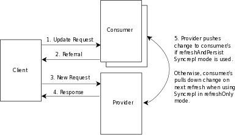

OpenLDAP Software 2.4 Administrator's Guide
OpenLDAP Software 2.4 Administrator's Guide
Table of Contents
Table of Contents.....................................................................................................................................1
Preface..................................................................................................................................................................1
Copyright.................................................................................................................................................1
Scope of this Document...........................................................................................................................1
Acknowledgments....................................................................................................................................2
Amendments............................................................................................................................................2
About this document................................................................................................................................3
1. Introduction to OpenLDAP Directory Services...........................................................................................3
1.1. What is a directory service?..............................................................................................................3
1.2. What is LDAP?.................................................................................................................................6
1.3. When should I use LDAP?...............................................................................................................6
1.4. When should I not use LDAP?.........................................................................................................6
1.5. How does LDAP work?....................................................................................................................7
1.6. What about X.500?...........................................................................................................................7
1.7. What is the difference between LDAPv2 and LDAPv3?.................................................................7
1.8. LDAP vs RDBMS............................................................................................................................9
1.9. What is slapd and what can it do?...................................................................................................11
2. A Quick-Start Guide.....................................................................................................................................15
3. The Big Picture - Configuration Choices....................................................................................................15
3.1. Local Directory Service..................................................................................................................15
3.2. Local Directory Service with Referrals..........................................................................................15
3.3. Replicated Directory Service..........................................................................................................16
3.4. Distributed Local Directory Service...............................................................................................17
4. Building and Installing OpenLDAP Software............................................................................................17
4.1. Obtaining and Extracting the Software...........................................................................................17
4.2. Prerequisite software.......................................................................................................................17
4.2.1. Transport Layer Security.......................................................................................................18
4.2.2. Simple Authentication and Security Layer...........................................................................18
4.2.3. Kerberos Authentication Service...........................................................................................18
4.2.4. Database Software.................................................................................................................19
4.2.5. Threads..................................................................................................................................19
4.2.6. TCP Wrappers.......................................................................................................................19
4.3. Running configure..........................................................................................................................20
4.4. Building the Software.....................................................................................................................20
4.5. Testing the Software.......................................................................................................................20
4.6. Installing the Software....................................................................................................................23
5. Configuring slapd..........................................................................................................................................23
5.1. Configuration Layout......................................................................................................................25
5.2. Configuration Directives.................................................................................................................26
5.2.1. cn=config...............................................................................................................................27
5.2.2. cn=module.............................................................................................................................28
5.2.3. cn=schema.............................................................................................................................29
i
OpenLDAP Software 2.4 Administrator's Guide
Table of Contents
5. Configuring slapd
5.2.4. Backend-specific Directives..................................................................................................29
5.2.5. Database-specific Directives.................................................................................................34
5.2.6. BDB and HDB Database Directives.....................................................................................38
5.3. Configuration Example...................................................................................................................40
5.4. Converting old style slapd.conf(5) file to cn=config format..........................................................43
6. The slapd Configuration File.......................................................................................................................43
6.1. Configuration File Format..............................................................................................................44
6.2. Configuration File Directives.........................................................................................................44
6.2.1. Global Directives...................................................................................................................46
6.2.2. General Backend Directives..................................................................................................47
6.2.3. General Database Directives.................................................................................................51
6.2.4. BDB and HDB Database Directives.....................................................................................51
6.3. Configuration File Example............................................................................................................53
7. Running slapd................................................................................................................................................53
7.1. Command-Line Options.................................................................................................................55
7.2. Starting slapd..................................................................................................................................55
7.3. Stopping slapd.................................................................................................................................57
8. Access Control...............................................................................................................................................57
8.1. Introduction.....................................................................................................................................57
8.2. Access Control via Static Configuration.........................................................................................58
8.2.1. What to control access to.......................................................................................................59
8.2.2. Who to grant access to...........................................................................................................60
8.2.3. The access to grant................................................................................................................60
8.2.4. Access Control Evaluation....................................................................................................61
8.2.5. Access Control Examples......................................................................................................62
8.3. Access Control via Dynamic Configuration...................................................................................63
8.3.1. What to control access to.......................................................................................................64
8.3.2. Who to grant access to...........................................................................................................65
8.3.3. The access to grant................................................................................................................65
8.3.4. Access Control Evaluation....................................................................................................66
8.3.5. Access Control Examples......................................................................................................67
8.3.6. Access Control Ordering.......................................................................................................68
8.4. Access Control Common Examples...............................................................................................68
8.4.1. Basic ACLs............................................................................................................................69
8.4.2. Matching Anonymous and Authenticated users....................................................................69
8.4.3. Controlling rootdn access......................................................................................................70
8.4.4. Managing access with Groups...............................................................................................71
8.4.5. Granting access to a subset of attributes...............................................................................71
8.4.6. Allowing a user write to all entries below theirs...................................................................72
8.4.7. Allowing entry creation.........................................................................................................73
8.4.8. Tips for using regular expressions in Access Control...........................................................74
8.4.9. Granting and Denying access based on security strength factors (ssf).................................74
8.4.10. When things aren't working as expected.............................................................................75
8.5. Sets - Granting rights based on relationships..................................................................................75
ii
OpenLDAP Software 2.4 Administrator's Guide
Table of Contents
8. Access Control
8.5.1. Groups of Groups..................................................................................................................76
8.5.2. Group ACLs without DN syntax...........................................................................................77
8.5.3. Following references.............................................................................................................79
9. Limits.............................................................................................................................................................79
9.1. Introduction.....................................................................................................................................79
9.2. Soft and Hard limits........................................................................................................................79
9.3. Global Limits..................................................................................................................................80
9.4. Per-Database Limits........................................................................................................................80
9.4.1. Specify who the limits apply to.............................................................................................80
9.4.2. Specify time limits.................................................................................................................81
9.4.3. Specifying size limits............................................................................................................81
9.4.4. Size limits and Paged Results................................................................................................81
9.5. Example Limit Configurations.......................................................................................................81
9.5.1. Simple Global Limits............................................................................................................82
9.5.2. Global Hard and Soft Limits.................................................................................................82
9.5.3. Giving specific users larger limits.........................................................................................82
9.5.4. Limiting who can do paged searches....................................................................................82
9.6. Further Information.........................................................................................................................83
10. Database Creation and Maintenance Tools..............................................................................................83
10.1. Creating a database over LDAP....................................................................................................84
10.2. Creating a database off-line..........................................................................................................85
10.2.1. The slapadd program...........................................................................................................86
10.2.2. The slapindex program........................................................................................................86
10.2.3. The slapcat program............................................................................................................86
10.3. The LDIF text entry format...........................................................................................................89
11. Backends......................................................................................................................................................89
11.1. Berkeley DB Backends.................................................................................................................89
11.1.1. Overview.............................................................................................................................89
11.1.2. back-bdb/back-hdb Configuration.......................................................................................89
11.1.3. Further Information.............................................................................................................89
11.2. LDAP............................................................................................................................................89
11.2.1. Overview.............................................................................................................................90
11.2.2. back-ldap Configuration......................................................................................................91
11.2.3. Further Information.............................................................................................................91
11.3. LDIF..............................................................................................................................................91
11.3.1. Overview.............................................................................................................................91
11.3.2. back-ldif Configuration.......................................................................................................92
11.3.3. Further Information.............................................................................................................92
11.4. LMDB...........................................................................................................................................92
11.4.1. Overview.............................................................................................................................92
11.4.2. back-mdb Configuration......................................................................................................92
11.4.3. Further Information.............................................................................................................92
11.5. Metadirectory................................................................................................................................93
11.5.1. Overview.............................................................................................................................93
iii
OpenLDAP Software 2.4 Administrator's Guide
Table of Contents
11. Backends
11.5.2. back-meta Configuration.....................................................................................................93
11.5.3. Further Information.............................................................................................................93
11.6. Monitor.........................................................................................................................................93
11.6.1. Overview.............................................................................................................................93
11.6.2. back-monitor Configuration................................................................................................94
11.6.3. Further Information.............................................................................................................94
11.7. Null...............................................................................................................................................94
11.7.1. Overview.............................................................................................................................95
11.7.2. back-null Configuration......................................................................................................95
11.7.3. Further Information.............................................................................................................95
11.8. Passwd..........................................................................................................................................95
11.8.1. Overview.............................................................................................................................95
11.8.2. back-passwd Configuration.................................................................................................96
11.8.3. Further Information.............................................................................................................96
11.9. Perl/Shell.......................................................................................................................................96
11.9.1. Overview.............................................................................................................................96
11.9.2. back-perl/back-shell Configuration.....................................................................................96
11.9.3. Further Information.............................................................................................................96
11.10. Relay...........................................................................................................................................97
11.10.1. Overview...........................................................................................................................97
11.10.2. back-relay Configuration...................................................................................................97
11.10.3. Further Information...........................................................................................................97
11.11. SQL.............................................................................................................................................97
11.11.1. Overview...........................................................................................................................97
11.11.2. back-sql Configuration......................................................................................................99
11.11.3. Further Information.........................................................................................................101
12. Overlays.....................................................................................................................................................102
12.1. Access Logging...........................................................................................................................102
12.1.1. Overview...........................................................................................................................102
12.1.2. Access Logging Configuration..........................................................................................103
12.1.3. Further Information...........................................................................................................103
12.2. Audit Logging.............................................................................................................................103
12.2.1. Overview...........................................................................................................................104
12.2.2. Audit Logging Configuration............................................................................................104
12.2.3. Further Information...........................................................................................................104
12.3. Chaining......................................................................................................................................105
12.3.1. Overview...........................................................................................................................105
12.3.2. Chaining Configuration.....................................................................................................106
12.3.3. Handling Chaining Errors.................................................................................................106
12.3.4. Read-Back of Chained Modifications...............................................................................106
12.3.5. Further Information...........................................................................................................106
12.4. Constraints..................................................................................................................................106
12.4.1. Overview...........................................................................................................................106
12.4.2. Constraint Configuration...................................................................................................107
12.4.3. Further Information...........................................................................................................107
12.5. Dynamic Directory Services.......................................................................................................107
iv
OpenLDAP Software 2.4 Administrator's Guide
Table of Contents
12. Overlays
12.5.1. Overview...........................................................................................................................107
12.5.2. Dynamic Directory Service Configuration........................................................................108
12.5.3. Further Information...........................................................................................................109
12.6. Dynamic Groups.........................................................................................................................109
12.6.1. Overview...........................................................................................................................109
12.6.2. Dynamic Group Configuration..........................................................................................109
12.7. Dynamic Lists.............................................................................................................................109
12.7.1. Overview...........................................................................................................................109
12.7.2. Dynamic List Configuration..............................................................................................111
12.7.3. Further Information...........................................................................................................111
12.8. Reverse Group Membership Maintenance..................................................................................111
12.8.1. Overview...........................................................................................................................111
12.8.2. Member Of Configuration.................................................................................................112
12.8.3. Further Information...........................................................................................................112
12.9. The Proxy Cache Engine............................................................................................................112
12.9.1. Overview...........................................................................................................................113
12.9.2. Proxy Cache Configuration...............................................................................................115
12.9.3. Further Information...........................................................................................................115
12.10. Password Policies.....................................................................................................................115
12.10.1. Overview.........................................................................................................................116
12.10.2. Password Policy Configuration.......................................................................................117
12.10.3. Further Information.........................................................................................................117
12.11. Referential Integrity..................................................................................................................118
12.11.1. Overview.........................................................................................................................118
12.11.2. Referential Integrity Configuration.................................................................................119
12.11.3. Further Information.........................................................................................................119
12.12. Return Code..............................................................................................................................119
12.12.1. Overview.........................................................................................................................119
12.12.2. Return Code Configuration.............................................................................................120
12.12.3. Further Information.........................................................................................................120
12.13. Rewrite/Remap.........................................................................................................................120
12.13.1. Overview.........................................................................................................................120
12.13.2. Rewrite/Remap Configuration........................................................................................120
12.13.3. Further Information.........................................................................................................120
12.14. Sync Provider............................................................................................................................121
12.14.1. Overview.........................................................................................................................121
12.14.2. Sync Provider Configuration...........................................................................................121
12.14.3. Further Information.........................................................................................................121
12.15. Translucent Proxy.....................................................................................................................121
12.15.1. Overview.........................................................................................................................121
12.15.2. Translucent Proxy Configuration....................................................................................123
12.15.3. Further Information.........................................................................................................123
12.16. Attribute Uniqueness................................................................................................................123
12.16.1. Overview.........................................................................................................................123
12.16.2. Attribute Uniqueness Configuration...............................................................................124
12.16.3. Further Information.........................................................................................................125
12.17. Value Sorting............................................................................................................................125
v
OpenLDAP Software 2.4 Administrator's Guide
Table of Contents
12. Overlays
12.17.1. Overview.........................................................................................................................125
12.17.2. Value Sorting Configuration...........................................................................................126
12.17.3. Further Information.........................................................................................................126
12.18. Overlay Stacking.......................................................................................................................126
12.18.1. Overview.........................................................................................................................126
12.18.2. Example Scenarios..........................................................................................................127
13. Schema Specification................................................................................................................................127
13.1. Distributed Schema Files............................................................................................................127
13.2. Extending Schema......................................................................................................................128
13.2.1. Object Identifiers...............................................................................................................129
13.2.2. Naming Elements..............................................................................................................129
13.2.3. Local schema file...............................................................................................................129
13.2.4. Attribute Type Specification.............................................................................................132
13.2.5. Object Class Specification.................................................................................................133
13.2.6. OID Macros.......................................................................................................................135
14. Security Considerations............................................................................................................................135
14.1. Network Security........................................................................................................................135
14.1.1. Selective Listening............................................................................................................135
14.1.2. IP Firewall.........................................................................................................................135
14.1.3. TCP Wrappers...................................................................................................................136
14.2. Data Integrity and Confidentiality Protection.............................................................................136
14.2.1. Security Strength Factors..................................................................................................136
14.3. Authentication Methods..............................................................................................................136
14.3.1. "simple" method................................................................................................................137
14.3.2. SASL method....................................................................................................................137
14.4. Password Storage........................................................................................................................138
14.4.1. SSHA password storage scheme.......................................................................................138
14.4.2. CRYPT password storage scheme....................................................................................138
14.4.3. MD5 password storage scheme.........................................................................................138
14.4.4. SMD5 password storage scheme.......................................................................................139
14.4.5. SHA password storage scheme.........................................................................................139
14.4.6. SASL password storage scheme........................................................................................139
14.5. Pass-Through authentication.......................................................................................................139
14.5.1. Configuring slapd to use an authentication provider.........................................................140
14.5.2. Configuring saslauthd........................................................................................................140
14.5.3. Testing pass-through authentication..................................................................................143
15. Using SASL................................................................................................................................................143
15.1. SASL Security Considerations...................................................................................................144
15.2. SASL Authentication..................................................................................................................144
15.2.1. GSSAPI.............................................................................................................................145
15.2.2. KERBEROS_V4...............................................................................................................146
15.2.3. DIGEST-MD5...................................................................................................................147
15.2.4. EXTERNAL......................................................................................................................147
15.2.5. Mapping Authentication Identities....................................................................................148
vi
OpenLDAP Software 2.4 Administrator's Guide
Table of Contents
15. Using SASL
15.2.6. Direct Mapping..................................................................................................................149
15.2.7. Search-based mappings.....................................................................................................150
15.3. SASL Proxy Authorization.........................................................................................................151
15.3.1. Uses of Proxy Authorization.............................................................................................151
15.3.2. SASL Authorization Identities..........................................................................................152
15.3.3. Proxy Authorization Rules................................................................................................155
16. Using TLS..................................................................................................................................................155
16.1. TLS Certificates..........................................................................................................................155
16.1.1. Server Certificates.............................................................................................................155
16.1.2. Client Certificates..............................................................................................................155
16.2. TLS Configuration......................................................................................................................155
16.2.1. Server Configuration.........................................................................................................158
16.2.2. Client Configuration..........................................................................................................161
17. Constructing a Distributed Directory Service........................................................................................161
17.1. Subordinate Knowledge Information..........................................................................................161
17.2. Superior Knowledge Information...............................................................................................162
17.3. The ManageDsaIT Control.........................................................................................................163
18. Replication.................................................................................................................................................163
18.1. Replication Technology..............................................................................................................163
18.1.1. LDAP Sync Replication....................................................................................................167
18.2. Deployment Alternatives............................................................................................................167
18.2.1. Delta-syncrepl replication.................................................................................................167
18.2.2. N-Way Multi-Master replication.......................................................................................168
18.2.3. MirrorMode replication.....................................................................................................169
18.2.4. Syncrepl Proxy Mode........................................................................................................170
18.3. Configuring the different replication types.................................................................................170
18.3.1. Syncrepl.............................................................................................................................172
18.3.2. Delta-syncrepl...................................................................................................................174
18.3.3. N-Way Multi-Master.........................................................................................................175
18.3.4. MirrorMode.......................................................................................................................177
18.3.5. Syncrepl Proxy..................................................................................................................183
19. Maintenance..............................................................................................................................................183
19.1. Directory Backups......................................................................................................................183
19.2. Berkeley DB Logs.......................................................................................................................185
19.3. Checkpointing.............................................................................................................................185
19.4. Migration....................................................................................................................................187
20. Monitoring.................................................................................................................................................187
20.1. Monitor configuration via cn=config(5).....................................................................................187
20.2. Monitor configuration via slapd.conf(5).....................................................................................188
20.3. Accessing Monitoring Information.............................................................................................189
20.4. Monitor Information...................................................................................................................190
20.4.1. Backends...........................................................................................................................191
vii
OpenLDAP Software 2.4 Administrator's Guide
Table of Contents
20. Monitoring
20.4.2. Connections.......................................................................................................................191
20.4.3. Databases...........................................................................................................................192
20.4.4. Listener..............................................................................................................................192
20.4.5. Log.....................................................................................................................................192
20.4.6. Operations.........................................................................................................................193
20.4.7. Overlays.............................................................................................................................193
20.4.8. SASL.................................................................................................................................193
20.4.9. Statistics.............................................................................................................................193
20.4.10. Threads............................................................................................................................194
20.4.11. Time.................................................................................................................................194
20.4.12. TLS..................................................................................................................................194
20.4.13. Waiters.............................................................................................................................195
21. Tuning........................................................................................................................................................195
21.1. Performance Factors...................................................................................................................195
21.1.1. Memory.............................................................................................................................195
21.1.2. Disks..................................................................................................................................195
21.1.3. Network Topology............................................................................................................195
21.1.4. Directory Layout Design...................................................................................................196
21.1.5. Expected Usage.................................................................................................................196
21.2. Indexes........................................................................................................................................196
21.2.1. Understanding how a search works...................................................................................196
21.2.2. What to index....................................................................................................................196
21.2.3. Presence indexing..............................................................................................................196
21.3. Logging.......................................................................................................................................197
21.3.1. What log level to use.........................................................................................................197
21.3.2. What to watch out for........................................................................................................197
21.3.3. Improving throughput........................................................................................................197
21.4. Caching.......................................................................................................................................198
21.4.1. Berkeley DB Cache...........................................................................................................200
21.4.2. slapd(8) Entry Cache (cachesize)......................................................................................200
21.4.3. IDL Cache (idlcachesize)..................................................................................................200
21.5. slapd(8) Threads..........................................................................................................................201
22. Troubleshooting........................................................................................................................................201
22.1. User or Software errors?.............................................................................................................201
22.2. Checklist.....................................................................................................................................201
22.3. OpenLDAP Bugs........................................................................................................................202
22.4. 3rd party software error..............................................................................................................202
22.5. How to contact the OpenLDAP Project......................................................................................202
22.6. How to present your problem.....................................................................................................202
22.7. Debugging slapd(8).....................................................................................................................202
22.8. Commercial Support...................................................................................................................203
A. Changes Since Previous Release...............................................................................................................203
A.1. New Guide Sections.....................................................................................................................203
A.2. New Features and Enhancements in 2.4......................................................................................203
viii
OpenLDAP Software 2.4 Administrator's Guide
Table of Contents
A. Changes Since Previous Release
A.2.1. Better cn=config functionality............................................................................................204
A.2.2. Better cn=schema functionality..........................................................................................204
A.2.3. More sophisticated Syncrepl configurations......................................................................204
A.2.4. N-Way Multimaster Replication........................................................................................204
A.2.5. Replicating slapd Configuration (syncrepl and cn=config)...............................................204
A.2.6. Push-Mode Replication......................................................................................................205
A.2.7. More extensive TLS configuration control........................................................................205
A.2.8. Performance enhancements................................................................................................205
A.2.9. New overlays......................................................................................................................205
A.2.10. New features in existing Overlays....................................................................................206
A.2.11. New features in slapd.......................................................................................................206
A.2.12. New features in libldap.....................................................................................................206
A.2.13. New clients, tools and tool enhancements........................................................................206
A.2.14. New build options.............................................................................................................206
A.3. Obsolete Features Removed From 2.4.........................................................................................206
A.3.1. Slurpd.................................................................................................................................206
A.3.2. back-ldbm...........................................................................................................................207
B. Upgrading from 2.3.x.................................................................................................................................207
B.1. cn=config olc* attributes..............................................................................................................207
B.2. ACLs: searches require privileges on the search base.................................................................209
C. Common errors encountered when using OpenLDAP Software..........................................................209
C.1. Common causes of LDAP errors.................................................................................................209
C.1.1. ldap_*: Can't contact LDAP server....................................................................................209
C.1.2. ldap_*: No such object.......................................................................................................210
C.1.3. ldap_*: Can't chase referral................................................................................................210
C.1.4. ldap_*: server is unwilling to perform................................................................................211
C.1.5. ldap_*: Insufficient access..................................................................................................211
C.1.6. ldap_*: Invalid DN syntax..................................................................................................211
C.1.7. ldap_*: Referral hop limit exceeded...................................................................................211
C.1.8. ldap_*: operations error......................................................................................................211
C.1.9. ldap_*: other error..............................................................................................................211
C.1.10. ldap_add/modify: Invalid syntax......................................................................................212
C.1.11. ldap_add/modify: Object class violation..........................................................................213
C.1.12. ldap_add: No such object..................................................................................................213
C.1.13. ldap add: invalid structural object class chain..................................................................214
C.1.14. ldap_add: no structuralObjectClass operational attribute.................................................214
C.1.15. ldap_add/modify/rename: Naming violation....................................................................215
C.1.16. ldap_add/delete/modify/rename: no global superior knowledge......................................215
C.1.17. ldap_bind: Insufficient access...........................................................................................215
C.1.18. ldap_bind: Invalid credentials...........................................................................................216
C.1.19. ldap_bind: Protocol error..................................................................................................216
C.1.20. ldap_modify: cannot modify object class.........................................................................216
C.1.21. ldap_sasl_interactive_bind_s: ..........................................................................................216
C.1.22. ldap_sasl_interactive_bind_s: No such Object.................................................................216
C.1.23. ldap_sasl_interactive_bind_s: No such attribute..............................................................217
ix
OpenLDAP Software 2.4 Administrator's Guide
Table of Contents
C. Common errors encountered when using OpenLDAP Software
C.1.24. ldap_sasl_interactive_bind_s: Unknown authentication method.....................................217
C.1.25. ldap_sasl_interactive_bind_s: Local error (82)................................................................217
C.1.26. ldap_search: Partial results and referral received.............................................................217
C.1.27. ldap_start_tls: Operations error........................................................................................217
C.2. Other Errors..................................................................................................................................217
C.2.1. ber_get_next on fd X failed errno=34 (Numerical result out of range)..............................217
C.2.2. ber_get_next on fd X failed errno=11 (Resource temporarily unavailable).......................218
C.2.3. daemon: socket() failed errno=97 (Address family not supported)....................................218
C.2.4. GSSAPI: gss_acquire_cred: Miscellaneous failure; Permission denied;...........................218
C.2.5. access from unknown denied..............................................................................................219
C.2.6. ldap_read: want=# error=Resource temporarily unavailable.............................................219
C.2.7. `make test' fails...................................................................................................................220
C.2.8. ldap_*: Internal (implementation specific) error (80) - additional info: entry index
delete failed............................................................................................................................220
C.2.9. ldap_sasl_interactive_bind_s: Can't contact LDAP server (-1)..........................................221
D. Recommended OpenLDAP Software Dependency Versions.................................................................221
D.1. Dependency Versions..................................................................................................................223
E. Real World OpenLDAP Deployments and Examples............................................................................225
F. OpenLDAP Software Contributions.........................................................................................................225
F.1. Client APIs...................................................................................................................................225
F.1.1. ldapc++................................................................................................................................225
F.1.2. ldaptcl..................................................................................................................................225
F.2. Overlays........................................................................................................................................225
F.2.1. acl........................................................................................................................................225
F.2.2. addpartial.............................................................................................................................225
F.2.3. allop.....................................................................................................................................225
F.2.4. autogroup.............................................................................................................................225
F.2.5. comp_match........................................................................................................................225
F.2.6. denyop.................................................................................................................................225
F.2.7. dsaschema...........................................................................................................................226
F.2.8. lastmod................................................................................................................................226
F.2.9. nops.....................................................................................................................................226
F.2.10. nssov..................................................................................................................................226
F.2.11. passwd...............................................................................................................................226
F.2.12. proxyOld...........................................................................................................................226
F.2.13. smbk5pwd.........................................................................................................................226
F.2.14. trace...................................................................................................................................226
F.2.15. usn.....................................................................................................................................226
F.3. Tools.............................................................................................................................................226
F.3.1. Statistic Logging.................................................................................................................226
F.4. SLAPI Plugins..............................................................................................................................227
F.4.1. addrdnvalues.......................................................................................................................229
x
OpenLDAP Software 2.4 Administrator's Guide
Table of Contents
G. Configuration File Examples....................................................................................................................229
G.1. slapd.conf.....................................................................................................................................229
G.2. ldap.conf.......................................................................................................................................229
G.3. a-n-other.conf...............................................................................................................................231
H. LDAP Result Codes...................................................................................................................................231
H.1. Non-Error Result Codes...............................................................................................................231
H.2. Result Codes................................................................................................................................231
H.3. success (0)....................................................................................................................................231
H.4. operationsError (1).......................................................................................................................231
H.5. protocolError (2)..........................................................................................................................232
H.6. timeLimitExceeded (3)................................................................................................................232
H.7. sizeLimitExceeded (4).................................................................................................................232
H.8. compareFalse (5)..........................................................................................................................232
H.9. compareTrue (6)...........................................................................................................................232
H.10. authMethodNotSupported (7)....................................................................................................232
H.11. strongerAuthRequired (8)..........................................................................................................232
H.12. referral (10)................................................................................................................................232
H.13. adminLimitExceeded (11)..........................................................................................................233
H.14. unavailableCriticalExtension (12)..............................................................................................233
H.15. confidentialityRequired (13)......................................................................................................233
H.16. saslBindInProgress (14).............................................................................................................233
H.17. noSuchAttribute (16)..................................................................................................................233
H.18. undefinedAttributeType (17).....................................................................................................233
H.19. inappropriateMatching (18).......................................................................................................233
H.20. constraintViolation (19).............................................................................................................233
H.21. attributeOrValueExists (20).......................................................................................................233
H.22. invalidAttributeSyntax (21).......................................................................................................233
H.23. noSuchObject (32).....................................................................................................................234
H.24. aliasProblem (33).......................................................................................................................234
H.25. invalidDNSyntax (34)................................................................................................................234
H.26. aliasDereferencingProblem (36)................................................................................................234
H.27. inappropriateAuthentication (48)...............................................................................................234
H.28. invalidCredentials (49)...............................................................................................................234
H.29. insufficientAccessRights (50)....................................................................................................234
H.30. busy (51)....................................................................................................................................234
H.31. unavailable (52)..........................................................................................................................234
H.32. unwillingToPerform (53)...........................................................................................................234
H.33. loopDetect (54)..........................................................................................................................235
H.34. namingViolation (64).................................................................................................................235
H.35. objectClassViolation (65)..........................................................................................................235
H.36. notAllowedOnNonLeaf (66)......................................................................................................235
H.37. notAllowedOnRDN (67)............................................................................................................235
H.38. entryAlreadyExists (68).............................................................................................................235
H.39. objectClassModsProhibited (69)................................................................................................235
H.40. affectsMultipleDSAs (71)..........................................................................................................235
H.41. other (80)....................................................................................................................................237
xi
OpenLDAP Software 2.4 Administrator's Guide
Table of Contents
I. Glossary........................................................................................................................................................237
I.1. Terms.............................................................................................................................................240
I.2. Related Organizations....................................................................................................................240
I.3. Related Products............................................................................................................................241
I.4. References.....................................................................................................................................245
J. Generic configure Instructions..................................................................................................................249
K. OpenLDAP Software Copyright Notices.................................................................................................249
K.1. OpenLDAP Copyright Notice......................................................................................................249
K.2. Additional Copyright Notices......................................................................................................250
K.3. University of Michigan Copyright Notice...................................................................................251
L. OpenLDAP Public License.......................................................................................................................title
xii
Preface
Copyright
Copyright 1998-2012, The OpenLDAP Foundation, All Rights Reserved.
Copyright 1992-1996, Regents of the University of Michigan, All Rights Reserved.
This document is considered a part of OpenLDAP Software. This document is subject to terms of conditions
set forth in OpenLDAP Software Copyright Notices and the OpenLDAP Public License. Complete copies of
the notices and associated license can be found in Appendix K and L, respectively.
Portions of OpenLDAP Software and this document may be copyright by other parties and/or subject to
additional restrictions. Individual source files should be consulted for additional copyright notices.
Scope of this Document
This document provides a guide for installing OpenLDAP Software 2.4 (http://www.openldap.org/software/)
on UNIX (and UNIX-like) systems. The document is aimed at experienced system administrators with basic
understanding of LDAP-based directory services.
This document is meant to be used in conjunction with other OpenLDAP information resources provided with
the software package and on the project's site (http://www.OpenLDAP.org/) on the World Wide Web. The site
makes available a number of resources.
OpenLDAP Resources
Resource
URL
Document Catalog
http://www.OpenLDAP.org/doc/
Frequently Asked Questions http://www.OpenLDAP.org/faq/
Issue Tracking System
http://www.OpenLDAP.org/its/
Mailing Lists
http://www.OpenLDAP.org/lists/
Manual Pages
http://www.OpenLDAP.org/software/man.cgi
Software Pages
http://www.OpenLDAP.org/software/
Support Pages
http://www.OpenLDAP.org/support/
This document is not a complete reference for OpenLDAP software; the manual pages are the definitive
documentation. For best results, you should use the manual pages that were installed on your system with
your version of OpenLDAP software so that you're looking at documentation that matches the code. While the
OpenLDAP web site also provides the manual pages for convenience, you can not assume that they corresond
to the particular version you're running.
Acknowledgments
The OpenLDAP Project is comprised of a team of volunteers. This document would not be possible without
their contribution of time and energy.
1
OpenLDAP Software 2.4 Administrator's Guide
The OpenLDAP Project would also like to thank the University of Michigan LDAP Team for building the
foundation of LDAP software and information to which OpenLDAP Software is built upon. This document is
based upon University of Michigan document: The SLAPD and SLURPD Administrators Guide.
Amendments
Suggested enhancements and corrections to this document should be submitted using the OpenLDAP Issue
Tracking System (http://www.openldap.org/its/).
About this document
This document was produced using the Simple Document Format (SDF) documentation system
(http://search.cpan.org/src/IANC/sdf-2.001/doc/catalog.html) developed by Ian Clatworthy. Tools for SDF are
available from CPAN (http://search.cpan.org/search?query=SDF&mode=dist).
2
1. Introduction to OpenLDAP Directory Services
This document describes how to build, configure, and operate OpenLDAP Software to provide directory
services. This includes details on how to configure and run the Standalone LDAP Daemon, slapd(8). It is
intended for new and experienced administrators alike. This section provides a basic introduction to directory
services and, in particular, the directory services provided by slapd(8). This introduction is only intended to
provide enough information so one might get started learning about LDAP, X.500, and directory services.
1.1. What is a directory service?
A directory is a specialized database specifically designed for searching and browsing, in additional to
supporting basic lookup and update functions.
Note: A directory is defined by some as merely a database optimized for read access. This definition, at best,
is overly simplistic.
Directories tend to contain descriptive, attribute-based information and support sophisticated filtering
capabilities. Directories generally do not support complicated transaction or roll-back schemes found in
database management systems designed for handling high-volume complex updates. Directory updates are
typically simple all-or-nothing changes, if they are allowed at all. Directories are generally tuned to give quick
response to high-volume lookup or search operations. They may have the ability to replicate information
widely in order to increase availability and reliability, while reducing response time. When directory
information is replicated, temporary inconsistencies between the replicas may be okay, as long as
inconsistencies are resolved in a timely manner.
There are many different ways to provide a directory service. Different methods allow different kinds of
information to be stored in the directory, place different requirements on how that information can be
referenced, queried and updated, how it is protected from unauthorized access, etc. Some directory services
are local, providing service to a restricted context (e.g., the finger service on a single machine). Other services
are global, providing service to a much broader context (e.g., the entire Internet). Global services are usually
distributed, meaning that the data they contain is spread across many machines, all of which cooperate to
provide the directory service. Typically a global service defines a uniform namespace which gives the same
view of the data no matter where you are in relation to the data itself.
A web directory, such as provided by the Open Directory Project <http://dmoz.org>, is a good example of a
directory service. These services catalog web pages and are specifically designed to support browsing and
searching.
While some consider the Internet Domain Name System (DNS) is an example of a globally distributed
directory service, DNS is not browseable nor searchable. It is more properly described as a globally
distributed lookup service.
1.2. What is LDAP?
LDAP stands for Lightweight Directory Access Protocol. As the name suggests, it is a lightweight protocol
for accessing directory services, specifically X.500-based directory services. LDAP runs over TCP/IP or other
connection oriented transfer services. LDAP is an IETF Standard Track protocol and is specified in
"Lightweight Directory Access Protocol (LDAP) Technical Specification Road Map" RFC4510.
3
OpenLDAP Software 2.4 Administrator's Guide
This section gives an overview of LDAP from a user's perspective.
What kind of information can be stored in the directory? The LDAP information model is based on entries.
An entry is a collection of attributes that has a globally-unique Distinguished Name (DN). The DN is used to
refer to the entry unambiguously. Each of the entry's attributes has a type and one or more values. The types
are typically mnemonic strings, like "cn" for common name, or "mail" for email address. The syntax of
values depend on the attribute type. For example, a cn attribute might contain the value Babs Jensen. A
mail attribute might contain the value "babs@example.com". A jpegPhoto attribute would contain a
photograph in the JPEG (binary) format.
How is the information arranged? In LDAP, directory entries are arranged in a hierarchical tree-like structure.
Traditionally, this structure reflected the geographic and/or organizational boundaries. Entries representing
countries appear at the top of the tree. Below them are entries representing states and national organizations.
Below them might be entries representing organizational units, people, printers, documents, or just about
anything else you can think of. Figure 1.1 shows an example LDAP directory tree using traditional naming.
Figure 1.1: LDAP directory tree (traditional naming)
The tree may also be arranged based upon Internet domain names. This naming approach is becoming
increasing popular as it allows for directory services to be located using the DNS. Figure 1.2 shows an
example LDAP directory tree using domain-based naming.
4
OpenLDAP Software 2.4 Administrator's Guide
Figure 1.2: LDAP directory tree (Internet naming)
In addition, LDAP allows you to control which attributes are required and allowed in an entry through the use
of a special attribute called objectClass. The values of the objectClass attribute determine the
schema rules the entry must obey.
How is the information referenced? An entry is referenced by its distinguished name, which is constructed by
taking the name of the entry itself (called the Relative Distinguished Name or RDN) and concatenating the
names of its ancestor entries. For example, the entry for Barbara Jensen in the Internet naming example above
has an RDN of uid=babs and a DN of uid=babs,ou=People,dc=example,dc=com. The full DN
format is described in RFC4514, "LDAP: String Representation of Distinguished Names."
How is the information accessed? LDAP defines operations for interrogating and updating the directory.
Operations are provided for adding and deleting an entry from the directory, changing an existing entry, and
changing the name of an entry. Most of the time, though, LDAP is used to search for information in the
directory. The LDAP search operation allows some portion of the directory to be searched for entries that
match some criteria specified by a search filter. Information can be requested from each entry that matches the
criteria.
For example, you might want to search the entire directory subtree at and below dc=example,dc=com for
people with the name Barbara Jensen, retrieving the email address of each entry found. LDAP lets you
do this easily. Or you might want to search the entries directly below the st=California,c=US entry for
organizations with the string Acme in their name, and that have a fax number. LDAP lets you do this too. The
next section describes in more detail what you can do with LDAP and how it might be useful to you.
How is the information protected from unauthorized access? Some directory services provide no protection,
allowing anyone to see the information. LDAP provides a mechanism for a client to authenticate, or prove its
identity to a directory server, paving the way for rich access control to protect the information the server
contains. LDAP also supports data security (integrity and confidentiality) services.
5
OpenLDAP Software 2.4 Administrator's Guide
1.3. When should I use LDAP?
This is a very good question. In general, you should use a Directory server when you require data to be
centrally managed, stored and accessible via standards based methods.
Some common examples found throughout the industry are, but not limited to:
Machine Authentication
User Authentication
User/System Groups
Address book
Organization Representation
Asset Tracking
Telephony Information Store
User resource management
E-mail address lookups
Application Configuration store
PBX Configuration store
etc.....
There are various Distributed Schema Files that are standards based, but you can always create your own
Schema Specification.
There are always new ways to use a Directory and apply LDAP principles to address certain problems,
therefore there is no simple answer to this question.
If in doubt, join the general LDAP forum for non-commercial discussions and information relating to LDAP
at: http://www.umich.edu/~dirsvcs/ldap/mailinglist.html and ask
1.4. When should I not use LDAP?
When you start finding yourself bending the directory to do what you require, maybe a redesign is needed. Or
if you only require one application to use and manipulate your data (for discussion of LDAP vs RDBMS,
please read the LDAP vs RDBMS section).
It will become obvious when LDAP is the right tool for the job.
1.5. How does LDAP work?
LDAP utilizes a client-server model. One or more LDAP servers contain the data making up the directory
information tree (DIT). The client connects to servers and asks it a question. The server responds with an
answer and/or with a pointer to where the client can get additional information (typically, another LDAP
server). No matter which LDAP server a client connects to, it sees the same view of the directory; a name
presented to one LDAP server references the same entry it would at another LDAP server. This is an
important feature of a global directory service.
6
OpenLDAP Software 2.4 Administrator's Guide
1.6. What about X.500?
Technically, LDAP is a directory access protocol to an X.500 directory service, the OSI directory service.
Initially, LDAP clients accessed gateways to the X.500 directory service. This gateway ran LDAP between
the client and gateway and X.500's Directory Access Protocol (DAP) between the gateway and the X.500
server. DAP is a heavyweight protocol that operates over a full OSI protocol stack and requires a significant
amount of computing resources. LDAP is designed to operate over TCP/IP and provides most of the
functionality of DAP at a much lower cost.
While LDAP is still used to access X.500 directory service via gateways, LDAP is now more commonly
directly implemented in X.500 servers.
The Standalone LDAP Daemon, or slapd(8), can be viewed as a lightweight X.500 directory server. That is, it
does not implement the X.500's DAP nor does it support the complete X.500 models.
If you are already running a X.500 DAP service and you want to continue to do so, you can probably stop
reading this guide. This guide is all about running LDAP via slapd(8), without running X.500 DAP. If you are
not running X.500 DAP, want to stop running X.500 DAP, or have no immediate plans to run X.500 DAP,
read on.
It is possible to replicate data from an LDAP directory server to a X.500 DAP DSA. This requires an
LDAP/DAP gateway. OpenLDAP Software does not include such a gateway.
1.7. What is the difference between LDAPv2 and LDAPv3?
LDAPv3 was developed in the late 1990's to replace LDAPv2. LDAPv3 adds the following features to LDAP:
Strong authentication and data security services via SASL
Certificate authentication and data security services via TLS (SSL)
Internationalization through the use of Unicode
Referrals and Continuations
Schema Discovery
Extensibility (controls, extended operations, and more)
LDAPv2 is historic (RFC3494). As most so-called LDAPv2 implementations (including slapd(8)) do not
conform to the LDAPv2 technical specification, interoperability amongst implementations claiming LDAPv2
support is limited. As LDAPv2 differs significantly from LDAPv3, deploying both LDAPv2 and LDAPv3
simultaneously is quite problematic. LDAPv2 should be avoided. LDAPv2 is disabled by default.
1.8. LDAP vs RDBMS
This question is raised many times, in different forms. The most common, however, is: Why doesn't
OpenLDAP drop Berkeley DB and use a relational database management system (RDBMS) instead? In
general, expecting that the sophisticated algorithms implemented by commercial-grade RDBMS would make
OpenLDAP be faster or somehow better and, at the same time, permitting sharing of data with other
applications.
The short answer is that use of an embedded database and custom indexing system allows OpenLDAP to
provide greater performance and scalability without loss of reliability. OpenLDAP uses Berkeley DB
7
OpenLDAP Software 2.4 Administrator's Guide
concurrent / transactional database software. This is the same software used by leading commercial directory
software.
Now for the long answer. We are all confronted all the time with the choice RDBMSes vs. directories. It is a
hard choice and no simple answer exists.
It is tempting to think that having a RDBMS backend to the directory solves all problems. However, it is a
pig. This is because the data models are very different. Representing directory data with a relational database
is going to require splitting data into multiple tables.
Think for a moment about the person objectclass. Its definition requires attribute types objectclass, sn and cn
and allows attribute types userPassword, telephoneNumber, seeAlso and description. All of these attributes
are multivalued, so a normalization requires putting each attribute type in a separate table.
Now you have to decide on appropriate keys for those tables. The primary key might be a combination of the
DN, but this becomes rather inefficient on most database implementations.
The big problem now is that accessing data from one entry requires seeking on different disk areas. On some
applications this may be OK but in many applications performance suffers.
The only attribute types that can be put in the main table entry are those that are mandatory and single-value.
You may add also the optional single-valued attributes and set them to NULL or something if not present.
But wait, the entry can have multiple objectclasses and they are organized in an inheritance hierarchy. An
entry of objectclass organizationalPerson now has the attributes from person plus a few others and some
formerly optional attribute types are now mandatory.
What to do? Should we have different tables for the different objectclasses? This way the person would have
an entry on the person table, another on organizationalPerson, etc. Or should we get rid of person and put
everything on the second table?
But what do we do with a filter like (cn=*) where cn is an attribute type that appears in many, many
objectclasses. Should we search all possible tables for matching entries? Not very attractive.
Once this point is reached, three approaches come to mind. One is to do full normalization so that each
attribute type, no matter what, has its own separate table. The simplistic approach where the DN is part of the
primary key is extremely wasteful, and calls for an approach where the entry has a unique numeric id that is
used instead for the keys and a main table that maps DNs to ids. The approach, anyway, is very inefficient
when several attribute types from one or more entries are requested. Such a database, though cumbersomely,
can be managed from SQL applications.
The second approach is to put the whole entry as a blob in a table shared by all entries regardless of the
objectclass and have additional tables that act as indices for the first table. Index tables are not database
indices, but are fully managed by the LDAP server-side implementation. However, the database becomes
unusable from SQL. And, thus, a fully fledged database system provides little or no advantage. The full
generality of the database is unneeded. Much better to use something light and fast, like Berkeley DB.
A completely different way to see this is to give up any hopes of implementing the directory data model. In
this case, LDAP is used as an access protocol to data that provides only superficially the directory data model.
For instance, it may be read only or, where updates are allowed, restrictions are applied, such as making
single-value attribute types that would allow for multiple values. Or the impossibility to add new objectclasses
8
OpenLDAP Software 2.4 Administrator's Guide
to an existing entry or remove one of those present. The restrictions span the range from allowed restrictions
(that might be elsewhere the result of access control) to outright violations of the data model. It can be,
however, a method to provide LDAP access to preexisting data that is used by other applications. But in the
understanding that we don't really have a "directory".
Existing commercial LDAP server implementations that use a relational database are either from the first kind
or the third. I don't know of any implementation that uses a relational database to do inefficiently what BDB
does efficiently. For those who are interested in "third way" (exposing EXISTING data from RDBMS as
LDAP tree, having some limitations compared to classic LDAP model, but making it possible to interoperate
between LDAP and SQL applications):
OpenLDAP includes back-sql - the backend that makes it possible. It uses ODBC + additional
metainformation about translating LDAP queries to SQL queries in your RDBMS schema, providing different
levels of access - from read-only to full access depending on RDBMS you use, and your schema.
For more information on concept and limitations, see slapd-sql(5) man page, or the Backends section. There
are also several examples for several RDBMSes in back-sql/rdbms_depend/* subdirectories.
1.9. What is slapd and what can it do?
slapd(8) is an LDAP directory server that runs on many different platforms. You can use it to provide a
directory service of your very own. Your directory can contain pretty much anything you want to put in it.
You can connect it to the global LDAP directory service, or run a service all by yourself. Some of slapd's
more interesting features and capabilities include:
LDAPv3: slapd implements version 3 of Lightweight Directory Access Protocol. slapd supports LDAP over
both IPv4 and IPv6 and Unix IPC.
Simple Authentication and Security Layer: slapd supports strong authentication and data security (integrity
and confidentiality) services through the use of SASL. slapd's SASL implementation utilizes Cyrus SASL
software which supports a number of mechanisms including DIGEST-MD5, EXTERNAL, and GSSAPI.
Transport Layer Security: slapd supports certificate-based authentication and data security (integrity and
confidentiality) services through the use of TLS (or SSL). slapd's TLS implementation can utilize OpenSSL,
GnuTLS, or MozNSS software.
Topology control: slapd can be configured to restrict access at the socket layer based upon network topology
information. This feature utilizes TCP wrappers.
Access control: slapd provides a rich and powerful access control facility, allowing you to control access to
the information in your database(s). You can control access to entries based on LDAP authorization
information, IP address, domain name and other criteria. slapd supports both static and dynamic access
control information.
Internationalization: slapd supports Unicode and language tags.
Choice of database backends: slapd comes with a variety of different database backends you can choose
from. They include BDB, a high-performance transactional database backend; HDB, a hierarchical
high-performance transactional backend; SHELL, a backend interface to arbitrary shell scripts; and PASSWD,
a simple backend interface to the passwd(5) file. The BDB and HDB backends utilize Oracle Berkeley DB.
9
OpenLDAP Software 2.4 Administrator's Guide
Multiple database instances: slapd can be configured to serve multiple databases at the same time. This
means that a single slapd server can respond to requests for many logically different portions of the LDAP
tree, using the same or different database backends.
Generic modules API: If you require even more customization, slapd lets you write your own modules
easily. slapd consists of two distinct parts: a front end that handles protocol communication with LDAP
clients; and modules which handle specific tasks such as database operations. Because these two pieces
communicate via a well-defined C API, you can write your own customized modules which extend slapd in
numerous ways. Also, a number of programmable database modules are provided. These allow you to expose
external data sources to slapd using popular programming languages (Perl, shell, and SQL).
Threads: slapd is threaded for high performance. A single multi-threaded slapd process handles all incoming
requests using a pool of threads. This reduces the amount of system overhead required while providing high
performance.
Replication: slapd can be configured to maintain shadow copies of directory information. This
single-master/multiple-slave replication scheme is vital in high-volume environments where a single slapd
installation just doesn't provide the necessary availability or reliability. For extremely demanding
environments where a single point of failure is not acceptable, multi-master replication is also available. slapd
includes support for LDAP Sync-based replication.
Proxy Cache: slapd can be configured as a caching LDAP proxy service.
Configuration: slapd is highly configurable through a single configuration file which allows you to change
just about everything you'd ever want to change. Configuration options have reasonable defaults, making your
job much easier. Configuration can also be performed dynamically using LDAP itself, which greatly improves
manageability.
10
2. A Quick-Start Guide
The following is a quick start guide to OpenLDAP Software 2.4, including the Standalone LDAP Daemon,
slapd(8).
It is meant to walk you through the basic steps needed to install and configure OpenLDAP Software. It should
be used in conjunction with the other chapters of this document, manual pages, and other materials provided
with the distribution (e.g. the INSTALL document) or on the OpenLDAP web site
(http://www.OpenLDAP.org), in particular the OpenLDAP Software FAQ
(http://www.OpenLDAP.org/faq/?file=2).
If you intend to run OpenLDAP Software seriously, you should review all of this document before attempting
to install the software.
Note: This quick start guide does not use strong authentication nor any integrity or confidential protection
services. These services are described in other chapters of the OpenLDAP Administrator's Guide.
Get the software
1.
You can obtain a copy of the software by following the instructions on the OpenLDAP Software
download page (http://www.openldap.org/software/download/). It is recommended that new users
start with the latest release.
Unpack the distribution
2.
Pick a directory for the source to live under, change directory to there, and unpack the distribution
using the following commands:
gunzip -c openldap-VERSION.tgz | tar xvfB -
then relocate yourself into the distribution directory:
cd openldap-VERSION
You'll have to replace VERSION with the version name of the release.
Review documentation
3.
You should now review the COPYRIGHT, LICENSE, README and INSTALL documents provided
with the distribution. The COPYRIGHT and LICENSE provide information on acceptable use,
copying, and limitation of warranty of OpenLDAP Software.
You should also review other chapters of this document. In particular, the Building and Installing
OpenLDAP Software chapter of this document provides detailed information on prerequisite software
and installation procedures.
Run
4.
configure
You will need to run the provided configure script to configure the distribution for building on
your system. The configure script accepts many command line options that enable or disable
optional software features. Usually the defaults are okay, but you may want to change them. To get a
complete list of options that configure accepts, use the --help option:
./configure --help
However, given that you are using this guide, we'll assume you are brave enough to just let
configure determine what's best:
11
OpenLDAP Software 2.4 Administrator's Guide
./configure
Assuming configure doesn't dislike your system, you can proceed with building the software. If
configure did complain, well, you'll likely need to go to the Software FAQ Installation section
(http://www.openldap.org/faq/?file=8) and/or actually read the Building and Installing OpenLDAP
Software chapter of this document.
Build the software
5.
.
The next step is to build the software. This step has two parts, first we construct dependencies and
then we compile the software:
make depend
make
Both makes should complete without error.
Test the build
6.
.
To ensure a correct build, you should run the test suite (it only takes a few minutes):
make test
Tests which apply to your configuration will run and they should pass. Some tests, such as the
replication test, may be skipped.
Install the software
7.
.
You are now ready to install the software; this usually requires super-user privileges:
su root -c 'make install'
Everything should now be installed under /usr/local (or whatever installation prefix was used by
configure).
Edit the configuration file
8.
.
Use your favorite editor to edit the provided slapd.conf(5) example (usually installed as
/usr/local/etc/openldap/slapd.conf) to contain a BDB database definition of the form:
database bdb
suffix "dc=<MY-DOMAIN>,dc=<COM>"
rootdn "cn=Manager,dc=<MY-DOMAIN>,dc=<COM>"
rootpw secret
directory /usr/local/var/openldap-data
Be sure to replace <MY-DOMAIN> and <COM> with the appropriate domain components of your
domain name. For example, for example.com, use:
database bdb
suffix "dc=example,dc=com"
rootdn "cn=Manager,dc=example,dc=com"
rootpw secret
directory /usr/local/var/openldap-data
If your domain contains additional components, such as eng.uni.edu.eu, use:
database bdb
suffix "dc=eng,dc=uni,dc=edu,dc=eu"
rootdn "cn=Manager,dc=eng,dc=uni,dc=edu,dc=eu"
rootpw secret
directory /usr/local/var/openldap-data
Details regarding configuring slapd(8) can be found in the slapd.conf(5) manual page and the The
slapd Configuration File chapter of this document. Note that the specified directory must exist prior to
starting slapd(8).
12
OpenLDAP Software 2.4 Administrator's Guide
Start SLAPD
9.
.
You are now ready to start the Standalone LDAP Daemon, slapd(8), by running the command:
su root -c /usr/local/libexec/slapd
To check to see if the server is running and configured correctly, you can run a search against it with
ldapsearch(1). By default, ldapsearch is installed as /usr/local/bin/ldapsearch:
ldapsearch -x -b '' -s base '(objectclass=*)' namingContexts
Note the use of single quotes around command parameters to prevent special characters from being
interpreted by the shell. This should return:
dn:
namingContexts: dc=example,dc=com
Details regarding running slapd(8) can be found in the slapd(8) manual page and the Running slapd
chapter of this document.
Add initial entries to your directory
10.
.
You can use ldapadd(1) to add entries to your LDAP directory. ldapadd expects input in LDIF form.
We'll do it in two steps:
create an LDIF file
1.
run ldapadd
2.
Use your favorite editor and create an LDIF file that contains:
dn: dc=<MY-DOMAIN>,dc=<COM>
objectclass: dcObject
objectclass: organization
o: <MY ORGANIZATION>
dc: <MY-DOMAIN>
dn: cn=Manager,dc=<MY-DOMAIN>,dc=<COM>
objectclass: organizationalRole
cn: Manager
Be sure to replace <MY-DOMAIN> and <COM> with the appropriate domain components of your
domain name. <MY ORGANIZATION> should be replaced with the name of your organization.
When you cut and paste, be sure to trim any leading and trailing whitespace from the example.
dn: dc=example,dc=com
objectclass: dcObject
objectclass: organization
o: Example Company
dc: example
dn: cn=Manager,dc=example,dc=com
objectclass: organizationalRole
cn: Manager
Now, you may run ldapadd(1) to insert these entries into your directory.
ldapadd -x -D "cn=Manager,dc=<MY-DOMAIN>,dc=<COM>" -W -f
example.ldif
Be sure to replace <MY-DOMAIN> and <COM> with the appropriate domain components of your
domain name. You will be prompted for the "secret" specified in slapd.conf. For example, for
example.com, use:
ldapadd -x -D "cn=Manager,dc=example,dc=com" -W -f example.ldif
where example.ldif is the file you created above.
Additional information regarding directory creation can be found in the Database Creation and
13
OpenLDAP Software 2.4 Administrator's Guide
Maintenance Tools chapter of this document.
See if it works
11.
.
Now we're ready to verify the added entries are in your directory. You can use any LDAP client to do
this, but our example uses the ldapsearch(1) tool. Remember to replace dc=example,dc=com
with the correct values for your site:
ldapsearch -x -b 'dc=example,dc=com' '(objectclass=*)'
This command will search for and retrieve every entry in the database.
You are now ready to add more entries using ldapadd(1) or another LDAP client, experiment with various
configuration options, backend arrangements, etc..
Note that by default, the slapd(8) database grants read access to everybody excepting the super-user (as
specified by the rootdn configuration directive). It is highly recommended that you establish controls to
restrict access to authorized users. Access controls are discussed in the Access Control chapter. You are also
encouraged to read the Security Considerations, Using SASL and Using TLS sections.
The following chapters provide more detailed information on making, installing, and running slapd(8).
14
3. The Big Picture - Configuration Choices
This section gives a brief overview of various LDAP directory configurations, and how your Standalone
LDAP Daemon slapd(8) fits in with the rest of the world.
3.1. Local Directory Service
In this configuration, you run a slapd(8) instance which provides directory service for your local domain only.
It does not interact with other directory servers in any way. This configuration is shown in Figure 3.1.
Figure 3.1: Local service configuration.
Use this configuration if you are just starting out (it's the one the quick-start guide makes for you) or if you
want to provide a local service and are not interested in connecting to the rest of the world. It's easy to
upgrade to another configuration later if you want.
3.2. Local Directory Service with Referrals
In this configuration, you run a slapd(8) instance which provides directory service for your local domain and
configure it to return referrals to other servers capable of handling requests. You may run this service (or
services) yourself or use one provided to you. This configuration is shown in Figure 3.2.
Figure 3.2: Local service with referrals
Use this configuration if you want to provide local service and participate in the Global Directory, or you
want to delegate responsibility for subordinate entries to another server.
3.3. Replicated Directory Service
slapd(8) includes support for LDAP Sync-based replication, called syncrepl, which may be used to maintain
shadow copies of directory information on multiple directory servers. In its most basic configuration, the
master is a syncrepl provider and one or more slave (or shadow) are syncrepl consumers. An example
15

OpenLDAP Software 2.4 Administrator's Guide
master-slave configuration is shown in figure 3.3. Multi-Master configurations are also supported.
Figure 3.3: Replicated Directory Services
This configuration can be used in conjunction with either of the first two configurations in situations where a
single slapd(8) instance does not provide the required reliability or availability.
3.4. Distributed Local Directory Service
In this configuration, the local service is partitioned into smaller services, each of which may be replicated,
and glued together with superior and subordinate referrals.
16
4. Building and Installing OpenLDAP Software
This chapter details how to build and install the OpenLDAP Software package including slapd(8), the
Standalone LDAP Daemon. Building and installing OpenLDAP Software requires several steps: installing
prerequisite software, configuring OpenLDAP Software itself, making, and finally installing. The following
sections describe this process in detail.
4.1. Obtaining and Extracting the Software
You can obtain OpenLDAP Software from the project's download page at
http://www.openldap.org/software/download/ or directly from the project's FTP service at
ftp://ftp.openldap.org/pub/OpenLDAP/.
The project makes available two series of packages for general use. The project makes releases as new
features and bug fixes come available. Though the project takes steps to improve stability of these releases, it
is common for problems to arise only after release. The stable release is the latest release which has
demonstrated stability through general use.
Users of OpenLDAP Software can choose, depending on their desire for the latest features versus
demonstrated stability, the most appropriate series to install.
After downloading OpenLDAP Software, you need to extract the distribution from the compressed archive
file and change your working directory to the top directory of the distribution:
gunzip -c openldap-VERSION.tgz | tar xf -
cd openldap-VERSION
You'll have to replace VERSION with the version name of the release.
You should now review the COPYRIGHT, LICENSE, README and INSTALL documents provided with the
distribution. The COPYRIGHT and LICENSE provide information on acceptable use, copying, and limitation
of warranty of OpenLDAP Software. The README and INSTALL documents provide detailed information on
prerequisite software and installation procedures.
4.2. Prerequisite software
OpenLDAP Software relies upon a number of software packages distributed by third parties. Depending on
the features you intend to use, you may have to download and install a number of additional software
packages. This section details commonly needed third party software packages you might have to install.
However, for an up-to-date prerequisite information, the README document should be consulted. Note that
some of these third party packages may depend on additional software packages. Install each package per the
installation instructions provided with it.
4.2.1. Transport Layer Security
OpenLDAP clients and servers require installation of OpenSSL, GnuTLS, or MozNSS TLS libraries to
provide Transport Layer Security services. Though some operating systems may provide these libraries as part
of the base system or as an optional software component, OpenSSL, GnuTLS, and Mozilla NSS often require
separate installation.
17
OpenLDAP Software 2.4 Administrator's Guide
OpenSSL is available from http://www.openssl.org/. GnuTLS is available from
http://www.gnu.org/software/gnutls/. Mozilla NSS is available from http://developer.mozilla.org/en/NSS.
OpenLDAP Software will not be fully LDAPv3 compliant unless OpenLDAP's configure detects a usable
TLS library.
4.2.2. Simple Authentication and Security Layer
OpenLDAP clients and servers require installation of Cyrus SASL libraries to provide Simple Authentication
and Security Layer services. Though some operating systems may provide this library as part of the base
system or as an optional software component, Cyrus SASL often requires separate installation.
Cyrus SASL is available from http://asg.web.cmu.edu/sasl/sasl-library.html. Cyrus SASL will make use of
OpenSSL and Kerberos/GSSAPI libraries if preinstalled.
OpenLDAP Software will not be fully LDAPv3 compliant unless OpenLDAP's configure detects a usable
Cyrus SASL installation.
4.2.3. Kerberos Authentication Service
OpenLDAP clients and servers support Kerberos authentication services. In particular, OpenLDAP supports
the Kerberos V GSS-API SASL authentication mechanism known as the GSSAPI mechanism. This feature
requires, in addition to Cyrus SASL libraries, either Heimdal or MIT Kerberos V libraries.
Heimdal Kerberos is available from http://www.pdc.kth.se/heimdal/. MIT Kerberos is available from
http://web.mit.edu/kerberos/www/.
Use of strong authentication services, such as those provided by Kerberos, is highly recommended.
4.2.4. Database Software
OpenLDAP's slapd(8) MDB primary database backend uses the LMDB software included with the
OpenLDAP source. There is no need to download any additional software to have MDB support.
OpenLDAP's slapd(8) BDB and HDB deprecated database backends require Oracle Corporation Berkeley
DB. If not available at configure time, you will not be able to build slapd(8) with these primary database
backends.
Your operating system may provide a supported version of Berkeley DB in the base system or as an optional
software component. If not, you'll have to obtain and install it yourself.
Berkeley DB is available from Oracle Corporation's Berkeley DB download page
http://www.oracle.com/technology/software/products/berkeley-db/index.html.
There are several versions available. Generally, the most recent release (with published patches) is
recommended. This package is required if you wish to use the deprecated BDB or HDB database backends.
Note: Berkeley DB version 6.0.20 and later uses a software license that is incompatible with LDAP
technology and should not be used with OpenLDAP.
18
OpenLDAP Software 2.4 Administrator's Guide
Note: Please see Recommended OpenLDAP Software Dependency Versions for more information.
4.2.5. Threads
OpenLDAP is designed to take advantage of threads. OpenLDAP supports POSIX pthreads, Mach CThreads,
and a number of other varieties. configure will complain if it cannot find a suitable thread subsystem. If
this occurs, please consult the Software|Installation|Platform Hints section of the
OpenLDAP FAQ http://www.openldap.org/faq/.
4.2.6. TCP Wrappers
slapd(8) supports TCP Wrappers (IP level access control filters) if preinstalled. Use of TCP Wrappers or other
IP-level access filters (such as those provided by an IP-level firewall) is recommended for servers containing
non-public information.
4.3. Running configure
Now you should probably run the configure script with the --help option. This will give you a list of
options that you can change when building OpenLDAP. Many of the features of OpenLDAP can be enabled
or disabled using this method.
./configure --help
The configure script also looks for certain variables on the command line and in the environment. These
include:
Table 4.1: Variables
Variable
Description
CC
Specify alternative C Compiler
CFLAGS
Specify additional compiler flags
CPPFLAGS Specify C Preprocessor flags
LDFLAGS
Specify linker flags
LIBS
Specify additional libraries
Now run the configure script with any desired configuration options or variables.
./configure [options] [variable=value ...]
As an example, let's assume that we want to install OpenLDAP with BDB backend and TCP Wrappers
support. By default, BDB is enabled and TCP Wrappers is not. So, we just need to specify
--enable-wrappers to include TCP Wrappers support:
./configure --enable-wrappers
However, this will fail to locate dependent software not installed in system directories. For example, if TCP
Wrappers headers and libraries are installed in /usr/local/include and /usr/local/lib
respectively, the configure script should typically be called as follows:
19
OpenLDAP Software 2.4 Administrator's Guide
./configure --enable-wrappers \
CPPFLAGS="-I/usr/local/include" \
LDFLAGS="-L/usr/local/lib -Wl,-rpath,/usr/local/lib"
The configure script will normally auto-detect appropriate settings. If you have problems at this stage,
consult any platform specific hints and check your configure options, if any.
4.4. Building the Software
Once you have run the configure script the last line of output should be:
Please "make depend" to build dependencies
If the last line of output does not match, configure has failed, and you will need to review its output to
determine what went wrong. You should not proceed until configure completes successfully.
To build dependencies, run:
make depend
Now build the software, this step will actually compile OpenLDAP.
make
You should examine the output of this command carefully to make sure everything is built correctly. Note that
this command builds the LDAP libraries and associated clients as well as slapd(8).
4.5. Testing the Software
Once the software has been properly configured and successfully made, you should run the test suite to verify
the build.
make test
Tests which apply to your configuration will run and they should pass. Some tests, such as the replication test,
may be skipped if not supported by your configuration.
4.6. Installing the Software
Once you have successfully tested the software, you are ready to install it. You will need to have write
permission to the installation directories you specified when you ran configure. By default OpenLDAP
Software is installed in /usr/local. If you changed this setting with the --prefix configure option, it
will be installed in the location you provided.
Typically, the installation requires super-user privileges. From the top level OpenLDAP source directory,
type:
su root -c 'make install'
and enter the appropriate password when requested.
20
OpenLDAP Software 2.4 Administrator's Guide
You should examine the output of this command carefully to make sure everything is installed correctly. You
will find the configuration files for slapd(8) in /usr/local/etc/openldap by default. See the chapter
Configuring slapd for additional information.
21
OpenLDAP Software 2.4 Administrator's Guide
22
5. Configuring slapd
Once the software has been built and installed, you are ready to configure slapd(8) for use at your site.
OpenLDAP 2.3 and later have transitioned to using a dynamic runtime configuration engine, slapd-config(5).
slapd-config(5)
is fully LDAP-enabled
is managed using the standard LDAP operations
stores its configuration data in an LDIF database, generally in the
/usr/local/etc/openldap/slapd.d directory.
allows all of slapd's configuration options to be changed on the fly, generally without requiring a
server restart for the changes to take effect.
This chapter describes the general format of the slapd-config(5) configuration system, followed by a detailed
description of commonly used settings.
The older style slapd.conf(5) file is still supported, but its use is deprecated and support for it will be
withdrawn in a future OpenLDAP release. Configuring slapd(8) via slapd.conf(5) is described in the next
chapter.
Refer to slapd(8) for information on how to have slapd automatically convert from slapd.conf(5) to
slapd-config(5).
Note: Although the slapd-config(5) system stores its configuration as (text-based) LDIF files, you should
never edit any of the LDIF files directly. Configuration changes should be performed via LDAP operations,
e.g. ldapadd(1), ldapdelete(1), or ldapmodify(1).
Note: You will need to continue to use the older slapd.conf(5) configuration system if your OpenLDAP
installation requires the use of one or more backends or overlays that have not been updated to use the
slapd-config(5) system. As of OpenLDAP 2.4.33, all of the official backends have been updated. There may
be additional contributed or experimental overlays that also have not been updated.
5.1. Configuration Layout
The slapd configuration is stored as a special LDAP directory with a predefined schema and DIT. There are
specific objectClasses used to carry global configuration options, schema definitions, backend and database
definitions, and assorted other items. A sample config tree is shown in Figure 5.1.
23
OpenLDAP Software 2.4 Administrator's Guide
Figure 5.1: Sample configuration tree.
Other objects may be part of the configuration but were omitted from the illustration for clarity.
The slapd-config configuration tree has a very specific structure. The root of the tree is named cn=config
and contains global configuration settings. Additional settings are contained in separate child entries:
Dynamically loaded modules
These may only be used if the --enable-modules option was used to configure the software.
Schema definitions
The cn=schema,cn=config entry contains the system schema (all the schema that is hard-coded
in slapd).
Child entries of cn=schema,cn=config contain user schema as loaded from config files or added
at runtime.
Backend-specific configuration
Database-specific configuration
Overlays are defined in children of the Database entry.
Databases and Overlays may also have other miscellaneous children.
The usual rules for LDIF files apply to the configuration information: Comment lines beginning with a '#'
character are ignored. If a line begins with a single space, it is considered a continuation of the previous line
(even if the previous line is a comment) and the single leading space is removed. Entries are separated by
blank lines.
The general layout of the config LDIF is as follows:
# global configuration settings
dn: cn=config
objectClass: olcGlobal
cn: config
<global config settings>
# schema definitions
dn: cn=schema,cn=config
objectClass: olcSchemaConfig
cn: schema
24
OpenLDAP Software 2.4 Administrator's Guide
<system schema>
dn: cn={X}core,cn=schema,cn=config
objectClass: olcSchemaConfig
cn: {X}core
<core schema>
# additional user-specified schema
...
# backend definitions
dn: olcBackend=<typeA>,cn=config
objectClass: olcBackendConfig
olcBackend: <typeA>
<backend-specific settings>
# database definitions
dn: olcDatabase={X}<typeA>,cn=config
objectClass: olcDatabaseConfig
olcDatabase: {X}<typeA>
<database-specific settings>
# subsequent definitions and settings
...
Some of the entries listed above have a numeric index "{X}" in their names. While most configuration
settings have an inherent ordering dependency (i.e., one setting must take effect before a subsequent one may
be set), LDAP databases are inherently unordered. The numeric index is used to enforce a consistent ordering
in the configuration database, so that all ordering dependencies are preserved. In most cases the index does
not have to be provided; it will be automatically generated based on the order in which entries are created.
Configuration directives are specified as values of individual attributes. Most of the attributes and
objectClasses used in the slapd configuration have a prefix of "olc" (OpenLDAP Configuration) in their
names. Generally there is a one-to-one correspondence between the attributes and the old-style slapd.conf
configuration keywords, using the keyword as the attribute name, with the "olc" prefix attached.
A configuration directive may take arguments. If so, the arguments are separated by whitespace. If an
argument contains whitespace, the argument should be enclosed in double quotes "like this". In the
descriptions that follow, arguments that should be replaced by actual text are shown in brackets <>.
The distribution contains an example configuration file that will be installed in the
/usr/local/etc/openldap directory. A number of files containing schema definitions (attribute types
and object classes) are also provided in the /usr/local/etc/openldap/schema directory.
5.2. Configuration Directives
This section details commonly used configuration directives. For a complete list, see the slapd-config(5)
manual page. This section will treat the configuration directives in a top-down order, starting with the global
directives in the cn=config entry. Each directive will be described along with its default value (if any) and
an example of its use.
25
OpenLDAP Software 2.4 Administrator's Guide
5.2.1. cn=config
Directives contained in this entry generally apply to the server as a whole. Most of them are system or
connection oriented, not database related. This entry must have the olcGlobal objectClass.
5.2.1.1. olcIdleTimeout: <integer>
Specify the number of seconds to wait before forcibly closing an idle client connection. A value of 0, the
default, disables this feature.
5.2.1.2. olcLogLevel: <level>
This directive specifies the level at which debugging statements and operation statistics should be syslogged
(currently logged to the syslogd(8) LOG_LOCAL4 facility). You must have configured OpenLDAP
--enable-debug (the default) for this to work (except for the two statistics levels, which are always
enabled). Log levels may be specified as integers or by keyword. Multiple log levels may be used and the
levels are additive. To display what levels correspond to what kind of debugging, invoke slapd with -d? or
consult the table below. The possible values for <level> are:
Table 5.1: Debugging Levels
Level Keyword
Description
-1 any
enable all debugging
0
no debugging
1 (0x1 trace)
trace function calls
2 (0x2 packets)
debug packet handling
4 (0x4 args)
heavy trace debugging
8 (0x8 conns)
connection management
16 (0x10 BER)
print out packets sent and received
32 (0x20 filter)
search filter processing
64 (0x40 config)
configuration processing
128 (0x80 ACL)
access control list processing
256 (0x100 stats)
stats log connections/operations/results
512 (0x200 stats2) stats log entries sent
1024 (0x400 shell)
print communication with shell backends
2048 (0x800 parse)
print entry parsing debugging
16384 (0x4000 sync) syncrepl consumer processing
32768 (0x8000 none) only messages that get logged whatever log level is set
The desired log level can be input as a single integer that combines the (ORed) desired levels, both in decimal
or in hexadecimal notation, as a list of integers (that are ORed internally), or as a list of the names that are
shown between brackets, such that
olcLogLevel 129
olcLogLevel 0x81
olcLogLevel 128 1
olcLogLevel 0x80 0x1
olcLogLevel acl trace
26
OpenLDAP Software 2.4 Administrator's Guide
are equivalent.
Examples:
olcLogLevel -1
This will cause lots and lots of debugging information to be logged.
olcLogLevel conns filter
Just log the connection and search filter processing.
olcLogLevel none
Log those messages that are logged regardless of the configured loglevel. This differs from setting the log
level to 0, when no logging occurs. At least the None level is required to have high priority messages logged.
Default:
olcLogLevel stats
Basic stats logging is configured by default. However, if no olcLogLevel is defined, no logging occurs
(equivalent to a 0 level).
5.2.1.3. olcReferral <URI>
This directive specifies the referral to pass back when slapd cannot find a local database to handle a request.
Example:
olcReferral: ldap://root.openldap.org
This will refer non-local queries to the global root LDAP server at the OpenLDAP Project. Smart LDAP
clients can re-ask their query at that server, but note that most of these clients are only going to know how to
handle simple LDAP URLs that contain a host part and optionally a distinguished name part.
5.2.1.4. Sample Entry
dn: cn=config
objectClass: olcGlobal
cn: config
olcIdleTimeout: 30
olcLogLevel: Stats
olcReferral: ldap://root.openldap.org
5.2.2. cn=module
If support for dynamically loaded modules was enabled when configuring slapd, cn=module entries may be
used to specify sets of modules to load. Module entries must have the olcModuleList objectClass.
27
OpenLDAP Software 2.4 Administrator's Guide
5.2.2.1. olcModuleLoad: <filename>
Specify the name of a dynamically loadable module to load. The filename may be an absolute path name or a
simple filename. Non-absolute names are searched for in the directories specified by the olcModulePath
directive.
5.2.2.2. olcModulePath: <pathspec>
Specify a list of directories to search for loadable modules. Typically the path is colon-separated but this
depends on the operating system.
5.2.2.3. Sample Entries
dn: cn=module{0},cn=config
objectClass: olcModuleList
cn: module{0}
olcModuleLoad: /usr/local/lib/smbk5pwd.la
dn: cn=module{1},cn=config
objectClass: olcModuleList
cn: module{1}
olcModulePath: /usr/local/lib:/usr/local/lib/slapd
olcModuleLoad: accesslog.la
olcModuleLoad: pcache.la
5.2.3. cn=schema
The cn=schema entry holds all of the schema definitions that are hard-coded in slapd. As such, the values in
this entry are generated by slapd so no schema values need to be provided in the config file. The entry must
still be defined though, to serve as a base for the user-defined schema to add in underneath. Schema entries
must have the olcSchemaConfig objectClass.
5.2.3.1. olcAttributeTypes: <RFC4512 Attribute Type Description>
This directive defines an attribute type. Please see the Schema Specification chapter for information regarding
how to use this directive.
5.2.3.2. olcObjectClasses: <RFC4512 Object Class Description>
This directive defines an object class. Please see the Schema Specification chapter for information regarding
how to use this directive.
5.2.3.3. Sample Entries
dn: cn=schema,cn=config
objectClass: olcSchemaConfig
cn: schema
dn: cn=test,cn=schema,cn=config
objectClass: olcSchemaConfig
cn: test
olcAttributeTypes: ( 1.1.1
NAME 'testAttr'
EQUALITY integerMatch
28
OpenLDAP Software 2.4 Administrator's Guide
SYNTAX 1.3.6.1.4.1.1466.115.121.1.27 )
olcAttributeTypes: ( 1.1.2 NAME 'testTwo' EQUALITY caseIgnoreMatch
SUBSTR caseIgnoreSubstringsMatch SYNTAX 1.3.6.1.4.1.1466.115.121.1.44 )
olcObjectClasses: ( 1.1.3 NAME 'testObject'
MAY ( testAttr $ testTwo ) AUXILIARY )
5.2.4. Backend-specific Directives
Backend directives apply to all database instances of the same type and, depending on the directive, may be
overridden by database directives. Backend entries must have the olcBackendConfig objectClass.
5.2.4.1. olcBackend: <type>
This directive names a backend-specific configuration entry. <type> should be one of the supported backend
types listed in Table 5.2.
Table 5.2: Database Backends
Types
Description
bdb
Berkeley DB transactional backend
config
Slapd configuration backend
dnssrv
DNS SRV backend
hdb
Hierarchical variant of bdb backend
ldap
Lightweight Directory Access Protocol (Proxy) backend
ldif
Lightweight Data Interchange Format backend
meta
Meta Directory backend
monitor Monitor backend
passwd
Provides read-only access to passwd(5)
perl
Perl Programmable backend
shell
Shell (extern program) backend
sql
SQL Programmable backend
Example:
olcBackend: bdb
There are no other directives defined for this entry. Specific backend types may define additional attributes for
their particular use but so far none have ever been defined. As such, these directives usually do not appear in
any actual configurations.
5.2.4.2. Sample Entry
dn: olcBackend=bdb,cn=config
objectClass: olcBackendConfig
olcBackend: bdb
5.2.5. Database-specific Directives
Directives in this section are supported by every type of database. Database entries must have the
olcDatabaseConfig objectClass.
29
OpenLDAP Software 2.4 Administrator's Guide
5.2.5.1. olcDatabase: [{<index>}]<type>
This directive names a specific database instance. The numeric {<index>} may be provided to distinguish
multiple databases of the same type. Usually the index can be omitted, and slapd will generate it
automatically. <type> should be one of the supported backend types listed in Table 5.2 or the frontend
type.
The frontend is a special database that is used to hold database-level options that should be applied to all
the other databases. Subsequent database definitions may also override some frontend settings.
The config database is also special; both the config and the frontend databases are always created
implicitly even if they are not explicitly configured, and they are created before any other databases.
Example:
olcDatabase: bdb
This marks the beginning of a new BDB database instance.
5.2.5.2. olcAccess: to <what> [ by <who> [<accesslevel>] [<control>] ]+
This directive grants access (specified by <accesslevel>) to a set of entries and/or attributes (specified by
<what>) by one or more requestors (specified by <who>). See the Access Control section of this guide for
basic usage.
Note: If no olcAccess directives are specified, the default access control policy, to * by * read,
allows all users (both authenticated and anonymous) read access.
Note: Access controls defined in the frontend are appended to all other databases' controls.
5.2.5.3. olcReadonly { TRUE | FALSE }
This directive puts the database into "read-only" mode. Any attempts to modify the database will return an
"unwilling to perform" error.
Default:
olcReadonly: FALSE
5.2.5.4. olcRootDN: <DN>
This directive specifies the DN that is not subject to access control or administrative limit restrictions for
operations on this database. The DN need not refer to an entry in this database or even in the directory. The
DN may refer to a SASL identity.
Entry-based Example:
olcRootDN: "cn=Manager,dc=example,dc=com"
SASL-based Example:
30
OpenLDAP Software 2.4 Administrator's Guide
olcRootDN: "uid=root,cn=example.com,cn=digest-md5,cn=auth"
See the SASL Authentication section for information on SASL authentication identities.
5.2.5.5. olcRootPW: <password>
This directive can be used to specify a password for the DN for the rootdn (when the rootdn is set to a DN
within the database).
Example:
olcRootPW: secret
It is also permissible to provide a hash of the password in RFC2307 form. slappasswd(8) may be used to
generate the password hash.
Example:
olcRootPW: {SSHA}ZKKuqbEKJfKSXhUbHG3fG8MDn9j1v4QN
The hash was generated using the command slappasswd -s secret.
5.2.5.6. olcSizeLimit: <integer>
This directive specifies the maximum number of entries to return from a search operation.
Default:
olcSizeLimit: 500
See the Limits section of this guide and slapd-config(5) for more details.
5.2.5.7. olcSuffix: <dn suffix>
This directive specifies the DN suffix of queries that will be passed to this backend database. Multiple suffix
lines can be given, and usually at least one is required for each database definition. (Some backend types, such
as frontend and monitor use a hard-coded suffix which may not be overridden in the configuration.)
Example:
olcSuffix: "dc=example,dc=com"
Queries with a DN ending in "dc=example,dc=com" will be passed to this backend.
Note: When the backend to pass a query to is selected, slapd looks at the suffix value(s) in each database
definition in the order in which they were configured. Thus, if one database suffix is a prefix of another, it
must appear after it in the configuration.
31
OpenLDAP Software 2.4 Administrator's Guide
5.2.5.8. olcSyncrepl
olcSyncrepl: rid=<replica ID>
provider=ldap[s]://<hostname>[:port]
[type=refreshOnly|refreshAndPersist]
[interval=dd:hh:mm:ss]
[retry=[<retry interval> <# of retries>]+]
searchbase=<base DN>
[filter=<filter str>]
[scope=sub|one|base]
[attrs=<attr list>]
[attrsonly]
[sizelimit=<limit>]
[timelimit=<limit>]
[schemachecking=on|off]
[bindmethod=simple|sasl]
[binddn=<DN>]
[saslmech=<mech>]
[authcid=<identity>]
[authzid=<identity>]
[credentials=<passwd>]
[realm=<realm>]
[secprops=<properties>]
[starttls=yes|critical]
[tls_cert=<file>]
[tls_key=<file>]
[tls_cacert=<file>]
[tls_cacertdir=<path>]
[tls_reqcert=never|allow|try|demand]
[tls_ciphersuite=<ciphers>]
[tls_crlcheck=none|peer|all]
[logbase=<base DN>]
[logfilter=<filter str>]
[syncdata=default|accesslog|changelog]
This directive specifies the current database as a replica of the master content by establishing the current
slapd(8) as a replication consumer site running a syncrepl replication engine. The master database is located at
the replication provider site specified by the provider parameter. The replica database is kept up-to-date
with the master content using the LDAP Content Synchronization protocol. See RFC4533 for more
information on the protocol.
The rid parameter is used for identification of the current syncrepl directive within the replication
consumer server, where <replica ID> uniquely identifies the syncrepl specification described by the
current syncrepl directive. <replica ID> is non-negative and is no more than three decimal digits in
length.
The provider parameter specifies the replication provider site containing the master content as an LDAP
URI. The provider parameter specifies a scheme, a host and optionally a port where the provider slapd
instance can be found. Either a domain name or IP address may be used for <hostname>. Examples are
ldap://provider.example.com:389 or ldaps://192.168.1.1:636. If <port> is not given,
the standard LDAP port number (389 or 636) is used. Note that the syncrepl uses a consumer-initiated
protocol, and hence its specification is located at the consumer site, whereas the replica specification is
located at the provider site. syncrepl and replica directives define two independent replication
mechanisms. They do not represent the replication peers of each other.
32
OpenLDAP Software 2.4 Administrator's Guide
The content of the syncrepl replica is defined using a search specification as its result set. The consumer slapd
will send search requests to the provider slapd according to the search specification. The search specification
includes searchbase, scope, filter, attrs, attrsonly, sizelimit, and timelimit
parameters as in the normal search specification. The searchbase parameter has no default value and must
always be specified. The scope defaults to sub, the filter defaults to (objectclass=*), attrs
defaults to "*,+" to replicate all user and operational attributes, and attrsonly is unset by default. Both
sizelimit and timelimit default to "unlimited", and only positive integers or "unlimited" may be
specified.
The LDAP Content Synchronization protocol has two operation types: refreshOnly and
refreshAndPersist. The operation type is specified by the type parameter. In the refreshOnly
operation, the next synchronization search operation is periodically rescheduled at an interval time after each
synchronization operation finishes. The interval is specified by the interval parameter. It is set to one day
by default. In the refreshAndPersist operation, a synchronization search remains persistent in the
provider slapd instance. Further updates to the master replica will generate searchResultEntry to the
consumer slapd as the search responses to the persistent synchronization search.
If an error occurs during replication, the consumer will attempt to reconnect according to the retry parameter
which is a list of the <retry interval> and <# of retries> pairs. For example, retry="60 10 300 3" lets the
consumer retry every 60 seconds for the first 10 times and then retry every 300 seconds for the next three
times before stop retrying. + in <# of retries> means indefinite number of retries until success.
The schema checking can be enforced at the LDAP Sync consumer site by turning on the
schemachecking parameter. If it is turned on, every replicated entry will be checked for its schema as the
entry is stored into the replica content. Every entry in the replica should contain those attributes required by
the schema definition. If it is turned off, entries will be stored without checking schema conformance. The
default is off.
The binddn parameter gives the DN to bind as for the syncrepl searches to the provider slapd. It should be a
DN which has read access to the replication content in the master database.
The bindmethod is simple or sasl, depending on whether simple password-based authentication or
SASL authentication is to be used when connecting to the provider slapd instance.
Simple authentication should not be used unless adequate data integrity and confidentiality protections are in
place (e.g. TLS or IPsec). Simple authentication requires specification of binddn and credentials
parameters.
SASL authentication is generally recommended. SASL authentication requires specification of a mechanism
using the saslmech parameter. Depending on the mechanism, an authentication identity and/or credentials
can be specified using authcid and credentials, respectively. The authzid parameter may be used to
specify an authorization identity.
The realm parameter specifies a realm which a certain mechanisms authenticate the identity within. The
secprops parameter specifies Cyrus SASL security properties.
The starttls parameter specifies use of the StartTLS extended operation to establish a TLS session before
authenticating to the provider. If the critical argument is supplied, the session will be aborted if the
StartTLS request fails. Otherwise the syncrepl session continues without TLS. Note that the main slapd TLS
settings are not used by the syncrepl engine; by default the TLS parameters from a ldap.conf(5) configuration
file will be used. TLS settings may be specified here, in which case any ldap.conf(5) settings will be
33
OpenLDAP Software 2.4 Administrator's Guide
completely ignored.
Rather than replicating whole entries, the consumer can query logs of data modifications. This mode of
operation is referred to as delta syncrepl. In addition to the above parameters, the logbase and logfilter
parameters must be set appropriately for the log that will be used. The syncdata parameter must be set to
either "accesslog" if the log conforms to the slapo-accesslog(5) log format, or "changelog" if the log
conforms to the obsolete changelog format. If the syncdata parameter is omitted or set to "default"
then the log parameters are ignored.
The syncrepl replication mechanism is supported by the bdb and hdb backends.
See the LDAP Sync Replication chapter of this guide for more information on how to use this directive.
5.2.5.9. olcTimeLimit: <integer>
This directive specifies the maximum number of seconds (in real time) slapd will spend answering a search
request. If a request is not finished in this time, a result indicating an exceeded timelimit will be returned.
Default:
olcTimeLimit: 3600
See the Limits section of this guide and slapd-config(5) for more details.
5.2.5.10. olcUpdateref: <URL>
This directive is only applicable in a slave slapd. It specifies the URL to return to clients which submit update
requests upon the replica. If specified multiple times, each URL is provided.
Example:
olcUpdateref: ldap://master.example.net
5.2.5.11. Sample Entries
dn: olcDatabase=frontend,cn=config
objectClass: olcDatabaseConfig
objectClass: olcFrontendConfig
olcDatabase: frontend
olcReadOnly: FALSE
dn: olcDatabase=config,cn=config
objectClass: olcDatabaseConfig
olcDatabase: config
olcRootDN: cn=Manager,dc=example,dc=com
5.2.6. BDB and HDB Database Directives
Directives in this category apply to both the BDB and the HDB database. They are used in an olcDatabase
entry in addition to the generic database directives defined above. For a complete reference of BDB/HDB
configuration directives, see slapd-bdb(5). In addition to the olcDatabaseConfig objectClass, BDB and
HDB database entries must have the olcBdbConfig and olcHdbConfig objectClass, respectively.
34
OpenLDAP Software 2.4 Administrator's Guide
5.2.6.1. olcDbDirectory: <directory>
This directive specifies the directory where the BDB files containing the database and associated indices live.
Default:
olcDbDirectory: /usr/local/var/openldap-data
5.2.6.2. olcDbCachesize: <integer>
This directive specifies the size in entries of the in-memory cache maintained by the BDB backend database
instance.
Default:
olcDbCachesize: 1000
5.2.6.3. olcDbCheckpoint: <kbyte> <min>
This directive specifies how often to checkpoint the BDB transaction log. A checkpoint operation flushes the
database buffers to disk and writes a checkpoint record in the log. The checkpoint will occur if either <kbyte>
data has been written or <min> minutes have passed since the last checkpoint. Both arguments default to zero,
in which case they are ignored. When the <min> argument is non-zero, an internal task will run every <min>
minutes to perform the checkpoint. See the Berkeley DB reference guide for more details.
Example:
olcDbCheckpoint: 1024 10
5.2.6.4. olcDbConfig: <DB_CONFIG setting>
This attribute specifies a configuration directive to be placed in the DB_CONFIG file of the database
directory. At server startup time, if no such file exists yet, the DB_CONFIG file will be created and the
settings in this attribute will be written to it. If the file exists, its contents will be read and displayed in this
attribute. The attribute is multi-valued, to accommodate multiple configuration directives. No default is
provided, but it is essential to use proper settings here to get the best server performance.
Any changes made to this attribute will be written to the DB_CONFIG file and will cause the database
environment to be reset so the changes can take immediate effect. If the environment cache is large and has
not been recently checkpointed, this reset operation may take a long time. It may be advisable to manually
perform a single checkpoint using the Berkeley DB db_checkpoint utility before using LDAP Modify to
change this attribute.
Example:
olcDbConfig: set_cachesize 0 10485760 0
olcDbConfig: set_lg_bsize 2097512
olcDbConfig: set_lg_dir /var/tmp/bdb-log
olcDbConfig: set_flags DB_LOG_AUTOREMOVE
In this example, the BDB cache is set to 10MB, the BDB transaction log buffer size is set to 2MB, and the
transaction log files are to be stored in the /var/tmp/bdb-log directory. Also a flag is set to tell BDB to delete
35
OpenLDAP Software 2.4 Administrator's Guide
transaction log files as soon as their contents have been checkpointed and they are no longer needed. Without
this setting the transaction log files will continue to accumulate until some other cleanup procedure removes
them. See the Berkeley DB documentation for the db_archive command for details. For a complete list of
Berkeley DB flags please see -
http://www.oracle.com/technology/documentation/berkeley-db/db/api_c/env_set_flags.html
Ideally the BDB cache must be at least as large as the working set of the database, the log buffer size should
be large enough to accommodate most transactions without overflowing, and the log directory must be on a
separate physical disk from the main database files. And both the database directory and the log directory
should be separate from disks used for regular system activities such as the root, boot, or swap filesystems.
See the FAQ-o-Matic and the Berkeley DB documentation for more details.
5.2.6.5. olcDbNosync: { TRUE | FALSE }
This option causes on-disk database contents to not be immediately synchronized with in memory changes
upon change. Setting this option to TRUE may improve performance at the expense of data integrity. This
directive has the same effect as using
olcDbConfig: set_flags DB_TXN_NOSYNC
5.2.6.6. olcDbIDLcacheSize: <integer>
Specify the size of the in-memory index cache, in index slots. The default is zero. A larger value will speed up
frequent searches of indexed entries. The optimal size will depend on the data and search characteristics of the
database, but using a number three times the entry cache size is a good starting point.
Example:
olcDbIDLcacheSize: 3000
5.2.6.7. olcDbIndex: {<attrlist> | default} [pres,eq,approx,sub,none]
This directive specifies the indices to maintain for the given attribute. If only an <attrlist> is given, the
default indices are maintained. The index keywords correspond to the common types of matches that may be
used in an LDAP search filter.
Example:
olcDbIndex: default pres,eq
olcDbIndex: uid
olcDbIndex: cn,sn pres,eq,sub
olcDbIndex: objectClass eq
The first line sets the default set of indices to maintain to present and equality. The second line causes the
default (pres,eq) set of indices to be maintained for the uid attribute type. The third line causes present,
equality, and substring indices to be maintained for cn and sn attribute types. The fourth line causes an
equality index for the objectClass attribute type.
There is no index keyword for inequality matches. Generally these matches do not use an index. However,
some attributes do support indexing for inequality matches, based on the equality index.
36
OpenLDAP Software 2.4 Administrator's Guide
A substring index can be more explicitly specified as subinitial, subany, or subfinal, corresponding
to the three possible components of a substring match filter. A subinitial index only indexes substrings that
appear at the beginning of an attribute value. A subfinal index only indexes substrings that appear at the end
of an attribute value, while subany indexes substrings that occur anywhere in a value.
Note that by default, setting an index for an attribute also affects every subtype of that attribute. E.g., setting
an equality index on the name attribute causes cn, sn, and every other attribute that inherits from name to be
indexed.
By default, no indices are maintained. It is generally advised that minimally an equality index upon
objectClass be maintained.
olcDbindex: objectClass eq
Additional indices should be configured corresponding to the most common searches that are used on the
database. Presence indexing should not be configured for an attribute unless the attribute occurs very rarely in
the database, and presence searches on the attribute occur very frequently during normal use of the directory.
Most applications don't use presence searches, so usually presence indexing is not very useful.
If this setting is changed while slapd is running, an internal task will be run to generate the changed index
data. All server operations can continue as normal while the indexer does its work. If slapd is stopped before
the index task completes, indexing will have to be manually completed using the slapindex tool.
5.2.6.8. olcDbLinearIndex: { TRUE | FALSE }
If this setting is TRUE slapindex will index one attribute at a time. The default settings is FALSE in which
case all indexed attributes of an entry are processed at the same time. When enabled, each indexed attribute is
processed individually, using multiple passes through the entire database. This option improves slapindex
performance when the database size exceeds the BDB cache size. When the BDB cache is large enough, this
option is not needed and will decrease performance. Also by default, slapadd performs full indexing and so a
separate slapindex run is not needed. With this option, slapadd does no indexing and slapindex must be used.
5.2.6.9. olcDbMode: { <octal> | <symbolic> }
This directive specifies the file protection mode that newly created database index files should have. This can
be in the form 0600 or -rw-------
Default:
olcDbMode: 0600
5.2.6.10. olcDbSearchStack: <integer>
Specify the depth of the stack used for search filter evaluation. Search filters are evaluated on a stack to
accommodate nested AND / OR clauses. An individual stack is allocated for each server thread. The depth of
the stack determines how complex a filter can be evaluated without requiring any additional memory
allocation. Filters that are nested deeper than the search stack depth will cause a separate stack to be allocated
for that particular search operation. These separate allocations can have a major negative impact on server
performance, but specifying too much stack will also consume a great deal of memory. Each search uses
512K bytes per level on a 32-bit machine, or 1024K bytes per level on a 64-bit machine. The default stack
depth is 16, thus 8MB or 16MB per thread is used on 32 and 64 bit machines, respectively. Also the 512KB
37
OpenLDAP Software 2.4 Administrator's Guide
size of a single stack slot is set by a compile-time constant which may be changed if needed; the code must be
recompiled for the change to take effect.
Default:
olcDbSearchStack: 16
5.2.6.11. olcDbShmKey: <integer>
Specify a key for a shared memory BDB environment. By default the BDB environment uses memory
mapped files. If a non-zero value is specified, it will be used as the key to identify a shared memory region
that will house the environment.
Example:
olcDbShmKey: 42
5.2.6.12. Sample Entry
dn: olcDatabase=hdb,cn=config
objectClass: olcDatabaseConfig
objectClass: olcHdbConfig
olcDatabase: hdb
olcSuffix: "dc=example,dc=com"
olcDbDirectory: /usr/local/var/openldap-data
olcDbCacheSize: 1000
olcDbCheckpoint: 1024 10
olcDbConfig: set_cachesize 0 10485760 0
olcDbConfig: set_lg_bsize 2097152
olcDbConfig: set_lg_dir /var/tmp/bdb-log
olcDbConfig: set_flags DB_LOG_AUTOREMOVE
olcDbIDLcacheSize: 3000
olcDbIndex: objectClass eq
5.3. Configuration Example
The following is an example configuration, interspersed with explanatory text. It defines two databases to
handle different parts of the X.500 tree; both are BDB database instances. The line numbers shown are
provided for reference only and are not included in the actual file. First, the global configuration section:
1. # example config file - global configuration entry
2. dn: cn=config
3. objectClass: olcGlobal
4. cn: config
5. olcReferral: ldap://root.openldap.org
6.
Line 1 is a comment. Lines 2-4 identify this as the global configuration entry. The olcReferral: directive
on line 5 means that queries not local to one of the databases defined below will be referred to the LDAP
server running on the standard port (389) at the host root.openldap.org. Line 6 is a blank line,
indicating the end of this entry.
7. # internal schema
8. dn: cn=schema,cn=config
9. objectClass: olcSchemaConfig
38
OpenLDAP Software 2.4 Administrator's Guide
10. cn: schema
11.
Line 7 is a comment. Lines 8-10 identify this as the root of the schema subtree. The actual schema definitions
in this entry are hardcoded into slapd so no additional attributes are specified here. Line 11 is a blank line,
indicating the end of this entry.
12. # include the core schema
13. include: file:///usr/local/etc/openldap/schema/core.ldif
14.
Line 12 is a comment. Line 13 is an LDIF include directive which accesses the core schema definitions in
LDIF format. Line 14 is a blank line.
Next comes the database definitions. The first database is the special frontend database whose settings are
applied globally to all the other databases.
15. # global database parameters
16. dn: olcDatabase=frontend,cn=config
17. objectClass: olcDatabaseConfig
18. olcDatabase: frontend
19. olcAccess: to * by * read
20.
Line 15 is a comment. Lines 16-18 identify this entry as the global database entry. Line 19 is a global access
control. It applies to all entries (after any applicable database-specific access controls). Line 20 is a blank line.
The next entry defines the config backend.
21. # set a rootpw for the config database so we can bind.
22. # deny access to everyone else.
23. dn: olcDatabase=config,cn=config
24. objectClass: olcDatabaseConfig
25. olcDatabase: config
26. olcRootPW: {SSHA}XKYnrjvGT3wZFQrDD5040US592LxsdLy
27. olcAccess: to * by * none
28.
Lines 21-22 are comments. Lines 23-25 identify this entry as the config database entry. Line 26 defines the
super-user password for this database. (The DN defaults to "cn=config".) Line 27 denies all access to this
database, so only the super-user will be able to access it. (This is already the default access on the config
database. It is just listed here for illustration, and to reiterate that unless a means to authenticate as the
super-user is explicitly configured, the config database will be inaccessible.)
Line 28 is a blank line.
The next entry defines a BDB backend that will handle queries for things in the "dc=example,dc=com"
portion of the tree. Indices are to be maintained for several attributes, and the userPassword attribute is to
be protected from unauthorized access.
29. # BDB definition for example.com
30. dn: olcDatabase=bdb,cn=config
31. objectClass: olcDatabaseConfig
32. objectClass: olcBdbConfig
33. olcDatabase: bdb
39
OpenLDAP Software 2.4 Administrator's Guide
34. olcSuffix: dc=example,dc=com
35. olcDbDirectory: /usr/local/var/openldap-data
36. olcRootDN: cn=Manager,dc=example,dc=com
37. olcRootPW: secret
38. olcDbIndex: uid pres,eq
39. olcDbIndex: cn,sn pres,eq,approx,sub
40. olcDbIndex: objectClass eq
41. olcAccess: to attrs=userPassword
42. by self write
43. by anonymous auth
44. by dn.base="cn=Admin,dc=example,dc=com" write
45. by * none
46. olcAccess: to *
47. by self write
48. by dn.base="cn=Admin,dc=example,dc=com" write
49. by * read
50.
Line 29 is a comment. Lines 30-33 identify this entry as a BDB database configuration entry. Line 34
specifies the DN suffix for queries to pass to this database. Line 35 specifies the directory in which the
database files will live.
Lines 36 and 37 identify the database super-user entry and associated password. This entry is not subject to
access control or size or time limit restrictions.
Lines 38 through 40 indicate the indices to maintain for various attributes.
Lines 41 through 49 specify access control for entries in this database. For all applicable entries, the
userPassword attribute is writable by the entry itself and by the "admin" entry. It may be used for
authentication/authorization purposes, but is otherwise not readable. All other attributes are writable by the
entry and the "admin" entry, but may be read by all users (authenticated or not).
Line 50 is a blank line, indicating the end of this entry.
The next entry defines another BDB database. This one handles queries involving the
dc=example,dc=net subtree but is managed by the same entity as the first database. Note that without
line 60, the read access would be allowed due to the global access rule at line 19.
51. # BDB definition for example.net
52. dn: olcDatabase=bdb,cn=config
53. objectClass: olcDatabaseConfig
54. objectClass: olcBdbConfig
55. olcDatabase: bdb
56. olcSuffix: "dc=example,dc=net"
57. olcDbDirectory: /usr/local/var/openldap-data-net
58. olcRootDN: "cn=Manager,dc=example,dc=com"
59. olcDbIndex: objectClass eq
60. olcAccess: to * by users read
5.4. Converting old style slapd.conf(5) file to cn=config format
Before converting to the cn=config format you should make sure that the config backend is properly
configured in your existing config file. While the config backend is always present inside slapd, by default it
is only accessible by its rootDN, and there are no default credentials assigned so unless you explicitly
configure a means to authenticate to it, it will be unusable.
40
OpenLDAP Software 2.4 Administrator's Guide
If you do not already have a database config section, add something like this to the end of
slapd.conf
database config
rootpw VerySecret
Note: Since the config backend can be used to load arbitrary code into the slapd process, it is extremely
important to carefully guard whatever credentials are used to access it. Since simple passwords are vulnerable
to password guessing attacks, it is usually better to omit the rootpw and only use SASL authentication for the
config rootDN.
An existing slapd.conf(5) file can be converted to the new format using slaptest(8) or any of the slap tools:
slaptest -f /usr/local/etc/openldap/slapd.conf -F /usr/local/etc/openldap/slapd.d
Test that you can access entries under cn=config using the default rootdn and the rootpw configured
above:
ldapsearch -x -D cn=config -w VerySecret -b cn=config
You can then discard the old slapd.conf(5) file. Make sure to launch slapd(8) with the -F option to specify the
configuration directory if you are not using the default directory path.
Note: When converting from the slapd.conf format to slapd.d format, any included files will also be integrated
into the resulting configuration database.
41
OpenLDAP Software 2.4 Administrator's Guide
42
6. The slapd Configuration File
This chapter describes configuring slapd(8) via the slapd.conf(5) configuration file. slapd.conf(5) has been
deprecated and should only be used if your site requires one of the backends that hasn't yet been updated to
work with the newer slapd-config(5) system. Configuring slapd(8) via slapd-config(5) is described in the
previous chapter.
The slapd.conf(5) file is normally installed in the /usr/local/etc/openldap directory. An alternate
configuration file location can be specified via a command-line option to slapd(8).
6.1. Configuration File Format
The slapd.conf(5) file consists of three types of configuration information: global, backend specific, and
database specific. Global information is specified first, followed by information associated with a particular
backend type, which is then followed by information associated with a particular database instance. Global
directives can be overridden in backend and/or database directives, and backend directives can be overridden
by database directives.
Blank lines and comment lines beginning with a '#' character are ignored. If a line begins with whitespace, it
is considered a continuation of the previous line (even if the previous line is a comment).
The general format of slapd.conf is as follows:
# global configuration directives
<global config directives>
# backend definition
backend <typeA>
<backend-specific directives>
# first database definition & config directives
database <typeA>
<database-specific directives>
# second database definition & config directives
database <typeB>
<database-specific directives>
# second database definition & config directives
database <typeA>
<database-specific directives>
# subsequent backend & database definitions & config directives
...
A configuration directive may take arguments. If so, they are separated by whitespace. If an argument
contains whitespace, the argument should be enclosed in double quotes "like this". If an argument
contains a double quote or a backslash character `\', the character should be preceded by a backslash character
`\'.
The distribution contains an example configuration file that will be installed in the
/usr/local/etc/openldap directory. A number of files containing schema definitions (attribute types
and object classes) are also provided in the /usr/local/etc/openldap/schema directory.
43
OpenLDAP Software 2.4 Administrator's Guide
6.2. Configuration File Directives
This section details commonly used configuration directives. For a complete list, see the slapd.conf(5) manual
page. This section separates the configuration file directives into global, backend-specific and data-specific
categories, describing each directive and its default value (if any), and giving an example of its use.
6.2.1. Global Directives
Directives described in this section apply to all backends and databases unless specifically overridden in a
backend or database definition. Arguments that should be replaced by actual text are shown in brackets <>.
6.2.1.1. access to <what> [ by <who> [<accesslevel>] [<control>] ]+
This directive grants access (specified by <accesslevel>) to a set of entries and/or attributes (specified by
<what>) by one or more requestors (specified by <who>). See the Access Control section of this guide for
basic usage.
Note: If no access directives are specified, the default access control policy, access to * by *
read, allows all both authenticated and anonymous users read access.
6.2.1.2. attributetype <RFC4512 Attribute Type Description>
This directive defines an attribute type. Please see the Schema Specification chapter for information regarding
how to use this directive.
6.2.1.3. idletimeout <integer>
Specify the number of seconds to wait before forcibly closing an idle client connection. An idletimeout of 0,
the default, disables this feature.
6.2.1.4. include <filename>
This directive specifies that slapd should read additional configuration information from the given file before
continuing with the next line of the current file. The included file should follow the normal slapd config file
format. The file is commonly used to include files containing schema specifications.
Note: You should be careful when using this directive - there is no small limit on the number of nested
include directives, and no loop detection is done.
6.2.1.5. loglevel <level>
This directive specifies the level at which debugging statements and operation statistics should be syslogged
(currently logged to the syslogd(8) LOG_LOCAL4 facility). You must have configured OpenLDAP
--enable-debug (the default) for this to work (except for the two statistics levels, which are always
enabled). Log levels may be specified as integers or by keyword. Multiple log levels may be used and the
levels are additive. To display what numbers correspond to what kind of debugging, invoke slapd with -d? or
consult the table below. The possible values for <integer> are:
Table 6.1: Debugging Levels
44
OpenLDAP Software 2.4 Administrator's Guide
Level Keyword
Description
-1 any
enable all debugging
0
no debugging
1 (0x1 trace)
trace function calls
2 (0x2 packets)
debug packet handling
4 (0x4 args)
heavy trace debugging
8 (0x8 conns)
connection management
16 (0x10 BER)
print out packets sent and received
32 (0x20 filter)
search filter processing
64 (0x40 config)
configuration processing
128 (0x80 ACL)
access control list processing
256 (0x100 stats)
stats log connections/operations/results
512 (0x200 stats2) stats log entries sent
1024 (0x400 shell)
print communication with shell backends
2048 (0x800 parse)
print entry parsing debugging
16384 (0x4000 sync) syncrepl consumer processing
32768 (0x8000 none) only messages that get logged whatever log level is set
The desired log level can be input as a single integer that combines the (ORed) desired levels, both in decimal
or in hexadecimal notation, as a list of integers (that are ORed internally), or as a list of the names that are
shown between brackets, such that
loglevel 129
loglevel 0x81
loglevel 128 1
loglevel 0x80 0x1
loglevel acl trace
are equivalent.
Examples:
loglevel -1
This will cause lots and lots of debugging information to be logged.
loglevel conns filter
Just log the connection and search filter processing.
loglevel none
Log those messages that are logged regardless of the configured loglevel. This differs from setting the log
level to 0, when no logging occurs. At least the None level is required to have high priority messages logged.
Default:
loglevel stats
45
OpenLDAP Software 2.4 Administrator's Guide
Basic stats logging is configured by default. However, if no loglevel is defined, no logging occurs (equivalent
to a 0 level).
6.2.1.6. objectclass <RFC4512 Object Class Description>
This directive defines an object class. Please see the Schema Specification chapter for information regarding
how to use this directive.
6.2.1.7. referral <URI>
This directive specifies the referral to pass back when slapd cannot find a local database to handle a request.
Example:
referral ldap://root.openldap.org
This will refer non-local queries to the global root LDAP server at the OpenLDAP Project. Smart LDAP
clients can re-ask their query at that server, but note that most of these clients are only going to know how to
handle simple LDAP URLs that contain a host part and optionally a distinguished name part.
6.2.1.8. sizelimit <integer>
This directive specifies the maximum number of entries to return from a search operation.
Default:
sizelimit 500
See the Limits section of this guide and slapd.conf(5) for more details.
6.2.1.9. timelimit <integer>
This directive specifies the maximum number of seconds (in real time) slapd will spend answering a search
request. If a request is not finished in this time, a result indicating an exceeded timelimit will be returned.
Default:
timelimit 3600
See the Limits section of this guide and slapd.conf(5) for more details.
6.2.2. General Backend Directives
Directives in this section apply only to the backend in which they are defined. They are supported by every
type of backend. Backend directives apply to all databases instances of the same type and, depending on the
directive, may be overridden by database directives.
6.2.2.1. backend <type>
This directive marks the beginning of a backend declaration. <type> should be one of the supported backend
types listed in Table 6.2.
46
OpenLDAP Software 2.4 Administrator's Guide
Table 6.2: Database Backends
Types
Description
bdb
Berkeley DB transactional backend
dnssrv
DNS SRV backend
hdb
Hierarchical variant of bdb backend
ldap
Lightweight Directory Access Protocol (Proxy) backend
meta
Meta Directory backend
monitor Monitor backend
passwd
Provides read-only access to passwd(5)
perl
Perl Programmable backend
shell
Shell (extern program) backend
sql
SQL Programmable backend
Example:
backend bdb
This marks the beginning of a new BDB backend definition.
6.2.3. General Database Directives
Directives in this section apply only to the database in which they are defined. They are supported by every
type of database.
6.2.3.1. database <type>
This directive marks the beginning of a database instance declaration. <type> should be one of the
supported backend types listed in Table 6.2.
Example:
database bdb
This marks the beginning of a new BDB database instance declaration.
6.2.3.2. limits <who> <limit> [<limit> [...]]
Specify time and size limits based on who initiated an operation.
See the Limits section of this guide and slapd.conf(5) for more details.
6.2.3.3. readonly { on | off }
This directive puts the database into "read-only" mode. Any attempts to modify the database will return an
"unwilling to perform" error.
Default:
readonly off
47
OpenLDAP Software 2.4 Administrator's Guide
6.2.3.4. rootdn <DN>
This directive specifies the DN that is not subject to access control or administrative limit restrictions for
operations on this database. The DN need not refer to an entry in this database or even in the directory. The
DN may refer to a SASL identity.
Entry-based Example:
rootdn "cn=Manager,dc=example,dc=com"
SASL-based Example:
rootdn "uid=root,cn=example.com,cn=digest-md5,cn=auth"
See the SASL Authentication section for information on SASL authentication identities.
6.2.3.5. rootpw <password>
This directive can be used to specifies a password for the DN for the rootdn (when the rootdn is set to a DN
within the database).
Example:
rootpw secret
It is also permissible to provide hash of the password in RFC2307 form. slappasswd(8) may be used to
generate the password hash.
Example:
rootpw {SSHA}ZKKuqbEKJfKSXhUbHG3fG8MDn9j1v4QN
The hash was generated using the command slappasswd -s secret.
6.2.3.6. suffix <dn suffix>
This directive specifies the DN suffix of queries that will be passed to this backend database. Multiple suffix
lines can be given, and at least one is required for each database definition.
Example:
suffix "dc=example,dc=com"
Queries with a DN ending in "dc=example,dc=com" will be passed to this backend.
Note: When the backend to pass a query to is selected, slapd looks at the suffix line(s) in each database
definition in the order they appear in the file. Thus, if one database suffix is a prefix of another, it must appear
after it in the config file.
48
OpenLDAP Software 2.4 Administrator's Guide
6.2.3.7. syncrepl
syncrepl rid=<replica ID>
provider=ldap[s]://<hostname>[:port]
[type=refreshOnly|refreshAndPersist]
[interval=dd:hh:mm:ss]
[retry=[<retry interval> <# of retries>]+]
searchbase=<base DN>
[filter=<filter str>]
[scope=sub|one|base]
[attrs=<attr list>]
[attrsonly]
[sizelimit=<limit>]
[timelimit=<limit>]
[schemachecking=on|off]
[bindmethod=simple|sasl]
[binddn=<DN>]
[saslmech=<mech>]
[authcid=<identity>]
[authzid=<identity>]
[credentials=<passwd>]
[realm=<realm>]
[secprops=<properties>]
[starttls=yes|critical]
[tls_cert=<file>]
[tls_key=<file>]
[tls_cacert=<file>]
[tls_cacertdir=<path>]
[tls_reqcert=never|allow|try|demand]
[tls_ciphersuite=<ciphers>]
[tls_crlcheck=none|peer|all]
[logbase=<base DN>]
[logfilter=<filter str>]
[syncdata=default|accesslog|changelog]
This directive specifies the current database as a replica of the master content by establishing the current
slapd(8) as a replication consumer site running a syncrepl replication engine. The master database is located at
the replication provider site specified by the provider parameter. The replica database is kept up-to-date
with the master content using the LDAP Content Synchronization protocol. See RFC4533 for more
information on the protocol.
The rid parameter is used for identification of the current syncrepl directive within the replication
consumer server, where <replica ID> uniquely identifies the syncrepl specification described by the
current syncrepl directive. <replica ID> is non-negative and is no more than three decimal digits in
length.
The provider parameter specifies the replication provider site containing the master content as an LDAP
URI. The provider parameter specifies a scheme, a host and optionally a port where the provider slapd
instance can be found. Either a domain name or IP address may be used for <hostname>. Examples are
ldap://provider.example.com:389 or ldaps://192.168.1.1:636. If <port> is not given,
the standard LDAP port number (389 or 636) is used. Note that the syncrepl uses a consumer-initiated
protocol, and hence its specification is located at the consumer site, whereas the replica specification is
located at the provider site. syncrepl and replica directives define two independent replication
mechanisms. They do not represent the replication peers of each other.
49
OpenLDAP Software 2.4 Administrator's Guide
The content of the syncrepl replica is defined using a search specification as its result set. The consumer slapd
will send search requests to the provider slapd according to the search specification. The search specification
includes searchbase, scope, filter, attrs, attrsonly, sizelimit, and timelimit
parameters as in the normal search specification. The searchbase parameter has no default value and must
always be specified. The scope defaults to sub, the filter defaults to (objectclass=*), attrs
defaults to "*,+" to replicate all user and operational attributes, and attrsonly is unset by default. Both
sizelimit and timelimit default to "unlimited", and only positive integers or "unlimited" may be
specified.
The LDAP Content Synchronization protocol has two operation types: refreshOnly and
refreshAndPersist. The operation type is specified by the type parameter. In the refreshOnly
operation, the next synchronization search operation is periodically rescheduled at an interval time after each
synchronization operation finishes. The interval is specified by the interval parameter. It is set to one day
by default. In the refreshAndPersist operation, a synchronization search remains persistent in the
provider slapd instance. Further updates to the master replica will generate searchResultEntry to the
consumer slapd as the search responses to the persistent synchronization search.
If an error occurs during replication, the consumer will attempt to reconnect according to the retry parameter
which is a list of the <retry interval> and <# of retries> pairs. For example, retry="60 10 300 3" lets the
consumer retry every 60 seconds for the first 10 times and then retry every 300 seconds for the next three
times before stop retrying. + in <# of retries> means indefinite number of retries until success.
The schema checking can be enforced at the LDAP Sync consumer site by turning on the
schemachecking parameter. If it is turned on, every replicated entry will be checked for its schema as the
entry is stored into the replica content. Every entry in the replica should contain those attributes required by
the schema definition. If it is turned off, entries will be stored without checking schema conformance. The
default is off.
The binddn parameter gives the DN to bind as for the syncrepl searches to the provider slapd. It should be a
DN which has read access to the replication content in the master database.
The bindmethod is simple or sasl, depending on whether simple password-based authentication or
SASL authentication is to be used when connecting to the provider slapd instance.
Simple authentication should not be used unless adequate data integrity and confidentiality protections are in
place (e.g. TLS or IPsec). Simple authentication requires specification of binddn and credentials
parameters.
SASL authentication is generally recommended. SASL authentication requires specification of a mechanism
using the saslmech parameter. Depending on the mechanism, an authentication identity and/or credentials
can be specified using authcid and credentials, respectively. The authzid parameter may be used to
specify an authorization identity.
The realm parameter specifies a realm which a certain mechanisms authenticate the identity within. The
secprops parameter specifies Cyrus SASL security properties.
The starttls parameter specifies use of the StartTLS extended operation to establish a TLS session before
authenticating to the provider. If the critical argument is supplied, the session will be aborted if the
StartTLS request fails. Otherwise the syncrepl session continues without TLS. Note that the main slapd TLS
settings are not used by the syncrepl engine; by default the TLS parameters from a ldap.conf(5) configuration
file will be used. TLS settings may be specified here, in which case any ldap.conf(5) settings will be
50
OpenLDAP Software 2.4 Administrator's Guide
completely ignored.
Rather than replicating whole entries, the consumer can query logs of data modifications. This mode of
operation is referred to as delta syncrepl. In addition to the above parameters, the logbase and logfilter
parameters must be set appropriately for the log that will be used. The syncdata parameter must be set to
either "accesslog" if the log conforms to the slapo-accesslog(5) log format, or "changelog" if the log
conforms to the obsolete changelog format. If the syncdata parameter is omitted or set to "default"
then the log parameters are ignored.
The syncrepl replication mechanism is supported by the bdb and hdb backends.
See the LDAP Sync Replication chapter of this guide for more information on how to use this directive.
6.2.3.8. updateref <URL>
This directive is only applicable in a slave (or shadow) slapd(8) instance. It specifies the URL to return to
clients which submit update requests upon the replica. If specified multiple times, each URL is provided.
Example:
updateref ldap://master.example.net
6.2.4. BDB and HDB Database Directives
Directives in this category only apply to both the BDB and the HDB database. That is, they must follow a
"database bdb" or "database hdb" line and come before any subsequent "backend" or "database" line. For a
complete reference of BDB/HDB configuration directives, see slapd-bdb(5).
6.2.4.1. directory <directory>
This directive specifies the directory where the BDB files containing the database and associated indices live.
Default:
directory /usr/local/var/openldap-data
6.3. Configuration File Example
The following is an example configuration file, interspersed with explanatory text. It defines two databases to
handle different parts of the X.500 tree; both are BDB database instances. The line numbers shown are
provided for reference only and are not included in the actual file. First, the global configuration section:
1. # example config file - global configuration section
2. include /usr/local/etc/schema/core.schema
3. referral ldap://root.openldap.org
4. access to * by * read
Line 1 is a comment. Line 2 includes another config file which contains core schema definitions. The
referral directive on line 3 means that queries not local to one of the databases defined below will be
referred to the LDAP server running on the standard port (389) at the host root.openldap.org.
51
OpenLDAP Software 2.4 Administrator's Guide
Line 4 is a global access control. It applies to all entries (after any applicable database-specific access
controls).
The next section of the configuration file defines a BDB backend that will handle queries for things in the
"dc=example,dc=com" portion of the tree. The database is to be replicated to two slave slapds, one on truelies,
the other on judgmentday. Indices are to be maintained for several attributes, and the userPassword
attribute is to be protected from unauthorized access.
5. # BDB definition for the example.com
6. database bdb
7. suffix "dc=example,dc=com"
8. directory /usr/local/var/openldap-data
9. rootdn "cn=Manager,dc=example,dc=com"
10. rootpw secret
11. # indexed attribute definitions
12. index uid pres,eq
13. index cn,sn pres,eq,approx,sub
14. index objectClass eq
15. # database access control definitions
16. access to attrs=userPassword
17. by self write
18. by anonymous auth
19. by dn.base="cn=Admin,dc=example,dc=com" write
20. by * none
21. access to *
22. by self write
23. by dn.base="cn=Admin,dc=example,dc=com" write
24. by * read
Line 5 is a comment. The start of the database definition is marked by the database keyword on line 6. Line 7
specifies the DN suffix for queries to pass to this database. Line 8 specifies the directory in which the database
files will live.
Lines 9 and 10 identify the database super-user entry and associated password. This entry is not subject to
access control or size or time limit restrictions.
Lines 12 through 14 indicate the indices to maintain for various attributes.
Lines 16 through 24 specify access control for entries in this database. For all applicable entries, the
userPassword attribute is writable by the entry itself and by the "admin" entry. It may be used for
authentication/authorization purposes, but is otherwise not readable. All other attributes are writable by the
entry and the "admin" entry, but may be read by all users (authenticated or not).
The next section of the example configuration file defines another BDB database. This one handles queries
involving the dc=example,dc=net subtree but is managed by the same entity as the first database. Note
that without line 39, the read access would be allowed due to the global access rule at line 4.
33. # BDB definition for example.net
34. database bdb
35. suffix "dc=example,dc=net"
36. directory /usr/local/var/openldap-data-net
37. rootdn "cn=Manager,dc=example,dc=com"
38. index objectClass eq
39. access to * by users read
52
7. Running slapd
slapd(8) is designed to be run as a standalone service. This allows the server to take advantage of caching,
manage concurrency issues with underlying databases, and conserve system resources. Running from inetd(8)
is NOT an option.
7.1. Command-Line Options
slapd(8) supports a number of command-line options as detailed in the manual page. This section details a few
commonly used options.
-f <filename>
This option specifies an alternate configuration file for slapd. The default is normally
/usr/local/etc/openldap/slapd.conf.
-F <slapd-config-directory>
Specifies the slapd configuration directory. The default is /usr/local/etc/openldap/slapd.d.
If both -f and -F are specified, the config file will be read and converted to config directory format and
written to the specified directory. If neither option is specified, slapd will attempt to read the default config
directory before trying to use the default config file. If a valid config directory exists then the default config
file is ignored. All of the slap tools that use the config options observe this same behavior.
-h <URLs>
This option specifies alternative listener configurations. The default is ldap:/// which implies LDAP over
TCP on all interfaces on the default LDAP port 389. You can specify specific host-port pairs or other protocol
schemes (such as ldaps:// or ldapi://).
URL
Protocol
Transport
ldap:///
LDAP
TCP port 389
ldaps:/// LDAP over SSL TCP port 636
ldapi:/// LDAP
IPC (Unix-domain socket)
For example, -h "ldaps:// ldap://127.0.0.1:666" will create two listeners: one for the
(non-standard) ldaps:// scheme on all interfaces on the default ldaps:// port 636, and one for the
standard ldap:// scheme on the localhost (loopback) interface on port 666. Hosts may be specified
using using hostnames or IPv4 or IPv6 addresses. Port values must be numeric.
For LDAP over IPC, the pathname of the Unix-domain socket can be encoded in the URL. Note that directory
separators must be URL-encoded, like any other characters that are special to URLs. Thus the socket
/usr/local/var/ldapi must be encoded as
ldapi://%2Fusr%2Flocal%2Fvar%2Fldapi
ldapi: is described in detail in Using LDAP Over IPC Mechanisms [Chu-LDAPI]
Note that the ldapi:/// transport is not widely implemented: non-OpenLDAP clients may not be able to use it.
53
OpenLDAP Software 2.4 Administrator's Guide
-n <service-name>
This option specifies the service name used for logging and other purposes. The default service name is
slapd.
-l <syslog-local-user>
This option specifies the local user for the syslog(8) facility. Values can be LOCAL0, LOCAL1, LOCAL2, ...,
and LOCAL7. The default is LOCAL4. This option may not be supported on all systems.
-u user -g group
These options specify the user and group, respectively, to run as. user can be either a user name or uid.
group can be either a group name or gid.
-r directory
This option specifies a run-time directory. slapd will chroot(2) to this directory after opening listeners but
before reading any configuration files or initializing any backends.
-d <level> | ?
This option sets the slapd debug level to <level>. When level is a `?' character, the various debugging levels
are printed and slapd exits, regardless of any other options you give it. Current debugging levels are
Table 7.1: Debugging Levels
Level Keyword
Description
-1 any
enable all debugging
0
no debugging
1 (0x1 trace)
trace function calls
2 (0x2 packets)
debug packet handling
4 (0x4 args)
heavy trace debugging
8 (0x8 conns)
connection management
16 (0x10 BER)
print out packets sent and received
32 (0x20 filter)
search filter processing
64 (0x40 config)
configuration processing
128 (0x80 ACL)
access control list processing
256 (0x100 stats)
stats log connections/operations/results
512 (0x200 stats2) stats log entries sent
1024 (0x400 shell)
print communication with shell backends
2048 (0x800 parse)
print entry parsing debugging
16384 (0x4000 sync) syncrepl consumer processing
32768 (0x8000 none) only messages that get logged whatever log level is set
You may enable multiple levels by specifying the debug option once for each desired level. Or, since
debugging levels are additive, you can do the math yourself. That is, if you want to trace function calls and
watch the config file being processed, you could set level to the sum of those two levels (in this case, -d 65).
Or, you can let slapd do the math, (e.g. -d 1 -d 64). Consult <ldap_log.h> for more details.
54
OpenLDAP Software 2.4 Administrator's Guide
Note: slapd must have been compiled with --enable-debug defined for any debugging information
beyond the two stats levels to be available (the default).
7.2. Starting slapd
In general, slapd is run like this:
/usr/local/libexec/slapd [<option>]*
where /usr/local/libexec is determined by configure and <option> is one of the options described
above (or in slapd(8)). Unless you have specified a debugging level (including level 0), slapd will
automatically fork and detach itself from its controlling terminal and run in the background.
7.3. Stopping slapd
To kill off slapd(8) safely, you should give a command like this
kill -INT `cat /usr/local/var/slapd.pid`
where /usr/local/var is determined by configure.
Killing slapd by a more drastic method may cause information loss or database corruption.
55
OpenLDAP Software 2.4 Administrator's Guide
56
8. Access Control
8.1. Introduction
As the directory gets populated with more and more data of varying sensitivity, controlling the kinds of access
granted to the directory becomes more and more critical. For instance, the directory may contain data of a
confidential nature that you may need to protect by contract or by law. Or, if using the directory to control
access to other services, inappropriate access to the directory may create avenues of attack to your sites
security that result in devastating damage to your assets.
Access to your directory can be configured via two methods, the first using The slapd Configuration File and
the second using the slapd-config(5) format (Configuring slapd).
The default access control policy is allow read by all clients. Regardless of what access control policy is
defined, the rootdn is always allowed full rights (i.e. auth, search, compare, read and write) on everything and
anything.
As a consequence, it's useless (and results in a performance penalty) to explicitly list the rootdn among the
<by> clauses.
The following sections will describe Access Control Lists in greater depth and follow with some examples
and recommendations. See slapd.access(5) for complete details.
8.2. Access Control via Static Configuration
Access to entries and attributes is controlled by the access configuration file directive. The general form of an
access line is:
<access directive> ::= access to <what>
[by <who> [<access>] [<control>] ]+
<what> ::= * |
[dn[.<basic-style>]=<regex> | dn.<scope-style>=<DN>]
[filter=<ldapfilter>] [attrs=<attrlist>]
<basic-style> ::= regex | exact
<scope-style> ::= base | one | subtree | children
<attrlist> ::= <attr> [val[.<basic-style>]=<regex>] | <attr> , <attrlist>
<attr> ::= <attrname> | entry | children
<who> ::= * | [anonymous | users | self
| dn[.<basic-style>]=<regex> | dn.<scope-style>=<DN>]
[dnattr=<attrname>]
[group[/<objectclass>[/<attrname>][.<basic-style>]]=<regex>]
[peername[.<basic-style>]=<regex>]
[sockname[.<basic-style>]=<regex>]
[domain[.<basic-style>]=<regex>]
[sockurl[.<basic-style>]=<regex>]
[set=<setspec>]
[aci=<attrname>]
<access> ::= [self]{<level>|<priv>}
<level> ::= none | disclose | auth | compare | search | read | write | manage
<priv> ::= {=|+|-}{m|w|r|s|c|x|d|0}+
<control> ::= [stop | continue | break]
57
OpenLDAP Software 2.4 Administrator's Guide
where the <what> part selects the entries and/or attributes to which the access applies, the <who> part
specifies which entities are granted access, and the <access> part specifies the access granted. Multiple
<who> <access> <control> triplets are supported, allowing many entities to be granted different
access to the same set of entries and attributes. Not all of these access control options are described here; for
more details see the slapd.access(5) man page.
8.2.1. What to control access to
The <what> part of an access specification determines the entries and attributes to which the access control
applies. Entries are commonly selected in two ways: by DN and by filter. The following qualifiers select
entries by DN:
to *
to dn[.<basic-style>]=<regex>
to dn.<scope-style>=<DN>
The first form is used to select all entries. The second form may be used to select entries by matching a
regular expression against the target entry's normalized DN. (The second form is not discussed further in this
document.) The third form is used to select entries which are within the requested scope of DN. The <DN> is
a string representation of the Distinguished Name, as described in RFC4514.
The scope can be either base, one, subtree, or children. Where base matches only the entry with
provided DN, one matches the entries whose parent is the provided DN, subtree matches all entries in the
subtree whose root is the provided DN, and children matches all entries under the DN (but not the entry
named by the DN).
For example, if the directory contained entries named:
0: o=suffix
1: cn=Manager,o=suffix
2: ou=people,o=suffix
3: uid=kdz,ou=people,o=suffix
4: cn=addresses,uid=kdz,ou=people,o=suffix
5: uid=hyc,ou=people,o=suffix
Then:
dn.base="ou=people,o=suffix" match 2;
dn.one="ou=people,o=suffix" match 3, and 5;
dn.subtree="ou=people,o=suffix" match 2, 3, 4, and 5; and
dn.children="ou=people,o=suffix" match 3, 4, and 5.
Entries may also be selected using a filter:
to filter=<ldap filter>
where <ldap filter> is a string representation of an LDAP search filter, as described in RFC4515. For
example:
to filter=(objectClass=person)
Note that entries may be selected by both DN and filter by including both qualifiers in the <what> clause.
58
OpenLDAP Software 2.4 Administrator's Guide
to dn.one="ou=people,o=suffix" filter=(objectClass=person)
Attributes within an entry are selected by including a comma-separated list of attribute names in the <what>
selector:
attrs=<attribute list>
A specific value of an attribute is selected by using a single attribute name and also using a value selector:
attrs=<attribute> val[.<style>]=<regex>
There are two special pseudo attributes entry and children. To read (and hence return) a target entry, the
subject must have read access to the target's entry attribute. To perform a search, the subject must have
search access to the search base's entry attribute. To add or delete an entry, the subject must have write
access to the entry's entry attribute AND must have write access to the entry's parent's children
attribute. To rename an entry, the subject must have write access to entry's entry attribute AND have
write access to both the old parent's and new parent's children attributes. The complete examples at the
end of this section should help clear things up.
Lastly, there is a special entry selector "*" that is used to select any entry. It is used when no other <what>
selector has been provided. It's equivalent to "dn=.*"
8.2.2. Who to grant access to
The <who> part identifies the entity or entities being granted access. Note that access is granted to "entities"
not "entries." The following table summarizes entity specifiers:
Table 6.3: Access Entity Specifiers
Specifier
Entities
*
All, including anonymous and authenticated users
anonymous
Anonymous (non-authenticated) users
users
Authenticated users
self
User associated with target entry
dn[.<basic-style>]=<regex> Users matching a regular expression
dn.<scope-style>=<DN>
Users within scope of a DN
The DN specifier behaves much like <what> clause DN specifiers.
Other control factors are also supported. For example, a <who> can be restricted by an entry listed in a
DN-valued attribute in the entry to which the access applies:
dnattr=<dn-valued attribute name>
The dnattr specification is used to give access to an entry whose DN is listed in an attribute of the entry (e.g.,
give access to a group entry to whoever is listed as the owner of the group entry).
Some factors may not be appropriate in all environments (or any). For example, the domain factor relies on IP
to domain name lookups. As these can easily be spoofed, the domain factor should be avoided.
59
OpenLDAP Software 2.4 Administrator's Guide
8.2.3. The access to grant
The kind of <access> granted can be one of the following:
Table 6.4: Access Levels
Level
Privileges Description
none =
0 no access
disclose =
d needed for information disclosure on error
auth =
dx needed to authenticate (bind)
compare =
cdx needed to compare
search =
scdx needed to apply search filters
read =
rscdx needed to read search results
write =
wrscdx needed to modify/rename
manage =
mwrscdx needed to manage
Each level implies all lower levels of access. So, for example, granting someone write access to an entry
also grants them read, search, compare, auth and disclose access. However, one may use the
privileges specifier to grant specific permissions.
8.2.4. Access Control Evaluation
When evaluating whether some requester should be given access to an entry and/or attribute, slapd compares
the entry and/or attribute to the <what> selectors given in the configuration file. For each entry, access
controls provided in the database which holds the entry (or the global access directives if not held in any
database) apply first, followed by the global access directives. However, when dealing with an access list,
because the global access list is effectively appended to each per-database list, if the resulting list is
non-empty then the access list will end with an implicit access to * by * none directive. If there are
no access directives applicable to a backend, then a default read is used.
Within this priority, access directives are examined in the order in which they appear in the config file. Slapd
stops with the first <what> selector that matches the entry and/or attribute. The corresponding access
directive is the one slapd will use to evaluate access.
Next, slapd compares the entity requesting access to the <who> selectors within the access directive selected
above in the order in which they appear. It stops with the first <who> selector that matches the requester. This
determines the access the entity requesting access has to the entry and/or attribute.
Finally, slapd compares the access granted in the selected <access> clause to the access requested by the
client. If it allows greater or equal access, access is granted. Otherwise, access is denied.
The order of evaluation of access directives makes their placement in the configuration file important. If one
access directive is more specific than another in terms of the entries it selects, it should appear first in the
config file. Similarly, if one <who> selector is more specific than another it should come first in the access
directive. The access control examples given below should help make this clear.
60
OpenLDAP Software 2.4 Administrator's Guide
8.2.5. Access Control Examples
The access control facility described above is quite powerful. This section shows some examples of its use for
descriptive purposes.
A simple example:
access to * by * read
This access directive grants read access to everyone.
access to *
by self write
by anonymous auth
by * read
This directive allows the user to modify their entry, allows anonymous to authentication against these entries,
and allows all others to read these entries. Note that only the first by <who> clause which matches applies.
Hence, the anonymous users are granted auth, not read. The last clause could just as well have been "by
users read".
It is often desirable to restrict operations based upon the level of protection in place. The following shows
how security strength factors (SSF) can be used.
access to *
by ssf=128 self write
by ssf=64 anonymous auth
by ssf=64 users read
This directive allows users to modify their own entries if security protections have of strength 128 or better
have been established, allows authentication access to anonymous users, and read access when 64 or better
security protections have been established. If client has not establish sufficient security protections, the
implicit by * none clause would be applied.
The following example shows the use of a style specifiers to select the entries by DN in two access directives
where ordering is significant.
access to dn.children="dc=example,dc=com"
by * search
access to dn.children="dc=com"
by * read
Read access is granted to entries under the dc=com subtree, except for those entries under the
dc=example,dc=com subtree, to which search access is granted. No access is granted to dc=com as
neither access directive matches this DN. If the order of these access directives was reversed, the trailing
directive would never be reached, since all entries under dc=example,dc=com are also under dc=com
entries.
Also note that if no access to directive matches or no by <who> clause, access is denied. That is, every
access to directive ends with an implicit by * none clause. When dealing with an access list, because
the global access list is effectively appended to each per-database list, if the resulting list is non-empty then
the access list will end with an implicit access to * by * none directive. If there are no access
directives applicable to a backend, then a default read is used.
61
OpenLDAP Software 2.4 Administrator's Guide
The next example again shows the importance of ordering, both of the access directives and the by <who>
clauses. It also shows the use of an attribute selector to grant access to a specific attribute and various <who>
selectors.
access to dn.subtree="dc=example,dc=com" attrs=homePhone
by self write
by dn.children="dc=example,dc=com" search
by peername.regex=IP:10\..+ read
access to dn.subtree="dc=example,dc=com"
by self write
by dn.children="dc=example,dc=com" search
by anonymous auth
This example applies to entries in the "dc=example,dc=com" subtree. To all attributes except
homePhone, an entry can write to itself, entries under example.com entries can search by them, anybody
else has no access (implicit by * none) excepting for authentication/authorization (which is always done
anonymously). The homePhone attribute is writable by the entry, searchable by entries under
example.com, readable by clients connecting from network 10, and otherwise not readable (implicit by *
none). All other access is denied by the implicit access to * by * none.
Sometimes it is useful to permit a particular DN to add or remove itself from an attribute. For example, if you
would like to create a group and allow people to add and remove only their own DN from the member
attribute, you could accomplish it with an access directive like this:
access to attrs=member,entry
by dnattr=member selfwrite
The dnattr <who> selector says that the access applies to entries listed in the member attribute. The
selfwrite access selector says that such members can only add or delete their own DN from the attribute,
not other values. The addition of the entry attribute is required because access to the entry is required to access
any of the entry's attributes.
8.3. Access Control via Dynamic Configuration
Access to slapd entries and attributes is controlled by the olcAccess attribute, whose values are a sequence of
access directives. The general form of the olcAccess configuration is:
olcAccess: <access directive>
<access directive> ::= to <what>
[by <who> [<access>] [<control>] ]+
<what> ::= * |
[dn[.<basic-style>]=<regex> | dn.<scope-style>=<DN>]
[filter=<ldapfilter>] [attrs=<attrlist>]
<basic-style> ::= regex | exact
<scope-style> ::= base | one | subtree | children
<attrlist> ::= <attr> [val[.<basic-style>]=<regex>] | <attr> , <attrlist>
<attr> ::= <attrname> | entry | children
<who> ::= * | [anonymous | users | self
| dn[.<basic-style>]=<regex> | dn.<scope-style>=<DN>]
[dnattr=<attrname>]
[group[/<objectclass>[/<attrname>][.<basic-style>]]=<regex>]
[peername[.<basic-style>]=<regex>]
[sockname[.<basic-style>]=<regex>]
[domain[.<basic-style>]=<regex>]
[sockurl[.<basic-style>]=<regex>]
62
OpenLDAP Software 2.4 Administrator's Guide
[set=<setspec>]
[aci=<attrname>]
<access> ::= [self]{<level>|<priv>}
<level> ::= none | disclose | auth | compare | search | read | write | manage
<priv> ::= {=|+|-}{m|w|r|s|c|x|d|0}+
<control> ::= [stop | continue | break]
where the <what> part selects the entries and/or attributes to which the access applies, the <who> part
specifies which entities are granted access, and the <access> part specifies the access granted. Multiple
<who> <access> <control> triplets are supported, allowing many entities to be granted different
access to the same set of entries and attributes. Not all of these access control options are described here; for
more details see the slapd.access(5) man page.
8.3.1. What to control access to
The <what> part of an access specification determines the entries and attributes to which the access control
applies. Entries are commonly selected in two ways: by DN and by filter. The following qualifiers select
entries by DN:
to *
to dn[.<basic-style>]=<regex>
to dn.<scope-style>=<DN>
The first form is used to select all entries. The second form may be used to select entries by matching a
regular expression against the target entry's normalized DN. (The second form is not discussed further in this
document.) The third form is used to select entries which are within the requested scope of DN. The <DN> is
a string representation of the Distinguished Name, as described in RFC4514.
The scope can be either base, one, subtree, or children. Where base matches only the entry with
provided DN, one matches the entries whose parent is the provided DN, subtree matches all entries in the
subtree whose root is the provided DN, and children matches all entries under the DN (but not the entry
named by the DN).
For example, if the directory contained entries named:
0: o=suffix
1: cn=Manager,o=suffix
2: ou=people,o=suffix
3: uid=kdz,ou=people,o=suffix
4: cn=addresses,uid=kdz,ou=people,o=suffix
5: uid=hyc,ou=people,o=suffix
Then:
dn.base="ou=people,o=suffix" match 2;
dn.one="ou=people,o=suffix" match 3, and 5;
dn.subtree="ou=people,o=suffix" match 2, 3, 4, and 5; and
dn.children="ou=people,o=suffix" match 3, 4, and 5.
Entries may also be selected using a filter:
to filter=<ldap filter>
63
OpenLDAP Software 2.4 Administrator's Guide
where <ldap filter> is a string representation of an LDAP search filter, as described in RFC4515. For
example:
to filter=(objectClass=person)
Note that entries may be selected by both DN and filter by including both qualifiers in the <what> clause.
to dn.one="ou=people,o=suffix" filter=(objectClass=person)
Attributes within an entry are selected by including a comma-separated list of attribute names in the <what>
selector:
attrs=<attribute list>
A specific value of an attribute is selected by using a single attribute name and also using a value selector:
attrs=<attribute> val[.<style>]=<regex>
There are two special pseudo attributes entry and children. To read (and hence return) a target entry, the
subject must have read access to the target's entry attribute. To perform a search, the subject must have
search access to the search base's entry attribute. To add or delete an entry, the subject must have write
access to the entry's entry attribute AND must have write access to the entry's parent's children
attribute. To rename an entry, the subject must have write access to entry's entry attribute AND have
write access to both the old parent's and new parent's children attributes. The complete examples at the
end of this section should help clear things up.
Lastly, there is a special entry selector "*" that is used to select any entry. It is used when no other <what>
selector has been provided. It's equivalent to "dn=.*"
8.3.2. Who to grant access to
The <who> part identifies the entity or entities being granted access. Note that access is granted to "entities"
not "entries." The following table summarizes entity specifiers:
Table 5.3: Access Entity Specifiers
Specifier
Entities
*
All, including anonymous and authenticated users
anonymous
Anonymous (non-authenticated) users
users
Authenticated users
self
User associated with target entry
dn[.<basic-style>]=<regex> Users matching a regular expression
dn.<scope-style>=<DN>
Users within scope of a DN
The DN specifier behaves much like <what> clause DN specifiers.
Other control factors are also supported. For example, a <who> can be restricted by an entry listed in a
DN-valued attribute in the entry to which the access applies:
dnattr=<dn-valued attribute name>
64
OpenLDAP Software 2.4 Administrator's Guide
The dnattr specification is used to give access to an entry whose DN is listed in an attribute of the entry (e.g.,
give access to a group entry to whoever is listed as the owner of the group entry).
Some factors may not be appropriate in all environments (or any). For example, the domain factor relies on IP
to domain name lookups. As these can easily be spoofed, the domain factor should be avoided.
8.3.3. The access to grant
The kind of <access> granted can be one of the following:
Table 5.4: Access Levels
Level
Privileges Description
none
=0 no access
disclose
=d needed for information disclosure on error
auth
=dx needed to authenticate (bind)
compare
=cdx needed to compare
search
=scdx needed to apply search filters
read
=rscdx needed to read search results
write
=wrscdx needed to modify/rename
manage
=mwrscdx needed to manage
Each level implies all lower levels of access. So, for example, granting someone write access to an entry
also grants them read, search, compare, auth and disclose access. However, one may use the
privileges specifier to grant specific permissions.
8.3.4. Access Control Evaluation
When evaluating whether some requester should be given access to an entry and/or attribute, slapd compares
the entry and/or attribute to the <what> selectors given in the configuration. For each entry, access controls
provided in the database which holds the entry (or the global access directives if not held in any database)
apply first, followed by the global access directives (which are held in the frontend database definition).
However, when dealing with an access list, because the global access list is effectively appended to each
per-database list, if the resulting list is non-empty then the access list will end with an implicit access to
* by * none directive. If there are no access directives applicable to a backend, then a default read is used.
Within this priority, access directives are examined in the order in which they appear in the configuration
attribute. Slapd stops with the first <what> selector that matches the entry and/or attribute. The
corresponding access directive is the one slapd will use to evaluate access.
Next, slapd compares the entity requesting access to the <who> selectors within the access directive selected
above in the order in which they appear. It stops with the first <who> selector that matches the requester. This
determines the access the entity requesting access has to the entry and/or attribute.
Finally, slapd compares the access granted in the selected <access> clause to the access requested by the
client. If it allows greater or equal access, access is granted. Otherwise, access is denied.
The order of evaluation of access directives makes their placement in the configuration file important. If one
access directive is more specific than another in terms of the entries it selects, it should appear first in the
65
OpenLDAP Software 2.4 Administrator's Guide
configuration. Similarly, if one <who> selector is more specific than another it should come first in the access
directive. The access control examples given below should help make this clear.
8.3.5. Access Control Examples
The access control facility described above is quite powerful. This section shows some examples of its use for
descriptive purposes.
A simple example:
olcAccess: to * by * read
This access directive grants read access to everyone.
olcAccess: to *
by self write
by anonymous auth
by * read
This directive allows the user to modify their entry, allows anonymous to authenticate against these entries,
and allows all others to read these entries. Note that only the first by <who> clause which matches applies.
Hence, the anonymous users are granted auth, not read. The last clause could just as well have been "by
users read".
It is often desirable to restrict operations based upon the level of protection in place. The following shows
how security strength factors (SSF) can be used.
olcAccess: to *
by ssf=128 self write
by ssf=64 anonymous auth
by ssf=64 users read
This directive allows users to modify their own entries if security protections of strength 128 or better have
been established, allows authentication access to anonymous users, and read access when strength 64 or better
security protections have been established. If the client has not establish sufficient security protections, the
implicit by * none clause would be applied.
The following example shows the use of style specifiers to select the entries by DN in two access directives
where ordering is significant.
olcAccess: to dn.children="dc=example,dc=com"
by * search
olcAccess: to dn.children="dc=com"
by * read
Read access is granted to entries under the dc=com subtree, except for those entries under the
dc=example,dc=com subtree, to which search access is granted. No access is granted to dc=com as
neither access directive matches this DN. If the order of these access directives was reversed, the trailing
directive would never be reached, since all entries under dc=example,dc=com are also under dc=com
entries.
Also note that if no olcAccess: to directive matches or no by <who> clause, access is denied. When
dealing with an access list, because the global access list is effectively appended to each per-database list, if
66
OpenLDAP Software 2.4 Administrator's Guide
the resulting list is non-empty then the access list will end with an implicit access to * by * none
directive. If there are no access directives applicable to a backend, then a default read is used.
The next example again shows the importance of ordering, both of the access directives and the by <who>
clauses. It also shows the use of an attribute selector to grant access to a specific attribute and various <who>
selectors.
olcAccess: to dn.subtree="dc=example,dc=com" attrs=homePhone
by self write
by dn.children=dc=example,dc=com" search
by peername.regex=IP:10\..+ read
olcAccess: to dn.subtree="dc=example,dc=com"
by self write
by dn.children="dc=example,dc=com" search
by anonymous auth
This example applies to entries in the "dc=example,dc=com" subtree. To all attributes except
homePhone, an entry can write to itself, entries under example.com entries can search by them, anybody
else has no access (implicit by * none) excepting for authentication/authorization (which is always done
anonymously). The homePhone attribute is writable by the entry, searchable by entries under
example.com, readable by clients connecting from network 10, and otherwise not readable (implicit by *
none). All other access is denied by the implicit access to * by * none.
Sometimes it is useful to permit a particular DN to add or remove itself from an attribute. For example, if you
would like to create a group and allow people to add and remove only their own DN from the member
attribute, you could accomplish it with an access directive like this:
olcAccess: to attrs=member,entry
by dnattr=member selfwrite
The dnattr <who> selector says that the access applies to entries listed in the member attribute. The
selfwrite access selector says that such members can only add or delete their own DN from the attribute,
not other values. The addition of the entry attribute is required because access to the entry is required to access
any of the entry's attributes.
8.3.6. Access Control Ordering
Since the ordering of olcAccess directives is essential to their proper evaluation, but LDAP attributes
normally do not preserve the ordering of their values, OpenLDAP uses a custom schema extension to
maintain a fixed ordering of these values. This ordering is maintained by prepending a "{X}" numeric index
to each value, similarly to the approach used for ordering the configuration entries. These index tags are
maintained automatically by slapd and do not need to be specified when originally defining the values. For
example, when you create the settings
olcAccess: to attrs=member,entry
by dnattr=member selfwrite
olcAccess: to dn.children="dc=example,dc=com"
by * search
olcAccess: to dn.children="dc=com"
by * read
when you read them back using slapcat or ldapsearch they will contain
67
OpenLDAP Software 2.4 Administrator's Guide
olcAccess: {0}to attrs=member,entry
by dnattr=member selfwrite
olcAccess: {1}to dn.children="dc=example,dc=com"
by * search
olcAccess: {2}to dn.children="dc=com"
by * read
The numeric index may be used to specify a particular value to change when using ldapmodify to edit the
access rules. This index can be used instead of (or in addition to) the actual access value. Using this numeric
index is very helpful when multiple access rules are being managed.
For example, if we needed to change the second rule above to grant write access instead of search, we could
try this LDIF:
changetype: modify
delete: olcAccess
olcAccess: to dn.children="dc=example,dc=com" by * search
-
add: olcAccess
olcAccess: to dn.children="dc=example,dc=com" by * write
-
But this example will not guarantee that the existing values remain in their original order, so it will most
likely yield a broken security configuration. Instead, the numeric index should be used:
changetype: modify
delete: olcAccess
olcAccess: {1}
-
add: olcAccess
olcAccess: {1}to dn.children="dc=example,dc=com" by * write
-
This example deletes whatever rule is in value #1 of the olcAccess attribute (regardless of its value) and
adds a new value that is explicitly inserted as value #1. The result will be
olcAccess: {0}to attrs=member,entry
by dnattr=member selfwrite
olcAccess: {1}to dn.children="dc=example,dc=com"
by * write
olcAccess: {2}to dn.children="dc=com"
by * read
which is exactly what was intended.
8.4. Access Control Common Examples
8.4.1. Basic ACLs
Generally one should start with some basic ACLs such as:
access to attr=userPassword
by self =xw
by anonymous auth
by * none
68
OpenLDAP Software 2.4 Administrator's Guide
access to *
by self write
by users read
by * none
The first ACL allows users to update (but not read) their passwords, anonymous users to authenticate against
this attribute, and (implicitly) denying all access to others.
The second ACL allows users full access to their entry, authenticated users read access to anything, and
(implicitly) denying all access to others (in this case, anonymous users).
8.4.2. Matching Anonymous and Authenticated users
An anonymous user has a empty DN. While the dn.exact="" or dn.regex="^$" could be used, slapd(8)) offers
an anonymous shorthand which should be used instead.
access to *
by anonymous none
by * read
denies all access to anonymous users while granting others read.
Authenticated users have a subject DN. While dn.regex=".+" will match any authenticated user, OpenLDAP
provides the users short hand which should be used instead.
access to *
by users read
by * none
This ACL grants read permissions to authenticated users while denying others (i.e.: anonymous users).
8.4.3. Controlling rootdn access
You could specify the rootdn in slapd.conf(5) or slapd.d without specifying a rootpw. Then you have to add
an actual directory entry with the same dn, e.g.:
dn: cn=Manager,o=MyOrganization
cn: Manager
sn: Manager
objectClass: person
objectClass: top
userPassword: {SSHA}someSSHAdata
Then binding as the rootdn will require a regular bind to that DN, which in turn requires auth access to that
entry's DN and userPassword, and this can be restricted via ACLs. E.g.:
access to dn.base="cn=Manager,o=MyOrganization"
by peername.regex=127\.0\.0\.1 auth
by peername.regex=192\.168\.0\..* auth
by users none
by * none
69
OpenLDAP Software 2.4 Administrator's Guide
The ACLs above will only allow binding using rootdn from localhost and 192.168.0.0/24.
8.4.4. Managing access with Groups
There are a few ways to do this. One approach is illustrated here. Consider the following DIT layout:
+-dc=example,dc=com
+---cn=administrators,dc=example,dc=com
+---cn=fred blogs,dc=example,dc=com
and the following group object (in LDIF format):
dn: cn=administrators,dc=example,dc=com
cn: administrators of this region
objectclass: groupOfNames (important for the group acl feature)
member: cn=fred blogs,dc=example,dc=com
member: cn=somebody else,dc=example,dc=com
One can then grant access to the members of this this group by adding appropriate by group clause to an
access directive in slapd.conf(5). For instance,
access to dn.children="dc=example,dc=com"
by self write
by group.exact="cn=Administrators,dc=example,dc=com" write
by * auth
Like by dn clauses, one can also use expand to expand the group name based upon the regular expression
matching of the target, that is, the to dn.regex). For instance,
access to dn.regex="(.+,)?ou=People,(dc=[^,]+,dc=[^,]+)$"
attrs=children,entry,uid
by group.expand="cn=Managers,$2" write
by users read
by * auth
The above illustration assumed that the group members are to be found in the member attribute type of the
groupOfNames object class. If you need to use a different group object and/or a different attribute type then
use the following slapd.conf(5) (abbreviated) syntax:
access to <what>
by group/<objectclass>/<attributename>=<DN> <access>
For example:
access to *
by group/organizationalRole/roleOccupant="cn=Administrator,dc=example,dc=com" write
In this case, we have an ObjectClass organizationalRole which contains the administrator DN's in the
roleOccupant attribute. For instance:
dn: cn=Administrator,dc=example,dc=com
cn: Administrator
objectclass: organizationalRole
roleOccupant: cn=Jane Doe,dc=example,dc=com
70
OpenLDAP Software 2.4 Administrator's Guide
Note: the specified member attribute type MUST be of DN or NameAndOptionalUID syntax, and the
specified object class SHOULD allow the attribute type.
Dynamic Groups are also supported in Access Control. Please see slapo-dynlist(5) and the Dynamic Lists
overlay section.
8.4.5. Granting access to a subset of attributes
You can grant access to a set of attributes by specifying a list of attribute names in the ACL to clause. To be
useful, you also need to grant access to the entry itself. Also note how children controls the ability to add,
delete, and rename entries.
# mail: self may write, authenticated users may read
access to attrs=mail
by self write
by users read
by * none
# cn, sn: self my write, all may read
access to attrs=cn,sn
by self write
by * read
# immediate children: only self can add/delete entries under this entry
access to attrs=children
by self write
# entry itself: self may write, all may read
access to attrs=entry
by self write
by * read
# other attributes: self may write, others have no access
access to *
by self write
by * none
ObjectClass names may also be specified in this list, which will affect all the attributes that are required
and/or allowed by that objectClass. Actually, names in attrlist that are prefixed by @ are directly treated as
objectClass names. A name prefixed by ! is also treated as an objectClass, but in this case the access rule
affects the attributes that are not required nor allowed by that objectClass.
8.4.6. Allowing a user write to all entries below theirs
For a setup where a user can write to its own record and to all of its children:
access to dn.regex="(.+,)?(uid=[^,]+,o=Company)$"
by dn.exact,expand="$2" write
by anonymous auth
(Add more examples for above)
71
OpenLDAP Software 2.4 Administrator's Guide
8.4.7. Allowing entry creation
Let's say, you have it like this:
o=<basedn>
ou=domains
associatedDomain=<somedomain>
ou=users
uid=<someuserid>
uid=<someotheruserid>
ou=addressbooks
uid=<someuserid>
cn=<someone>
cn=<someoneelse>
and, for another domain <someotherdomain>:
o=<basedn>
ou=domains
associatedDomain=<someotherdomain>
ou=users
uid=<someuserid>
uid=<someotheruserid>
ou=addressbooks
uid=<someotheruserid>
cn=<someone>
cn=<someoneelse>
then, if you wanted user uid=<someuserid> to ONLY create an entry for its own thing, you could write an
ACL like this:
# this rule lets users of "associatedDomain=<matcheddomain>"
# write under "ou=addressbook,associatedDomain=<matcheddomain>,ou=domains,o=<basedn>",
# i.e. a user can write ANY entry below its domain's address book;
# this permission is necessary, but not sufficient, the next
# will restrict this permission further
access to dn.regex="^ou=addressbook,associatedDomain=([^,]+),ou=domains,o=<basedn>$" attrs=children
by dn.regex="^uid=([^,]+),ou=users,associatedDomain=$1,ou=domains,o=<basedn>$$" write
by * none
# Note that above the "by" clause needs a "regex" style to make sure
# it expands to a DN that starts with a "uid=<someuserid>" pattern
# while substituting the associatedDomain submatch from the "what" clause.
# This rule lets a user with "uid=<matcheduid>" of "<associatedDomain=matcheddomain>"
# write (i.e. add, modify, delete) the entry whose DN is exactly
# "uid=<matcheduid>,ou=addressbook,associatedDomain=<matcheddomain>,ou=domains,o=<basedn>"
# and ANY entry as subtree of it
access to dn.regex="^(.+,)?uid=([^,]+),ou=addressbook,associatedDomain=([^,]+),ou=domains,o=<basedn>$"
by dn.exact,expand="uid=$2,ou=users,associatedDomain=$3,ou=domains,o=<basedn>" write
by * none
72
OpenLDAP Software 2.4 Administrator's Guide
# Note that above the "by" clause uses the "exact" style with the "expand"
# modifier because now the whole pattern can be rebuilt by means of the
# submatches from the "what" clause, so a "regex" compilation and evaluation
# is no longer required.
8.4.8. Tips for using regular expressions in Access Control
Always use dn.regex=<pattern> when you intend to use regular expression matching. dn=<pattern> alone
defaults to dn.exact<pattern>.
Use (.+) instead of (.*) when you want at least one char to be matched. (.*) matches the empty string as well.
Don't use regular expressions for matches that can be done otherwise in a safer and cheaper manner.
Examples:
dn.regex=".*dc=example,dc=com"
is unsafe and expensive:
unsafe because any string containing
dc=example,dc=com will match, not only those that end with
the desired pattern; use .*dc=example,dc=com$ instead.
unsafe also because it would allow any
attributeType ending with dc as naming attribute for the first
RDN in the string, e.g. a custom attributeType mydc would match as well. If you really need a regular
expression that allows just dc=example,dc=com or any of its subtrees, use
^(.+,)?dc=example,dc=com$, which means: anything to the left of dc=..., if any (the question mark
after the pattern within brackets), must end with a comma;
expensive because if you don't need submatches, you could use scoping styles, e.g.
dn.subtree="dc=example,dc=com"
to include dc=example,dc=com in the matching patterns,
dn.children="dc=example,dc=com"
to exclude dc=example,dc=com from the matching patterns, or
dn.onelevel="dc=example,dc=com"
to allow exactly one sublevel matches only.
Always use ^ and $ in regexes, whenever appropriate, because ou=(.+),ou=(.+),ou=addressbooks,o=basedn
will match
something=bla,ou=xxx,ou=yyy,ou=addressbooks,o=basedn,ou=addressbooks,o=basedn,dc=some,dc=org
Always use ([^,]+) to indicate exactly one RDN, because (.+) can include any number of RDNs; e.g.
ou=(.+),dc=example,dc=com will match ou=My,o=Org,dc=example,dc=com, which might not be what you
want.
Never add the rootdn to the by clauses. ACLs are not even processed for operations performed with rootdn
identity (otherwise there would be no reason to define a rootdn at all).
73
OpenLDAP Software 2.4 Administrator's Guide
Use shorthands. The user directive matches authenticated users and the anonymous directive matches
anonymous users.
Don't use the dn.regex form for <by> clauses if all you need is scoping and/or substring replacement; use
scoping styles (e.g. exact, onelevel, children or subtree) and the style modifier expand to cause substring
expansion.
For instance,
access to dn.regex=".+,dc=([^,]+),dc=([^,]+)$"
by dn.regex="^[^,],ou=Admin,dc=$1,dc=$2$$" write
although correct, can be safely and efficiently replaced by
access to dn.regex=".+,(dc=[^,]+,dc=[^,]+)$"
by dn.onelevel,expand="ou=Admin,$1" write
where the regex in the <what> clause is more compact, and the one in the <by> clause is replaced by a much
more efficient scoping style of onelevel with substring expansion.
8.4.9. Granting and Denying access based on security strength factors (ssf)
You can restrict access based on the security strength factor (SSF)
access to dn="cn=example,cn=edu"
by * ssf=256 read
0 (zero) implies no protection, 1 implies integrity protection only, 56 DES or other weak ciphers, 112 triple
DES and other strong ciphers, 128 RC4, Blowfish and other modern strong ciphers.
Other possibilities:
transport_ssf=<n>
tls_ssf=<n>
sasl_ssf=<n>
256 is recommended.
See slapd.conf(5) for information on ssf.
8.4.10. When things aren't working as expected
Consider this example:
access to *
by anonymous auth
access to *
by self write
access to *
by users read
74
OpenLDAP Software 2.4 Administrator's Guide
You may think this will allow any user to login, to read everything and change his own data if he is logged in.
But in this example only the login works and an ldapsearch returns no data. The Problem is that SLAPD goes
through its access config line by line and stops as soon as it finds a match in the part of the access rule.(here:
to *)
To get what we wanted the file has to read:
access to *
by anonymous auth
by self write
by users read
The general rule is: "special access rules first, generic access rules last"
See also slapd.access(5), loglevel 128 and slapacl(8) for debugging information.
8.5. Sets - Granting rights based on relationships
Sets are best illustrated via examples. The following sections will present a few set ACL examples in order to
facilitate their understanding.
(Sets in Access Controls FAQ Entry: http://www.openldap.org/faq/data/cache/1133.html)
Note: Sets are considered experimental.
8.5.1. Groups of Groups
The OpenLDAP ACL for groups doesn't expand groups within groups, which are groups that have another
group as a member. For example:
dn: cn=sudoadm,ou=group,dc=example,dc=com
cn: sudoadm
objectClass: groupOfNames
member: uid=john,ou=people,dc=example,dc=com
member: cn=accountadm,ou=group,dc=example,dc=com
dn: cn=accountadm,ou=group,dc=example,dc=com
cn: accountadm
objectClass: groupOfNames
member: uid=mary,ou=people,dc=example,dc=com
If we use standard group ACLs with the above entries and allow members of the sudoadm group to write
somewhere, mary won't be included:
access to dn.subtree="ou=sudoers,dc=example,dc=com"
by group.exact="cn=sudoadm,ou=group,dc=example,dc=com" write
by * read
With sets we can make the ACL be recursive and consider group within groups. So for each member that is a
group, it is further expanded:
access to dn.subtree="ou=sudoers,dc=example,dc=com"
by set="[cn=sudoadm,ou=group,dc=example,dc=com]/member* & user" write
75
OpenLDAP Software 2.4 Administrator's Guide
by * read
This set ACL means: take the cn=sudoadm DN, check its member attribute(s) (where the "*" means
recursively) and intersect the result with the authenticated user's DN. If the result is non-empty, the ACL is
considered a match and write access is granted.
The following drawing explains how this set is built:
Figure X.Y: Populating a recursive group set
First we get the uid=john DN. This entry doesn't have a member attribute, so the expansion stops here.
Now we get to cn=accountadm. This one does have a member attribute, which is uid=mary. The
uid=mary entry, however, doesn't have member, so we stop here again. The end comparison is:
{"uid=john,ou=people,dc=example,dc=com","uid=mary,ou=people,dc=example,dc=com"} & user
If the authenticated user's DN is any one of those two, write access is granted. So this set will include mary in
the sudoadm group and she will be allowed the write access.
8.5.2. Group ACLs without DN syntax
The traditional group ACLs, and even the previous example about recursive groups, require that the members
are specified as DNs instead of just usernames.
With sets, however, it's also possible to use simple names in group ACLs, as this example will show.
Let's say we want to allow members of the sudoadm group to write to the ou=suders branch of our tree.
But our group definition now is using memberUid for the group members:
dn: cn=sudoadm,ou=group,dc=example,dc=com
cn: sudoadm
objectClass: posixGroup
gidNumber: 1000
memberUid: john
With this type of group, we can't use group ACLs. But with a set ACL we can grant the desired access:
access to dn.subtree="ou=sudoers,dc=example,dc=com"
by set="[cn=sudoadm,ou=group,dc=example,dc=com]/memberUid & user/uid" write
by * read
76
OpenLDAP Software 2.4 Administrator's Guide
We use a simple intersection where we compare the uid attribute of the connecting (and authenticated) user
with the memberUid attributes of the group. If they match, the intersection is non-empty and the ACL will
grant write access.
This drawing illustrates this set when the connecting user is authenticated as
uid=john,ou=people,dc=example,dc=com:
Figure X.Y: Sets with memberUid
In this case, it's a match. If it were mary authenticating, however, she would be denied write access to
ou=sudoers because her uid attribute is not listed in the group's memberUid.
8.5.3. Following references
We will now show a quite powerful example of what can be done with sets. This example tends to make
OpenLDAP administrators smile after they have understood it and its implications.
Let's start with an user entry:
dn: uid=john,ou=people,dc=example,dc=com
uid: john
objectClass: inetOrgPerson
givenName: John
sn: Smith
cn: john
manager: uid=mary,ou=people,dc=example,dc=com
Writing an ACL to allow the manager to update some attributes is quite simple using sets:
access to dn.exact="uid=john,ou=people,dc=example,dc=com"
attrs=carLicense,homePhone,mobile,pager,telephoneNumber
by self write
by set="this/manager & user" write
by * read
In that set, this expands to the entry being accessed, so that this/manager expands to
uid=mary,ou=people,dc=example,dc=com when john's entry is accessed. If the manager herself is
accessing John's entry, the ACL will match and write access to those attributes will be granted.
So far, this same behavior can be obtained with the dnattr keyword. With sets, however, we can further
enhance this ACL. Let's say we want to allow the secretary of the manager to also update these attributes. This
is how we do it:
access to dn.exact="uid=john,ou=people,dc=example,dc=com"
attrs=carLicense,homePhone,mobile,pager,telephoneNumber
77
OpenLDAP Software 2.4 Administrator's Guide
by self write
by set="this/manager & user" write
by set="this/manager/secretary & user" write
by * read
Now we need a picture to help explain what is happening here (entries shortened for clarity):
Figure X.Y: Sets jumping through entries
In this example, Jane is the secretary of Mary, which is the manager of John. This whole relationship is
defined with the manager and secretary attributes, which are both of the distinguishedName syntax (i.e.,
full DNs). So, when the uid=john entry is being accessed, the this/manager/secretary set
becomes {"uid=jane,ou=people,dc=example,dc=com"} (follow the references in the picture):
this = [uid=john,ou=people,dc=example,dc=com]
this/manager = \
[uid=john,ou=people,dc=example,dc=com]/manager = uid=mary,ou=people,dc=example,dc=com
this/manager/secretary = \
[uid=mary,ou=people,dc=example,dc=com]/secretary = uid=jane,ou=people,dc=example,dc=com
The end result is that when Jane accesses John's entry, she will be granted write access to the specified
attributes. Better yet, this will happen to any entry she accesses which has Mary as the manager.
This is all cool and nice, but perhaps gives too much power to secretaries. Maybe we need to further restrict it.
For example, let's only allow executive secretaries to have this power:
access to dn.exact="uid=john,ou=people,dc=example,dc=com"
attrs=carLicense,homePhone,mobile,pager,telephoneNumber
by self write
by set="this/manager & user" write
by set="this/manager/secretary &
[cn=executive,ou=group,dc=example,dc=com]/member* &
user" write
by * read
It's almost the same ACL as before, but we now also require that the connecting user be a member of the
(possibly nested) cn=executive group.
78
9. Limits
9.1. Introduction
It is usually desirable to limit the server resources that can be consumed by each LDAP client. OpenLDAP
provides two sets of limits: a size limit, which can restrict the number of entries that a client can retrieve in a
single operation, and a time limit which restricts the length of time that an operation may continue. Both types
of limit can be given different values depending on who initiated the operation.
9.2. Soft and Hard limits
The server administrator can specify both soft limits and hard limits. Soft limits can be thought of as being the
default limit value. Hard limits cannot be exceeded by ordinary LDAP users.
LDAP clients can specify their own size and time limits when issuing search operations. This feature has been
present since the earliest version of X.500.
If the client specifies a limit then the lower of the requested value and the hard limit will become the limit for
the operation.
If the client does not specify a limit then the server applies the soft limit.
Soft and Hard limits are often referred to together as administrative limits. Thus, if an LDAP client requests a
search that would return more results than the limits allow it will get an adminLimitExceeded error. Note that
the server will usually return some results even if the limit has been exceeded: this feature is useful to clients
that just want to check for the existence of some entries without needing to see them all.
The rootdn is not subject to any limits.
9.3. Global Limits
Limits specified in the global part of the server configuration act as defaults which are used if no database has
more specific limits set.
In a slapd.conf(5) configuration the keywords are sizelimit and timelimit. When using the slapd
config backend, the corresponding attributes are olcSizeLimit and olcTimeLimit. The syntax of these
values are the same in both cases.
The simple form sets both soft and hard limits to the same value:
sizelimit {<integer>|unlimited}
timelimit {<integer>|unlimited}
The default sizelimit is 500 entries and the default timelimit is 3600 seconds.
An extended form allows soft and hard limits to be set separately:
sizelimit size[.{soft|hard|unchecked}]=<integer> [...]
timelimit time[.{soft|hard}]=<integer> [...]
79
OpenLDAP Software 2.4 Administrator's Guide
Thus, to set a soft sizelimit of 10 entries and a hard limit of 75 entries:
sizelimit size.soft=10 size.hard=75
The unchecked keyword sets a limit on how many entries the server will examine once it has created an initial
set of candidate results by using indices. This can be very important in a large directory, as a search that
cannot be satisfied from an index might cause the server to examine millions of entries, therefore always make
sure the correct indexes are configured.
9.4. Per-Database Limits
Each database can have its own set of limits that override the global ones. The syntax is more flexible, and it
allows different limits to be applied to different entities. Note that an entity is different from an entry: the term
entity is used here to indicate the ID of the person or process that has initiated the LDAP operation.
In a slapd.conf(5) configuration the keyword is limits. When using the slapd config backend, the
corresponding attribute is olcLimits. The syntax of the values is the same in both cases.
limits <who> <limit> [<limit> [...]]
The limits clause can be specified multiple times to apply different limits to different initiators. The server
examines each clause in turn until it finds one that matches the ID that requested the operation. If no match is
found, the global limits will be used.
9.4.1. Specify who the limits apply to
The <who> part of the limits clause can take any of these values:
Table ZZZ.ZZZ: Entity Specifiers
Specifier
Entities
*
All, including anonymous and authenticated users
anonymous
Anonymous (non-authenticated) users
users
Authenticated users
self
User associated with target entry
dn[.<basic-style>]=<regex> Users matching a regular expression
dn.<scope-style>=<DN>
Users within scope of a DN
group[/oc[/at]]=<pattern>
Members of a group
The rules for specifying <who> are the same as those used in access-control rules.
9.4.2. Specify time limits
The syntax for time limits is
time[.{soft|hard}]=<integer>
where integer is the number of seconds slapd will spend answering a search request.
If neither soft nor hard is specified, the value is used for both, e.g.:
80
OpenLDAP Software 2.4 Administrator's Guide
limits anonymous time=27
The value unlimited may be used to remove the hard time limit entirely, e.g.:
limits dn.exact="cn=anyuser,dc=example,dc=org" time.hard=unlimited
9.4.3. Specifying size limits
The syntax for size limit is
size[.{soft|hard|unchecked}]=<integer>
where <integer> is the maximum number of entries slapd will return when answering a search request.
Soft, hard, and "unchecked" limits are available, with the same meanings described for the global limits
configuration above.
9.4.4. Size limits and Paged Results
If the LDAP client adds the pagedResultsControl to the search operation, the hard size limit is used by
default, because the request for a specific page size is considered an explicit request for a limitation on the
number of entries to be returned. However, the size limit applies to the total count of entries returned within
the search, and not to a single page.
Additional size limits may be enforced for paged searches.
The size.pr limit controls the maximum page size:
size.pr={<integer>|noEstimate|unlimited}
<integer> is the maximum page size if no explicit size is set. noEstimate has no effect in the current
implementation as the server does not return an estimate of the result size anyway. unlimited indicates that
no limit is applied to the maximum page size.
The size.prtotal limit controls the total number of entries that can be returned by a paged search. By
default the limit is the same as the normal size.hard limit.
size.prtotal={<integer>|unlimited|disabled}
unlimited removes the limit on the number of entries that can be returned by a paged search. disabled
can be used to selectively disable paged result searches.
9.5. Example Limit Configurations
9.5.1. Simple Global Limits
This simple global configuration fragment applies size and time limits to all searches by all users except
rootdn. It limits searches to 50 results and sets an overall time limit of 10 seconds.
sizelimit 50
timelimit 10
81
OpenLDAP Software 2.4 Administrator's Guide
9.5.2. Global Hard and Soft Limits
It is sometimes useful to limit the size of result sets but to allow clients to request a higher limit where needed.
This can be achieved by setting separate hard and soft limits.
sizelimit size.soft=5 size.hard=100
To prevent clients from doing very inefficient non-indexed searches, add the unchecked limit:
sizelimit size.soft=5 size.hard=100 size.unchecked=100
9.5.3. Giving specific users larger limits
Having set appropriate default limits in the global configuration, you may want to give certain users the
ability to retrieve larger result sets. Here is a way to do that in the per-database configuration:
limits dn.exact="cn=anyuser,dc=example,dc=org" size=100000
limits dn.exact="cn=personnel,dc=example,dc=org" size=100000
limits dn.exact="cn=dirsync,dc=example,dc=org" size=100000
It is generally best to avoid mentioning specific users in the server configuration. A better way is to give the
higher limits to a group:
limits group/groupOfNames/member="cn=bigwigs,dc=example,dc=org" size=100000
9.5.4. Limiting who can do paged searches
It may be required that certain applications need very large result sets that they retrieve using paged searches,
but that you do not want ordinary LDAP users to use the pagedResults control. The pr and prtotal limits can
help:
limits group/groupOfNames/member="cn=dirsync,dc=example,dc=org" size.prtotal=unlimited
limits users size.soft=5 size.hard=100 size.prtotal=disabled
limits anonymous size.soft=2 size.hard=5 size.prtotal=disabled
9.6. Further Information
For further information please see slapd.conf(5), ldapsearch(1) and slapd.access(5)
82
10. Database Creation and Maintenance Tools
This section tells you how to create a slapd database from scratch, and how to do trouble shooting if you run
into problems. There are two ways to create a database. First, you can create the database on-line using
LDAP. With this method, you simply start up slapd and add entries using the LDAP client of your choice.
This method is fine for relatively small databases (a few hundred or thousand entries, depending on your
requirements). This method works for database types which support updates.
The second method of database creation is to do it off-line using special utilities provided with slapd(8). This
method is best if you have many thousands of entries to create, which would take an unacceptably long time
using the LDAP method, or if you want to ensure the database is not accessed while it is being created. Note
that not all database types support these utilities.
10.1. Creating a database over LDAP
With this method, you use the LDAP client of your choice (e.g., the ldapadd(1)) to add entries, just like you
would once the database is created. You should be sure to set the following options in the configuration file
before starting slapd(8).
suffix <dn>
As described in the General Database Directives section, this option defines which entries are to be held by
this database. You should set this to the DN of the root of the subtree you are trying to create. For example:
suffix "dc=example,dc=com"
You should be sure to specify a directory where the index files should be created:
directory <directory>
For example:
directory /usr/local/var/openldap-data
You need to create this directory with appropriate permissions such that slapd can write to it.
You need to configure slapd so that you can connect to it as a directory user with permission to add entries.
You can configure the directory to support a special super-user or root user just for this purpose. This is done
through the following two options in the database definition:
rootdn <dn>
rootpw <passwd>
For example:
rootdn "cn=Manager,dc=example,dc=com"
rootpw secret
These options specify a DN and password that can be used to authenticate as the super-user entry of the
database (i.e., the entry allowed to do anything). The DN and password specified here will always work,
regardless of whether the entry named actually exists or has the password given. This solves the
83
OpenLDAP Software 2.4 Administrator's Guide
chicken-and-egg problem of how to authenticate and add entries before any entries yet exist.
Finally, you should make sure that the database definition contains the index definitions you want:
index {<attrlist> | default} [pres,eq,approx,sub,none]
For example, to index the cn, sn, uid and objectclass attributes, the following index directives could
be used:
index cn,sn,uid pres,eq,approx,sub
index objectClass eq
This would create presence, equality, approximate, and substring indices for the cn, sn, and uid attributes
and an equality index for the objectClass attribute. Note that not all index types are available with all
attribute types. See The slapd Configuration File section for more information on this option.
Once you have configured things to your liking, start up slapd, connect with your LDAP client, and start
adding entries. For example, to add an organization entry and an organizational role entry using the ldapadd
tool, you could create an LDIF file called entries.ldif with the contents:
# Organization for Example Corporation
dn: dc=example,dc=com
objectClass: dcObject
objectClass: organization
dc: example
o: Example Corporation
description: The Example Corporation
# Organizational Role for Directory Manager
dn: cn=Manager,dc=example,dc=com
objectClass: organizationalRole
cn: Manager
description: Directory Manager
and then use a command like this to actually create the entry:
ldapadd -f entries.ldif -x -D "cn=Manager,dc=example,dc=com" -w secret
The above command assumes settings provided in the above examples.
10.2. Creating a database off-line
The second method of database creation is to do it off-line, using the slapd database tools described below.
This method is best if you have many thousands of entries to create, which would take an unacceptably long
time to add using the LDAP method described above. These tools read the slapd configuration file and an
input file containing a text representation of the entries to add. For database types which support the tools,
they produce the database files directly (otherwise you must use the on-line method above). There are several
important configuration options you will want to be sure and set in the config file database definition first:
suffix <dn>
As described in the General Database Directives section, this option defines which entries are to be held by
this database. You should set this to the DN of the root of the subtree you are trying to create. For example:
84
OpenLDAP Software 2.4 Administrator's Guide
suffix "dc=example,dc=com"
You should be sure to specify a directory where the index files should be created:
directory <directory>
For example:
directory /usr/local/var/openldap-data
Finally, you need to specify which indices you want to build. This is done by one or more index options.
index {<attrlist> | default} [pres,eq,approx,sub,none]
For example:
index cn,sn,uid pres,eq,approx,sub
index objectClass eq
This would create presence, equality, approximate, and substring indices for the cn, sn, and uid attributes
and an equality index for the objectClass attribute. Note that not all index types are available with all
attribute types. See The slapd Configuration File section for more information on this option.
10.2.1. The slapadd program
Once you've configured things to your liking, you create the primary database and associated indices by
running the slapadd(8) program:
slapadd -l <inputfile> -f <slapdconfigfile>
[-d <debuglevel>] [-n <integer>|-b <suffix>]
The arguments have the following meanings:
-l <inputfile>
Specifies the LDIF input file containing the entries to add in text form (described below in the The LDIF text
entry format section).
-f <slapdconfigfile>
Specifies the slapd configuration file that tells where to create the indices, what indices to create, etc.
-F <slapdconfdirectory>
Specifies a config directory. If both -f and -F are specified, the config file will be read and converted to
config directory format and written to the specified directory. If neither option is specified, an attempt to read
the default config directory will be made before trying to use the default config file. If a valid config directory
exists then the default config file is ignored. If dryrun mode is also specified, no conversion will occur.
-d <debuglevel>
Turn on debugging, as specified by <debuglevel>. The debug levels are the same as for slapd. See the
Command-Line Options section in Running slapd.
85
OpenLDAP Software 2.4 Administrator's Guide
-n <databasenumber>
An optional argument that specifies which database to modify. The first database listed in the configuration
file is 1, the second 2, etc. By default, the first database in the configuration file is used. Should not be used in
conjunction with -b.
-b <suffix>
An optional argument that specifies which database to modify. The provided suffix is matched against a
database suffix directive to determine the database number. Should not be used in conjunction with -n.
10.2.2. The slapindex program
Sometimes it may be necessary to regenerate indices (such as after modifying slapd.conf(5)). This is possible
using the slapindex(8) program. slapindex is invoked like this
slapindex -f <slapdconfigfile>
[-d <debuglevel>] [-n <databasenumber>|-b <suffix>]
Where the -f, -d, -n and -b options are the same as for the slapadd(1) program. slapindex rebuilds all
indices based upon the current database contents.
10.2.3. The slapcat program
The slapcat program is used to dump the database to an LDIF file. This can be useful when you want to
make a human-readable backup of your database or when you want to edit your database off-line. The
program is invoked like this:
slapcat -l <filename> -f <slapdconfigfile>
[-d <debuglevel>] [-n <databasenumber>|-b <suffix>]
where -n or -b is used to select the database in the slapd.conf(5) specified using -f. The corresponding
LDIF output is written to standard output or to the file specified using the -l option.
10.3. The LDIF text entry format
The LDAP Data Interchange Format (LDIF) is used to represent LDAP entries in a simple text format. This
section provides a brief description of the LDIF entry format which complements ldif(5) and the technical
specification RFC2849.
The basic form of an entry is:
# comment
dn: <distinguished name>
<attrdesc>: <attrvalue>
<attrdesc>: <attrvalue>
...
Lines starting with a '#' character are comments. An attribute description may be a simple attribute type like
cn or objectClass or 1.2.3 (an OID associated with an attribute type) or may include options such as
cn;lang_en_US or userCertificate;binary.
86
OpenLDAP Software 2.4 Administrator's Guide
A line may be continued by starting the next line with a single space or tab character. For example:
dn: cn=Barbara J Jensen,dc=example,dc=
com
cn: Barbara J
Jensen
is equivalent to:
dn: cn=Barbara J Jensen,dc=example,dc=com
cn: Barbara J Jensen
Multiple attribute values are specified on separate lines. e.g.,
cn: Barbara J Jensen
cn: Babs Jensen
If an <attrvalue> contains non-printing characters or begins with a space, a colon (':'), or a less than ('<'),
the <attrdesc> is followed by a double colon and the base64 encoding of the value. For example, the
value " begins with a space" would be encoded like this:
cn:: IGJlZ2lucyB3aXRoIGEgc3BhY2U=
You can also specify a URL containing the attribute value. For example, the following specifies the
jpegPhoto value should be obtained from the file /path/to/file.jpeg.
cn:< file:///path/to/file.jpeg
Multiple entries within the same LDIF file are separated by blank lines. Here's an example of an LDIF file
containing three entries.
# Barbara's Entry
dn: cn=Barbara J Jensen,dc=example,dc=com
cn: Barbara J Jensen
cn: Babs Jensen
objectClass: person
sn: Jensen
# Bjorn's Entry
dn: cn=Bjorn J Jensen,dc=example,dc=com
cn: Bjorn J Jensen
cn: Bjorn Jensen
objectClass: person
sn: Jensen
# Base64 encoded JPEG photo
jpegPhoto:: /9j/4AAQSkZJRgABAAAAAQABAAD/2wBDABALD
A4MChAODQ4SERATGCgaGBYWGDEjJR0oOjM9PDkzODdASFxOQ
ERXRTc4UG1RV19iZ2hnPk1xeXBkeFxlZ2P/2wBDARESEhgVG
# Jennifer's Entry
dn: cn=Jennifer J Jensen,dc=example,dc=com
cn: Jennifer J Jensen
cn: Jennifer Jensen
objectClass: person
sn: Jensen
# JPEG photo from file
jpegPhoto:< file:///path/to/file.jpeg
87
OpenLDAP Software 2.4 Administrator's Guide
Notice that the jpegPhoto in Bjorn's entry is base 64 encoded and the jpegPhoto in Jennifer's entry is
obtained from the location indicated by the URL.
Note: Trailing spaces are not trimmed from values in an LDIF file. Nor are multiple internal spaces
compressed. If you don't want them in your data, don't put them there.
88
11. Backends
Backends do the actual work of storing or retrieving data in response to LDAP requests. Backends may be
compiled statically into slapd, or when module support is enabled, they may be dynamically loaded.
If your installation uses dynamic modules, you may need to add the relevant moduleload directives to the
examples that follow. The name of the module for a backend is usually of the form:
back_<backend name>.la
So for example, if you need to load the hdb backend, you would configure
moduleload back_hdb.la
11.1. Berkeley DB Backends
11.1.1. Overview
The hdb backend to slapd(8) is the recommended primary backend for a normal slapd database. It uses the
Oracle Berkeley DB (BDB) package to store data. It makes extensive use of indexing and caching (see the
Tuning section) to speed data access.
hdb is a variant of the original bdb backend which was first written for use with BDB. hdb uses a hierarchical
database layout which supports subtree renames. It is otherwise identical to the bdb behavior, and all the same
configuration options apply.
Note: An hdb database needs a large idlcachesize for good search performance, typically three times the
cachesize (entry cache size) or larger.
Note: The hdb backend has superseded the bdb backend, and both will soon be deprecated in favor of the new
mdb backend. See below.
11.1.2. back-bdb/back-hdb Configuration
MORE LATER
11.1.3. Further Information
slapd-bdb(5)
11.2. LDAP
11.2.1. Overview
The LDAP backend to slapd(8) is not an actual database; instead it acts as a proxy to forward incoming
requests to another LDAP server. While processing requests it will also chase referrals, so that referrals are
fully processed instead of being returned to the slapd client.
89
OpenLDAP Software 2.4 Administrator's Guide
Sessions that explicitly Bind to the back-ldap database always create their own private connection to the
remote LDAP server. Anonymous sessions will share a single anonymous connection to the remote server.
For sessions bound through other mechanisms, all sessions with the same DN will share the same connection.
This connection pooling strategy can enhance the proxy's efficiency by reducing the overhead of repeatedly
making/breaking multiple connections.
The ldap database can also act as an information service, i.e. the identity of locally authenticated clients is
asserted to the remote server, possibly in some modified form. For this purpose, the proxy binds to the remote
server with some administrative identity, and, if required, authorizes the asserted identity.
It is heavily used by a lot of other Backends and Overlays.
11.2.2. back-ldap Configuration
As previously mentioned, slapd-ldap(5) is used behind the scenes by many other Backends and Overlays.
Some of them merely provide a few configuration directive themselves, but have available to the
administrator the whole of the slapd-ldap(5) options.
For example, the Translucent Proxy, which retrieves entries from a remote LDAP server that can be partially
overridden by the defined database, has only four specific translucent- directives, but can be configured using
any of the normal slapd-ldap(5) options. See {[slapo-translucent(5)}} for details.
Other Overlays allow you to tag directives in front of a normal slapd-ldap(5) directive. For example, the
slapo-chain(5) overlay does this:
"There are very few chain overlay specific directives; however, directives related to the instances of the ldap
backend that may be implicitly instantiated by the overlay may assume a special meaning when used in
conjunction with this overlay. They are described in slapd-ldap(5), and they also need to be prefixed by
chain-."
You may have also seen the slapd-ldap(5) backend used and described in the Push Based Replication section
of the guide.
It should therefore be obvious that the slapd-ldap(5) backend is extremely flexible and heavily used
throughout the OpenLDAP Suite.
The following is a very simple example, but already the power of the slapd-ldap(5) backend is seen by use of
a uri list:
database ldap
suffix "dc=suretecsystems,dc=com"
rootdn "cn=slapd-ldap"
uri ldap://localhost/ ldap://remotehost ldap://remotehost2
The URI list is space or comma-separated. Whenever the server that responds is not the first one in the list, the
list is rearranged and the responsive server is moved to the head, so that it will be first contacted the next time
a connection needs be created.
This feature can be used to provide a form of load balancing when using MirrorMode replication.
90
OpenLDAP Software 2.4 Administrator's Guide
11.2.3. Further Information
slapd-ldap(5)
11.3. LDIF
11.3.1. Overview
The LDIF backend to slapd(8) is a basic storage backend that stores entries in text files in LDIF format, and
exploits the filesystem to create the tree structure of the database. It is intended as a cheap, low performance
easy to use backend.
When using the cn=config dynamic configuration database with persistent storage, the configuration data is
stored using this backend. See slapd-config(5) for more information
11.3.2. back-ldif Configuration
Like many other backends, the LDIF backend can be instantiated with very few configuration lines:
include ./schema/core.schema
database ldif
directory ./ldif
suffix "dc=suretecsystems,dc=com"
rootdn "cn=LDIF,dc=suretecsystems,dc=com"
rootpw LDIF
If we add the dcObject for dc=suretecsystems,dc=com, you can see how this is added behind the scenes on
the file system:
dn: dc=suretecsystems,dc=com
objectClass: dcObject
objectClass: organization
dc: suretecsystems
o: Suretec Systems Ltd
Now we add it to the directory:
ldapadd -x -H ldap://localhost:9011 -f suretec.ldif -D "cn=LDIF,dc=suretecsystems,dc=com" -w LDIF
adding new entry "dc=suretecsystems,dc=com"
And inside ./ldif we have:
ls ./ldif
dc=suretecsystems,dc=com.ldif
which again contains:
cat ldif/dc\=suretecsystems\,dc\=com.ldif
dn: dc=suretecsystems
objectClass: dcObject
objectClass: organization
91
OpenLDAP Software 2.4 Administrator's Guide
dc: suretecsystems
o: Suretec Systems Ltd.
structuralObjectClass: organization
entryUUID: 2134b714-e3a1-102c-9a15-f96ee263886d
creatorsName: cn=LDIF,dc=suretecsystems,dc=com
createTimestamp: 20080711142643Z
entryCSN: 20080711142643.661124Z#000000#000#000000
modifiersName: cn=LDIF,dc=suretecsystems,dc=com
modifyTimestamp: 20080711142643Z
This is the complete format you would get when exporting your directory using slapcat etc.
11.3.3. Further Information
slapd-ldif(5)
11.4. LMDB
11.4.1. Overview
The mdb backend to slapd(8) is the upcoming primary backend for a normal slapd database. It uses
OpenLDAP's own Lightning Memory-Mapped Database (LMDB) library to store data and is intended to
replace the Berkeley DB backends.
It supports indexing like the BDB backends, but it uses no caching and requires no tuning to deliver maximum
search performance. Like hdb, it is also fully hierarchical and supports subtree renames in constant time.
11.4.2. back-mdb Configuration
Unlike the BDB backends, the mdb backend can be instantiated with very few configuration lines:
include ./schema/core.schema
database mdb
directory ./mdb
suffix "dc=suretecsystems,dc=com"
rootdn "cn=mdb,dc=suretecsystems,dc=com"
rootpw mdb
maxsize 1073741824
In addition to the usual parameters that a minimal configuration requires, the mdb backend requires a
maximum size to be set. This should be the largest that the database is ever anticipated to grow (in bytes). The
filesystem must also provide enough free space to accommodate this size.
11.4.3. Further Information
slapd-mdb(5)
11.5. Metadirectory
92
OpenLDAP Software 2.4 Administrator's Guide
11.5.1. Overview
The meta backend to slapd(8) performs basic LDAP proxying with respect to a set of remote LDAP servers,
called "targets". The information contained in these servers can be presented as belonging to a single
Directory Information Tree (DIT).
A basic knowledge of the functionality of the slapd-ldap(5) backend is recommended. This backend has been
designed as an enhancement of the ldap backend. The two backends share many features (actually they also
share portions of code). While the ldap backend is intended to proxy operations directed to a single server, the
meta backend is mainly intended for proxying of multiple servers and possibly naming context masquerading.
These features, although useful in many scenarios, may result in excessive overhead for some applications, so
its use should be carefully considered.
11.5.2. back-meta Configuration
LATER
11.5.3. Further Information
slapd-meta(5)
11.6. Monitor
11.6.1. Overview
The monitor backend to slapd(8) is not an actual database; if enabled, it is automatically generated and
dynamically maintained by slapd with information about the running status of the daemon.
To inspect all monitor information, issue a subtree search with base cn=Monitor, requesting that attributes "+"
and "*" are returned. The monitor backend produces mostly operational attributes, and LDAP only returns
operational attributes that are explicitly requested. Requesting attribute "+" is an extension which requests all
operational attributes.
See the Monitoring section.
11.6.2. back-monitor Configuration
The monitor database can be instantiated only once, i.e. only one occurrence of "database monitor" can occur
in the slapd.conf(5) file. Also the suffix is automatically set to "cn=Monitor".
You can however set a rootdn and rootpw. The following is all that is needed to instantiate a monitor
backend:
include ./schema/core.schema
database monitor
rootdn "cn=monitoring,cn=Monitor"
rootpw monitoring
93
OpenLDAP Software 2.4 Administrator's Guide
You can also apply Access Control to this database like any other database, for example:
access to dn.subtree="cn=Monitor"
by dn.exact="uid=Admin,dc=my,dc=org" write
by users read
by * none
Note: The core.schema must be loaded for the monitor database to work.
A small example of the data returned via ldapsearch would be:
ldapsearch -x -H ldap://localhost:9011 -b 'cn=Monitor'
# extended LDIF
#
# LDAPv3
# base <cn=Monitor> with scope subtree
# filter: (objectclass=*)
# requesting: ALL
#
# Monitor
dn: cn=Monitor
objectClass: monitorServer
cn: Monitor
description: This subtree contains monitoring/managing objects.
description: This object contains information about this server.
description: Most of the information is held in operational attributes, which
must be explicitly requested.
# Backends, Monitor
dn: cn=Backends,cn=Monitor
objectClass: monitorContainer
cn: Backends
description: This subsystem contains information about available backends.
Please see the Monitoring section for complete examples of information available via this backend.
11.6.3. Further Information
slapd-monitor(5)
11.7. Null
11.7.1. Overview
The Null backend to slapd(8) is surely the most useful part of slapd:
Searches return success but no entries.
Compares return compareFalse.
Updates return success (unless readonly is on) but do nothing.
Binds other than as the rootdn fail unless the database option "bind on" is given.
The slapadd(8) and slapcat(8) tools are equally exciting.
Inspired by the /dev/null device.
94
OpenLDAP Software 2.4 Administrator's Guide
11.7.2. back-null Configuration
This has to be one of the shortest configurations you'll ever do. In order to test this, your slapd.conf file
would look like:
database null
suffix "cn=Nothing"
bind on
bind on means:
"Allow binds as any DN in this backend's suffix, with any password. The default is "off"."
To test this backend with ldapsearch:
ldapsearch -x -H ldap://localhost:9011 -D "uid=none,cn=Nothing" -w testing -b 'cn=Nothing'
# extended LDIF
#
# LDAPv3
# base <cn=Nothing> with scope subtree
# filter: (objectclass=*)
# requesting: ALL
#
# search result
search: 2
result: 0 Success
# numResponses: 1
11.7.3. Further Information
slapd-null(5)
11.8. Passwd
11.8.1. Overview
The PASSWD backend to slapd(8) serves up the user account information listed in the system passwd(5) file
(defaulting to /etc/passwd).
This backend is provided for demonstration purposes only. The DN of each entry is
"uid=<username>,<suffix>".
11.8.2. back-passwd Configuration
The configuration using slapd.conf a slightly longer, but not much. For example:
include ./schema/core.schema
database passwd
suffix "cn=passwd"
95
OpenLDAP Software 2.4 Administrator's Guide
Again, testing this with ldapsearch would result in something like:
ldapsearch -x -H ldap://localhost:9011 -b 'cn=passwd'
# extended LDIF
#
# LDAPv3
# base <cn=passwd> with scope subtree
# filter: (objectclass=*)
# requesting: ALL
#
# passwd
dn: cn=passwd
cn: passwd
objectClass: organizationalUnit
# root, passwd
dn: uid=root,cn=passwd
objectClass: person
objectClass: uidObject
uid: root
cn: root
sn: root
description: root
11.8.3. Further Information
slapd-passwd(5)
11.9. Perl/Shell
11.9.1. Overview
The Perl backend to slapd(8) works by embedding a perl(1) interpreter into slapd(8). Any perl database
section of the configuration file slapd.conf(5) must then specify what Perl module to use. Slapd then creates a
new Perl object that handles all the requests for that particular instance of the backend.
The Shell backend to slapd(8) executes external programs to implement operations, and is designed to make it
easy to tie an existing database to the slapd front-end. This backend is is primarily intended to be used in
prototypes.
11.9.2. back-perl/back-shell Configuration
LATER
11.9.3. Further Information
slapd-shell(5) and slapd-perl(5)
11.10. Relay
96
OpenLDAP Software 2.4 Administrator's Guide
11.10.1. Overview
The primary purpose of this slapd(8) backend is to map a naming context defined in a database running in the
same slapd(8) instance into a virtual naming context, with attributeType and objectClass manipulation, if
required. It requires the rwm overlay.
This backend and the above mentioned overlay are experimental.
11.10.2. back-relay Configuration
LATER
11.10.3. Further Information
slapd-relay(5)
11.11. SQL
11.11.1. Overview
The primary purpose of this slapd(8) backend is to PRESENT information stored in some RDBMS as an
LDAP subtree without any programming (some SQL and maybe stored procedures can't be considered
programming, anyway ;).
That is, for example, when you (some ISP) have account information you use in an RDBMS, and want to use
modern solutions that expect such information in LDAP (to authenticate users, make email lookups etc.). Or
you want to synchronize or distribute information between different sites/applications that use RDBMSes
and/or LDAP. Or whatever else...
It is NOT designed as a general-purpose backend that uses RDBMS instead of BerkeleyDB (as the standard
BDB backend does), though it can be used as such with several limitations. Please see LDAP vs RDBMS for
discussion.
The idea is to use some meta-information to translate LDAP queries to SQL queries, leaving relational
schema untouched, so that old applications can continue using it without any modifications. This allows SQL
and LDAP applications to interoperate without replication, and exchange data as needed.
The SQL backend is designed to be tunable to virtually any relational schema without having to change
source (through that meta-information mentioned). Also, it uses ODBC to connect to RDBMSes, and is highly
configurable for SQL dialects RDBMSes may use, so it may be used for integration and distribution of data
on different RDBMSes, OSes, hosts etc., in other words, in highly heterogeneous environments.
This backend is experimental.
11.11.2. back-sql Configuration
This backend has to be one of the most abused and complex backends there is. Therefore, we will go through
a simple, small example that comes with the OpenLDAP source and can be found in
servers/slapd/back-sql/rdbms_depend/README
97
OpenLDAP Software 2.4 Administrator's Guide
For this example we will be using PostgreSQL.
First, we add to /etc/odbc.ini a block of the form:
[example] <===
Description = Example for OpenLDAP's back-sql
Driver = PostgreSQL
Trace = No
Database = example <===
Servername = localhost
UserName = manager <===
Password = secret <===
Port = 5432
;Protocol = 6.4
ReadOnly = No
RowVersioning = No
ShowSystemTables = No
ShowOidColumn = No
FakeOidIndex = No
ConnSettings =
The relevant information for our test setup is highlighted with '<===' on the right above.
Next, we add to /etc/odbcinst.ini a block of the form:
[PostgreSQL]
Description = ODBC for PostgreSQL
Driver = /usr/lib/libodbcpsql.so
Setup = /usr/lib/libodbcpsqlS.so
FileUsage = 1
We will presume you know how to create a database and user in PostgreSQL and how to set a password. Also,
we'll presume you can populate the 'example' database you've just created with the following files, as found in
servers/slapd/back-sql/rdbms_depend/pgsql
backsql_create.sql, testdb_create.sql, testdb_data.sql, testdb_metadata.sql
Lastly, run the test:
[root@localhost]# cd $SOURCES/tests
[root@localhost]# SLAPD_USE_SQL=pgsql ./run sql-test000
Briefly, you should see something like (cut short for space):
Cleaning up test run directory leftover from previous run.
Running ./scripts/sql-test000-read...
running defines.sh
Starting slapd on TCP/IP port 9011...
Testing SQL backend read operations...
Waiting 5 seconds for slapd to start...
Testing correct bind... dn:cn=Mitya Kovalev,dc=example,dc=com
Testing incorrect bind (should fail)... ldap_bind: Invalid credentials (49)
......
Filtering original ldif...
Comparing filter output...
98
OpenLDAP Software 2.4 Administrator's Guide
>>>>> Test succeeded
The test is basically readonly; this can be performed by all RDBMSes (listed above).
There is another test, sql-test900-write, which is currently enabled only for PostgreSQL and IBM db2.
Using sql-test000, files in servers/slapd/back-sql/rdbms_depend/pgsql/ and the man
page, you should be set.
Note: This backend is experimental.
11.11.3. Further Information
slapd-sql(5) and servers/slapd/back-sql/rdbms_depend/README
99
OpenLDAP Software 2.4 Administrator's Guide
100
12. Overlays
Overlays are software components that provide hooks to functions analogous to those provided by backends,
which can be stacked on top of the backend calls and as callbacks on top of backend responses to alter their
behavior.
Overlays may be compiled statically into slapd, or when module support is enabled, they may be dynamically
loaded. Most of the overlays are only allowed to be configured on individual databases.
Some can be stacked on the frontend as well, for global use. This means that they can be executed after a
request is parsed and validated, but right before the appropriate database is selected. The main purpose is to
affect operations regardless of the database they will be handled by, and, in some cases, to influence the
selection of the database by massaging the request DN.
Essentially, overlays represent a means to:
customize the behavior of existing backends without changing the backend code and without
requiring one to write a new custom backend with complete functionality
write functionality of general usefulness that can be applied to different backend types
When using slapd.conf(5), overlays that are configured before any other databases are considered global, as
mentioned above. In fact they are implicitly stacked on top of the frontend database. They can also be
explicitly configured as such:
database frontend
overlay <overlay name>
Overlays are usually documented by separate specific man pages in section 5; the naming convention is
slapo-<overlay name>
All distributed core overlays have a man page. Feel free to contribute to any, if you think there is anything
missing in describing the behavior of the component and the implications of all the related configuration
directives.
Official overlays are located in
servers/slapd/overlays/
That directory also contains the file slapover.txt, which describes the rationale of the overlay implementation,
and may serve as a guideline for the development of custom overlays.
Contribware overlays are located in
contrib/slapd-modules/<overlay name>/
along with other types of run-time loadable components; they are officially distributed, but not maintained by
the project.
All the current overlays in OpenLDAP are listed and described in detail in the following sections.
101
OpenLDAP Software 2.4 Administrator's Guide
12.1. Access Logging
12.1.1. Overview
This overlay can record accesses to a given backend database on another database.
This allows all of the activity on a given database to be reviewed using arbitrary LDAP queries, instead of just
logging to local flat text files. Configuration options are available for selecting a subset of operation types to
log, and to automatically prune older log records from the logging database. Log records are stored with audit
schema to assure their readability whether viewed as LDIF or in raw form.
It is also used for delta-syncrepl replication
12.1.2. Access Logging Configuration
The following is a basic example that implements Access Logging:
database bdb
suffix dc=example,dc=com
...
overlay accesslog
logdb cn=log
logops writes reads
logold (objectclass=person)
database bdb
suffix cn=log
...
index reqStart eq
access to *
by dn.base="cn=admin,dc=example,dc=com" read
The following is an example used for delta-syncrepl replication:
database hdb
suffix cn=accesslog
directory /usr/local/var/openldap-accesslog
rootdn cn=accesslog
index default eq
index entryCSN,objectClass,reqEnd,reqResult,reqStart
Accesslog overlay definitions for the primary db
database bdb
suffix dc=example,dc=com
...
overlay accesslog
logdb cn=accesslog
logops writes
logsuccess TRUE
# scan the accesslog DB every day, and purge entries older than 7 days
logpurge 07+00:00 01+00:00
An example search result against cn=accesslog might look like:
102
OpenLDAP Software 2.4 Administrator's Guide
[ghenry@suretec ghenry]# ldapsearch -x -b cn=accesslog
# extended LDIF
#
# LDAPv3
# base <cn=accesslog> with scope subtree
# filter: (objectclass=*)
# requesting: ALL
#
# accesslog
dn: cn=accesslog
objectClass: auditContainer
cn: accesslog
# 20080110163829.000004Z, accesslog
dn: reqStart=20080110163829.000004Z,cn=accesslog
objectClass: auditModify
reqStart: 20080110163829.000004Z
reqEnd: 20080110163829.000005Z
reqType: modify
reqSession: 196696
reqAuthzID: cn=admin,dc=suretecsystems,dc=com
reqDN: uid=suretec-46022f8$,ou=Users,dc=suretecsystems,dc=com
reqResult: 0
reqMod: sambaPwdCanChange:- ###CENSORED###
reqMod: sambaPwdCanChange:+ ###CENSORED###
reqMod: sambaNTPassword:- ###CENSORED###
reqMod: sambaNTPassword:+ ###CENSORED###
reqMod: sambaPwdLastSet:- ###CENSORED###
reqMod: sambaPwdLastSet:+ ###CENSORED###
reqMod: entryCSN:= 20080110163829.095157Z#000000#000#000000
reqMod: modifiersName:= cn=admin,dc=suretecsystems,dc=com
reqMod: modifyTimestamp:= 20080110163829Z
# search result
search: 2
result: 0 Success
# numResponses: 3
# numEntries: 2
12.1.3. Further Information
slapo-accesslog(5) and the delta-syncrepl replication section.
12.2. Audit Logging
The Audit Logging overlay can be used to record all changes on a given backend database to a specified log
file.
12.2.1. Overview
If the need arises whereby changes need to be logged as standard LDIF, then the auditlog overlay
slapo-auditlog (5) can be used. Full examples are available in the man page slapo-auditlog (5)
103
OpenLDAP Software 2.4 Administrator's Guide
12.2.2. Audit Logging Configuration
If the directory is running vi slapd.d, then the following LDIF could be used to add the overlay to the
overlay list in cn=config and set what file the LDIF gets logged to (adjust to suit)
dn: olcOverlay=auditlog,olcDatabase={1}hdb,cn=config
changetype: add
objectClass: olcOverlayConfig
objectClass: olcAuditLogConfig
olcOverlay: auditlog
olcAuditlogFile: /tmp/auditlog.ldif
In this example for testing, we are logging changes to /tmp/auditlog.ldif
A typical LDIF file created by slapo-auditlog(5) would look like:
# add 1196797576 dc=suretecsystems,dc=com cn=admin,dc=suretecsystems,dc=com
dn: dc=suretecsystems,dc=com
changetype: add
objectClass: dcObject
objectClass: organization
dc: suretecsystems
o: Suretec Systems Ltd.
structuralObjectClass: organization
entryUUID: 1606f8f8-f06e-1029-8289-f0cc9d81e81a
creatorsName: cn=admin,dc=suretecsystems,dc=com
modifiersName: cn=admin,dc=suretecsystems,dc=com
createTimestamp: 20051123130912Z
modifyTimestamp: 20051123130912Z
entryCSN: 20051123130912.000000Z#000001#000#000000
auditContext: cn=accesslog
# end add 1196797576
# add 1196797577 dc=suretecsystems,dc=com cn=admin,dc=suretecsystems,dc=com
dn: ou=Groups,dc=suretecsystems,dc=com
changetype: add
objectClass: top
objectClass: organizationalUnit
ou: Groups
structuralObjectClass: organizationalUnit
entryUUID: 160aaa2a-f06e-1029-828a-f0cc9d81e81a
creatorsName: cn=admin,dc=suretecsystems,dc=com
modifiersName: cn=admin,dc=suretecsystems,dc=com
createTimestamp: 20051123130912Z
modifyTimestamp: 20051123130912Z
entryCSN: 20051123130912.000000Z#000002#000#000000
# end add 1196797577
12.2.3. Further Information
slapo-auditlog(5)
12.3. Chaining
104
OpenLDAP Software 2.4 Administrator's Guide
12.3.1. Overview
The chain overlay provides basic chaining capability to the underlying database.
What is chaining? It indicates the capability of a DSA to follow referrals on behalf of the client, so that
distributed systems are viewed as a single virtual DSA by clients that are otherwise unable to "chase" (i.e.
follow) referrals by themselves.
The chain overlay is built on top of the ldap backend; it is compiled by default when --enable-ldap.
12.3.2. Chaining Configuration
In order to demonstrate how this overlay works, we shall discuss a typical scenario which might be one master
server and three Syncrepl slaves.
On each replica, add this near the top of the slapd.conf(5) file (global), before any database definitions:
overlay chain
chain-uri "ldap://ldapmaster.example.com"
chain-idassert-bind bindmethod="simple"
binddn="cn=Manager,dc=example,dc=com"
credentials="<secret>"
mode="self"
chain-tls start
chain-return-error TRUE
Add this below your syncrepl statement:
updateref "ldap://ldapmaster.example.com/"
The chain-tls statement enables TLS from the slave to the ldap master. The DITs are exactly the same
between these machines, therefore whatever user bound to the slave will also exist on the master. If that DN
does not have update privileges on the master, nothing will happen.
You will need to restart the slave after these slapd.conf changes. Then, if you are using loglevel stats (256),
you can monitor an ldapmodify on the slave and the master. (If you're using cn=config no restart is required.)
Now start an ldapmodify on the slave and watch the logs. You should expect something like:
Sep 6 09:27:25 slave1 slapd[29274]: conn=11 fd=31 ACCEPT from IP=143.199.102.216:45181 (IP=143.199.102.216:389)
Sep 6 09:27:25 slave1 slapd[29274]: conn=11 op=0 STARTTLS
Sep 6 09:27:25 slave1 slapd[29274]: conn=11 op=0 RESULT oid= err=0 text=
Sep 6 09:27:25 slave1 slapd[29274]: conn=11 fd=31 TLS established tls_ssf=256 ssf=256
Sep 6 09:27:28 slave1 slapd[29274]: conn=11 op=1 BIND dn="uid=user1,ou=people,dc=example,dc=com" method=128
Sep 6 09:27:28 slave1 slapd[29274]: conn=11 op=1 BIND dn="uid=user1,ou=People,dc=example,dc=com" mech=SIMPLE ssf=0
Sep 6 09:27:28 slave1 slapd[29274]: conn=11 op=1 RESULT tag=97 err=0 text=
Sep 6 09:27:28 slave1 slapd[29274]: conn=11 op=2 MOD dn="uid=user1,ou=People,dc=example,dc=com"
Sep 6 09:27:28 slave1 slapd[29274]: conn=11 op=2 MOD attr=mail
Sep 6 09:27:28 slave1 slapd[29274]: conn=11 op=2 RESULT tag=103 err=0 text=
Sep 6 09:27:28 slave1 slapd[29274]: conn=11 op=3 UNBIND
Sep 6 09:27:28 slave1 slapd[29274]: conn=11 fd=31 closed
Sep 6 09:27:28 slave1 slapd[29274]: syncrepl_entry: LDAP_RES_SEARCH_ENTRY(LDAP_SYNC_MODIFY)
Sep 6 09:27:28 slave1 slapd[29274]: syncrepl_entry: be_search (0)
Sep 6 09:27:28 slave1 slapd[29274]: syncrepl_entry: uid=user1,ou=People,dc=example,dc=com
Sep 6 09:27:28 slave1 slapd[29274]: syncrepl_entry: be_modify (0)
105
OpenLDAP Software 2.4 Administrator's Guide
And on the master you will see this:
Sep 6 09:23:57 ldapmaster slapd[2961]: conn=55902 op=3 PROXYAUTHZ dn="uid=user1,ou=people,dc=example,dc=com"
Sep 6 09:23:57 ldapmaster slapd[2961]: conn=55902 op=3 MOD dn="uid=user1,ou=People,dc=example,dc=com"
Sep 6 09:23:57 ldapmaster slapd[2961]: conn=55902 op=3 MOD attr=mail
Sep 6 09:23:57 ldapmaster slapd[2961]: conn=55902 op=3 RESULT tag=103 err=0 text=
Note: You can clearly see the PROXYAUTHZ line on the master, indicating the proper identity assertion for
the update on the master. Also note the slave immediately receiving the Syncrepl update from the master.
12.3.3. Handling Chaining Errors
By default, if chaining fails, the original referral is returned to the client under the assumption that the client
might want to try and follow the referral.
With the following directive however, if the chaining fails at the provider side, the actual error is returned to
the client.
chain-return-error TRUE
12.3.4. Read-Back of Chained Modifications
Occasionally, applications want to read back the data that they just wrote. If a modification requested to a
shadow server was silently chained to its provider, an immediate read could result in receiving data not yet
synchronized. In those cases, clients should use the dontusecopy control to ensure they are directed to the
authoritative source for that piece of data.
This control usually causes a referral to the actual source of the data to be returned. However, when the
slapo-chain(5) overlay is used, it intercepts the referral being returned in response to the dontusecopy control,
and tries to fetch the requested data.
12.3.5. Further Information
slapo-chain(5)
12.4. Constraints
12.4.1. Overview
This overlay enforces a regular expression constraint on all values of specified attributes during an LDAP
modify request that contains add or modify commands. It is used to enforce a more rigorous syntax when the
underlying attribute syntax is too general.
12.4.2. Constraint Configuration
Configuration via slapd.conf(5) would look like:
overlay constraint
constraint_attribute mail regex ^[[:alnum:]]+@mydomain.com$
constraint_attribute title uri
ldap:///dc=catalog,dc=example,dc=com?title?sub?(objectClass=titleCatalog)
106
OpenLDAP Software 2.4 Administrator's Guide
A specification like the above would reject any mail attribute which did not look like <alpha-numeric
string>@mydomain.com.
It would also reject any title attribute whose values were not listed in the title attribute of any titleCatalog
entries in the given scope.
An example for use with cn=config:
dn: olcOverlay=constraint,olcDatabase={1}hdb,cn=config
changetype: add
objectClass: olcOverlayConfig
objectClass: olcConstraintConfig
olcOverlay: constraint
olcConstraintAttribute: mail regex ^[[:alnum:]]+@mydomain.com$
olcConstraintAttribute: title uri ldap:///dc=catalog,dc=example,dc=com?title?sub?(objectClass=titleCatalog)
12.4.3. Further Information
slapo-constraint(5)
12.5. Dynamic Directory Services
12.5.1. Overview
The dds overlay to slapd(8) implements dynamic objects as per RFC2589. The name dds stands for Dynamic
Directory Services. It allows to define dynamic objects, characterized by the dynamicObject objectClass.
Dynamic objects have a limited lifetime, determined by a time-to-live (TTL) that can be refreshed by means
of a specific refresh extended operation. This operation allows to set the Client Refresh Period (CRP), namely
the period between refreshes that is required to preserve the dynamic object from expiration. The expiration
time is computed by adding the requested TTL to the current time. When dynamic objects reach the end of
their lifetime without being further refreshed, they are automatically deleted. There is no guarantee of
immediate deletion, so clients should not count on it.
12.5.2. Dynamic Directory Service Configuration
A usage of dynamic objects might be to implement dynamic meetings; in this case, all the participants to the
meeting are allowed to refresh the meeting object, but only the creator can delete it (otherwise it will be
deleted when the TTL expires).
If we add the overlay to an example database, specifying a Max TTL of 1 day, a min of 10 seconds, with a
default TTL of 1 hour. We'll also specify an interval of 120 (less than 60s might be too small) seconds
between expiration checks and a tolerance of 5 second (lifetime of a dynamic object will be entryTtl +
tolerance).
overlay dds
dds-max-ttl 1d
dds-min-ttl 10s
dds-default-ttl 1h
dds-interval 120s
dds-tolerance 5s
107
OpenLDAP Software 2.4 Administrator's Guide
and add an index:
entryExpireTimestamp
Creating a meeting is as simple as adding the following:
dn: cn=OpenLDAP Documentation Meeting,ou=Meetings,dc=example,dc=com
objectClass: groupOfNames
objectClass: dynamicObject
cn: OpenLDAP Documentation Meeting
member: uid=ghenry,ou=People,dc=example,dc=com
member: uid=hyc,ou=People,dc=example,dc=com
12.5.2.1. Dynamic Directory Service ACLs
Allow users to start a meeting and to join it; restrict refresh to the member; restrict delete to the creator:
access to attrs=userPassword
by self write
by * read
access to dn.base="ou=Meetings,dc=example,dc=com"
attrs=children
by users write
access to dn.onelevel="ou=Meetings,dc=example,dc=com"
attrs=entry
by dnattr=creatorsName write
by * read
access to dn.onelevel="ou=Meetings,dc=example,dc=com"
attrs=participant
by dnattr=creatorsName write
by users selfwrite
by * read
access to dn.onelevel="ou=Meetings,dc=example,dc=com"
attrs=entryTtl
by dnattr=member manage
by * read
In simple terms, the user who created the OpenLDAP Documentation Meeting can add new attendees, refresh
the meeting using (basically complete control):
ldapexop -x -H ldap://ldaphost "refresh" "cn=OpenLDAP Documentation Meeting,ou=Meetings,dc=example,dc=com" "120" -D "uid=ghenry,ou=People,dc=example,dc=com" -W
Any user can join the meeting, but not add another attendee, but they can refresh the meeting. The ACLs
above are quite straight forward to understand.
12.5.3. Further Information
slapo-dds(5)
108
OpenLDAP Software 2.4 Administrator's Guide
12.6. Dynamic Groups
12.6.1. Overview
This overlay extends the Compare operation to detect members of a dynamic group. This overlay is now
deprecated as all of its functions are available using the Dynamic Lists overlay.
12.6.2. Dynamic Group Configuration
12.7. Dynamic Lists
12.7.1. Overview
This overlay allows expansion of dynamic groups and lists. Instead of having the group members or list
attributes hard coded, this overlay allows us to define an LDAP search whose results will make up the group
or list.
12.7.2. Dynamic List Configuration
This module can behave both as a dynamic list and dynamic group, depending on the configuration. The
syntax is as follows:
overlay dynlist
dynlist-attrset <group-oc> <URL-ad> [member-ad]
The parameters to the dynlist-attrset directive have the following meaning:
<group-oc>
: specifies which object class triggers the subsequent LDAP search. Whenever an entry
with this object class is retrieved, the search is performed.
<URL-ad>
: is the name of the attribute which holds the search URI. It has to be a subtype of
labeledURI. The attributes and values present in the search result are added to the entry unless
member-ad is used (see below).
member-ad
: if present, changes the overlay behavior into a dynamic group. Instead of inserting the
results of the search in the entry, the distinguished name of the results are added as values of this
attribute.
Here is an example which will allow us to have an email alias which automatically expands to all user's emails
according to our LDAP filter:
In slapd.conf(5):
overlay dynlist
dynlist-attrset nisMailAlias labeledURI
This means that whenever an entry which has the nisMailAlias object class is retrieved, the search
specified in the labeledURI attribute is performed.
Let's say we have this entry in our directory:
cn=all,ou=aliases,dc=example,dc=com
109
OpenLDAP Software 2.4 Administrator's Guide
cn: all
objectClass: nisMailAlias
labeledURI: ldap:///ou=People,dc=example,dc=com?mail?one?(objectClass=inetOrgPerson)
If this entry is retrieved, the search specified in labeledURI will be performed and the results will be added
to the entry just as if they have always been there. In this case, the search filter selects all entries directly
under ou=People that have the inetOrgPerson object class and retrieves the mail attribute, if it exists.
This is what gets added to the entry when we have two users under ou=People that match the filter:
Figure X.Y: Dynamic List for all emails
The configuration for a dynamic group is similar. Let's see an example which would automatically populate
an allusers group with all the user accounts in the directory.
In slapd.conf(5):
include /path/to/dyngroup.schema
...
overlay dynlist
dynlist-attrset groupOfURLs labeledURI member
1. Note: We must include the
2.
dyngroup.schema file that defines the
groupOfURLs
3.
objectClass used in this example.
Let's apply it to the following entry:
cn=allusers,ou=group,dc=example,dc=com
cn: all
objectClass: groupOfURLs
labeledURI: ldap:///ou=people,dc=example,dc=com??one?(objectClass=inetOrgPerson)
The behavior is similar to the dynamic list configuration we had before: whenever an entry with the
groupOfURLs object class is retrieved, the search specified in the labeledURI attribute is performed. But
this time, only the distinguished names of the results are added, and as values of the member attribute.
This is what we get:
110
OpenLDAP Software 2.4 Administrator's Guide
Figure X.Y: Dynamic Group for all users
Note that a side effect of this scheme of dynamic groups is that the members need to be specified as full DNs.
So, if you are planning in using this for posixGroups, be sure to use RFC2307bis and some attribute which
can hold distinguished names. The memberUid attribute used in the posixGroup object class can hold
only names, not DNs, and is therefore not suitable for dynamic groups.
12.7.3. Further Information
slapo-dynlist(5)
12.8. Reverse Group Membership Maintenance
12.8.1. Overview
In some scenarios, it may be desirable for a client to be able to determine which groups an entry is a member
of, without performing an additional search. Examples of this are applications using the DIT for access control
based on group authorization.
The memberof overlay updates an attribute (by default memberOf) whenever changes occur to the
membership attribute (by default member) of entries of the objectclass (by default groupOfNames)
configured to trigger updates.
Thus, it provides maintenance of the list of groups an entry is a member of, when usual maintenance of groups
is done by modifying the members on the group entry.
12.8.2. Member Of Configuration
The typical use of this overlay requires just enabling the overlay for a specific database. For example, with the
following minimal slapd.conf:
include /usr/share/openldap/schema/core.schema
include /usr/share/openldap/schema/cosine.schema
authz-regexp "gidNumber=0\\\+uidNumber=0,cn=peercred,cn=external,cn=auth"
"cn=Manager,dc=example,dc=com"
database bdb
suffix "dc=example,dc=com"
rootdn "cn=Manager,dc=example,dc=com"
rootpw secret
directory /var/lib/ldap2.4
checkpoint 256 5
index objectClass eq
index uid eq,sub
111
OpenLDAP Software 2.4 Administrator's Guide
overlay memberof
adding the following ldif:
cat memberof.ldif
dn: dc=example,dc=com
objectclass: domain
dc: example
dn: ou=Group,dc=example,dc=com
objectclass: organizationalUnit
ou: Group
dn: ou=People,dc=example,dc=com
objectclass: organizationalUnit
ou: People
dn: uid=test1,ou=People,dc=example,dc=com
objectclass: account
uid: test1
dn: cn=testgroup,ou=Group,dc=example,dc=com
objectclass: groupOfNames
cn: testgroup
member: uid=test1,ou=People,dc=example,dc=com
Results in the following output from a search on the test1 user:
# ldapsearch -LL -Y EXTERNAL -H ldapi:/// "(uid=test1)" -b dc=example,dc=com memberOf
SASL/EXTERNAL authentication started
SASL username: gidNumber=0+uidNumber=0,cn=peercred,cn=external,cn=auth
SASL SSF: 0
version: 1
dn: uid=test1,ou=People,dc=example,dc=com
memberOf: cn=testgroup,ou=Group,dc=example,dc=com
Note that the memberOf attribute is an operational attribute, so it must be requested explicitly.
12.8.3. Further Information
slapo-memberof(5)
12.9. The Proxy Cache Engine
LDAP servers typically hold one or more subtrees of a DIT. Replica (or shadow) servers hold shadow copies
of entries held by one or more master servers. Changes are propagated from the master server to replica
(slave) servers using LDAP Sync replication. An LDAP cache is a special type of replica which holds entries
corresponding to search filters instead of subtrees.
12.9.1. Overview
The proxy cache extension of slapd is designed to improve the responsiveness of the ldap and meta backends.
It handles a search request (query) by first determining whether it is contained in any cached search filter.
112
OpenLDAP Software 2.4 Administrator's Guide
Contained requests are answered from the proxy cache's local database. Other requests are passed on to the
underlying ldap or meta backend and processed as usual.
E.g. (shoesize>=9) is contained in (shoesize>=8) and (sn=Richardson) is contained in
(sn=Richards*)
Correct matching rules and syntaxes are used while comparing assertions for query containment. To simplify
the query containment problem, a list of cacheable "templates" (defined below) is specified at configuration
time. A query is cached or answered only if it belongs to one of these templates. The entries corresponding to
cached queries are stored in the proxy cache local database while its associated meta information (filter,
scope, base, attributes) is stored in main memory.
A template is a prototype for generating LDAP search requests. Templates are described by a prototype search
filter and a list of attributes which are required in queries generated from the template. The representation for
prototype filter is similar to RFC4515, except that the assertion values are missing. Examples of prototype
filters are: (sn=),(&(sn=)(givenname=)) which are instantiated by search filters (sn=Doe) and
(&(sn=Doe)(givenname=John)) respectively.
The cache replacement policy removes the least recently used (LRU) query and entries belonging to only that
query. Queries are allowed a maximum time to live (TTL) in the cache thus providing weak consistency. A
background task periodically checks the cache for expired queries and removes them.
The Proxy Cache paper (http://www.openldap.org/pub/kapurva/proxycaching.pdf) provides design and
implementation details.
12.9.2. Proxy Cache Configuration
The cache configuration specific directives described below must appear after a overlay pcache
directive within a "database meta" or "database ldap" section of the server's slapd.conf(5) file.
12.9.2.1. Setting cache parameters
pcache <DB> <maxentries> <nattrsets> <entrylimit> <period>
This directive enables proxy caching and sets general cache parameters. The <DB> parameter specifies which
underlying database is to be used to hold cached entries. It should be set to bdb or hdb. The <maxentries>
parameter specifies the total number of entries which may be held in the cache. The <nattrsets> parameter
specifies the total number of attribute sets (as specified by the pcacheAttrset directive) that may be
defined. The <entrylimit> parameter specifies the maximum number of entries in a cacheable query. The
<period> specifies the consistency check period (in seconds). In each period, queries with expired TTLs are
removed.
12.9.2.2. Defining attribute sets
pcacheAttrset <index> <attrs...>
Used to associate a set of attributes to an index. Each attribute set is associated with an index number from 0
to <numattrsets>-1. These indices are used by the pcacheTemplate directive to define cacheable templates.
113
OpenLDAP Software 2.4 Administrator's Guide
12.9.2.3. Specifying cacheable templates
pcacheTemplate <prototype_string> <attrset_index> <TTL>
Specifies a cacheable template and the "time to live" (in sec) <TTL> for queries belonging to the template. A
template is described by its prototype filter string and set of required attributes identified by <attrset_index>.
12.9.2.4. Example for slapd.conf
An example slapd.conf(5) database section for a caching server which proxies for the
"dc=example,dc=com" subtree held at server ldap.example.com.
database ldap
suffix "dc=example,dc=com"
rootdn "dc=example,dc=com"
uri ldap://ldap.example.com/
overlay pcache
pcache hdb 100000 1 1000 100
pcacheAttrset 0 mail postaladdress telephonenumber
pcacheTemplate (sn=) 0 3600
pcacheTemplate (&(sn=)(givenName=)) 0 3600
pcacheTemplate (&(departmentNumber=)(secretary=*)) 0 3600
cachesize 20
directory ./testrun/db.2.a
index objectClass eq
index cn,sn,uid,mail pres,eq,sub
12.9.2.5. Example for slapd-config
The same example as a LDIF file for back-config for a caching server which proxies for the
"dc=example,dc=com" subtree held at server ldap.example.com.
dn: olcDatabase={2}ldap,cn=config
objectClass: olcDatabaseConfig
objectClass: olcLDAPConfig
olcDatabase: {2}ldap
olcSuffix: dc=example,dc=com
olcRootDN: dc=example,dc=com
olcDbURI: "ldap://ldap.example.com"
dn: olcOverlay={0}pcache,olcDatabase={2}ldap,cn=config
objectClass: olcOverlayConfig
objectClass: olcPcacheConfig
olcOverlay: {0}pcache
olcPcache: hdb 100000 1 1000 100
olcPcacheAttrset: 0 mail postalAddress telephoneNumber
olcPcacheTemplate: "(sn=)" 0 3600 0 0 0
olcPcacheTemplate: "(&(sn=)(givenName=))" 0 3600 0 0 0
olcPcacheTemplate: "(&(departmentNumber=)(secretary=))" 0 3600
dn: olcDatabase={0}hdb,olcOverlay={0}pcache,olcDatabase={2}ldap,cn=config
objectClass: olcHdbConfig
objectClass: olcPcacheDatabase
olcDatabase: {0}hdb
olcDbDirectory: ./testrun/db.2.a
olcDbCacheSize: 20
olcDbIndex: objectClass eq
114
OpenLDAP Software 2.4 Administrator's Guide
olcDbIndex: cn,sn,uid,mail pres,eq,sub
12.9.2.5.1. Cacheable Queries
A LDAP search query is cacheable when its filter matches one of the templates as defined in the
"pcacheTemplate" statements and when it references only the attributes specified in the corresponding
attribute set. In the example above the attribute set number 0 defines that only the attributes: mail
postaladdress telephonenumber are cached for the following pcacheTemplates.
12.9.2.5.2. Examples:
Filter: (&(sn=Richard*)(givenName=jack))
Attrs: mail telephoneNumber
is cacheable, because it matches the template (&(sn=)(givenName=)) and its attributes are contained in
pcacheAttrset 0.
Filter: (&(sn=Richard*)(telephoneNumber))
Attrs: givenName
is not cacheable, because the filter does not match the template, nor is the attribute givenName stored in the
cache
Filter: (|(sn=Richard*)(givenName=jack))
Attrs: mail telephoneNumber
is not cacheable, because the filter does not match the template ( logical OR "|" condition instead of logical
AND "&" )
12.9.3. Further Information
slapo-pcache(5)
12.10. Password Policies
12.10.1. Overview
This overlay follows the specifications contained in the draft RFC titled
draft-behera-ldap-password-policy-09. While the draft itself is expired, it has been implemented in several
directory servers, including slapd. Nonetheless, it is important to note that it is a draft, meaning that it is
subject to change and is a work-in-progress.
The key abilities of the password policy overlay are as follows:
Enforce a minimum length for new passwords
Make sure passwords are not changed too frequently
Cause passwords to expire, provide warnings before they need to be changed, and allow a fixed
number of 'grace' logins to allow them to be changed after they have expired
Maintain a history of passwords to prevent password re-use
Prevent password guessing by locking a password for a specified period of time after repeated
authentication failures
115
OpenLDAP Software 2.4 Administrator's Guide
Force a password to be changed at the next authentication
Set an administrative lock on an account
Support multiple password policies on a default or a per-object basis.
Perform arbitrary quality checks using an external loadable module. This is a non-standard extension
of the draft RFC.
12.10.2. Password Policy Configuration
Instantiate the module in the database where it will be used, after adding the new ppolicy schema and loading
the ppolicy module. The following example shows the ppolicy module being added to the database that
handles the naming context "dc=example,dc=com". In this example we are also specifying the DN of a policy
object to use if none other is specified in a user's object.
database bdb
suffix "dc=example,dc=com"
[...additional database configuration directives go here...]
overlay ppolicy
ppolicy_default "cn=default,ou=policies,dc=example,dc=com"
Now we need a container for the policy objects. In our example the password policy objects are going to be
placed in a section of the tree called "ou=policies,dc=example,dc=com":
dn: ou=policies,dc=example,dc=com
objectClass: organizationalUnit
objectClass: top
ou: policies
The default policy object that we are creating defines the following policies:
The user is allowed to change his own password. Note that the directory ACLs for this attribute can
also affect this ability (pwdAllowUserChange: TRUE).
The name of the password attribute is "userPassword" (pwdAttribute: userPassword). Note that this is
the only value that is accepted by OpenLDAP for this attribute.
The server will check the syntax of the password. If the server is unable to check the syntax (i.e., it
was hashed or otherwise encoded by the client) it will return an error refusing the password
(pwdCheckQuality: 2).
When a client includes the Password Policy Request control with a bind request, the server will
respond with a password expiration warning if it is going to expire in ten minutes or less
(pwdExpireWarning: 600). The warnings themselves are returned in a Password Policy Response
control.
When the password for a DN has expired, the server will allow five additional "grace" logins
(pwdGraceAuthNLimit: 5).
The server will maintain a history of the last five passwords that were used for a DN (pwdInHistory:
5).
The server will lock the account after the maximum number of failed bind attempts has been exceeded
(pwdLockout: TRUE).
When the server has locked an account, the server will keep it locked until an administrator unlocks it
(pwdLockoutDuration: 0)
The server will reset its failed bind count after a period of 30 seconds.
Passwords will not expire (pwdMaxAge: 0).
Passwords can be changed as often as desired (pwdMinAge: 0).
116
OpenLDAP Software 2.4 Administrator's Guide
Passwords must be at least 5 characters in length (pwdMinLength: 5).
The password does not need to be changed at the first bind or when the administrator has reset the
password (pwdMustChange: FALSE)
The current password does not need to be included with password change requests (pwdSafeModify:
FALSE)
The server will only allow five failed binds in a row for a particular DN (pwdMaxFailure: 5).
The actual policy would be:
dn: cn=default,ou=policies,dc=example,dc=com
cn: default
objectClass: pwdPolicy
objectClass: person
objectClass: top
pwdAllowUserChange: TRUE
pwdAttribute: userPassword
pwdCheckQuality: 2
pwdExpireWarning: 600
pwdFailureCountInterval: 30
pwdGraceAuthNLimit: 5
pwdInHistory: 5
pwdLockout: TRUE
pwdLockoutDuration: 0
pwdMaxAge: 0
pwdMaxFailure: 5
pwdMinAge: 0
pwdMinLength: 5
pwdMustChange: FALSE
pwdSafeModify: FALSE
sn: dummy value
You can create additional policy objects as needed.
There are two ways password policy can be applied to individual objects:
1. The pwdPolicySubentry in a user's object - If a user's object has a pwdPolicySubEntry attribute specifying
the DN of a policy object, then the policy defined by that object is applied.
2. Default password policy - If there is no specific pwdPolicySubentry set for an object, and the password
policy module was configured with the DN of a default policy object and if that object exists, then the policy
defined in that object is applied.
Please see slapo-ppolicy(5) for complete explanations of features and discussion of "Password Management
Issues" at http://www.symas.com/blog/?page_id=66
12.10.3. Further Information
slapo-ppolicy(5)
12.11. Referential Integrity
117
OpenLDAP Software 2.4 Administrator's Guide
12.11.1. Overview
This overlay can be used with a backend database such as slapd-bdb(5) to maintain the cohesiveness of a
schema which utilizes reference attributes.
Whenever a modrdn or delete is performed, that is, when an entry's DN is renamed or an entry is removed, the
server will search the directory for references to this DN (in selected attributes: see below) and update them
accordingly. If it was a delete operation, the reference is deleted. If it was a modrdn operation, then the
reference is updated with the new DN.
For example, a very common administration task is to maintain group membership lists, specially when users
are removed from the directory. When an user account is deleted or renamed, all groups this user is a member
of have to be updated. LDAP administrators usually have scripts for that. But we can use the refint overlay
to automate this task. In this example, if the user is removed from the directory, the overlay will take care to
remove the user from all the groups he/she was a member of. No more scripting for this.
12.11.2. Referential Integrity Configuration
The configuration for this overlay is as follows:
overlay refint
refint_attributes <attribute [attribute ...]>
refint_nothing <string>
refint_attributes
: this parameter specifies a space separated list of attributes which will have
the referential integrity maintained. When an entry is removed or has its DN renamed, the server will
do an internal search for any of the refint_attributes that point to the affected DN and update
them accordingly. IMPORTANT: the attributes listed here must have the distinguishedName
syntax, that is, hold DNs as values.
refint_nothing
: some times, while trying to maintain the referential integrity, the server has to
remove the last attribute of its kind from an entry. This may be prohibited by the schema: for
example, the groupOfNames object class requires at least one member. In these cases, the server
will add the attribute value specified in refint_nothing to the entry.
To illustrate this overlay, we will use the group membership scenario.
In slapd.conf:
overlay refint
refint_attributes member
refint_nothing "cn=admin,dc=example,dc=com"
This configuration tells the overlay to maintain the referential integrity of the member attribute. This attribute
is used in the groupOfNames object class which always needs a member, so we add the
refint_nothing directive to fill in the group with a standard member should all the members vanish.
If we have the following group membership, the refint overlay will automatically remove john from the
group if his entry is removed from the directory:
118
OpenLDAP Software 2.4 Administrator's Guide
Figure X.Y: Maintaining referential integrity in groups
Notice that if we rename (modrdn) the john entry to, say, jsmith, the refint overlay will also rename the
reference in the member attribute, so the group membership stays correct.
If we removed all users from the directory who are a member of this group, then the end result would be a
single member in the group: cn=admin,dc=example,dc=com. This is the refint_nothing
parameter kicking into action so that the schema is not violated.
The rootdn must be set for the database as refint runs as the rootdn to gain access to make its updates. The
rootpw does not need to be set.
12.11.3. Further Information
slapo-refint(5)
12.12. Return Code
12.12.1. Overview
This overlay is useful to test the behavior of clients when server-generated erroneous and/or unusual
responses occur, for example; error codes, referrals, excessive response times and so on.
This would be classed as a debugging tool whilst developing client software or additional Overlays.
For detailed information, please see the slapo-retcode(5) man page.
12.12.2. Return Code Configuration
The retcode overlay utilizes the "return code" schema described in the man page. This schema is specifically
designed for use with this overlay and is not intended to be used otherwise.
Note: The necessary schema is loaded automatically by the overlay.
An example configuration might be:
overlay retcode
retcode-parent "ou=RetCodes,dc=example,dc=com"
119
OpenLDAP Software 2.4 Administrator's Guide
include ./retcode.conf
retcode-item "cn=Unsolicited" 0x00 unsolicited="0"
retcode-item "cn=Notice of Disconnect" 0x00 unsolicited="1.3.6.1.4.1.1466.20036"
retcode-item "cn=Pre-disconnect" 0x34 flags="pre-disconnect"
retcode-item "cn=Post-disconnect" 0x34 flags="post-disconnect"
Note: retcode.conf can be found in the openldap source at: tests/data/retcode.conf
An excerpt of a retcode.conf would be something like:
retcode-item "cn=success" 0x00
retcode-item "cn=success w/ delay" 0x00 sleeptime=2
retcode-item "cn=operationsError" 0x01
retcode-item "cn=protocolError" 0x02
retcode-item "cn=timeLimitExceeded" 0x03 op=search
retcode-item "cn=sizeLimitExceeded" 0x04 op=search
retcode-item "cn=compareFalse" 0x05 op=compare
retcode-item "cn=compareTrue" 0x06 op=compare
retcode-item "cn=authMethodNotSupported" 0x07
retcode-item "cn=strongAuthNotSupported" 0x07 text="same as authMethodNotSupported"
retcode-item "cn=strongAuthRequired" 0x08
retcode-item "cn=strongerAuthRequired" 0x08 text="same as strongAuthRequired"
Please see tests/data/retcode.conf for a complete retcode.conf
12.12.3. Further Information
slapo-retcode(5)
12.13. Rewrite/Remap
12.13.1. Overview
It performs basic DN/data rewrite and objectClass/attributeType mapping. Its usage is mostly intended to
provide virtual views of existing data either remotely, in conjunction with the proxy backend described in
slapd-ldap(5), or locally, in conjunction with the relay backend described in slapd-relay(5).
This overlay is extremely configurable and advanced, therefore recommended reading is the slapo-rwm(5)
man page.
12.13.2. Rewrite/Remap Configuration
12.13.3. Further Information
slapo-rwm(5)
12.14. Sync Provider
120
OpenLDAP Software 2.4 Administrator's Guide
12.14.1. Overview
This overlay implements the provider-side support for the LDAP Content Synchronization (RFC4533) as well
as syncrepl replication support, including persistent search functionality.
12.14.2. Sync Provider Configuration
There is very little configuration needed for this overlay, in fact for many situations merely loading the
overlay will suffice.
However, because the overlay creates a contextCSN attribute in the root entry of the database which is
updated for every write operation performed against the database and only updated in memory, it is
recommended to configure a checkpoint so that the contextCSN is written into the underlying database to
minimize recovery time after an unclean shutdown:
overlay syncprov
syncprov-checkpoint 100 10
For every 100 operations or 10 minutes, which ever is sooner, the contextCSN will be checkpointed.
The four configuration directives available are syncprov-checkpoint, syncprov-sessionlog,
syncprov-nopresent and syncprov-reloadhint which are covered in the man page discussing various other
scenarios where this overlay can be used.
12.14.3. Further Information
The slapo-syncprov(5) man page and the Configuring the different replication types section
12.15. Translucent Proxy
12.15.1. Overview
This overlay can be used with a backend database such as slapd-bdb(5) to create a "translucent proxy".
Entries retrieved from a remote LDAP server may have some or all attributes overridden, or new attributes
added, by entries in the local database before being presented to the client.
A search operation is first populated with entries from the remote LDAP server, the attributes of which are
then overridden with any attributes defined in the local database. Local overrides may be populated with the
add, modify, and modrdn operations, the use of which is restricted to the root user of the translucent local
database.
A compare operation will perform a comparison with attributes defined in the local database record (if any)
before any comparison is made with data in the remote database.
12.15.2. Translucent Proxy Configuration
There are various options available with this overlay, but for this example we will demonstrate adding new
attributes to a remote entry and also searching against these newly added local attributes. For more
information about overriding remote entries and search configuration, please see slapo-translucent(5)
121
OpenLDAP Software 2.4 Administrator's Guide
Note: The Translucent Proxy overlay will disable schema checking in the local database, so that an entry
consisting of overlay attributes need not adhere to the complete schema.
First we configure the overlay in the normal manner:
include /usr/local/etc/openldap/schema/core.schema
include /usr/local/etc/openldap/schema/cosine.schema
include /usr/local/etc/openldap/schema/nis.schema
include /usr/local/etc/openldap/schema/inetorgperson.schema
pidfile ./slapd.pid
argsfile ./slapd.args
database bdb
suffix "dc=suretecsystems,dc=com"
rootdn "cn=trans,dc=suretecsystems,dc=com"
rootpw secret
directory ./openldap-data
index objectClass eq
overlay translucent
translucent_local carLicense
uri ldap://192.168.X.X:389
lastmod off
acl-bind binddn="cn=admin,dc=suretecsystems,dc=com" credentials="blahblah"
You will notice the overlay directive and a directive to say what attribute we want to be able to search against
in the local database. We must also load the ldap backend which will connect to the remote directory server.
Now we take an example LDAP group:
# itsupport, Groups, suretecsystems.com
dn: cn=itsupport,ou=Groups,dc=suretecsystems,dc=com
objectClass: posixGroup
objectClass: sambaGroupMapping
cn: itsupport
gidNumber: 1000
sambaSID: S-1-5-21-XXX
sambaGroupType: 2
displayName: itsupport
memberUid: ghenry
memberUid: joebloggs
and create an LDIF file we can use to add our data to the local database, using some pretty strange choices of
new attributes for demonstration purposes:
[ghenry@suretec test_configs]$ cat test-translucent-add.ldif
dn: cn=itsupport,ou=Groups,dc=suretecsystems,dc=com
businessCategory: frontend-override
carLicense: LIVID
employeeType: special
departmentNumber: 9999999
roomNumber: 41L-535
122
OpenLDAP Software 2.4 Administrator's Guide
Searching against the proxy gives:
[ghenry@suretec test_configs]$ ldapsearch -x -H ldap://127.0.0.1:9001 "(cn=itsupport)"
# itsupport, Groups, OxObjects, suretecsystems.com
dn: cn=itsupport,ou=Groups,ou=OxObjects,dc=suretecsystems,dc=com
objectClass: posixGroup
objectClass: sambaGroupMapping
cn: itsupport
gidNumber: 1003
SAMBASID: S-1-5-21-XXX
SAMBAGROUPTYPE: 2
displayName: itsupport
memberUid: ghenry
memberUid: joebloggs
roomNumber: 41L-535
departmentNumber: 9999999
employeeType: special
carLicense: LIVID
businessCategory: frontend-override
Here we can see that the 5 new attributes are added to the remote entry before being returned to the our client.
Because we have configured a local attribute to search against:
overlay translucent
translucent_local carLicense
we can also search for that to return the completely fabricated entry:
ldapsearch -x -H ldap://127.0.0.1:9001 (carLicense=LIVID)
This is an extremely feature because you can then extend a remote directory server locally and also search
against the local entries.
Note: Because the translucent overlay does not perform any DN rewrites, the local and remote database
instances must have the same suffix. Other configurations will probably fail with No Such Object and other
errors
12.15.3. Further Information
slapo-translucent(5)
12.16. Attribute Uniqueness
12.16.1. Overview
This overlay can be used with a backend database such as slapd-bdb(5) to enforce the uniqueness of some or
all attributes within a subtree.
12.16.2. Attribute Uniqueness Configuration
This overlay is only effective on new data from the point the overlay is enabled. To check uniqueness for
existing data, you can export and import your data again via the LDAP Add operation, which will not be
123
OpenLDAP Software 2.4 Administrator's Guide
suitable for large amounts of data, unlike slapcat.
For the following example, if uniqueness were enforced for the mail attribute, the subtree would be searched
for any other records which also have a mail attribute containing the same value presented with an add,
modify or modrdn operation which are unique within the configured scope. If any are found, the request is
rejected.
Note: If no attributes are specified, for example ldap:///??sub?, then the URI applies to all non-operational
attributes. However, the keyword ignore can be specified to exclude certain non-operational attributes.
To search at the base dn of the current backend database ensuring uniqueness of the mail attribute, we simply
add the following configuration:
overlay unique
unique_uri ldap:///?mail?sub?
For an existing entry of:
dn: cn=gavin,dc=suretecsystems,dc=com
objectClass: top
objectClass: inetorgperson
cn: gavin
sn: henry
mail: ghenry@suretecsystems.com
and we then try to add a new entry of:
dn: cn=robert,dc=suretecsystems,dc=com
objectClass: top
objectClass: inetorgperson
cn: robert
sn: jones
mail: ghenry@suretecsystems.com
would result in an error like so:
adding new entry "cn=robert,dc=example,dc=com"
ldap_add: Constraint violation (19)
additional info: some attributes not unique
The overlay can have multiple URIs specified within a domain, allowing complex selections of objects and
also have multiple unique_uri statements or olcUniqueURI attributes which will create independent
domains.
For more information and details about the strict and ignore keywords, please see the slapo-unique(5) man
page.
12.16.3. Further Information
slapo-unique(5)
124
OpenLDAP Software 2.4 Administrator's Guide
12.17. Value Sorting
12.17.1. Overview
The Value Sorting overlay can be used with a backend database to sort the values of specific multi-valued
attributes within a subtree. The sorting occurs whenever the attributes are returned in a search response.
12.17.2. Value Sorting Configuration
Sorting can be specified in ascending or descending order, using either numeric or alphanumeric sort methods.
Additionally, a "weighted" sort can be specified, which uses a numeric weight prepended to the attribute
values.
The weighted sort is always performed in ascending order, but may be combined with the other methods for
values that all have equal weights. The weight is specified by prepending an integer weight {<weight>} in
front of each value of the attribute for which weighted sorting is desired. This weighting factor is stripped off
and never returned in search results.
Here are a few examples:
loglevel sync stats
database hdb
suffix "dc=suretecsystems,dc=com"
directory /usr/local/var/openldap-data
......
overlay valsort
valsort-attr memberUid ou=Groups,dc=suretecsystems,dc=com alpha-ascend
For example, ascend:
# sharedemail, Groups, suretecsystems.com
dn: cn=sharedemail,ou=Groups,dc=suretecsystems,dc=com
objectClass: posixGroup
objectClass: top
cn: sharedemail
gidNumber: 517
memberUid: admin
memberUid: dovecot
memberUid: laura
memberUid: suretec
For weighted, we change our data to:
# sharedemail, Groups, suretecsystems.com
dn: cn=sharedemail,ou=Groups,dc=suretecsystems,dc=com
objectClass: posixGroup
objectClass: top
cn: sharedemail
gidNumber: 517
memberUid: {4}admin
memberUid: {2}dovecot
memberUid: {1}laura
125
OpenLDAP Software 2.4 Administrator's Guide
memberUid: {3}suretec
and change the config to:
overlay valsort
valsort-attr memberUid ou=Groups,dc=suretecsystems,dc=com weighted
Searching now results in:
# sharedemail, Groups, OxObjects, suretecsystems.com
dn: cn=sharedemail,ou=Groups,ou=OxObjects,dc=suretecsystems,dc=com
objectClass: posixGroup
objectClass: top
cn: sharedemail
gidNumber: 517
memberUid: laura
memberUid: dovecot
memberUid: suretec
memberUid: admin
12.17.3. Further Information
slapo-valsort(5)
12.18. Overlay Stacking
12.18.1. Overview
Overlays can be stacked, which means that more than one overlay can be instantiated for each database, or for
the frontend. As a consequence, each overlays function is called, if defined, when overlay execution is
invoked. Multiple overlays are executed in reverse order (as a stack) with respect to their definition in
slapd.conf (5), or with respect to their ordering in the config database, as documented in slapd-config (5).
12.18.2. Example Scenarios
12.18.2.1. Samba
126
13. Schema Specification
This chapter describes how to extend the user schema used by slapd(8). The chapter assumes the reader is
familiar with the LDAP/X.500 information model.
The first section, Distributed Schema Files details optional schema definitions provided in the distribution and
where to obtain other definitions. The second section, Extending Schema, details how to define new schema
items.
This chapter does not discuss how to extend system schema used by slapd(8) as this requires source code
modification. System schema includes all operational attribute types or any object class which allows or
requires an operational attribute (directly or indirectly).
13.1. Distributed Schema Files
OpenLDAP Software is distributed with a set of schema specifications for your use. Each set is defined in a
file suitable for inclusion (using the include directive) in your slapd.conf(5) file. These schema files are
normally installed in the /usr/local/etc/openldap/schema directory.
Table 8.1: Provided Schema Specifications
File
Description
core.schema
OpenLDAP core (required)
cosine.schema
Cosine and Internet X.500 (useful)
inetorgperson.schema
InetOrgPerson (useful)
misc.schema
Assorted (experimental)
nis.schema
Network Information Services (FYI)
openldap.schema
OpenLDAP Project (experimental)
To use any of these schema files, you only need to include the desired file in the global definitions portion of
your slapd.conf(5) file. For example:
# include schema
include /usr/local/etc/openldap/schema/core.schema
include /usr/local/etc/openldap/schema/cosine.schema
include /usr/local/etc/openldap/schema/inetorgperson.schema
Additional files may be available. Please consult the OpenLDAP FAQ (http://www.openldap.org/faq/).
Note: You should not modify any of the schema items defined in provided files.
13.2. Extending Schema
Schema used by slapd(8) may be extended to support additional syntaxes, matching rules, attribute types, and
object classes. This chapter details how to add user application attribute types and object classes using the
syntaxes and matching rules already supported by slapd. slapd can also be extended to support additional
syntaxes, matching rules and system schema, but this requires some programming and hence is not discussed
here.
127
OpenLDAP Software 2.4 Administrator's Guide
There are five steps to defining new schema:
obtain Object Identifier
1.
choose a name prefix
2.
create local schema file
3.
define custom attribute types (if necessary)
4.
define custom object classes
5.
13.2.1. Object Identifiers
Each schema element is identified by a globally unique Object Identifier (OID). OIDs are also used to identify
other objects. They are commonly found in protocols described by ASN.1. In particular, they are heavily used
by the Simple Network Management Protocol (SNMP). As OIDs are hierarchical, your organization can
obtain one OID and branch it as needed. For example, if your organization were assigned OID 1.1, you could
branch the tree as follows:
Table 8.2: Example OID hierarchy
OID
Assignment
1.1
Organization's OID
1.1.1
SNMP Elements
1.1.2
LDAP Elements
1.1.2.1
AttributeTypes
1.1.2.1.1
x-my-Attribute
1.1.2.2
ObjectClasses
1.1.2.2.1
x-my-ObjectClass
You are, of course, free to design a hierarchy suitable to your organizational needs under your organization's
OID. No matter what hierarchy you choose, you should maintain a registry of assignments you make. This can
be a simple flat file or something more sophisticated such as the OpenLDAP OID Registry
(http://www.openldap.org/faq/index.cgi?file=197).
For more information about Object Identifiers (and a listing service) see http://www.alvestrand.no/objectid/.
Under no circumstances should you hijack OID namespace!
To obtain a registered OID at no cost, apply for a OID under the Internet Assigned Numbers Authority
(ORG:IANA) maintained Private Enterprise arc. Any private enterprise (organization) may request a Private
Enterprise Number (PEN) to be assigned under this arc. Just fill out the IANA form at
http://pen.iana.org/pen/PenApplication.page and your official PEN will be sent to you usually within a few
days. Your base OID will be something like 1.3.6.1.4.1.X where X is an integer.
Note: PENs obtained using this form may be used for any purpose including identifying LDAP schema
elements.
Alternatively, OID name space may be available from a national authority (e.g., ANSI, BSI).
128
OpenLDAP Software 2.4 Administrator's Guide
13.2.2. Naming Elements
In addition to assigning a unique object identifier to each schema element, you should provide at least one
textual name for each element. Names should be registered with the IANA or prefixed with "x-" to place in
the "private use" name space.
The name should be both descriptive and not likely to clash with names of other schema elements. In
particular, any name you choose should not clash with present or future Standard Track names (this is assured
if you registered names or use names beginning with "x-").
It is noted that you can obtain your own registered name prefix so as to avoid having to register your names
individually. See RFC4520 for details.
In the examples below, we have used a short prefix 'x-my-'. Such a short prefix would only be suitable for a
very large, global organization. In general, we recommend something like 'x-de-Firm-' (German company)
or 'x-com-Example' (elements associated with organization associated with example.com).
13.2.3. Local schema file
The objectclass and attributeTypes configuration file directives can be used to define schema rules
on entries in the directory. It is customary to create a file to contain definitions of your custom schema items.
We recommend you create a file local.schema in
/usr/local/etc/openldap/schema/local.schema and then include this file in your
slapd.conf(5) file immediately after other schema include directives.
# include schema
include /usr/local/etc/openldap/schema/core.schema
include /usr/local/etc/openldap/schema/cosine.schema
include /usr/local/etc/openldap/schema/inetorgperson.schema
# include local schema
include /usr/local/etc/openldap/schema/local.schema
13.2.4. Attribute Type Specification
The attributetype directive is used to define a new attribute type. The directive uses the same Attribute Type
Description (as defined in RFC4512) used by the attributeTypes attribute found in the subschema subentry,
e.g.:
attributetype <RFC4512 Attribute Type Description>
where Attribute Type Description is defined by the following ABNF:
AttributeTypeDescription = "(" whsp
numericoid whsp ; AttributeType identifier
[ "NAME" qdescrs ] ; name used in AttributeType
[ "DESC" qdstring ] ; description
[ "OBSOLETE" whsp ]
[ "SUP" woid ] ; derived from this other
; AttributeType
[ "EQUALITY" woid ; Matching Rule name
[ "ORDERING" woid ; Matching Rule name
[ "SUBSTR" woid ] ; Matching Rule name
[ "SYNTAX" whsp noidlen whsp ] ; Syntax OID
129
OpenLDAP Software 2.4 Administrator's Guide
[ "SINGLE-VALUE" whsp ] ; default multi-valued
[ "COLLECTIVE" whsp ] ; default not collective
[ "NO-USER-MODIFICATION" whsp ]; default user modifiable
[ "USAGE" whsp AttributeUsage ]; default userApplications
whsp ")"
AttributeUsage =
"userApplications" /
"directoryOperation" /
"distributedOperation" / ; DSA-shared
"dSAOperation" ; DSA-specific, value depends on server
where whsp is a space (' '), numericoid is a globally unique OID in dotted-decimal form (e.g. 1.1.0), qdescrs
is one or more names, woid is either the name or OID optionally followed by a length specifier (e.g {10}).
For example, the attribute types name and cn are defined in core.schema as:
attributeType ( 2.5.4.41 NAME 'name'
DESC 'name(s) associated with the object'
EQUALITY caseIgnoreMatch
SUBSTR caseIgnoreSubstringsMatch
SYNTAX 1.3.6.1.4.1.1466.115.121.1.15{32768} )
attributeType ( 2.5.4.3 NAME ( 'cn' 'commonName' )
DESC 'common name(s) assciated with the object'
SUP name )
Notice that each defines the attribute's OID, provides a short name, and a brief description. Each name is an
alias for the OID. slapd(8) returns the first listed name when returning results.
The first attribute, name, holds values of directoryString (UTF-8 encoded Unicode) syntax. The
syntax is specified by OID (1.3.6.1.4.1.1466.115.121.1.15 identifies the directoryString syntax). A length
recommendation of 32768 is specified. Servers should support values of this length, but may support longer
values. The field does NOT specify a size constraint, so is ignored on servers (such as slapd) which don't
impose such size limits. In addition, the equality and substring matching uses case ignore rules. Below are
tables listing commonly used syntax and matching rules (slapd(8) supports these and many more).
Table 8.3: Commonly Used Syntaxes
Name
OID
Description
boolean
1.3.6.1.4.1.1466.115.121.1.7
boolean value
directoryString
1.3.6.1.4.1.1466.115.121.1.15 Unicode (UTF-8) string
distinguishedName 1.3.6.1.4.1.1466.115.121.1.12 LDAP DN
integer
1.3.6.1.4.1.1466.115.121.1.27 integer
numericString
1.3.6.1.4.1.1466.115.121.1.36 numeric string
OID
1.3.6.1.4.1.1466.115.121.1.38 object identifier
octetString
1.3.6.1.4.1.1466.115.121.1.40 arbitrary octets
Table 8.4: Commonly Used Matching Rules
Name
Type
Description
130
OpenLDAP Software 2.4 Administrator's Guide
booleanMatch
equality
boolean
caseIgnoreMatch
equality
case insensitive, space insensitive
caseIgnoreOrderingMatch
ordering
case insensitive, space insensitive
caseIgnoreSubstringsMatch
substrings case insensitive, space insensitive
caseExactMatch
equality
case sensitive, space insensitive
caseExactOrderingMatch
ordering
case sensitive, space insensitive
caseExactSubstringsMatch
substrings case sensitive, space insensitive
distinguishedNameMatch
equality
distinguished name
integerMatch
equality
integer
integerOrderingMatch
ordering
integer
numericStringMatch
equality
numerical
numericStringOrderingMatch
ordering
numerical
numericStringSubstringsMatch
substrings numerical
octetStringMatch
equality
octet string
octetStringOrderingMatch
ordering
octet string
octetStringSubstringsMatch ordering octet st
ring
objectIdentiferMatch
equality
object identifier
The second attribute, cn, is a subtype of name hence it inherits the syntax, matching rules, and usage of
name. commonName is an alternative name.
Neither attribute is restricted to a single value. Both are meant for usage by user applications. Neither is
obsolete nor collective.
The following subsections provide a couple of examples.
13.2.4.1. x-my-UniqueName
Many organizations maintain a single unique name for each user. Though one could use displayName
(RFC2798), this attribute is really meant to be controlled by the user, not the organization. We could just copy
the definition of displayName from inetorgperson.schema and replace the OID, name, and
description, e.g:
attributetype ( 1.1.2.1.1 NAME 'x-my-UniqueName'
DESC 'unique name with my organization'
EQUALITY caseIgnoreMatch
SUBSTR caseIgnoreSubstringsMatch
SYNTAX 1.3.6.1.4.1.1466.115.121.1.15
SINGLE-VALUE )
However, if we want this name to be used in name assertions, e.g. (name=*Jane*), the attribute could
alternatively be defined as a subtype of name, e.g.:
attributetype ( 1.1.2.1.1 NAME 'x-my-UniqueName'
DESC 'unique name with my organization'
SUP name )
131
OpenLDAP Software 2.4 Administrator's Guide
13.2.4.2. x-my-Photo
Many organizations maintain a photo of each each user. A x-my-Photo attribute type could be defined to
hold a photo. Of course, one could use just use jpegPhoto (RFC2798) (or a subtype) to hold the photo.
However, you can only do this if the photo is in JPEG File Interchange Format. Alternatively, an attribute
type which uses the Octet String syntax can be defined, e.g.:
attributetype ( 1.1.2.1.2 NAME 'x-my-Photo'
DESC 'a photo (application defined format)'
SYNTAX 1.3.6.1.4.1.1466.115.121.1.40
SINGLE-VALUE )
In this case, the syntax doesn't specify the format of the photo. It's assumed (maybe incorrectly) that all
applications accessing this attribute agree on the handling of values.
If you wanted to support multiple photo formats, you could define a separate attribute type for each format,
prefix the photo with some typing information, or describe the value using ASN.1 and use the ;binary
transfer option.
Another alternative is for the attribute to hold a URI pointing to the photo. You can model such an attribute
after labeledURI (RFC2079) or simply create a subtype, e.g.:
attributetype ( 1.1.2.1.3 NAME 'x-my-PhotoURI'
DESC 'URI and optional label referring to a photo'
SUP labeledURI )
13.2.5. Object Class Specification
The objectclasses directive is used to define a new object class. The directive uses the same Object Class
Description (as defined in RFC4512) used by the objectClasses attribute found in the subschema subentry,
e.g.:
objectclass <RFC4512 Object Class Description>
where Object Class Description is defined by the following ABNF:
ObjectClassDescription = "(" whsp
numericoid whsp ; ObjectClass identifier
[ "NAME" qdescrs ]
[ "DESC" qdstring ]
[ "OBSOLETE" whsp ]
[ "SUP" oids ] ; Superior ObjectClasses
[ ( "ABSTRACT" / "STRUCTURAL" / "AUXILIARY" ) whsp ]
; default structural
[ "MUST" oids ] ; AttributeTypes
[ "MAY" oids ] ; AttributeTypes
whsp ")"
where whsp is a space (' '), numericoid is a globally unique OID in dotted-decimal form (e.g. 1.1.0), qdescrs
is one or more names, and oids is one or more names and/or OIDs.
132
OpenLDAP Software 2.4 Administrator's Guide
13.2.5.1. x-my-PhotoObject
To define an auxiliary object class which allows x-my-Photo to be added to any existing entry.
objectclass ( 1.1.2.2.1 NAME 'x-my-PhotoObject'
DESC 'mixin x-my-Photo'
AUXILIARY
MAY x-my-Photo )
13.2.5.2. x-my-Person
If your organization would like have a private structural object class to instantiate users, you can subclass one
of the existing person classes, such as inetOrgPerson (RFC2798), and add any additional attributes which
you desire.
objectclass ( 1.1.2.2.2 NAME 'x-my-Person'
DESC 'my person'
SUP inetOrgPerson
MUST ( x-my-UniqueName $ givenName )
MAY x-my-Photo )
The object class inherits the required/allowed attribute types of inetOrgPerson but requires
x-my-UniqueName and givenName and allows x-my-Photo.
13.2.6. OID Macros
To ease the management and use of OIDs, slapd(8) supports Object Identifier macros. The
objectIdentifier directive is used to equate a macro (name) with a OID. The OID may possibly be
derived from a previously defined OID macro. The slapd.conf(5) syntax is:
objectIdentifier <name> { <oid> | <name>[:<suffix>] }
The following demonstrates definition of a set of OID macros and their use in defining schema elements:
objectIdentifier myOID 1.1
objectIdentifier mySNMP myOID:1
objectIdentifier myLDAP myOID:2
objectIdentifier myAttributeType myLDAP:1
objectIdentifier myObjectClass myLDAP:2
attributetype ( myAttributeType:3 NAME 'x-my-PhotoURI'
DESC 'URI and optional label referring to a photo'
SUP labeledURI )
objectclass ( myObjectClass:1 NAME 'x-my-PhotoObject'
DESC 'mixin x-my-Photo'
AUXILIARY
MAY x-my-Photo )
133
OpenLDAP Software 2.4 Administrator's Guide
134
14. Security Considerations
OpenLDAP Software is designed to run in a wide variety of computing environments from tightly-controlled
closed networks to the global Internet. Hence, OpenLDAP Software supports many different security
mechanisms. This chapter describes these mechanisms and discusses security considerations for using
OpenLDAP Software.
14.1. Network Security
14.1.1. Selective Listening
By default, slapd(8) will listen on both the IPv4 and IPv6 "any" addresses. It is often desirable to have slapd
listen on select address/port pairs. For example, listening only on the IPv4 address 127.0.0.1 will disallow
remote access to the directory server. E.g.:
slapd -h ldap://127.0.0.1
While the server can be configured to listen on a particular interface address, this doesn't necessarily restrict
access to the server to only those networks accessible via that interface. To selective restrict remote access, it
is recommend that an IP Firewall be used to restrict access.
See Command-line Options and slapd(8) for more information.
14.1.2. IP Firewall
IP firewall capabilities of the server system can be used to restrict access based upon the client's IP address
and/or network interface used to communicate with the client.
Generally, slapd(8) listens on port 389/tcp for ldap:// sessions and port 636/tcp for ldaps://) sessions. slapd(8)
may be configured to listen on other ports.
As specifics of how to configure IP firewall are dependent on the particular kind of IP firewall used, no
examples are provided here. See the document associated with your IP firewall.
14.1.3. TCP Wrappers
slapd(8) supports TCP Wrappers. TCP Wrappers provide a rule-based access control system for controlling
TCP/IP access to the server. For example, the host_options(5) rule:
slapd: 10.0.0.0/255.0.0.0 127.0.0.1 : ALLOW
slapd: ALL : DENY
allows only incoming connections from the private network 10.0.0.0 and localhost (127.0.0.1) to
access the directory service.
Note: IP addresses are used as slapd(8) is not normally configured to perform reverse lookups.
It is noted that TCP wrappers require the connection to be accepted. As significant processing is required just
to deny a connection, it is generally advised that IP firewall protection be used instead of TCP wrappers.
135
OpenLDAP Software 2.4 Administrator's Guide
See hosts_access(5) for more information on TCP wrapper rules.
14.2. Data Integrity and Confidentiality Protection
Transport Layer Security (TLS) can be used to provide data integrity and confidentiality protection.
OpenLDAP supports negotiation of TLS (SSL) via both StartTLS and ldaps://. See the Using TLS chapter for
more information. StartTLS is the standard track mechanism.
A number of Simple Authentication and Security Layer (SASL) mechanisms, such as DIGEST-MD5 and
GSSAPI, also provide data integrity and confidentiality protection. See the Using SASL chapter for more
information.
14.2.1. Security Strength Factors
The server uses Security Strength Factors (SSF) to indicate the relative strength of protection. A SSF of zero
(0) indicates no protections are in place. A SSF of one (1) indicates integrity protection are in place. A SSF
greater than one (>1) roughly correlates to the effective encryption key length. For example, DES is 56, 3DES
is 112, and AES 128, 192, or 256.
A number of administrative controls rely on SSFs associated with TLS and SASL protection in place on an
LDAP session.
security controls disallow operations when appropriate protections are not in place. For example:
security ssf=1 update_ssf=112
requires integrity protection for all operations and encryption protection, 3DES equivalent, for update
operations (e.g. add, delete, modify, etc.). See slapd.conf(5) for details.
For fine-grained control, SSFs may be used in access controls. See the Access Control section for more
information.
14.3. Authentication Methods
14.3.1. "simple" method
The LDAP "simple" method has three modes of operation:
anonymous,
unauthenticated, and
user/password authenticated.
Anonymous access is requested by providing no name and no password to the "simple" bind operation.
Unauthenticated access is requested by providing a name but no password. Authenticated access is requested
by providing a valid name and password.
An anonymous bind results in an anonymous authorization association. Anonymous bind mechanism is
enabled by default, but can be disabled by specifying "disallow bind_anon" in slapd.conf(5).
136
OpenLDAP Software 2.4 Administrator's Guide
Note: Disabling the anonymous bind mechanism does not prevent anonymous access to the directory. To
require authentication to access the directory, one should instead specify "require authc".
An unauthenticated bind also results in an anonymous authorization association. Unauthenticated bind
mechanism is disabled by default, but can be enabled by specifying "allow bind_anon_cred" in
slapd.conf(5). As a number of LDAP applications mistakenly generate unauthenticated bind request when
authenticated access was intended (that is, they do not ensure a password was provided), this mechanism
should generally remain disabled.
A successful user/password authenticated bind results in a user authorization identity, the provided name,
being associated with the session. User/password authenticated bind is enabled by default. However, as this
mechanism itself offers no eavesdropping protection (e.g., the password is set in the clear), it is recommended
that it be used only in tightly controlled systems or when the LDAP session is protected by other means (e.g.,
TLS, IPsec). Where the administrator relies on TLS to protect the password, it is recommended that
unprotected authentication be disabled. This is done using the security directive's simple_bind option,
which provides fine grain control over the level of confidential protection to require for simple user/password
authentication. E.g., using security simple_bind=56 would require simple binds to use encryption of
DES equivalent or better.
The user/password authenticated bind mechanism can be completely disabled by setting "disallow
bind_simple".
Note: An unsuccessful bind always results in the session having an anonymous authorization association.
14.3.2. SASL method
The LDAP SASL method allows the use of any SASL authentication mechanism. The Using SASL section
discusses the use of SASL.
14.4. Password Storage
LDAP passwords are normally stored in the userPassword attribute. RFC4519 specifies that passwords are
not stored in encrypted (or hashed) form. This allows a wide range of password-based authentication
mechanisms, such as DIGEST-MD5 to be used. This is also the most interoperable storage scheme.
However, it may be desirable to store a hash of password instead. slapd(8) supports a variety of storage
schemes for the administrator to choose from.
Note: Values of password attributes, regardless of storage scheme used, should be protected as if they were
clear text. Hashed passwords are subject to dictionary attacks and brute-force attacks.
The userPassword attribute is allowed to have more than one value, and it is possible for each value to be
stored in a different form. During authentication, slapd will iterate through the values until it finds one that
matches the offered password or until it runs out of values to inspect. The storage scheme is stored as a prefix
on the value, so a hashed password using the Salted SHA1 (SSHA) scheme looks like:
userPassword: {SSHA}DkMTwBl+a/3DQTxCYEApdUtNXGgdUac3
The advantage of hashed passwords is that an attacker which discovers the hash does not have direct access to
137
OpenLDAP Software 2.4 Administrator's Guide
the actual password. Unfortunately, as dictionary and brute force attacks are generally quite easy for attackers
to successfully mount, this advantage is marginal at best (this is why all modern Unix systems use shadow
password files).
The disadvantages of hashed storage is that they are non-standard, may cause interoperability problem, and
generally preclude the use of stronger than Simple (or SASL/PLAIN) password-based authentication
mechanisms such as DIGEST-MD5.
14.4.1. SSHA password storage scheme
This is the salted version of the SHA scheme. It is believed to be the most secure password storage scheme
supported by slapd.
These values represent the same password:
userPassword: {SSHA}DkMTwBl+a/3DQTxCYEApdUtNXGgdUac3
userPassword: {SSHA}d0Q0626PSH9VUld7yWpR0k6BlpQmtczb
14.4.2. CRYPT password storage scheme
This scheme uses the operating system's crypt(3) hash function. It normally produces the traditional
Unix-style 13 character hash, but on systems with glibc2 it can also generate the more secure 34-byte MD5
hash.
userPassword: {CRYPT}aUihad99hmev6
userPassword: {CRYPT}$1$czBJdDqS$TmkzUAb836oMxg/BmIwN.1
The advantage of the CRYPT scheme is that passwords can be transferred to or from an existing Unix
password file without having to know the cleartext form. Both forms of crypt include salt so they have some
resistance to dictionary attacks.
Note: Since this scheme uses the operating system's crypt(3) hash function, it is therefore operating system
specific.
14.4.3. MD5 password storage scheme
This scheme simply takes the MD5 hash of the password and stores it in base64 encoded form:
userPassword: {MD5}Xr4ilOzQ4PCOq3aQ0qbuaQ==
Although safer than cleartext storage, this is not a very secure scheme. The MD5 algorithm is fast, and
because there is no salt the scheme is vulnerable to a dictionary attack.
14.4.4. SMD5 password storage scheme
This improves on the basic MD5 scheme by adding salt (random data which means that there are many
possible representations of a given plaintext password). For example, both of these values represent the same
password:
userPassword: {SMD5}4QWGWZpj9GCmfuqEvm8HtZhZS6E=
userPassword: {SMD5}g2/J/7D5EO6+oPdklp5p8YtNFk4=
138
OpenLDAP Software 2.4 Administrator's Guide
14.4.5. SHA password storage scheme
Like the MD5 scheme, this simply feeds the password through an SHA hash process. SHA is thought to be
more secure than MD5, but the lack of salt leaves the scheme exposed to dictionary attacks.
userPassword: {SHA}5en6G6MezRroT3XKqkdPOmY/BfQ=
14.4.6. SASL password storage scheme
This is not really a password storage scheme at all. It uses the value of the userPassword attribute to delegate
password verification to another process. See below for more information.
Note: This is not the same as using SASL to authenticate the LDAP session.
14.5. Pass-Through authentication
Since OpenLDAP 2.0 slapd has had the ability to delegate password verification to a separate process. This
uses the sasl_checkpass(3) function so it can use any back-end server that Cyrus SASL supports for checking
passwords. The choice is very wide, as one option is to use saslauthd(8) which in turn can use local files,
Kerberos, an IMAP server, another LDAP server, or anything supported by the PAM mechanism.
The server must be built with the --enable-spasswd configuration option to enable pass-through
authentication.
Note: This is not the same as using a SASL mechanism to authenticate the LDAP session.
Pass-Through authentication works only with plaintext passwords, as used in the "simple bind" and "SASL
PLAIN" authentication mechanisms.}}
Pass-Through authentication is selective: it only affects users whose userPassword attribute has a value
marked with the "{SASL}" scheme. The format of the attribute is:
userPassword: {SASL}username@realm
The username and realm are passed to the SASL authentication mechanism and are used to identify the
account whose password is to be verified. This allows arbitrary mapping between entries in OpenLDAP and
accounts known to the backend authentication service.
It would be wise to use access control to prevent users from changing their passwords through LDAP where
they have pass-through authentication enabled.
14.5.1. Configuring slapd to use an authentication provider
Where an entry has a "{SASL}" password value, OpenLDAP delegates the whole process of validating that
entry's password to Cyrus SASL. All the configuration is therefore done in SASL config files.
The first file to be considered is confusingly named slapd.conf and is typically found in the SASL library
directory, often /usr/lib/sasl2/slapd.conf This file governs the use of SASL when talking LDAP
to slapd as well as the use of SASL backends for pass-through authentication. See options.html in the
139
OpenLDAP Software 2.4 Administrator's Guide
Cyrus SASL docs for full details. Here is a simple example for a server that will use saslauthd to verify
passwords:
mech_list: plain
pwcheck_method: saslauthd
saslauthd_path: /var/run/sasl2/mux
14.5.2. Configuring saslauthd
saslauthd is capable of using many different authentication services: see saslauthd(8) for details. A common
requirement is to delegate some or all authentication to another LDAP server. Here is a sample
saslauthd.conf that uses Microsoft Active Directory (AD):
ldap_servers: ldap://dc1.example.com/ ldap://dc2.example.com/
ldap_search_base: cn=Users,DC=ad,DC=example,DC=com
ldap_filter: (userPrincipalName=%u)
ldap_bind_dn: cn=saslauthd,cn=Users,DC=ad,DC=example,DC=com
ldap_password: secret
In this case, saslauthd is run with the ldap authentication mechanism and is set to combine the SASL realm
with the login name:
saslauthd -a ldap -r
This means that the "username@realm" string from the userPassword attribute ends up being used to search
AD for "userPrincipalName=username@realm" - the password is then verified by attempting to bind to AD
using the entry found by the search and the password supplied by the LDAP client.
14.5.3. Testing pass-through authentication
It is usually best to start with the back-end authentication provider and work through saslauthd and slapd
towards the LDAP client.
In the AD example above, first check that the DN and password that saslauthd will use when it connects to
AD are valid:
ldapsearch -x -H ldap://dc1.example.com/ \
-D cn=saslauthd,cn=Users,DC=ad,DC=example,DC=com \
-w secret \
-b '' \
-s base
Next check that a sample AD user can be found:
ldapsearch -x -H ldap://dc1.example.com/ \
-D cn=saslauthd,cn=Users,DC=ad,DC=example,DC=com \
-w secret \
-b cn=Users,DC=ad,DC=example,DC=com \
"(userPrincipalName=user@ad.example.com)"
Check that the user can bind to AD:
140
OpenLDAP Software 2.4 Administrator's Guide
ldapsearch -x -H ldap://dc1.example.com/ \
-D cn=user,cn=Users,DC=ad,DC=example,DC=com \
-w userpassword \
-b cn=user,cn=Users,DC=ad,DC=example,DC=com \
-s base \
"(objectclass=*)"
If all that works then saslauthd should be able to do the same:
testsaslauthd -u user@ad.example.com -p userpassword
testsaslauthd -u user@ad.example.com -p wrongpassword
Now put the magic token into an entry in OpenLDAP:
userPassword: {SASL}user@ad.example.com
It should now be possible to bind to OpenLDAP using the DN of that entry and the password of the AD user.
141
OpenLDAP Software 2.4 Administrator's Guide
142
15. Using SASL
OpenLDAP clients and servers are capable of authenticating via the Simple Authentication and Security Layer
(SASL) framework, which is detailed in RFC4422. This chapter describes how to make use of SASL in
OpenLDAP.
There are several industry standard authentication mechanisms that can be used with SASL, including
GSSAPI for Kerberos V, DIGEST-MD5, and PLAIN and EXTERNAL for use with Transport Layer Security
(TLS).
The standard client tools provided with OpenLDAP Software, such as ldapsearch(1) and ldapmodify(1), will
by default attempt to authenticate the user to the LDAP directory server using SASL. Basic authentication
service can be set up by the LDAP administrator with a few steps, allowing users to be authenticated to the
slapd server as their LDAP entry. With a few extra steps, some users and services can be allowed to exploit
SASL's proxy authorization feature, allowing them to authenticate themselves and then switch their identity to
that of another user or service.
This chapter assumes you have read Cyrus SASL for System Administrators, provided with the Cyrus SASL
package (in doc/sysadmin.html) and have a working Cyrus SASL installation. You should use the
Cyrus SASL sample_client and sample_server to test your SASL installation before attempting to
make use of it with OpenLDAP Software.
Note that in the following text the term user is used to describe a person or application entity who is
connecting to the LDAP server via an LDAP client, such as ldapsearch(1). That is, the term user not only
applies to both an individual using an LDAP client, but to an application entity which issues LDAP client
operations without direct user control. For example, an e-mail server which uses LDAP operations to access
information held in an LDAP server is an application entity.
15.1. SASL Security Considerations
SASL offers many different authentication mechanisms. This section briefly outlines security considerations.
Some mechanisms, such as PLAIN and LOGIN, offer no greater security over LDAP simple authentication.
Like LDAP simple authentication, such mechanisms should not be used unless you have adequate security
protections in place. It is recommended that these mechanisms be used only in conjunction with Transport
Layer Security (TLS). Use of PLAIN and LOGIN are not discussed further in this document.
The DIGEST-MD5 mechanism is the mandatory-to-implement authentication mechanism for LDAPv3.
Though DIGEST-MD5 is not a strong authentication mechanism in comparison with trusted third party
authentication systems (such as Kerberos or public key systems), it does offer significant protections against a
number of attacks. Unlike the CRAM-MD5 mechanism, it prevents chosen plaintext attacks. DIGEST-MD5 is
favored over the use of plaintext password mechanisms. The CRAM-MD5 mechanism is deprecated in favor
of DIGEST-MD5. Use of DIGEST-MD5 is discussed below.
The GSSAPI mechanism utilizes GSS-API Kerberos V to provide secure authentication services. The
KERBEROS_V4 mechanism is available for those using Kerberos IV. Kerberos is viewed as a secure,
distributed authentication system suitable for both small and large enterprises. Use of GSSAPI and
KERBEROS_V4 are discussed below.
143
OpenLDAP Software 2.4 Administrator's Guide
The EXTERNAL mechanism utilizes authentication services provided by lower level network services such
as Transport Layer Security (TLS). When used in conjunction with TLS X.509-based public key technology,
EXTERNAL offers strong authentication. TLS is discussed in the Using TLS chapter.
EXTERNAL can also be used with the ldapi:/// transport, as Unix-domain sockets can report the UID
and GID of the client process.
There are other strong authentication mechanisms to choose from, including OTP (one time passwords) and
SRP (secure remote passwords). These mechanisms are not discussed in this document.
15.2. SASL Authentication
Getting basic SASL authentication running involves a few steps. The first step configures your slapd server
environment so that it can communicate with client programs using the security system in place at your site.
This usually involves setting up a service key, a public key, or other form of secret. The second step concerns
mapping authentication identities to LDAP DN's, which depends on how entries are laid out in your directory.
An explanation of the first step will be given in the next section using Kerberos V4 as an example mechanism.
The steps necessary for your site's authentication mechanism will be similar, but a guide to every mechanism
available under SASL is beyond the scope of this chapter. The second step is described in the section
Mapping Authentication Identities.
15.2.1. GSSAPI
This section describes the use of the SASL GSSAPI mechanism and Kerberos V with OpenLDAP. It will be
assumed that you have Kerberos V deployed, you are familiar with the operation of the system, and that your
users are trained in its use. This section also assumes you have familiarized yourself with the use of the
GSSAPI mechanism by reading Configuring GSSAPI and Cyrus SASL (provided with Cyrus SASL in the
doc/gssapi file) and successfully experimented with the Cyrus provided sample_server and
sample_client applications. General information about Kerberos is available at
http://web.mit.edu/kerberos/www/.
To use the GSSAPI mechanism with slapd(8) one must create a service key with a principal for ldap service
within the realm for the host on which the service runs. For example, if you run slapd on
directory.example.com and your realm is EXAMPLE.COM, you need to create a service key with the
principal:
ldap/directory.example.com@EXAMPLE.COM
When slapd(8) runs, it must have access to this key. This is generally done by placing the key into a keytab
file, /etc/krb5.keytab. See your Kerberos and Cyrus SASL documentation for information regarding
keytab location settings.
To use the GSSAPI mechanism to authenticate to the directory, the user obtains a Ticket Granting Ticket
(TGT) prior to running the LDAP client. When using OpenLDAP client tools, the user may mandate use of
the GSSAPI mechanism by specifying -Y GSSAPI as a command option.
For the purposes of authentication and authorization, slapd(8) associates an authentication request DN of the
form:
uid=<primary[/instance]>,cn=<realm>,cn=gssapi,cn=auth
144
OpenLDAP Software 2.4 Administrator's Guide
Continuing our example, a user with the Kerberos principal kurt@EXAMPLE.COM would have the
associated DN:
uid=kurt,cn=example.com,cn=gssapi,cn=auth
and the principal ursula/admin@FOREIGN.REALM would have the associated DN:
uid=ursula/admin,cn=foreign.realm,cn=gssapi,cn=auth
The authentication request DN can be used directly ACLs and groupOfNames "member" attributes, since it
is of legitimate LDAP DN format. Or alternatively, the authentication DN could be mapped before use. See
the section Mapping Authentication Identities for details.
15.2.2. KERBEROS_V4
This section describes the use of the SASL KERBEROS_V4 mechanism with OpenLDAP. It will be assumed
that you are familiar with the workings of the Kerberos IV security system, and that your site has Kerberos IV
deployed. Your users should be familiar with authentication policy, how to receive credentials in a Kerberos
ticket cache, and how to refresh expired credentials.
Note: KERBEROS_V4 and Kerberos IV are deprecated in favor of GSSAPI and Kerberos V.
Client programs will need to be able to obtain a session key for use when connecting to your LDAP server.
This allows the LDAP server to know the identity of the user, and allows the client to know it is connecting to
a legitimate server. If encryption layers are to be used, the session key can also be used to help negotiate that
option.
The slapd server runs the service called "ldap", and the server will require a srvtab file with a service key.
SASL aware client programs will be obtaining an "ldap" service ticket with the user's ticket granting ticket
(TGT), with the instance of the ticket matching the hostname of the OpenLDAP server. For example, if your
realm is named EXAMPLE.COM and the slapd server is running on the host named
directory.example.com, the /etc/srvtab file on the server will have a service key
ldap.directory@EXAMPLE.COM
When an LDAP client is authenticating a user to the directory using the KERBEROS_IV mechanism, it will
request a session key for that same principal, either from the ticket cache or by obtaining a new one from the
Kerberos server. This will require the TGT to be available and valid in the cache as well. If it is not present or
has expired, the client may print out the message:
ldap_sasl_interactive_bind_s: Local error
When the service ticket is obtained, it will be passed to the LDAP server as proof of the user's identity. The
server will extract the identity and realm out of the service ticket using SASL library calls, and convert them
into an authentication request DN of the form
uid=<username>,cn=<realm>,cn=<mechanism>,cn=auth
So in our above example, if the user's name were "adamson", the authentication request DN would be:
uid=adamsom,cn=example.com,cn=kerberos_v4,cn=auth
145
OpenLDAP Software 2.4 Administrator's Guide
This authentication request DN can be used directly ACLs or, alternatively, mapped prior to use. See the
section Mapping Authentication Identities for details.
15.2.3. DIGEST-MD5
This section describes the use of the SASL DIGEST-MD5 mechanism using secrets stored either in the
directory itself or in Cyrus SASL's own database. DIGEST-MD5 relies on the client and the server sharing a
"secret", usually a password. The server generates a challenge and the client a response proving that it knows
the shared secret. This is much more secure than simply sending the secret over the wire.
Cyrus SASL supports several shared-secret mechanisms. To do this, it needs access to the plaintext password
(unlike mechanisms which pass plaintext passwords over the wire, where the server can store a hashed version
of the password).
The server's copy of the shared-secret may be stored in Cyrus SASL's own sasldb database, in an external
system accessed via saslauthd, or in LDAP database itself. In either case it is very important to apply file
access controls and LDAP access controls to prevent exposure of the passwords. The configuration and
commands discussed in this section assume the use of Cyrus SASL 2.1.
To use secrets stored in sasldb, simply add users with the saslpasswd2 command:
saslpasswd2 -c <username>
The passwords for such users must be managed with the saslpasswd2 command.
To use secrets stored in the LDAP directory, place plaintext passwords in the userPassword attribute. It
will be necessary to add an option to slapd.conf to make sure that passwords set using the LDAP
Password Modify Operation are stored in plaintext:
password-hash {CLEARTEXT}
Passwords stored in this way can be managed either with ldappasswd(1) or by simply modifying the
userPassword attribute. Regardless of where the passwords are stored, a mapping will be needed from
authentication request DN to user's DN.
The DIGEST-MD5 mechanism produces authentication IDs of the form:
uid=<username>,cn=<realm>,cn=digest-md5,cn=auth
If the default realm is used, the realm name is omitted from the ID, giving:
uid=<username>,cn=digest-md5,cn=auth
See Mapping Authentication Identities below for information on optional mapping of identities.
With suitable mappings in place, users can specify SASL IDs when performing LDAP operations, and the
password stored in sasldb or in the directory itself will be used to verify the authentication. For example, the
user identified by the directory entry:
dn: cn=Andrew Findlay+uid=u000997,dc=example,dc=com
objectclass: inetOrgPerson
objectclass: person
146
OpenLDAP Software 2.4 Administrator's Guide
sn: Findlay
uid: u000997
userPassword: secret
can issue commands of the form:
ldapsearch -Y DIGEST-MD5 -U u000997 ...
Note: in each of the above cases, no authorization identity (e.g. -X) was provided. Unless you are attempting
SASL Proxy Authorization, no authorization identity should be specified. The server will infer an
authorization identity from authentication identity (as described below).
15.2.4. EXTERNAL
The SASL EXTERNAL mechanism makes use of an authentication performed by a lower-level protocol:
usually TLS or Unix IPC
Each transport protocol returns Authentication Identities in its own format:
15.2.4.1. TLS Authentication Identity Format
This is the Subject DN from the client-side certificate. Note that DNs are displayed differently by LDAP and
by X.509, so a certificate issued to
C=gb, O=The Example Organisation, CN=A Person
will produce an authentication identity of:
cn=A Person,o=The Example Organisation,c=gb
Note that you must set a suitable value for TLSVerifyClient to make the server request the use of a client-side
certificate. Without this, the SASL EXTERNAL mechanism will not be offered. Refer to the Using TLS
chapter for details.
15.2.4.2. IPC (ldapi:///) Identity Format
This is formed from the Unix UID and GID of the client process:
gidNumber=<number>+uidNumber=<number>,cn=peercred,cn=external,cn=auth
Thus, a client process running as root will be:
gidNumber=0+uidNumber=0,cn=peercred,cn=external,cn=auth
15.2.5. Mapping Authentication Identities
The authentication mechanism in the slapd server will use SASL library calls to obtain the authenticated user's
"username", based on whatever underlying authentication mechanism was used. This username is in the
namespace of the authentication mechanism, and not in the normal LDAP namespace. As stated in the
sections above, that username is reformatted into an authentication request DN of the form
uid=<username>,cn=<realm>,cn=<mechanism>,cn=auth
147
OpenLDAP Software 2.4 Administrator's Guide
or
uid=<username>,cn=<mechanism>,cn=auth
depending on whether or not <mechanism> employs the concept of "realms". Note also that the realm part
will be omitted if the default realm was used in the authentication.
The ldapwhoami(1) command may be used to determine the identity associated with the user. It is very useful
for determining proper function of mappings.
It is not intended that you should add LDAP entries of the above form to your LDAP database. Chances are
you have an LDAP entry for each of the persons that will be authenticating to LDAP, laid out in your
directory tree, and the tree does not start at cn=auth. But if your site has a clear mapping between the
"username" and an LDAP entry for the person, you will be able to configure your LDAP server to
automatically map a authentication request DN to the user's authentication DN.
Note: it is not required that the authentication request DN nor the user's authentication DN resulting from the
mapping refer to an entry held in the directory. However, additional capabilities become available (see
below).
The LDAP administrator will need to tell the slapd server how to map an authentication request DN to a user's
authentication DN. This is done by adding one or more authz-regexp directives to the slapd.conf(5) file.
This directive takes two arguments:
authz-regexp <search pattern> <replacement pattern>
The authentication request DN is compared to the search pattern using the regular expression functions
regcomp() and regexec(), and if it matches, it is rewritten as the replacement pattern. If there are multiple
authz-regexp directives, only the first whose search pattern matches the authentication identity is used.
The string that is output from the replacement pattern should be the authentication DN of the user or an LDAP
URL. If replacement string produces a DN, the entry named by this DN need not be held by this server. If the
replace string produces an LDAP URL, that LDAP URL must evaluate to one and only one entry held by this
server.
The search pattern can contain any of the regular expression characters listed in regexec(3C). The main
characters of note are dot ".", asterisk "*", and the open and close parenthesis "(" and ")". Essentially, the dot
matches any character, the asterisk allows zero or more repeats of the immediately preceding character or
pattern, and terms in parenthesis are remembered for the replacement pattern.
The replacement pattern will produce either a DN or URL referring to the user. Anything from the
authentication request DN that matched a string in parenthesis in the search pattern is stored in the variable
"$1". That variable "$1" can appear in the replacement pattern, and will be replaced by the string from the
authentication request DN. If there were multiple sets of parentheses in the search pattern, the variables $2,
$3, etc are used.
15.2.6. Direct Mapping
Where possible, direct mapping of the authentication request DN to the user's DN is generally recommended.
Aside from avoiding the expense of searching for the user's DN, it allows mapping to DNs which refer to
entries not held by this server.
148
OpenLDAP Software 2.4 Administrator's Guide
Suppose the authentication request DN is written as:
uid=adamson,cn=example.com,cn=gssapi,cn=auth
and the user's actual LDAP entry is:
uid=adamson,ou=people,dc=example,dc=com
then the following authz-regexp directive in slapd.conf(5) would provide for direct mapping.
authz-regexp
uid=([^,]*),cn=example.com,cn=gssapi,cn=auth
uid=$1,ou=people,dc=example,dc=com
An even more lenient rule could be written as
authz-regexp
uid=([^,]*),cn=[^,]*,cn=auth
uid=$1,ou=people,dc=example,dc=com
Be careful about setting the search pattern too leniently, however, since it may mistakenly allow persons to
become authenticated as a DN to which they should not have access. It is better to write several strict
directives than one lenient directive which has security holes. If there is only one authentication mechanism in
place at your site, and zero or one realms in use, you might be able to map between authentication identities
and LDAP DN's with a single authz-regexp directive.
Don't forget to allow for the case where the realm is omitted as well as the case with an explicitly specified
realm. This may well require a separate authz-regexp directive for each case, with the explicit-realm
entry being listed first.
15.2.7. Search-based mappings
There are a number of cases where mapping to a LDAP URL may be appropriate. For instance, some sites
may have person objects located in multiple areas of the LDAP tree, such as if there were an
ou=accounting tree and an ou=engineering tree, with persons interspersed between them. Or, maybe
the desired mapping must be based upon information in the user's information. Consider the need to map the
above authentication request DN to user whose entry is as follows:
dn: cn=Mark Adamson,ou=People,dc=Example,dc=COM
objectclass: person
cn: Mark Adamson
uid: adamson
The information in the authentication request DN is insufficient to allow the user's DN to be directly derived,
instead the user's DN must be searched for. For these situations, a replacement pattern which produces a
LDAP URL can be used in the authz-regexp directives. This URL will then be used to perform an
internal search of the LDAP database to find the person's authentication DN.
An LDAP URL, similar to other URL's, is of the form
ldap://<host>/<base>?<attrs>?<scope>?<filter>
149
OpenLDAP Software 2.4 Administrator's Guide
This contains all of the elements necessary to perform an LDAP search: the name of the server <host>, the
LDAP DN search base <base>, the LDAP attributes to retrieve <attrs>, the search scope <scope> which is
one of the three options "base", "one", or "sub", and lastly an LDAP search filter <filter>. Since the search is
for an LDAP DN within the current server, the <host> portion should be empty. The <attrs> field is also
ignored since only the DN is of concern. These two elements are left in the format of the URL to maintain the
clarity of what information goes where in the string.
Suppose that the person in the example from above did in fact have an authentication username of "adamson"
and that information was kept in the attribute "uid" in their LDAP entry. The authz-regexp directive
might be written as
authz-regexp
uid=([^,]*),cn=example.com,cn=gssapi,cn=auth
ldap:///ou=people,dc=example,dc=com??one?(uid=$1)
This will initiate an internal search of the LDAP database inside the slapd server. If the search returns exactly
one entry, it is accepted as being the DN of the user. If there are more than one entries returned, or if there are
zero entries returned, the authentication fails and the user's connection is left bound as the authentication
request DN.
The attributes that are used in the search filter <filter> in the URL should be indexed to allow faster searching.
If they are not, the authentication step alone can take uncomfortably long periods, and users may assume the
server is down.
A more complex site might have several realms in use, each mapping to a different subtree in the directory.
These can be handled with statements of the form:
# Match Engineering realm
authz-regexp
uid=([^,]*),cn=engineering.example.com,cn=digest-md5,cn=auth
ldap:///dc=eng,dc=example,dc=com??one?(&(uid=$1)(objectClass=person))
# Match Accounting realm
authz-regexp
uid=([^,].*),cn=accounting.example.com,cn=digest-md5,cn=auth
ldap:///dc=accounting,dc=example,dc=com??one?(&(uid=$1)(objectClass=person))
# Default realm is customers.example.com
authz-regexp
uid=([^,]*),cn=digest-md5,cn=auth
ldap:///dc=customers,dc=example,dc=com??one?(&(uid=$1)(objectClass=person))
Note that the explicitly-named realms are handled first, to avoid the realm name becoming part of the UID.
Also note the use of scope and filters to limit matching to desirable entries.
Note as well that authz-regexp internal search are subject to access controls. Specifically, the
authentication identity must have auth access.
See slapd.conf(5) for more detailed information.
15.3. SASL Proxy Authorization
150
OpenLDAP Software 2.4 Administrator's Guide
The SASL offers a feature known as proxy authorization, which allows an authenticated user to request that
they act on the behalf of another user. This step occurs after the user has obtained an authentication DN, and
involves sending an authorization identity to the server. The server will then make a decision on whether or
not to allow the authorization to occur. If it is allowed, the user's LDAP connection is switched to have a
binding DN derived from the authorization identity, and the LDAP session proceeds with the access of the
new authorization DN.
The decision to allow an authorization to proceed depends on the rules and policies of the site where LDAP is
running, and thus cannot be made by SASL alone. The SASL library leaves it up to the server to make the
decision. The LDAP administrator sets the guidelines of who can authorize to what identity by adding
information into the LDAP database entries. By default, the authorization features are disabled, and must be
explicitly configured by the LDAP administrator before use.
15.3.1. Uses of Proxy Authorization
This sort of service is useful when one entity needs to act on the behalf of many other users. For example,
users may be directed to a web page to make changes to their personal information in their LDAP entry. The
users authenticate to the web server to establish their identity, but the web server CGI cannot authenticate to
the LDAP server as that user to make changes for them. Instead, the web server authenticates itself to the
LDAP server as a service identity, say,
cn=WebUpdate,dc=example,dc=com
and then it will SASL authorize to the DN of the user. Once so authorized, the CGI makes changes to the
LDAP entry of the user, and as far as the slapd server can tell for its ACLs, it is the user themself on the other
end of the connection. The user could have connected to the LDAP server directly and authenticated as
themself, but that would require the user to have more knowledge of LDAP clients, knowledge which the web
page provides in an easier format.
Proxy authorization can also be used to limit access to an account that has greater access to the database. Such
an account, perhaps even the root DN specified in slapd.conf(5), can have a strict list of people who can
authorize to that DN. Changes to the LDAP database could then be only allowed by that DN, and in order to
become that DN, users must first authenticate as one of the persons on the list. This allows for better auditing
of who made changes to the LDAP database. If people were allowed to authenticate directly to the privileged
account, possibly through the rootpw slapd.conf(5) directive or through a userPassword attribute, then
auditing becomes more difficult.
Note that after a successful proxy authorization, the original authentication DN of the LDAP connection is
overwritten by the new DN from the authorization request. If a service program is able to authenticate itself as
its own authentication DN and then authorize to other DN's, and it is planning on switching to several
different identities during one LDAP session, it will need to authenticate itself each time before authorizing to
another DN (or use a different proxy authorization mechanism). The slapd server does not keep record of the
service program's ability to switch to other DN's. On authentication mechanisms like Kerberos this will not
require multiple connections being made to the Kerberos server, since the user's TGT and "ldap" session key
are valid for multiple uses for the several hours of the ticket lifetime.
15.3.2. SASL Authorization Identities
The SASL authorization identity is sent to the LDAP server via the -X switch for ldapsearch(1) and other
tools, or in the *authzid parameter to the lutil_sasl_defaults() call. The identity can be in one of two forms,
151
OpenLDAP Software 2.4 Administrator's Guide
either
u:<username>
or
dn:<dn>
In the first form, the <username> is from the same namespace as the authentication identities above. It is the
user's username as it is referred to by the underlying authentication mechanism. Authorization identities of
this form are converted into a DN format by the same function that the authentication process used, producing
an authorization request DN of the form
uid=<username>,cn=<realm>,cn=<mechanism>,cn=auth
That authorization request DN is then run through the same authz-regexp process to convert it into a
legitimate authorization DN from the database. If it cannot be converted due to a failed search from an LDAP
URL, the authorization request fails with "inappropriate access". Otherwise, the DN string is now a legitimate
authorization DN ready to undergo approval.
If the authorization identity was provided in the second form, with a "dn:" prefix, the string after the prefix
is already in authorization DN form, ready to undergo approval.
15.3.3. Proxy Authorization Rules
Once slapd has the authorization DN, the actual approval process begins. There are two attributes that the
LDAP administrator can put into LDAP entries to allow authorization:
authzTo
authzFrom
Both can be multivalued. The authzTo attribute is a source rule, and it is placed into the entry associated
with the authentication DN to tell what authorization DNs the authenticated DN is allowed to assume. The
second attribute is a destination rule, and it is placed into the entry associated with the requested authorization
DN to tell which authenticated DNs may assume it.
The choice of which authorization policy attribute to use is up to the administrator. Source rules are checked
first in the person's authentication DN entry, and if none of the authzTo rules specify the authorization is
permitted, the authzFrom rules in the authorization DN entry are then checked. If neither case specifies that
the request be honored, the request is denied. Since the default behavior is to deny authorization requests,
rules only specify that a request be allowed; there are no negative rules telling what authorizations to deny.
The value(s) in the two attributes are of the same form as the output of the replacement pattern of a
authz-regexp directive: either a DN or an LDAP URL. For example, if a authzTo value is a DN, that
DN is one the authenticated user can authorize to. On the other hand, if the authzTo value is an LDAP
URL, the URL is used as an internal search of the LDAP database, and the authenticated user can become
ANY DN returned by the search. If an LDAP entry looked like:
dn: cn=WebUpdate,dc=example,dc=com
authzTo: ldap:///dc=example,dc=com??sub?(objectclass=person)
152
OpenLDAP Software 2.4 Administrator's Guide
then any user who authenticated as cn=WebUpdate,dc=example,dc=com could authorize to any other
LDAP entry under the search base dc=example,dc=com which has an objectClass of Person.
15.3.3.1. Notes on Proxy Authorization Rules
An LDAP URL in a authzTo or authzFrom attribute will return a set of DNs. Each DN returned will be
checked. Searches which return a large set can cause the authorization process to take an uncomfortably long
time. Also, searches should be performed on attributes that have been indexed by slapd.
To help produce more sweeping rules for authzFrom and authzTo, the values of these attributes are
allowed to be DNs with regular expression characters in them. This means a source rule like
authzTo: dn.regex:^uid=[^,]*,dc=example,dc=com$
would allow that authenticated user to authorize to any DN that matches the regular expression pattern given.
This regular expression comparison can be evaluated much faster than an LDAP search for (uid=*).
Also note that the values in an authorization rule must be one of the two forms: an LDAP URL or a DN (with
or without regular expression characters). Anything that does not begin with "ldap://" is taken as a DN. It
is not permissible to enter another authorization identity of the form "u:<username>" as an authorization
rule.
15.3.3.2. Policy Configuration
The decision of which type of rules to use, authzFrom or authzTo, will depend on the site's situation. For
example, if the set of people who may become a given identity can easily be written as a search filter, then a
single destination rule could be written. If the set of people is not easily defined by a search filter, and the set
of people is small, it may be better to write a source rule in the entries of each of those people who should be
allowed to perform the proxy authorization.
By default, processing of proxy authorization rules is disabled. The authz-policy directive must be set in
the slapd.conf(5) file to enable authorization. This directive can be set to none for no rules (the default), to
for source rules, from for destination rules, or both for both source and destination rules.
Source rules are extremely powerful. If ordinary users have access to write the authzTo attribute in their
own entries, then they can write rules that would allow them to authorize as anyone else. As such, when using
source rules, the authzTo attribute should be protected with an ACL that only allows privileged users to set
its values.
153
OpenLDAP Software 2.4 Administrator's Guide
154
16. Using TLS
OpenLDAP clients and servers are capable of using the Transport Layer Security (TLS) framework to provide
integrity and confidentiality protections and to support LDAP authentication using the SASL EXTERNAL
mechanism. TLS is defined in RFC4346.
Note: For generating certifcates, please reference http://www.openldap.org/faq/data/cache/185.html
16.1. TLS Certificates
TLS uses X.509 certificates to carry client and server identities. All servers are required to have valid
certificates, whereas client certificates are optional. Clients must have a valid certificate in order to
authenticate via SASL EXTERNAL. For more information on creating and managing certificates, see the
OpenSSL, GnuTLS, or MozNSS documentation, depending on which TLS implementation libraries you are
using.
16.1.1. Server Certificates
The DN of a server certificate must use the CN attribute to name the server, and the CN must carry the server's
fully qualified domain name. Additional alias names and wildcards may be present in the
subjectAltName certificate extension. More details on server certificate names are in RFC4513.
16.1.2. Client Certificates
The DN of a client certificate can be used directly as an authentication DN. Since X.509 is a part of the X.500
standard and LDAP is also based on X.500, both use the same DN formats and generally the DN in a user's
X.509 certificate should be identical to the DN of their LDAP entry. However, sometimes the DNs may not be
exactly the same, and so the mapping facility described in Mapping Authentication Identities can be applied to
these DNs as well.
16.2. TLS Configuration
After obtaining the required certificates, a number of options must be configured on both the client and the
server to enable TLS and make use of the certificates. At a minimum, the clients must be configured with the
name of the file containing all of the Certificate Authority (CA) certificates it will trust. The server must be
configured with the CA certificates and also its own server certificate and private key.
Typically a single CA will have issued the server certificate and all of the trusted client certificates, so the
server only needs to trust that one signing CA. However, a client may wish to connect to a variety of secure
servers managed by different organizations, with server certificates generated by many different CAs. As
such, a client is likely to need a list of many different trusted CAs in its configuration.
16.2.1. Server Configuration
The configuration directives for slapd belong in the global directives section of slapd.conf(5).
155
OpenLDAP Software 2.4 Administrator's Guide
16.2.1.1. TLSCACertificateFile <filename>
This directive specifies the PEM-format file containing certificates for the CA's that slapd will trust. The
certificate for the CA that signed the server certificate must be included among these certificates. If the
signing CA was not a top-level (root) CA, certificates for the entire sequence of CA's from the signing CA to
the top-level CA should be present. Multiple certificates are simply appended to the file; the order is not
significant.
16.2.1.2. TLSCACertificatePath <path>
This directive specifies the path of a directory that contains individual CA certificates in separate files. In
addition, this directory must be specially managed using the OpenSSL c_rehash utility. When using this
feature, the OpenSSL library will attempt to locate certificate files based on a hash of their name and serial
number. The c_rehash utility is used to generate symbolic links with the hashed names that point to the actual
certificate files. As such, this option can only be used with a filesystem that actually supports symbolic links.
In general, it is simpler to use the TLSCACertificateFile directive instead.
When using Mozilla NSS, this directive can be used to specify the path of the directory containing the NSS
certificate and key database files. The certutil command can be used to add a CA certificate:
certutil -d <path> -A -n "name of CA cert" -t CT,, -a -i /path/to/cacertfile.pem
This command will add a CA certficate stored in the PEM (ASCII) formatted
file named /path/to/cacertfile.pem. -t CT,, means that the certificate is
trusted to be a CA issuing certs for use in TLS clients and servers.
16.2.1.3. TLSCertificateFile <filename>
This directive specifies the file that contains the slapd server certificate. Certificates are generally public
information and require no special protection.
When using Mozilla NSS, if using a cert/key database (specified with TLSCACertificatePath), this
directive specifies the name of the certificate to use:
TLSCertificateFile Server-Cert
If using a token other than the internal built in token, specify the
token name first, followed by a colon:
TLSCertificateFile my hardware device:Server-Cert
Use certutil -L to list the certificates by name:
certutil -d /path/to/certdbdir -L
16.2.1.4. TLSCertificateKeyFile <filename>
This directive specifies the file that contains the private key that matches the certificate stored in the
TLSCertificateFile file. Private keys themselves are sensitive data and are usually password encrypted
for protection. However, the current implementation doesn't support encrypted keys so the key must not be
encrypted and the file itself must be protected carefully.
156
OpenLDAP Software 2.4 Administrator's Guide
When using Mozilla NSS, this directive specifies the name of a file that contains the password for the key for
the certificate specified with TLSCertificateFile. The modutil command can be used to turn off
password protection for the cert/key database. For example, if TLSCACertificatePath specifes
/etc/openldap/certdb as the location of the cert/key database, use modutil to change the password to the empty
string:
modutil -dbdir /etc/openldap/certdb -changepw 'NSS Certificate DB'
You must have the old password, if any. Ignore the WARNING about the running
browser. Press 'Enter' for the new password.
16.2.1.5. TLSCipherSuite <cipher-suite-spec>
This directive configures what ciphers will be accepted and the preference order. <cipher-suite-spec>
should be a cipher specification for OpenSSL. You can use the command
openssl ciphers -v ALL
to obtain a verbose list of available cipher specifications.
Besides the individual cipher names, the specifiers HIGH, MEDIUM, LOW, EXPORT, and EXPORT40 may be
helpful, along with TLSv1, SSLv3, and SSLv2.
To obtain the list of ciphers in GnuTLS use:
gnutls-cli -l
When using Mozilla NSS, the OpenSSL cipher suite specifications are used and translated into the format
used internally by Mozilla NSS. There isn't an easy way to list the cipher suites from the command line. The
authoritative list is in the source code for Mozilla NSS in the file sslinfo.c in the structure
static const SSLCipherSuiteInfo suiteInfo[]
16.2.1.6. TLSRandFile <filename>
This directive specifies the file to obtain random bits from when /dev/urandom is not available. If the
system provides /dev/urandom then this option is not needed, otherwise a source of random data must be
configured. Some systems (e.g. Linux) provide /dev/urandom by default, while others (e.g. Solaris)
require the installation of a patch to provide it, and others may not support it at all. In the latter case, EGD or
PRNGD should be installed, and this directive should specify the name of the EGD/PRNGD socket. The
environment variable RANDFILE can also be used to specify the filename. Also, in the absence of these
options, the .rnd file in the slapd user's home directory may be used if it exists. To use the .rnd file, just
create the file and copy a few hundred bytes of arbitrary data into the file. The file is only used to provide a
seed for the pseudo-random number generator, and it doesn't need very much data to work.
This directive is ignored with GnuTLS and Mozilla NSS.
16.2.1.7. TLSEphemeralDHParamFile <filename>
This directive specifies the file that contains parameters for Diffie-Hellman ephemeral key exchange. This is
required in order to use a DSA certificate on the server side (i.e. TLSCertificateKeyFile points to a
157
OpenLDAP Software 2.4 Administrator's Guide
DSA key). Multiple sets of parameters can be included in the file; all of them will be processed. Parameters
can be generated using the following command
openssl dhparam [-dsaparam] -out <filename> <numbits>
This directive is ignored with GnuTLS and Mozilla NSS.
16.2.1.8. TLSVerifyClient { never | allow | try | demand }
This directive specifies what checks to perform on client certificates in an incoming TLS session, if any. This
option is set to never by default, in which case the server never asks the client for a certificate. With a
setting of allow the server will ask for a client certificate; if none is provided the session proceeds normally.
If a certificate is provided but the server is unable to verify it, the certificate is ignored and the session
proceeds normally, as if no certificate had been provided. With a setting of try the certificate is requested,
and if none is provided, the session proceeds normally. If a certificate is provided and it cannot be verified, the
session is immediately terminated. With a setting of demand the certificate is requested and a valid certificate
must be provided, otherwise the session is immediately terminated.
Note: The server must request a client certificate in order to use the SASL EXTERNAL authentication
mechanism with a TLS session. As such, a non-default TLSVerifyClient setting must be configured
before SASL EXTERNAL authentication may be attempted, and the SASL EXTERNAL mechanism will
only be offered to the client if a valid client certificate was received.
16.2.2. Client Configuration
Most of the client configuration directives parallel the server directives. The names of the directives are
different, and they go into ldap.conf(5) instead of slapd.conf(5), but their functionality is mostly the same.
Also, while most of these options may be configured on a system-wide basis, they may all be overridden by
individual users in their .ldaprc files.
The LDAP Start TLS operation is used in LDAP to initiate TLS negotiation. All OpenLDAP command line
tools support a -Z and -ZZ flag to indicate whether a Start TLS operation is to be issued. The latter flag
indicates that the tool is to cease processing if TLS cannot be started while the former allows the command to
continue.
In LDAPv2 environments, TLS is normally started using the LDAP Secure URI scheme (ldaps://) instead
of the normal LDAP URI scheme (ldap://). OpenLDAP command line tools allow either scheme to used
with the -H flag and with the URI ldap.conf(5) option.
16.2.2.1. TLS_CACERT <filename>
This is equivalent to the server's TLSCACertificateFile option. As noted in the TLS Configuration
section, a client typically may need to know about more CAs than a server, but otherwise the same
considerations apply.
16.2.2.2. TLS_CACERTDIR <path>
This is equivalent to the server's TLSCACertificatePath option. The specified directory must be
managed with the OpenSSL c_rehash utility as well. If using Mozilla NSS, <path> may contain a cert/key
database.
158
OpenLDAP Software 2.4 Administrator's Guide
16.2.2.3. TLS_CERT <filename>
This directive specifies the file that contains the client certificate. This is a user-only directive and can only be
specified in a user's .ldaprc file.
When using Mozilla NSS, if using a cert/key database (specified with TLS_CACERTDIR), this directive
specifies the name of the certificate to use:
TLS_CERT Certificate for Sam Carter
If using a token other than the internal built in token, specify the
token name first, followed by a colon:
TLS_CERT my hardware device:Certificate for Sam Carter
Use certutil -L to list the certificates by name:
certutil -d /path/to/certdbdir -L
16.2.2.4. TLS_KEY <filename>
This directive specifies the file that contains the private key that matches the certificate stored in the
TLS_CERT file. The same constraints mentioned for TLSCertificateKeyFile apply here. This is also a
user-only directive.
16.2.2.5. TLS_RANDFILE <filename>
This directive is the same as the server's TLSRandFile option.
16.2.2.6. TLS_REQCERT { never | allow | try | demand }
This directive is equivalent to the server's TLSVerifyClient option. However, for clients the default
value is demand and there generally is no good reason to change this setting.
159
OpenLDAP Software 2.4 Administrator's Guide
160
17. Constructing a Distributed Directory Service
For many sites, running one or more slapd(8) that hold an entire subtree of data is sufficient. But often it is
desirable to have one slapd refer to other directory services for a certain part of the tree (which may or may
not be running slapd).
slapd supports subordinate and superior knowledge information. Subordinate knowledge information is held
in referral objects (RFC3296).
17.1. Subordinate Knowledge Information
Subordinate knowledge information may be provided to delegate a subtree. Subordinate knowledge
information is maintained in the directory as a special referral object at the delegate point. The referral object
acts as a delegation point, gluing two services together. This mechanism allows for hierarchical directory
services to be constructed.
A referral object has a structural object class of referral and has the same Distinguished Name as the
delegated subtree. Generally, the referral object will also provide the auxiliary object class
extensibleObject. This allows the entry to contain appropriate Relative Distinguished Name values.
This is best demonstrated by example.
If the server a.example.net holds dc=example,dc=net and wished to delegate the subtree
ou=subtree,dc=example,dc=net to another server b.example.net, the following named referral
object would be added to a.example.net:
dn: dc=subtree,dc=example,dc=net
objectClass: referral
objectClass: extensibleObject
dc: subtree
ref: ldap://b.example.net/dc=subtree,dc=example,dc=net
The server uses this information to generate referrals and search continuations to subordinate servers.
For those familiar with X.500, a named referral object is similar to an X.500 knowledge reference held in a
subr DSE.
17.2. Superior Knowledge Information
Superior knowledge information may be specified using the referral directive. The value is a list of URIs
referring to superior directory services. For servers without immediate superiors, such as for
a.example.net in the example above, the server can be configured to use a directory service with global
knowledge, such as the OpenLDAP Root Service (http://www.openldap.org/faq/index.cgi?file=393).
referral ldap://root.openldap.org/
However, as a.example.net is the immediate superior to b.example.net, b.example.net would be
configured as follows:
referral ldap://a.example.net/
161
OpenLDAP Software 2.4 Administrator's Guide
The server uses this information to generate referrals for operations acting upon entries not within or
subordinate to any of the naming contexts held by the server.
For those familiar with X.500, this use of the ref attribute is similar to an X.500 knowledge reference held in
a Supr DSE.
17.3. The ManageDsaIT Control
Adding, modifying, and deleting referral objects is generally done using ldapmodify(1) or similar tools which
support the ManageDsaIT control. The ManageDsaIT control informs the server that you intend to manage the
referral object as a regular entry. This keeps the server from sending a referral result for requests which
interrogate or update referral objects.
The ManageDsaIT control should not be specified when managing regular entries.
The -M option of ldapmodify(1) (and other tools) enables ManageDsaIT. For example:
ldapmodify -M -f referral.ldif -x -D "cn=Manager,dc=example,dc=net" -W
or with ldapsearch(1):
ldapsearch -M -b "dc=example,dc=net" -x "(objectclass=referral)" '*' ref
Note: the ref attribute is operational and must be explicitly requested when desired in search results.
Note: the use of referrals to construct a Distributed Directory Service is extremely clumsy and not well
supported by common clients. If an existing installation has already been built using referrals, the use of the
chain overlay to hide the referrals will greatly improve the usability of the Directory system. A better
approach would be to use explicitly defined local and proxy databases in subordinate configurations to
provide a seamless view of the Distributed Directory.
Note: LDAP operations, even subtree searches, normally access only one database. That can be changed by
gluing databases together with the subordinate/olcSubordinate keyword. Please see slapd.conf(5) and
slapd-config(5).
162
18. Replication
Replicated directories are a fundamental requirement for delivering a resilient enterprise deployment.
OpenLDAP has various configuration options for creating a replicated directory. In previous releases,
replication was discussed in terms of a master server and some number of slave servers. A master accepted
directory updates from other clients, and a slave only accepted updates from a (single) master. The replication
structure was rigidly defined and any particular database could only fulfill a single role, either master or slave.
As OpenLDAP now supports a wide variety of replication topologies, these terms have been deprecated in
favor of provider and consumer: A provider replicates directory updates to consumers; consumers receive
replication updates from providers. Unlike the rigidly defined master/slave relationships, provider/consumer
roles are quite fluid: replication updates received in a consumer can be further propagated by that consumer to
other servers, so a consumer can also act simultaneously as a provider. Also, a consumer need not be an actual
LDAP server; it may be just an LDAP client.
The following sections will describe the replication technology and discuss the various replication options that
are available.
18.1. Replication Technology
18.1.1. LDAP Sync Replication
The LDAP Sync Replication engine, syncrepl for short, is a consumer-side replication engine that enables the
consumer LDAP server to maintain a shadow copy of a DIT fragment. A syncrepl engine resides at the
consumer and executes as one of the slapd(8) threads. It creates and maintains a consumer replica by
connecting to the replication provider to perform the initial DIT content load followed either by periodic
content polling or by timely updates upon content changes.
Syncrepl uses the LDAP Content Synchronization protocol (or LDAP Sync for short) as the replica
synchronization protocol. LDAP Sync provides a stateful replication which supports both pull-based and
push-based synchronization and does not mandate the use of a history store. In pull-based replication the
consumer periodically polls the provider for updates. In push-based replication the consumer listens for
updates that are sent by the provider in realtime. Since the protocol does not require a history store, the
provider does not need to maintain any log of updates it has received (Note that the syncrepl engine is
extensible and additional replication protocols may be supported in the future.).
Syncrepl keeps track of the status of the replication content by maintaining and exchanging synchronization
cookies. Because the syncrepl consumer and provider maintain their content status, the consumer can poll the
provider content to perform incremental synchronization by asking for the entries required to make the
consumer replica up-to-date with the provider content. Syncrepl also enables convenient management of
replicas by maintaining replica status. The consumer replica can be constructed from a consumer-side or a
provider-side backup at any synchronization status. Syncrepl can automatically resynchronize the consumer
replica up-to-date with the current provider content.
Syncrepl supports both pull-based and push-based synchronization. In its basic refreshOnly synchronization
mode, the provider uses pull-based synchronization where the consumer servers need not be tracked and no
history information is maintained. The information required for the provider to process periodic polling
requests is contained in the synchronization cookie of the request itself. To optimize the pull-based
163
OpenLDAP Software 2.4 Administrator's Guide
synchronization, syncrepl utilizes the present phase of the LDAP Sync protocol as well as its delete phase,
instead of falling back on frequent full reloads. To further optimize the pull-based synchronization, the
provider can maintain a per-scope session log as a history store. In its refreshAndPersist mode of
synchronization, the provider uses a push-based synchronization. The provider keeps track of the consumer
servers that have requested a persistent search and sends them necessary updates as the provider replication
content gets modified.
With syncrepl, a consumer server can create a replica without changing the provider's configurations and
without restarting the provider server, if the consumer server has appropriate access privileges for the DIT
fragment to be replicated. The consumer server can stop the replication also without the need for provider-side
changes and restart.
Syncrepl supports partial, sparse, and fractional replications. The shadow DIT fragment is defined by a
general search criteria consisting of base, scope, filter, and attribute list. The replica content is also subject to
the access privileges of the bind identity of the syncrepl replication connection.
18.1.1.1. The LDAP Content Synchronization Protocol
The LDAP Sync protocol allows a client to maintain a synchronized copy of a DIT fragment. The LDAP Sync
operation is defined as a set of controls and other protocol elements which extend the LDAP search operation.
This section introduces the LDAP Content Sync protocol only briefly. For more information, refer to
RFC4533.
The LDAP Sync protocol supports both polling and listening for changes by defining two respective
synchronization operations: refreshOnly and refreshAndPersist. Polling is implemented by the refreshOnly
operation. The consumer polls the provider using an LDAP Search request with an LDAP Sync control
attached. The consumer copy is synchronized to the provider copy at the time of polling using the information
returned in the search. The provider finishes the search operation by returning SearchResultDone at the end of
the search operation as in the normal search. Listening is implemented by the refreshAndPersist operation. As
the name implies, it begins with a search, like refreshOnly. Instead of finishing the search after returning all
entries currently matching the search criteria, the synchronization search remains persistent in the provider.
Subsequent updates to the synchronization content in the provider cause additional entry updates to be sent to
the consumer.
The refreshOnly operation and the refresh stage of the refreshAndPersist operation can be performed with a
present phase or a delete phase.
In the present phase, the provider sends the consumer the entries updated within the search scope since the last
synchronization. The provider sends all requested attributes, be they changed or not, of the updated entries.
For each unchanged entry which remains in the scope, the provider sends a present message consisting only of
the name of the entry and the synchronization control representing state present. The present message does not
contain any attributes of the entry. After the consumer receives all update and present entries, it can reliably
determine the new consumer copy by adding the entries added to the provider, by replacing the entries
modified at the provider, and by deleting entries in the consumer copy which have not been updated nor
specified as being present at the provider.
The transmission of the updated entries in the delete phase is the same as in the present phase. The provider
sends all the requested attributes of the entries updated within the search scope since the last synchronization
to the consumer. In the delete phase, however, the provider sends a delete message for each entry deleted from
the search scope, instead of sending present messages. The delete message consists only of the name of the
entry and the synchronization control representing state delete. The new consumer copy can be determined by
164
OpenLDAP Software 2.4 Administrator's Guide
adding, modifying, and removing entries according to the synchronization control attached to the
SearchResultEntry message.
In the case that the LDAP Sync provider maintains a history store and can determine which entries are scoped
out of the consumer copy since the last synchronization time, the provider can use the delete phase. If the
provider does not maintain any history store, cannot determine the scoped-out entries from the history store,
or the history store does not cover the outdated synchronization state of the consumer, the provider should use
the present phase. The use of the present phase is much more efficient than a full content reload in terms of
the synchronization traffic. To reduce the synchronization traffic further, the LDAP Sync protocol also
provides several optimizations such as the transmission of the normalized entryUUIDs and the transmission
of multiple entryUUIDs in a single syncIdSet message.
At the end of the refreshOnly synchronization, the provider sends a synchronization cookie to the consumer as
a state indicator of the consumer copy after the synchronization is completed. The consumer will present the
received cookie when it requests the next incremental synchronization to the provider.
When refreshAndPersist synchronization is used, the provider sends a synchronization cookie at the end of the
refresh stage by sending a Sync Info message with refreshDone=TRUE. It also sends a synchronization
cookie by attaching it to SearchResultEntry messages generated in the persist stage of the synchronization
search. During the persist stage, the provider can also send a Sync Info message containing the
synchronization cookie at any time the provider wants to update the consumer-side state indicator.
In the LDAP Sync protocol, entries are uniquely identified by the entryUUID attribute value. It can function
as a reliable identifier of the entry. The DN of the entry, on the other hand, can be changed over time and
hence cannot be considered as the reliable identifier. The entryUUID is attached to each SearchResultEntry
or SearchResultReference as a part of the synchronization control.
18.1.1.2. Syncrepl Details
The syncrepl engine utilizes both the refreshOnly and the refreshAndPersist operations of the LDAP Sync
protocol. If a syncrepl specification is included in a database definition, slapd(8) launches a syncrepl engine as
a slapd(8) thread and schedules its execution. If the refreshOnly operation is specified, the syncrepl engine
will be rescheduled at the interval time after a synchronization operation is completed. If the
refreshAndPersist operation is specified, the engine will remain active and process the persistent
synchronization messages from the provider.
The syncrepl engine utilizes both the present phase and the delete phase of the refresh synchronization. It is
possible to configure a session log in the provider which stores the entryUUIDs of a finite number of entries
deleted from a database. Multiple replicas share the same session log. The syncrepl engine uses the delete
phase if the session log is present and the state of the consumer server is recent enough that no session log
entries are truncated after the last synchronization of the client. The syncrepl engine uses the present phase if
no session log is configured for the replication content or if the consumer replica is too outdated to be covered
by the session log. The current design of the session log store is memory based, so the information contained
in the session log is not persistent over multiple provider invocations. It is not currently supported to access
the session log store by using LDAP operations. It is also not currently supported to impose access control to
the session log.
As a further optimization, even in the case the synchronization search is not associated with any session log,
no entries will be transmitted to the consumer server when there has been no update in the replication context.
165
OpenLDAP Software 2.4 Administrator's Guide
The syncrepl engine, which is a consumer-side replication engine, can work with any backends. The LDAP
Sync provider can be configured as an overlay on any backend, but works best with the back-bdb or back-hdb
backend.
The LDAP Sync provider maintains a contextCSN for each database as the current synchronization state
indicator of the provider content. It is the largest entryCSN in the provider context such that no transactions
for an entry having smaller entryCSN value remains outstanding. The contextCSN could not just be set to
the largest issued entryCSN because entryCSN is obtained before a transaction starts and transactions are
not committed in the issue order.
The provider stores the contextCSN of a context in the contextCSN attribute of the context suffix entry.
The attribute is not written to the database after every update operation though; instead it is maintained
primarily in memory. At database start time the provider reads the last saved contextCSN into memory and
uses the in-memory copy exclusively thereafter. By default, changes to the contextCSN as a result of
database updates will not be written to the database until the server is cleanly shut down. A checkpoint facility
exists to cause the contextCSN to be written out more frequently if desired.
Note that at startup time, if the provider is unable to read a contextCSN from the suffix entry, it will scan
the entire database to determine the value, and this scan may take quite a long time on a large database. When
a contextCSN value is read, the database will still be scanned for any entryCSN values greater than it, to
make sure the contextCSN value truly reflects the greatest committed entryCSN in the database. On
databases which support inequality indexing, setting an eq index on the entryCSN attribute and configuring
contextCSN checkpoints will greatly speed up this scanning step.
If no contextCSN can be determined by reading and scanning the database, a new value will be generated.
Also, if scanning the database yielded a greater entryCSN than was previously recorded in the suffix entry's
contextCSN attribute, a checkpoint will be immediately written with the new value.
The consumer also stores its replica state, which is the provider's contextCSN received as a synchronization
cookie, in the contextCSN attribute of the suffix entry. The replica state maintained by a consumer server is
used as the synchronization state indicator when it performs subsequent incremental synchronization with the
provider server. It is also used as a provider-side synchronization state indicator when it functions as a
secondary provider server in a cascading replication configuration. Since the consumer and provider state
information are maintained in the same location within their respective databases, any consumer can be
promoted to a provider (and vice versa) without any special actions.
Because a general search filter can be used in the syncrepl specification, some entries in the context may be
omitted from the synchronization content. The syncrepl engine creates a glue entry to fill in the holes in the
replica context if any part of the replica content is subordinate to the holes. The glue entries will not be
returned in the search result unless ManageDsaIT control is provided.
Also as a consequence of the search filter used in the syncrepl specification, it is possible for a modification to
remove an entry from the replication scope even though the entry has not been deleted on the provider.
Logically the entry must be deleted on the consumer but in refreshOnly mode the provider cannot detect and
propagate this change without the use of the session log on the provider.
For configuration, please see the Syncrepl section.
166
OpenLDAP Software 2.4 Administrator's Guide
18.2. Deployment Alternatives
While the LDAP Sync specification only defines a narrow scope for replication, the OpenLDAP
implementation is extremely flexible and supports a variety of operating modes to handle other scenarios not
explicitly addressed in the spec.
18.2.1. Delta-syncrepl replication
Disadvantages of LDAP Sync replication:
LDAP Sync replication is an object-based replication mechanism. When any attribute value in a replicated
object is changed on the provider, each consumer fetches and processes the complete changed object,
including both the changed and unchanged attribute values during replication. One advantage of this
approach is that when multiple changes occur to a single object, the precise sequence of those changes need
not be preserved; only the final state of the entry is significant. But this approach may have drawbacks when
the usage pattern involves single changes to multiple objects.
For example, suppose you have a database consisting of 102,400 objects of 1 KB each. Further, suppose you
routinely run a batch job to change the value of a single two-byte attribute value that appears in each of the
102,400 objects on the master. Not counting LDAP and TCP/IP protocol overhead, each time you run this job
each consumer will transfer and process 100 MB of data to process 200KB of changes!
99.98% of the data that is transmitted and processed in a case like this will be redundant, since it represents
values that did not change. This is a waste of valuable transmission and processing bandwidth and can cause
an unacceptable replication backlog to develop. While this situation is extreme, it serves to demonstrate a very
real problem that is encountered in some LDAP deployments.
Where Delta-syncrepl comes in:
Delta-syncrepl, a changelog-based variant of syncrepl, is designed to address situations like the one described
above. Delta-syncrepl works by maintaining a changelog of a selectable depth in a separate database on the
provider. The replication consumer checks the changelog for the changes it needs and, as long as the
changelog contains the needed changes, the consumer fetches the changes from the changelog and applies
them to its database. If, however, a replica is too far out of sync (or completely empty), conventional syncrepl
is used to bring it up to date and replication then switches back to the delta-syncrepl mode.
Note: since the database state is stored in both the changelog DB and the main DB on the provider, it is
important to backup/restore both the changelog DB and the main DB using slapcat/slapadd when restoring a
DB or copying it to another machine.
For configuration, please see the Delta-syncrepl section.
18.2.2. N-Way Multi-Master replication
Multi-Master replication is a replication technique using Syncrepl to replicate data to multiple provider
("Master") Directory servers.
167
OpenLDAP Software 2.4 Administrator's Guide
18.2.2.1. Valid Arguments for Multi-Master replication
If any provider fails, other providers will continue to accept updates
Avoids a single point of failure
Providers can be located in several physical sites i.e. distributed across the network/globe.
Good for Automatic failover/High Availability
18.2.2.2. Invalid Arguments for Multi-Master replication
(These are often claimed to be advantages of Multi-Master replication but those claims are false):
It has
NOTHING to do with load balancing
Providers
must propagate writes to all the other servers, which means the network traffic and write
load spreads across all of the servers the same as for single-master.
Server utilization and performance are at best identical for Multi-Master and Single-Master
replication; at worst Single-Master is superior because indexing can be tuned differently to optimize
for the different usage patterns between the provider and the consumers.
18.2.2.3. Arguments against Multi-Master replication
Breaks the data consistency guarantees of the directory model
http://www.openldap.org/faq/data/cache/1240.html
If connectivity with a provider is lost because of a network partition, then "automatic failover" can
just compound the problem
Typically, a particular machine cannot distinguish between losing contact with a peer because that
peer crashed, or because the network link has failed
If a network is partitioned and multiple clients start writing to each of the "masters" then
reconciliation will be a pain; it may be best to simply deny writes to the clients that are partitioned
from the single provider
For configuration, please see the N-Way Multi-Master section below
18.2.3. MirrorMode replication
MirrorMode is a hybrid configuration that provides all of the consistency guarantees of single-master
replication, while also providing the high availability of multi-master. In MirrorMode two providers are set up
to replicate from each other (as a multi-master configuration), but an external frontend is employed to direct
all writes to only one of the two servers. The second provider will only be used for writes if the first provider
crashes, at which point the frontend will switch to directing all writes to the second provider. When a crashed
provider is repaired and restarted it will automatically catch up to any changes on the running provider and
resync.
18.2.3.1. Arguments for MirrorMode
Provides a high-availability (HA) solution for directory writes (replicas handle reads)
As long as one provider is operational, writes can safely be accepted
Provider nodes replicate from each other, so they are always up to date and can be ready to take over
(hot standby)
Syncrepl also allows the provider nodes to re-synchronize after any downtime
168
OpenLDAP Software 2.4 Administrator's Guide
18.2.3.2. Arguments against MirrorMode
MirrorMode is not what is termed as a Multi-Master solution. This is because writes have to go to just
one of the mirror nodes at a time
MirrorMode can be termed as Active-Active Hot-Standby, therefore an external server (slapd in proxy
mode) or device (hardware load balancer) is needed to manage which provider is currently active
Backups are managed slightly differently
If backing up the Berkeley database itself and periodically backing up the transaction log
files, then the same member of the mirror pair needs to be used to collect logfiles until the
next database backup is taken
For configuration, please see the MirrorMode section below
18.2.4. Syncrepl Proxy Mode
While the LDAP Sync protocol supports both pull- and push-based replication, the push mode
(refreshAndPersist) must still be initiated from the consumer before the provider can begin pushing changes.
In some network configurations, particularly where firewalls restrict the direction in which connections can be
made, a provider-initiated push mode may be needed.
This mode can be configured with the aid of the LDAP Backend (Backends and slapd-ldap(8)). Instead of
running the syncrepl engine on the actual consumer, a slapd-ldap proxy is set up near (or collocated with) the
provider that points to the consumer, and the syncrepl engine runs on the proxy.
For configuration, please see the Syncrepl Proxy section.
18.2.4.1. Replacing Slurpd
The old slurpd mechanism only operated in provider-initiated push mode. Slurpd replication was deprecated
in favor of Syncrepl replication and has been completely removed from OpenLDAP 2.4.
The slurpd daemon was the original replication mechanism inherited from UMich's LDAP and operated in
push mode: the master pushed changes to the slaves. It was replaced for many reasons, in brief:
It was not reliable
It was extremely sensitive to the ordering of records in the replog
It could easily go out of sync, at which point manual intervention was required to resync the
slave database with the master directory
It wasn't very tolerant of unavailable servers. If a slave went down for a long time, the replog
could grow to a size that was too large for slurpd to process
It only worked in push mode
It required stopping and restarting the master to add new slaves
It only supported single master replication
Syncrepl has none of those weaknesses:
Syncrepl is self-synchronizing; you can start with a consumer database in any state from totally empty
to fully synced and it will automatically do the right thing to achieve and maintain synchronization
It is completely insensitive to the order in which changes occur
It guarantees convergence between the consumer and the provider content without manual
intervention
169
OpenLDAP Software 2.4 Administrator's Guide
It can resynchronize regardless of how long a consumer stays out of contact with the provider
Syncrepl can operate in either direction
Consumers can be added at any time without touching anything on the provider
Multi-master replication is supported
18.3. Configuring the different replication types
18.3.1. Syncrepl
18.3.1.1. Syncrepl configuration
Because syncrepl is a consumer-side replication engine, the syncrepl specification is defined in slapd.conf(5)
of the consumer server, not in the provider server's configuration file. The initial loading of the replica content
can be performed either by starting the syncrepl engine with no synchronization cookie or by populating the
consumer replica by loading an LDIF file dumped as a backup at the provider.
When loading from a backup, it is not required to perform the initial loading from the up-to-date backup of the
provider content. The syncrepl engine will automatically synchronize the initial consumer replica to the
current provider content. As a result, it is not required to stop the provider server in order to avoid the replica
inconsistency caused by the updates to the provider content during the content backup and loading process.
When replicating a large scale directory, especially in a bandwidth constrained environment, it is advised to
load the consumer replica from a backup instead of performing a full initial load using syncrepl.
18.3.1.2. Set up the provider slapd
The provider is implemented as an overlay, so the overlay itself must first be configured in slapd.conf(5)
before it can be used. The provider has only two configuration directives, for setting checkpoints on the
contextCSN and for configuring the session log. Because the LDAP Sync search is subject to access
control, proper access control privileges should be set up for the replicated content.
The contextCSN checkpoint is configured by the
syncprov-checkpoint <ops> <minutes>
directive. Checkpoints are only tested after successful write operations. If <ops> operations or more than
<minutes> time has passed since the last checkpoint, a new checkpoint is performed.
The session log is configured by the
syncprov-sessionlog <size>
directive, where <size> is the maximum number of session log entries the session log can record. When a
session log is configured, it is automatically used for all LDAP Sync searches within the database.
Note that using the session log requires searching on the entryUUID attribute. Setting an eq index on this
attribute will greatly benefit the performance of the session log on the provider.
A more complete example of the slapd.conf(5) content is thus:
database bdb
170
OpenLDAP Software 2.4 Administrator's Guide
suffix dc=Example,dc=com
rootdn dc=Example,dc=com
directory /var/ldap/db
index objectclass,entryCSN,entryUUID eq
overlay syncprov
syncprov-checkpoint 100 10
syncprov-sessionlog 100
18.3.1.3. Set up the consumer slapd
The syncrepl replication is specified in the database section of slapd.conf(5) for the replica context. The
syncrepl engine is backend independent and the directive can be defined with any database type.
database hdb
suffix dc=Example,dc=com
rootdn dc=Example,dc=com
directory /var/ldap/db
index objectclass,entryCSN,entryUUID eq
syncrepl rid=123
provider=ldap://provider.example.com:389
type=refreshOnly
interval=01:00:00:00
searchbase="dc=example,dc=com"
filter="(objectClass=organizationalPerson)"
scope=sub
attrs="cn,sn,ou,telephoneNumber,title,l"
schemachecking=off
bindmethod=simple
binddn="cn=syncuser,dc=example,dc=com"
credentials=secret
In this example, the consumer will connect to the provider slapd(8) at port 389 of
ldap://provider.example.com to perform a polling (refreshOnly) mode of synchronization once a day. It will
bind as cn=syncuser,dc=example,dc=com using simple authentication with password "secret". Note
that the access control privilege of cn=syncuser,dc=example,dc=com should be set appropriately in
the provider to retrieve the desired replication content. Also the search limits must be high enough on the
provider to allow the syncuser to retrieve a complete copy of the requested content. The consumer uses the
rootdn to write to its database so it always has full permissions to write all content.
The synchronization search in the above example will search for the entries whose objectClass is
organizationalPerson in the entire subtree rooted at dc=example,dc=com. The requested attributes are cn,
sn, ou, telephoneNumber, title, and l. The schema checking is turned off, so that the consumer
slapd(8) will not enforce entry schema checking when it processes updates from the provider slapd(8).
For more detailed information on the syncrepl directive, see the syncrepl section of The slapd Configuration
File chapter of this admin guide.
18.3.1.4. Start the provider and the consumer slapd
The provider slapd(8) is not required to be restarted. contextCSN is automatically generated as needed: it
might be originally contained in the LDIF file, generated by slapadd (8), generated upon changes in the
context, or generated when the first LDAP Sync search arrives at the provider. If an LDIF file is being loaded
which did not previously contain the contextCSN, the -w option should be used with slapadd (8) to cause it to
171
OpenLDAP Software 2.4 Administrator's Guide
be generated. This will allow the server to startup a little quicker the first time it runs.
When starting a consumer slapd(8), it is possible to provide a synchronization cookie as the -c cookie
command line option in order to start the synchronization from a specific state. The cookie is a comma
separated list of name=value pairs. Currently supported syncrepl cookie fields are csn=<csn> and rid=<rid>.
<csn> represents the current synchronization state of the consumer replica. <rid> identifies a consumer
replica locally within the consumer server. It is used to relate the cookie to the syncrepl definition in
slapd.conf(5) which has the matching replica identifier. The <rid> must have no more than 3 decimal digits.
The command line cookie overrides the synchronization cookie stored in the consumer replica database.
18.3.2. Delta-syncrepl
18.3.2.1. Delta-syncrepl Provider configuration
Setting up delta-syncrepl requires configuration changes on both the master and replica servers:
# Give the replica DN unlimited read access. This ACL needs to be
# merged with other ACL statements, and/or moved within the scope
# of a database. The "by * break" portion causes evaluation of
# subsequent rules. See slapd.access(5) for details.
access to *
by dn.base="cn=replicator,dc=symas,dc=com" read
by * break
# Set the module path location
modulepath /opt/symas/lib/openldap
# Load the hdb backend
moduleload back_hdb.la
# Load the accesslog overlay
moduleload accesslog.la
#Load the syncprov overlay
moduleload syncprov.la
# Accesslog database definitions
database hdb
suffix cn=accesslog
directory /db/accesslog
rootdn cn=accesslog
index default eq
index entryCSN,objectClass,reqEnd,reqResult,reqStart
overlay syncprov
syncprov-nopresent TRUE
syncprov-reloadhint TRUE
# Let the replica DN have limitless searches
limits dn.exact="cn=replicator,dc=symas,dc=com" time.soft=unlimited time.hard=unlimited size.soft=unlimited size.hard=unlimited
# Primary database definitions
database hdb
suffix "dc=symas,dc=com"
rootdn "cn=manager,dc=symas,dc=com"
## Whatever other configuration options are desired
172
OpenLDAP Software 2.4 Administrator's Guide
# syncprov specific indexing
index entryCSN eq
index entryUUID eq
# syncrepl Provider for primary db
overlay syncprov
syncprov-checkpoint 1000 60
# accesslog overlay definitions for primary db
overlay accesslog
logdb cn=accesslog
logops writes
logsuccess TRUE
# scan the accesslog DB every day, and purge entries older than 7 days
logpurge 07+00:00 01+00:00
# Let the replica DN have limitless searches
limits dn.exact="cn=replicator,dc=symas,dc=com" time.soft=unlimited time.hard=unlimited size.soft=unlimited size.hard=unlimited
For more information, always consult the relevant man pages (slapo-accesslog(5) and slapd.conf(5))
18.3.2.2. Delta-syncrepl Consumer configuration
# Replica database configuration
database hdb
suffix "dc=symas,dc=com"
rootdn "cn=manager,dc=symas,dc=com"
## Whatever other configuration bits for the replica, like indexing
## that you want
# syncrepl specific indices
index entryUUID eq
# syncrepl directives
syncrepl rid=0
provider=ldap://ldapmaster.symas.com:389
bindmethod=simple
binddn="cn=replicator,dc=symas,dc=com"
credentials=secret
searchbase="dc=symas,dc=com"
logbase="cn=accesslog"
logfilter="(&(objectClass=auditWriteObject)(reqResult=0))"
schemachecking=on
type=refreshAndPersist
retry="60 +"
syncdata=accesslog
# Refer updates to the master
updateref ldap://ldapmaster.symas.com
The above configuration assumes that you have a replicator identity defined in your database that can be used
to bind to the provider. In addition, all of the databases (primary, replica, and the accesslog storage database)
should also have properly tuned DB_CONFIG files that meet your needs.
173
OpenLDAP Software 2.4 Administrator's Guide
18.3.3. N-Way Multi-Master
For the following example we will be using 3 Master nodes. Keeping in line with
test050-syncrepl-multimaster of the OpenLDAP test suite, we will be configuring slapd(8) via cn=config
This sets up the config database:
dn: cn=config
objectClass: olcGlobal
cn: config
olcServerID: 1
dn: olcDatabase={0}config,cn=config
objectClass: olcDatabaseConfig
olcDatabase: {0}config
olcRootPW: secret
second and third servers will have a different olcServerID obviously:
dn: cn=config
objectClass: olcGlobal
cn: config
olcServerID: 2
dn: olcDatabase={0}config,cn=config
objectClass: olcDatabaseConfig
olcDatabase: {0}config
olcRootPW: secret
This sets up syncrepl as a provider (since these are all masters):
dn: cn=module,cn=config
objectClass: olcModuleList
cn: module
olcModulePath: /usr/local/libexec/openldap
olcModuleLoad: syncprov.la
Now we setup the first Master Node (replace $URI1, $URI2 and $URI3 etc. with your actual ldap urls):
dn: cn=config
changetype: modify
replace: olcServerID
olcServerID: 1 $URI1
olcServerID: 2 $URI2
olcServerID: 3 $URI3
dn: olcOverlay=syncprov,olcDatabase={0}config,cn=config
changetype: add
objectClass: olcOverlayConfig
objectClass: olcSyncProvConfig
olcOverlay: syncprov
dn: olcDatabase={0}config,cn=config
changetype: modify
add: olcSyncRepl
olcSyncRepl: rid=001 provider=$URI1 binddn="cn=config" bindmethod=simple
credentials=secret searchbase="cn=config" type=refreshAndPersist
retry="5 5 300 5" timeout=1
174
OpenLDAP Software 2.4 Administrator's Guide
olcSyncRepl: rid=002 provider=$URI2 binddn="cn=config" bindmethod=simple
credentials=secret searchbase="cn=config" type=refreshAndPersist
retry="5 5 300 5" timeout=1
olcSyncRepl: rid=003 provider=$URI3 binddn="cn=config" bindmethod=simple
credentials=secret searchbase="cn=config" type=refreshAndPersist
retry="5 5 300 5" timeout=1
-
add: olcMirrorMode
olcMirrorMode: TRUE
Now start up the Master and a consumer/s, also add the above LDIF to the first consumer, second consumer
etc. It will then replicate cn=config. You now have N-Way Multimaster on the config database.
We still have to replicate the actual data, not just the config, so add to the master (all active and configured
consumers/masters will pull down this config, as they are all syncing). Also, replace all ${} variables with
whatever is applicable to your setup:
dn: olcDatabase={1}$BACKEND,cn=config
objectClass: olcDatabaseConfig
objectClass: olc${BACKEND}Config
olcDatabase: {1}$BACKEND
olcSuffix: $BASEDN
olcDbDirectory: ./db
olcRootDN: $MANAGERDN
olcRootPW: $PASSWD
olcLimits: dn.exact="$MANAGERDN" time.soft=unlimited time.hard=unlimited size.soft=unlimited size.hard=unlimited
olcSyncRepl: rid=004 provider=$URI1 binddn="$MANAGERDN" bindmethod=simple
credentials=$PASSWD searchbase="$BASEDN" type=refreshOnly
interval=00:00:00:10 retry="5 5 300 5" timeout=1
olcSyncRepl: rid=005 provider=$URI2 binddn="$MANAGERDN" bindmethod=simple
credentials=$PASSWD searchbase="$BASEDN" type=refreshOnly
interval=00:00:00:10 retry="5 5 300 5" timeout=1
olcSyncRepl: rid=006 provider=$URI3 binddn="$MANAGERDN" bindmethod=simple
credentials=$PASSWD searchbase="$BASEDN" type=refreshOnly
interval=00:00:00:10 retry="5 5 300 5" timeout=1
olcMirrorMode: TRUE
dn: olcOverlay=syncprov,olcDatabase={1}${BACKEND},cn=config
changetype: add
objectClass: olcOverlayConfig
objectClass: olcSyncProvConfig
olcOverlay: syncprov
Note: All of your servers' clocks must be tightly synchronized using e.g. NTP http://www.ntp.org/, atomic
clock, or some other reliable time reference.
Note: As stated in slapd-config(5), URLs specified in olcSyncRepl directives are the URLs of the servers from
which to replicate. These must exactly match the URLs slapd listens on (-h in Command-Line Options).
Otherwise slapd may attempt to replicate from itself, causing a loop.
18.3.4. MirrorMode
MirrorMode configuration is actually very easy. If you have ever setup a normal slapd syncrepl provider, then
the only change is the following two directives:
175
OpenLDAP Software 2.4 Administrator's Guide
mirrormode on
serverID 1
Note: You need to make sure that the serverID of each mirror node is different and add it as a global
configuration option.
18.3.4.1. Mirror Node Configuration
The first step is to configure the syncrepl provider the same as in the Set up the provider slapd section.
Here's a specific cut down example using LDAP Sync Replication in refreshAndPersist mode:
MirrorMode node 1:
# Global section
serverID 1
# database section
# syncrepl directive
syncrepl rid=001
provider=ldap://ldap-sid2.example.com
bindmethod=simple
binddn="cn=mirrormode,dc=example,dc=com"
credentials=mirrormode
searchbase="dc=example,dc=com"
schemachecking=on
type=refreshAndPersist
retry="60 +"
mirrormode on
MirrorMode node 2:
# Global section
serverID 2
# database section
# syncrepl directive
syncrepl rid=001
provider=ldap://ldap-sid1.example.com
bindmethod=simple
binddn="cn=mirrormode,dc=example,dc=com"
credentials=mirrormode
searchbase="dc=example,dc=com"
schemachecking=on
type=refreshAndPersist
retry="60 +"
mirrormode on
It's simple really; each MirrorMode node is setup exactly the same, except that the serverID is unique, and
each consumer is pointed to the other server.
176

OpenLDAP Software 2.4 Administrator's Guide
18.3.4.1.1. Failover Configuration
There are generally 2 choices for this; 1. Hardware proxies/load-balancing or dedicated proxy software, 2.
using a Back-LDAP proxy as a syncrepl provider
A typical enterprise example might be:
Figure X.Y: MirrorMode in a Dual Data Center Configuration
18.3.4.1.2. Normal Consumer Configuration
This is exactly the same as the Set up the consumer slapd section. It can either setup in normal syncrepl
replication mode, or in delta-syncrepl replication mode.
18.3.4.2. MirrorMode Summary
You will now have a directory architecture that provides all of the consistency guarantees of single-master
replication, while also providing the high availability of multi-master replication.
18.3.5. Syncrepl Proxy
177

OpenLDAP Software 2.4 Administrator's Guide
Figure X.Y: Replacing slurpd
The following example is for a self-contained push-based replication solution:
#######################################################################
# Standard OpenLDAP Master/Provider
#######################################################################
include /usr/local/etc/openldap/schema/core.schema
include /usr/local/etc/openldap/schema/cosine.schema
include /usr/local/etc/openldap/schema/nis.schema
include /usr/local/etc/openldap/schema/inetorgperson.schema
include /usr/local/etc/openldap/slapd.acl
modulepath /usr/local/libexec/openldap
moduleload back_hdb.la
moduleload syncprov.la
moduleload back_monitor.la
moduleload back_ldap.la
pidfile /usr/local/var/slapd.pid
argsfile /usr/local/var/slapd.args
loglevel sync stats
database hdb
suffix "dc=suretecsystems,dc=com"
directory /usr/local/var/openldap-data
checkpoint 1024 5
178
OpenLDAP Software 2.4 Administrator's Guide
cachesize 10000
idlcachesize 10000
index objectClass eq
# rest of indexes
index default sub
rootdn "cn=admin,dc=suretecsystems,dc=com"
rootpw testing
# syncprov specific indexing
index entryCSN eq
index entryUUID eq
# syncrepl Provider for primary db
overlay syncprov
syncprov-checkpoint 1000 60
# Let the replica DN have limitless searches
limits dn.exact="cn=replicator,dc=suretecsystems,dc=com" time.soft=unlimited time.hard=unlimited size.soft=unlimited size.hard=unlimited
database monitor
database config
rootpw testing
##############################################################################
# Consumer Proxy that pulls in data via Syncrepl and pushes out via slapd-ldap
##############################################################################
database ldap
# ignore conflicts with other databases, as we need to push out to same suffix
hidden on
suffix "dc=suretecsystems,dc=com"
rootdn "cn=slapd-ldap"
uri ldap://localhost:9012/
lastmod on
# We don't need any access to this DSA
restrict all
acl-bind bindmethod=simple
binddn="cn=replicator,dc=suretecsystems,dc=com"
credentials=testing
syncrepl rid=001
provider=ldap://localhost:9011/
binddn="cn=replicator,dc=suretecsystems,dc=com"
bindmethod=simple
credentials=testing
searchbase="dc=suretecsystems,dc=com"
type=refreshAndPersist
retry="5 5 300 5"
overlay syncprov
A replica configuration for this type of setup could be:
#######################################################################
# Standard OpenLDAP Slave without Syncrepl
179
OpenLDAP Software 2.4 Administrator's Guide
#######################################################################
include /usr/local/etc/openldap/schema/core.schema
include /usr/local/etc/openldap/schema/cosine.schema
include /usr/local/etc/openldap/schema/nis.schema
include /usr/local/etc/openldap/schema/inetorgperson.schema
include /usr/local/etc/openldap/slapd.acl
modulepath /usr/local/libexec/openldap
moduleload back_hdb.la
moduleload syncprov.la
moduleload back_monitor.la
moduleload back_ldap.la
pidfile /usr/local/var/slapd.pid
argsfile /usr/local/var/slapd.args
loglevel sync stats
database hdb
suffix "dc=suretecsystems,dc=com"
directory /usr/local/var/openldap-slave/data
checkpoint 1024 5
cachesize 10000
idlcachesize 10000
index objectClass eq
# rest of indexes
index default sub
rootdn "cn=admin,dc=suretecsystems,dc=com"
rootpw testing
# Let the replica DN have limitless searches
limits dn.exact="cn=replicator,dc=suretecsystems,dc=com" time.soft=unlimited time.hard=unlimited size.soft=unlimited size.hard=unlimited
updatedn "cn=replicator,dc=suretecsystems,dc=com"
# Refer updates to the master
updateref ldap://localhost:9011
database monitor
database config
rootpw testing
You can see we use the updatedn directive here and example ACLs
(usr/local/etc/openldap/slapd.acl) for this could be:
# Give the replica DN unlimited read access. This ACL may need to be
# merged with other ACL statements.
access to *
by dn.base="cn=replicator,dc=suretecsystems,dc=com" write
by * break
access to dn.base=""
by * read
180
OpenLDAP Software 2.4 Administrator's Guide
access to dn.base="cn=Subschema"
by * read
access to dn.subtree="cn=Monitor"
by dn.exact="uid=admin,dc=suretecsystems,dc=com" write
by users read
by * none
access to *
by self write
by * read
In order to support more replicas, just add more database ldap sections and increment the syncrepl rid number
accordingly.
Note: You must populate the Master and Slave directories with the same data, unlike when using normal
Syncrepl
If you do not have access to modify the master directory configuration you can configure a standalone ldap
proxy, which might look like:
Figure X.Y: Replacing slurpd with a standalone version
The following configuration is an example of a standalone LDAP Proxy:
include /usr/local/etc/openldap/schema/core.schema
include /usr/local/etc/openldap/schema/cosine.schema
include /usr/local/etc/openldap/schema/nis.schema
181
OpenLDAP Software 2.4 Administrator's Guide
include /usr/local/etc/openldap/schema/inetorgperson.schema
include /usr/local/etc/openldap/slapd.acl
modulepath /usr/local/libexec/openldap
moduleload syncprov.la
moduleload back_ldap.la
##############################################################################
# Consumer Proxy that pulls in data via Syncrepl and pushes out via slapd-ldap
##############################################################################
database ldap
# ignore conflicts with other databases, as we need to push out to same suffix
hidden on
suffix "dc=suretecsystems,dc=com"
rootdn "cn=slapd-ldap"
uri ldap://localhost:9012/
lastmod on
# We don't need any access to this DSA
restrict all
acl-bind bindmethod=simple
binddn="cn=replicator,dc=suretecsystems,dc=com"
credentials=testing
syncrepl rid=001
provider=ldap://localhost:9011/
binddn="cn=replicator,dc=suretecsystems,dc=com"
bindmethod=simple
credentials=testing
searchbase="dc=suretecsystems,dc=com"
type=refreshAndPersist
retry="5 5 300 5"
overlay syncprov
As you can see, you can let your imagination go wild using Syncrepl and slapd-ldap(8) tailoring your
replication to fit your specific network topology.
182
19. Maintenance
System Administration is all about maintenance, so it is only fair that we discuss how to correctly maintain an
OpenLDAP deployment.
19.1. Directory Backups
Backup strategies largely depend on the amount of change in the database and how much of that change an
administrator might be willing to lose in a catastrophic failure. There are two basic methods that can be used:
1. Backup the Berkeley database itself and periodically back up the transaction log files:
Berkeley DB produces transaction logs that can be used to reconstruct changes from a given point in time. For
example, if an administrator were willing to only lose one hour's worth of changes, they could take down the
server in the middle of the night, copy the Berkeley database files offsite, and bring the server back online.
Then, on an hourly basis, they could force a database checkpoint, capture the log files that have been
generated in the past hour, and copy them offsite. The accumulated log files, in combination with the previous
database backup, could be used with db_recover to reconstruct the database up to the time the last collection
of log files was copied offsite. This method affords good protection, with minimal space overhead.
2. Periodically run slapcat and back up the LDIF file:
Slapcat can be run while slapd is active. However, one runs the risk of an inconsistent database- not from the
point of slapd, but from the point of the applications using LDAP. For example, if a provisioning application
performed tasks that consisted of several LDAP operations, and the slapcat took place concurrently with those
operations, then there might be inconsistencies in the LDAP database from the point of view of that
provisioning application and applications that depended on it. One must, therefore, be convinced something
like that won't happen. One way to do that would be to put the database in read-only mode while performing
the slapcat. The other disadvantage of this approach is that the generated LDIF files can be rather large and
the accumulation of the day's backups could add up to a substantial amount of space.
You can use slapcat(8) to generate an LDIF file for each of your slapd(8) back-bdb or back-hdb databases.
slapcat -f slapd.conf -b "dc=example,dc=com"
For back-bdb and back-hdb, this command may be ran while slapd(8) is running.
MORE on actual Berkeley DB backups later covering db_recover etc.
19.2. Berkeley DB Logs
Berkeley DB log files grow, and the administrator has to deal with it. The procedure is known as log file
archival or log file rotation.
Note: The actual log file rotation is handled by the Berkeley DB engine.
Logs of current transactions need to be stored into files so that the database can be recovered in the event of
an application crash. Administrators can change the size limit of a single log file (by default 10MB), and have
old log files removed automatically, by setting up DB environment (see below). The reason Berkeley DB
183
OpenLDAP Software 2.4 Administrator's Guide
never deletes any log files by default is that the administrator may wish to backup the log files before removal
to make database recovery possible even after a catastrophic failure, such as file system corruption.
Log file names are log.XXXXXXXXXX (X is a digit). By default the log files are located in the BDB backend
directory. The db_archive tool knows what log files are used in current transactions, and what are not.
Administrators can move unused log files to a backup media, and delete them. To have them removed
automatically, place set_flags DB_LOG_AUTOREMOVE directive in DB_CONFIG.
Note: If the log files are removed automatically, recovery after a catastrophic failure is likely to be
impossible.
The files with names __db.001, __db.002, etc are just shared memory regions (or whatever). These ARE
NOT 'logs', they must be left alone. Don't be afraid of them, they do not grow like logs do.
To understand the db_archive interface, the reader should refer to chapter 9 of the Berkeley DB guide. In
particular, the following chapters are recommended:
Database and log file archival -
http://www.oracle.com/technology/documentation/berkeley-db/db/ref/transapp/archival.html
Log file removal -
http://www.oracle.com/technology/documentation/berkeley-db/db/ref/transapp/logfile.html
Recovery procedures -
http://www.oracle.com/technology/documentation/berkeley-db/db/ref/transapp/recovery.html
Hot failover -
http://www.oracle.com/technology/documentation/berkeley-db/db/ref/transapp/hotfail.html
Complete list of Berkeley DB flags -
http://www.oracle.com/technology/documentation/berkeley-db/db/api_c/env_set_flags.html
Advanced installations can use special environment settings to fine-tune some Berkeley DB options (change
the log file limit, etc). This can be done by using the DB_CONFIG file. This magic file can be created in BDB
backend directory set up by slapd.conf(5). More information on this file can be found in File naming chapter.
Specific directives can be found in C Interface, look for DB_ENV->set_XXXX calls.
Note: options set in DB_CONFIG file override options set by OpenLDAP. Use them with extreme caution.
Do not use them unless You know what You are doing.
The advantages of DB_CONFIG usage can be the following:
to keep data files and log files on different mediums (i.e. disks) to improve performance and/or
reliability;
to fine-tune some specific options (such as shared memory region sizes);
to set the log file limit (please read Log file limits before doing this).
To figure out the best-practice BDB backup scenario, the reader is highly recommended to read the whole
Chapter 9: Berkeley DB Transactional Data Store Applications. This chapter is a set of small pages with
examples in C language. Non-programming people can skip these examples without loss of knowledge.
184
OpenLDAP Software 2.4 Administrator's Guide
19.3. Checkpointing
MORE/TIDY
If you put "checkpoint 1024 5" in slapd.conf (to checkpoint after 1024kb or 5 minutes, for example), this does
not checkpoint every 5 minutes as you may think. The explanation from Howard is:
'In OpenLDAP 2.1 and 2.2 the checkpoint directive acts as follows - *when there is a write operation*, and
more than <check> minutes have occurred since the last checkpoint, perform the checkpoint. If more than
<check> minutes pass after a write without any other write operations occurring, no checkpoint is performed,
so it's possible to lose the last write that occurred.''
In other words, a write operation occurring less than "check" minutes after the last checkpoint will not be
checkpointed until the next write occurs after "check" minutes have passed since the checkpoint.
This has been modified in 2.3 to indeed checkpoint every so often; in the meantime a workaround is to invoke
"db_checkpoint" from a cron script every so often, say 5 minutes.
19.4. Migration
The simplest steps needed to migrate between versions or upgrade, depending on your deployment type are:
Stop the current server when convenient
1.
slapcat the current data out
2.
Clear out the current data directory (/usr/local/var/openldap-data/) leaving DB_CONFIG in
3.
place
Perform the software upgrades
4.
slapadd the exported data back into the directory
5.
Start the server
6.
Obviously this doesn't cater for any complicated deployments like MirrorMode or N-Way Multi-Master, but
following the above sections and using either commercial support or community support should help. Also
check the Troubleshooting section.
185
OpenLDAP Software 2.4 Administrator's Guide
186
20. Monitoring
slapd(8) supports an optional LDAP monitoring interface you can use to obtain information regarding the
current state of your slapd instance. For instance, the interface allows you to determine how many clients are
connected to the server currently. The monitoring information is provided by a specialized backend, the
monitor backend. A manual page, slapd-monitor(5) is available.
When the monitoring interface is enabled, LDAP clients may be used to access information provided by the
monitor backend, subject to access and other controls.
When enabled, the monitor backend dynamically generates and returns objects in response to search requests
in the cn=Monitor subtree. Each object contains information about a particular aspect of the server. The
information is held in a combination of user applications and operational attributes. This information can be
access with ldapsearch(1), with any general-purpose LDAP browser, or with specialized monitoring tools.
The Accessing Monitoring Information section provides a brief tutorial on how to use ldapsearch(1) to access
monitoring information, while the Monitor information section details monitoring information base and its
organization.
While support for the monitor backend is included in default builds of slapd(8), this support requires some
configuration to become active. This may be done using either cn=config or slapd.conf(5). The former is
discussed in the Monitor configuration via cn=config section of this of this chapter. The latter is discussed in
the Monitor configuration via slapd.conf(5) section of this chapter. These sections assume monitor backend is
built into slapd (e.g., --enable-monitor=yes, the default). If the monitor backend was built as a module
(e.g., --enable-monitor=mod, this module must loaded. Loading of modules is discussed in the
Configuring slapd and The slapd Configuration File chapters.
20.1. Monitor configuration via cn=config(5)
This section has yet to be written.
20.2. Monitor configuration via slapd.conf(5)
Configuration of the slapd.conf(5) to support LDAP monitoring is quite simple.
First, ensure core.schema schema configuration file is included by your slapd.conf(5) file. The monitor
backend requires it.
Second, instantiate the monitor backend by adding a database monitor directive below your existing database
sections. For instance:
database monitor
Lastly, add additional global or database directives as needed.
Like most other database backends, the monitor backend does honor slapd(8) access and other administrative
controls. As some monitor information may be sensitive, it is generally recommend access to cn=monitor be
restricted to directory administrators and their monitoring agents. Adding an access directive immediately
below the database monitor directive is a clear and effective approach for controlling access. For instance, the
addition of the following access directive immediately below the database monitor directive restricts access to
187
OpenLDAP Software 2.4 Administrator's Guide
monitoring information to the specified directory manager.
access to *
by dn.exact="cn=Manager,dc=example,dc=com
by * none
More information on slapd(8) access controls, see The access Control Directive section of the The slapd
Configuration File chapter and slapd.access(5).
After restarting slapd(8), you are ready to start exploring the monitoring information provided in
cn=config as discussed in the Accessing Monitoring Information section of this chapter.
One can verify slapd(8) is properly configured to provide monitoring information by attempting to read the
cn=monitor object. For instance, if the following ldapsearch(1) command returns the cn=monitor object
(with, as requested, no attributes), it's working.
ldapsearch -x -D 'cn=Manager,dc=example,dc=com' -W \
-b 'cn=Monitor' -s base 1.1
Note that unlike general purpose database backends, the database suffix is hardcoded. It's always
cn=Monitor. So no suffix directive should be provided. Also note that general purpose database backends,
the monitor backend cannot be instantiated multiple times. That is, there can only be one (or zero) occurrences
of database monitor in the server's configuration.
20.3. Accessing Monitoring Information
As previously discussed, when enabled, the monitor backend dynamically generates and returns objects in
response to search requests in the cn=Monitor subtree. Each object contains information about a particular
aspect of the server. The information is held in a combination of user applications and operational attributes.
This information can be access with ldapsearch(1), with any general-purpose LDAP browser, or with
specialized monitoring tools.
This section provides a provides a brief tutorial on how to use ldapsearch(1) to access monitoring
information.
To inspect any particular monitor object, one performs search operation on the object with a baseObject scope
and a (objectClass=*) filter. As the monitoring information is contained in a combination of user
applications and operational attributes, the return all user applications attributes (e.g., '*') and all operational
attributes (e.g., '+') should be requested. For instance, to read the cn=Monitor object itself, the
ldapsearch(1) command (modified to fit your configuration) can be used:
ldapsearch -x -D 'cn=Manager,dc=example,dc=com' -W \
-b 'cn=Monitor' -s base '(objectClass=*)' '*' '+'
When run against your server, this should produce output similar to:
dn: cn=Monitor
objectClass: monitorServer
structuralObjectClass: monitorServer
cn: Monitor
creatorsName:
modifiersName:
createTimestamp: 20061208223558Z
188
OpenLDAP Software 2.4 Administrator's Guide
modifyTimestamp: 20061208223558Z
description: This subtree contains monitoring/managing objects.
description: This object contains information about this server.
description: Most of the information is held in operational attributes, which
must be explicitly requested.
monitoredInfo: OpenLDAP: slapd 2.4 (Dec 7 2006 17:30:29)
entryDN: cn=Monitor
subschemaSubentry: cn=Subschema
hasSubordinates: TRUE
To reduce the number of uninteresting attributes returned, one can be more selective when requesting which
attributes are to be returned. For instance, one could request the return of all attributes allowed by the
monitorServer object class (e.g., @objectClass) instead of all user and all operational attributes:
ldapsearch -x -D 'cn=Manager,dc=example,dc=com' -W \
-b 'cn=Monitor' -s base '(objectClass=*)' '@monitorServer'
This limits the output as follows:
dn: cn=Monitor
objectClass: monitorServer
cn: Monitor
description: This subtree contains monitoring/managing objects.
description: This object contains information about this server.
description: Most of the information is held in operational attributes, which
must be explicitly requested.
monitoredInfo: OpenLDAP: slapd 2.X (Dec 7 2006 17:30:29)
To return the names of all the monitoring objects, one performs a search of cn=Monitor with subtree scope
and (objectClass=*) filter and requesting no attributes (e.g., 1.1) be returned.
ldapsearch -x -D 'cn=Manager,dc=example,dc=com' -W -b 'cn=Monitor' -s sub 1.1
If you run this command you will discover that there are many objects in the cn=Monitor subtree. The
following section describes some of the commonly available monitoring objects.
20.4. Monitor Information
The monitor backend provides a wealth of information useful for monitoring the slapd(8) contained in set of
monitor objects. Each object contains information about a particular aspect of the server, such as a backends, a
connection, or a thread. Some objects serve as containers for other objects and used to construct a hierarchy of
objects.
In this hierarchy, the most superior object is {cn=Monitor}. While this object primarily serves as a container
for other objects, most of which are containers, this object provides information about this server. In
particular, it provides the slapd(8) version string. Example:
dn: cn=Monitor
monitoredInfo: OpenLDAP: slapd 2.X (Dec 7 2006 17:30:29)
Note: Examples in this section (and its subsections) have been trimmed to show only key information.
189
OpenLDAP Software 2.4 Administrator's Guide
20.4.1. Backends
The cn=Backends,cn=Monitor object, itself, provides a list of available backends. The list of available
backends all builtin backends, as well as backends loaded by modules. For example:
dn: cn=Backends,cn=Monitor
monitoredInfo: config
monitoredInfo: ldif
monitoredInfo: monitor
monitoredInfo: bdb
monitoredInfo: hdb
This indicates the config, ldif, monitor, bdb, and hdb backends are available.
The cn=Backends,cn=Monitor object is also a container for available backend objects. Each available
backend object contains information about a particular backend. For example:
dn: cn=Backend 0,cn=Backends,cn=Monitor
monitoredInfo: config
monitorRuntimeConfig: TRUE
supportedControl: 2.16.840.1.113730.3.4.2
seeAlso: cn=Database 0,cn=Databases,cn=Monitor
dn: cn=Backend 1,cn=Backends,cn=Monitor
monitoredInfo: ldif
monitorRuntimeConfig: TRUE
supportedControl: 2.16.840.1.113730.3.4.2
dn: cn=Backend 2,cn=Backends,cn=Monitor
monitoredInfo: monitor
monitorRuntimeConfig: TRUE
supportedControl: 2.16.840.1.113730.3.4.2
seeAlso: cn=Database 2,cn=Databases,cn=Monitor
dn: cn=Backend 3,cn=Backends,cn=Monitor
monitoredInfo: bdb
monitorRuntimeConfig: TRUE
supportedControl: 1.3.6.1.1.12
supportedControl: 2.16.840.1.113730.3.4.2
supportedControl: 1.3.6.1.4.1.4203.666.5.2
supportedControl: 1.2.840.113556.1.4.319
supportedControl: 1.3.6.1.1.13.1
supportedControl: 1.3.6.1.1.13.2
supportedControl: 1.3.6.1.4.1.4203.1.10.1
supportedControl: 1.2.840.113556.1.4.1413
supportedControl: 1.3.6.1.4.1.4203.666.11.7.2
seeAlso: cn=Database 1,cn=Databases,cn=Monitor
dn: cn=Backend 4,cn=Backends,cn=Monitor
monitoredInfo: hdb
monitorRuntimeConfig: TRUE
supportedControl: 1.3.6.1.1.12
supportedControl: 2.16.840.1.113730.3.4.2
supportedControl: 1.3.6.1.4.1.4203.666.5.2
supportedControl: 1.2.840.113556.1.4.319
supportedControl: 1.3.6.1.1.13.1
supportedControl: 1.3.6.1.1.13.2
supportedControl: 1.3.6.1.4.1.4203.1.10.1
supportedControl: 1.2.840.113556.1.4.1413
190
OpenLDAP Software 2.4 Administrator's Guide
supportedControl: 1.3.6.1.4.1.4203.666.11.7.2
For each of these objects, monitorInfo indicates which backend the information in the object is about. For
instance, the cn=Backend 3,cn=Backends,cn=Monitor object contains (in the example)
information about the bdb backend.
Attribute
Description
monitoredInfo
Name of backend
supportedControl supported LDAP control extensions
seeAlso
Database objects of instances of this backend
20.4.2. Connections
The main entry is empty; it should contain some statistics on the number of connections.
Dynamic child entries are created for each open connection, with stats on the activity on that connection (the
format will be detailed later). There are two special child entries that show the number of total and current
connections respectively.
For example:
Total Connections:
dn: cn=Total,cn=Connections,cn=Monitor
structuralObjectClass: monitorCounterObject
monitorCounter: 4
entryDN: cn=Total,cn=Connections,cn=Monitor
subschemaSubentry: cn=Subschema
hasSubordinates: FALSE
Current Connections:
dn: cn=Current,cn=Connections,cn=Monitor
structuralObjectClass: monitorCounterObject
monitorCounter: 2
entryDN: cn=Current,cn=Connections,cn=Monitor
subschemaSubentry: cn=Subschema
hasSubordinates: FALSE
20.4.3. Databases
The main entry contains the naming context of each configured database; the child entries contain, for each
database, the type and the naming context.
For example:
dn: cn=Database 2,cn=Databases,cn=Monitor
structuralObjectClass: monitoredObject
monitoredInfo: monitor
monitorIsShadow: FALSE
monitorContext: cn=Monitor
readOnly: FALSE
entryDN: cn=Database 2,cn=Databases,cn=Monitor
subschemaSubentry: cn=Subschema
191
OpenLDAP Software 2.4 Administrator's Guide
hasSubordinates: FALSE
20.4.4. Listener
It contains the description of the devices the server is currently listening on:
dn: cn=Listener 0,cn=Listeners,cn=Monitor
structuralObjectClass: monitoredObject
monitorConnectionLocalAddress: IP=0.0.0.0:389
entryDN: cn=Listener 0,cn=Listeners,cn=Monitor
subschemaSubentry: cn=Subschema
hasSubordinates: FALSE
20.4.5. Log
It contains the currently active log items. The Log subsystem allows user modify operations on the description
attribute, whose values MUST be in the list of admittable log switches:
Trace
Packets
Args
Conns
BER
Filter
Config
ACL
Stats
Stats2
Shell
Parse
Sync
These values can be added, replaced or deleted; they affect what messages are sent to the syslog device.
Custom values could be added by custom modules.
20.4.6. Operations
It shows some statistics on the operations performed by the server:
Initiated
Completed
and for each operation type, i.e.:
Bind
Unbind
Add
Delete
Modrdn
Modify
Compare
Search
Abandon
Extended
192
OpenLDAP Software 2.4 Administrator's Guide
There are too many types to list example here, so please try for yourself using Monitor search example
20.4.7. Overlays
The main entry contains the type of overlays available at run-time; the child entries, for each overlay, contain
the type of the overlay.
It should also contain the modules that have been loaded if dynamic overlays are enabled:
# Overlays, Monitor
dn: cn=Overlays,cn=Monitor
structuralObjectClass: monitorContainer
monitoredInfo: syncprov
monitoredInfo: accesslog
monitoredInfo: glue
entryDN: cn=Overlays,cn=Monitor
subschemaSubentry: cn=Subschema
hasSubordinates: TRUE
20.4.8. SASL
Currently empty.
20.4.9. Statistics
It shows some statistics on the data sent by the server:
Bytes
PDU
Entries
Referrals
e.g.
# Entries, Statistics, Monitor
dn: cn=Entries,cn=Statistics,cn=Monitor
structuralObjectClass: monitorCounterObject
monitorCounter: 612248
entryDN: cn=Entries,cn=Statistics,cn=Monitor
subschemaSubentry: cn=Subschema
hasSubordinates: FALSE
20.4.10. Threads
It contains the maximum number of threads enabled at startup and the current backload.
e.g.
# Max, Threads, Monitor
dn: cn=Max,cn=Threads,cn=Monitor
structuralObjectClass: monitoredObject
monitoredInfo: 16
entryDN: cn=Max,cn=Threads,cn=Monitor
subschemaSubentry: cn=Subschema
hasSubordinates: FALSE
193
OpenLDAP Software 2.4 Administrator's Guide
20.4.11. Time
It contains two child entries with the start time and the current time of the server.
e.g.
Start time:
dn: cn=Start,cn=Time,cn=Monitor
structuralObjectClass: monitoredObject
monitorTimestamp: 20061205124040Z
entryDN: cn=Start,cn=Time,cn=Monitor
subschemaSubentry: cn=Subschema
hasSubordinates: FALSE
Current time:
dn: cn=Current,cn=Time,cn=Monitor
structuralObjectClass: monitoredObject
monitorTimestamp: 20061207120624Z
entryDN: cn=Current,cn=Time,cn=Monitor
subschemaSubentry: cn=Subschema
hasSubordinates: FALSE
20.4.12. TLS
Currently empty.
20.4.13. Waiters
It contains the number of current read waiters.
e.g.
Read waiters:
dn: cn=Read,cn=Waiters,cn=Monitor
structuralObjectClass: monitorCounterObject
monitorCounter: 7
entryDN: cn=Read,cn=Waiters,cn=Monitor
subschemaSubentry: cn=Subschema
hasSubordinates: FALSE
Write waiters:
dn: cn=Write,cn=Waiters,cn=Monitor
structuralObjectClass: monitorCounterObject
monitorCounter: 0
entryDN: cn=Write,cn=Waiters,cn=Monitor
subschemaSubentry: cn=Subschema
hasSubordinates: FALSE
Add new monitored things here and discuss, referencing man pages and present examples
194
21. Tuning
This is perhaps one of the most important chapters in the guide, because if you have not tuned slapd(8)
correctly or grasped how to design your directory and environment, you can expect very poor performance.
Reading, understanding and experimenting using the instructions and information in the following sections,
will enable you to fully understand how to tailor your directory server to your specific requirements.
It should be noted that the following information has been collected over time from our community based
FAQ. So obviously the benefit of this real world experience and advice should be of great value to the reader.
21.1. Performance Factors
Various factors can play a part in how your directory performs on your chosen hardware and environment. We
will attempt to discuss these here.
21.1.1. Memory
Scale your cache to use available memory and increase system memory if you can.
See Caching for BDB cache tuning hints. Note that LMDB uses no cache of its own and has no tuning
options, so the Caching section can be ignored when using LMDB.
21.1.2. Disks
Use fast filesystems, and conduct your own testing to see which filesystem types perform best with your
workload. (On our own Linux testing, EXT2 and JFS tend to provide better write performance than everything
else, including newer filesystems like EXT4, BTRFS, etc.)
Use fast subsystems. Put each database and logs on separate disks (for BDB this is configurable via
DB_CONFIG):
# Data Directory
set_data_dir /data/db
# Transaction Log settings
set_lg_dir /logs
21.1.3. Network Topology
http://www.openldap.org/faq/data/cache/363.html
Drawing here.
21.1.4. Directory Layout Design
Reference to other sections and good/bad drawing here.
195
OpenLDAP Software 2.4 Administrator's Guide
21.1.5. Expected Usage
Discussion.
21.2. Indexes
21.2.1. Understanding how a search works
If you're searching on a filter that has been indexed, then the search reads the index and pulls exactly the
entries that are referenced by the index. If the filter term has not been indexed, then the search must read every
single entry in the target scope and test to see if each entry matches the filter. Obviously indexing can save a
lot of work when it's used correctly.
21.2.2. What to index
You should create indices to match the actual filter terms used in search queries.
index cn,sn,givenname,mail eq
Each attribute index can be tuned further by selecting the set of index types to generate. For example,
substring and approximate search for organizations (o) may make little sense (and isn't like done very often).
And searching for userPassword likely makes no sense what so ever.
General rule: don't go overboard with indexes. Unused indexes must be maintained and hence can only slow
things down.
See slapd.conf(8) and slapdindex(8) for more information
21.2.3. Presence indexing
If your client application uses presence filters and if the target attribute exists on the majority of entries in
your target scope, then all of those entries are going to be read anyway, because they are valid members of the
result set. In a subtree where 100% of the entries are going to contain the same attributes, the presence index
does absolutely NOTHING to benefit the search, because 100% of the entries match that presence filter.
So the resource cost of generating the index is a complete waste of CPU time, disk, and memory. Don't do it
unless you know that it will be used, and that the attribute in question occurs very infrequently in the target
data.
Almost no applications use presence filters in their search queries. Presence indexing is pointless when the
target attribute exists on the majority of entries in the database. In most LDAP deployments, presence
indexing should not be done, it's just wasted overhead.
See the Logging section below on what to watch our for if you have a frequently searched for attribute that is
unindexed.
21.3. Logging
196
OpenLDAP Software 2.4 Administrator's Guide
21.3.1. What log level to use
The default of loglevel stats (256) is really the best bet. There's a corollary to this when problems *do* arise,
don't try to trace them using syslog. Use the debug flag instead, and capture slapd's stderr output. syslog is too
slow for debug tracing, and it's inherently lossy - it will throw away messages when it can't keep up.
Contrary to popular belief, loglevel 0 is not ideal for production as you won't be able to track when problems
first arise.
21.3.2. What to watch out for
The most common message you'll see that you should pay attention to is:
"<= bdb_equality_candidates: (foo) index_param failed (18)"
That means that some application tried to use an equality filter (foo=<somevalue>) and attribute foo does not
have an equality index. If you see a lot of these messages, you should add the index. If you see one every
month or so, it may be acceptable to ignore it.
The default syslog level is stats (256) which logs the basic parameters of each request; it usually produces 1-3
lines of output. On Solaris and systems that only provide synchronous syslog, you may want to turn it off
completely, but usually you want to leave it enabled so that you'll be able to see index messages whenever
they arise. On Linux you can configure syslogd to run asynchronously, in which case the performance hit for
moderate syslog traffic pretty much disappears.
21.3.3. Improving throughput
You can improve logging performance on some systems by configuring syslog not to sync the file system
with every write (man syslogd/syslog.conf). In Linux, you can prepend the log file name with a "-" in
syslog.conf. For example, if you are using the default LOCAL4 logging you could try:
# LDAP logs
LOCAL4.* -/var/log/ldap
For syslog-ng, add or modify the following line in syslog-ng.conf:
options { sync(n); };
where n is the number of lines which will be buffered before a write.
21.4. Caching
We all know what caching is, don't we?
In brief, "A cache is a block of memory for temporary storage of data likely to be used again" -
http://en.wikipedia.org/wiki/Cache
There are 3 types of caches, BerkeleyDB's own cache, slapd(8) entry cache and IDL (IDL) cache.
197
OpenLDAP Software 2.4 Administrator's Guide
21.4.1. Berkeley DB Cache
There are two ways to tune for the BDB cachesize:
(a) BDB cache size necessary to load the database via slapadd in optimal time
(b) BDB cache size necessary to have a high performing running slapd once the data is loaded
For (a), the optimal cachesize is the size of the entire database. If you already have the database loaded, this is
simply a
du -c -h *.bdb
in the directory containing the OpenLDAP (/usr/local/var/openldap-data) data.
For (b), the optimal cachesize is just the size of the id2entry.bdb file, plus about 10% for growth.
The tuning of DB_CONFIG should be done for each BDB type database instantiated (back-bdb, back-hdb).
Note that while the BDB cache is just raw chunks of memory and configured as a memory size, the slapd(8)
entry cache holds parsed entries, and the size of each entry is variable.
There is also an IDL cache which is used for Index Data Lookups. If you can fit all of your database into
slapd's entry cache, and all of your index lookups fit in the IDL cache, that will provide the maximum
throughput.
If not, but you can fit the entire database into the BDB cache, then you should do that and shrink the slapd
entry cache as appropriate.
Failing that, you should balance the BDB cache against the entry cache.
It is worth noting that it is not absolutely necessary to configure a BerkeleyDB cache equal in size to your
entire database. All that you need is a cache that's large enough for your "working set."
That means, large enough to hold all of the most frequently accessed data, plus a few less-frequently accessed
items.
For more information, please see:
http://www.oracle.com/technology/documentation/berkeley-db/db/ref/am_conf/cachesize.html
21.4.1.1. Calculating Cachesize
The back-bdb database lives in two main files, dn2id.bdb and id2entry.bdb. These are B-tree
databases. We have never documented the back-bdb internal layout before, because it didn't seem like
something anyone should have to worry about, nor was it necessarily cast in stone. But here's how it works
today, in OpenLDAP 2.4.
A B-tree is a balanced tree; it stores data in its leaf nodes and bookkeeping data in its interior nodes (If you
don't know what tree data structures look like in general, Google for some references, because that's getting
far too elementary for the purposes of this discussion).
198
OpenLDAP Software 2.4 Administrator's Guide
For decent performance, you need enough cache memory to contain all the nodes along the path from the root
of the tree down to the particular data item you're accessing. That's enough cache for a single search. For the
general case, you want enough cache to contain all the internal nodes in the database.
db_stat -d
will tell you how many internal pages are present in a database. You should check this number for both dn2id
and id2entry.
Also note that id2entry always uses 16KB per "page", while dn2id uses whatever the underlying filesystem
uses, typically 4 or 8KB. To avoid thrashing, your cache must be at least as large as the number of internal
pages in both the dn2id and id2entry databases, plus some extra space to accommodate the actual leaf data
pages.
For example, in my OpenLDAP 2.4 test database, I have an input LDIF file that's about 360MB. With the
back-hdb backend this creates a dn2id.bdb that's 68MB, and an id2entry that's 800MB. db_stat tells me that
dn2id uses 4KB pages, has 433 internal pages, and 6378 leaf pages. The id2entry uses 16KB pages, has 52
internal pages, and 45912 leaf pages. In order to efficiently retrieve any single entry in this database, the cache
should be at least
(433+1) * 4KB + (52+1) * 16KB in size: 1736KB + 848KB =~ 2.5MB.
This doesn't take into account other library overhead, so this is even lower than the barest minimum. The
default cache size, when nothing is configured, is only 256KB.
This 2.5MB number also doesn't take indexing into account. Each indexed attribute results in another database
file. Earlier versions of OpenLDAP kept these index databases in Hash format, but from OpenLDAP 2.2
onward the index databases are in B-tree format so the same procedure can be used to calculate the necessary
amount of cache for each index database.
For example, if your only index is for the objectClass attribute and db_stat reveals that objectClass.bdb has
339 internal pages and uses 4096 byte pages, the additional cache needed for just this attribute index is
(339+1) * 4KB =~ 1.3MB.
With only this index enabled, I'd figure at least a 4MB cache for this backend. (Of course you're using a single
cache shared among all of the database files, so the cache pages will most likely get used for something other
than what you accounted for, but this gives you a fighting chance.)
With this 4MB cache I can slapcat this entire database on my 1.3GHz PIII in 1 minute, 40 seconds. With the
cache doubled to 8MB, it still takes the same 1:40s. Once you've got enough cache to fit the B-tree internal
pages, increasing it further won't have any effect until the cache really is large enough to hold 100% of the
data pages. I don't have enough free RAM to hold all the 800MB id2entry data, so 4MB is good enough.
With back-bdb and back-hdb you can use "db_stat -m" to check how well the database cache is performing.
For more information on db_stat:
http://www.oracle.com/technology/documentation/berkeley-db/db/utility/db_stat.html
199
OpenLDAP Software 2.4 Administrator's Guide
21.4.2. slapd(8) Entry Cache (cachesize)
The slapd(8) entry cache operates on decoded entries. The rationale - entries in the entry cache can be used
directly, giving the fastest response. If an entry isn't in the entry cache but can be extracted from the BDB
page cache, that will avoid an I/O but it will still require parsing, so this will be slower.
If the entry is in neither cache then BDB will have to flush some of its current cached pages and bring in the
needed pages, resulting in a couple of expensive I/Os as well as parsing.
The most optimal value is of course, the entire number of entries in the database. However, most directory
servers don't consistently serve out their entire database, so setting this to a lesser number that more closely
matches the believed working set of data is sufficient. This is the second most important parameter for the
DB.
As far as balancing the entry cache vs the BDB cache - parsed entries in memory are generally about twice as
large as they are on disk.
As we have already mentioned, not having a proper database cache size will cause performance issues. These
issues are not an indication of corruption occurring in the database. It is merely the fact that the cache is
thrashing itself that causes performance/response time to slowdown.
21.4.3. IDL Cache (idlcachesize)
Each IDL holds the search results from a given query, so the IDL cache will end up holding the most
frequently requested search results. For back-bdb, it is generally recommended to match the "cachesize"
setting. For back-hdb, it is generally recommended to be 3x"cachesize".
{NOTE: The idlcachesize setting directly affects search performance}
21.5. slapd(8) Threads
slapd(8) can process requests via a configurable number of threads, which in turn affects the in/out rate of
connections.
This value should generally be a function of the number of "real" cores on the system, for example on a server
with 2 CPUs with one core each, set this to 8, or 4 threads per real core. This is a "read" maximized value.
The more threads that are configured per core, the slower slapd(8) responds for "read" operations. On the flip
side, it appears to handle write operations faster in a heavy write/low read scenario.
The upper bound for good read performance appears to be 16 threads (which also happens to be the default
setting).
200
22. Troubleshooting
If you're having trouble using OpenLDAP, get onto the OpenLDAP-Software mailing list, or:
Browse the list archives at http://www.openldap.org/lists/#archives
Search the FAQ at http://www.openldap.org/faq/
Search the Issue Tracking System at http://www.openldap.org/its/
Chances are the problem has been solved and explained in detail many times before.
22.1. User or Software errors?
More often than not, an error is caused by a configuration problem or a misunderstanding of what you are
trying to implement and/or achieve.
We will now attempt to discuss common user errors.
22.2. Checklist
The following checklist can help track down your problem. Please try to use if before posting to the list, or in
the rare circumstances of reporting a bug.
Use the
1.
slaptest tool to verify configurations before starting slapd
Verify that
2.
slapd is listening to the specified port(s) (389 and 636, generally) before trying the
ldapsearch
Can you issue an
3.
ldapsearch?
If not, have you enabled complex ACLs without fully understanding them?
4.
Do you have a system wide LDAP setting pointing to the wrong LDAP Directory?
5.
Are you using TLS?
6.
Have your certificates expired?
7.
22.3. OpenLDAP Bugs
Sometimes you may encounter an actual OpenLDAP bug, in which case please visit our Issue Tracking
system http://www.openldap.org/its/ and report it. However, make sure it's not already a known bug or a
common user problem.
bugs in historic versions of OpenLDAP will not be considered;
bugs in released versions that are no longer present in the Git master branch, either because they have
been fixed or because they no longer apply, will not be considered as well;
201
OpenLDAP Software 2.4 Administrator's Guide
bugs in distributions of OpenLDAP software that are not related to the software as provided by
OpenLDAP will not be considered; in those cases please refer to the distributor.
Note: Our Issue Tracking system is NOT for OpenLDAP Support, please join our mailing Lists:
http://www.openldap.org/lists/ for that.
The information you should provide in your bug report is discussed in our FAQ-O-MATIC at
http://www.openldap.org/faq/data/cache/59.html
22.4. 3rd party software error
The OpenLDAP Project only supports OpenLDAP software.
You may however seek commercial support (http://www.openldap.org/support/) or join the general LDAP
forum for non-commercial discussions and information relating to LDAP at:
http://www.umich.edu/~dirsvcs/ldap/mailinglist.html
22.5. How to contact the OpenLDAP Project
Mailing Lists: http://www.openldap.org/lists/
Project: http://www.openldap.org/project/
Issue Tracking: http://www.openldap.org/its/
22.6. How to present your problem
22.7. Debugging slapd(8)
After reading through the above sections and before e-mailing the OpenLDAP lists, you might want to try out
some of the following to track down the cause of your problems:
Loglevel stats (256) is generally a good first loglevel to try for getting information useful to list
members on issues
Running
slapd -d -1 can often track down fairly simple issues, such as missing schemas and incorrect
file permissions for the slapd user to things like certs
Check your logs for errors, as discussed at http://www.openldap.org/faq/data/cache/358.html
22.8. Commercial Support
The firms listed at http://www.openldap.org/support/ offer technical support services catering to OpenLDAP
community.
The listing of any given firm should not be viewed as an endorsement or recommendation of any kind, nor as
otherwise indicating there exists a business relationship or an affiliation between any listed firm and the
OpenLDAP Foundation or the OpenLDAP Project or its contributors.
202
A. Changes Since Previous Release
The following sections attempt to summarize the new features and changes in OpenLDAP software since the
2.3.x release and the OpenLDAP Admin Guide.
A.1. New Guide Sections
In order to make the Admin Guide more thorough and cover the majority of questions asked on the
OpenLDAP mailing lists and scenarios discussed there, we have added the following new sections:
When should I use LDAP?
When should I not use LDAP?
LDAP vs RDBMS
Access Control
Backends
Overlays
Replication
Maintenance
Monitoring
Tuning
Troubleshooting
Changes Since Previous Release
Upgrading from 2.3.x
Common errors encountered when using OpenLDAP Software
Recommended OpenLDAP Software Dependency Versions
Real World OpenLDAP Deployments and Examples
OpenLDAP Software Contributions
Configuration File Examples
LDAP Result Codes
Glossary
Also, the table of contents is now 3 levels deep to ease navigation.
A.2. New Features and Enhancements in 2.4
A.2.1. Better cn=config functionality
There is a new slapd-config(5) manpage for the cn=config backend. The original design called for
auto-renaming of config entries when you insert or delete entries with ordered names, but that was not
implemented in 2.3. It is now in 2.4. This means, e.g., if you have
olcDatabase={1}bdb,cn=config
olcSuffix: dc=example,dc=com
and you want to add a new subordinate, now you can ldapadd:
olcDatabase={1}bdb,cn=config
olcSuffix: dc=foo,dc=example,dc=com
203
OpenLDAP Software 2.4 Administrator's Guide
This will insert a new BDB database in slot 1 and bump all following databases down one, so the original
BDB database will now be named:
olcDatabase={2}bdb,cn=config
olcSuffix: dc=example,dc=com
A.2.2. Better cn=schema functionality
In 2.3 you were only able to add new schema elements, not delete or modify existing elements. In 2.4 you can
modify schema at will. (Except for the hardcoded system schema, of course.)
A.2.3. More sophisticated Syncrepl configurations
The original implementation of Syncrepl in OpenLDAP 2.2 was intended to support multiple consumers
within the same database, but that feature never worked and was removed from OpenLDAP 2.3; you could
only configure a single consumer in any database.
In 2.4 you can configure multiple consumers in a single database. The configuration possibilities here are
quite complex and numerous. You can configure consumers over arbitrary subtrees of a database (disjoint or
overlapping). Any portion of the database may in turn be provided to other consumers using the Syncprov
overlay. The Syncprov overlay works with any number of consumers over a single database or over arbitrarily
many glued databases.
A.2.4. N-Way Multimaster Replication
As a consequence of the work to support multiple consumer contexts, the syncrepl system now supports full
N-Way multimaster replication with entry-level conflict resolution. There are some important constraints, of
course: In order to maintain consistent results across all servers, you must maintain tightly synchronized
clocks across all participating servers (e.g., you must use NTP on all servers).
The entryCSNs used for replication now record timestamps with microsecond resolution, instead of just
seconds. The delta-syncrepl code has not been updated to support multimaster usage yet, that will come later
in the 2.4 cycle.
A.2.5. Replicating slapd Configuration (syncrepl and cn=config)
Syncrepl was explicitly disabled on cn=config in 2.3. It is now fully supported in 2.4; you can use syncrepl to
replicate an entire server configuration from one server to arbitrarily many other servers. It's possible to clone
an entire running slapd using just a small (less than 10 lines) seed configuration, or you can just replicate the
schema subtrees, etc. Tests 049 and 050 in the test suite provide working examples of these capabilities.
A.2.6. Push-Mode Replication
In 2.3 you could configure syncrepl as a full push-mode replicator by using it in conjunction with a back-ldap
pointed at the target server. But because the back-ldap database needs to have a suffix corresponding to the
target's suffix, you could only configure one instance per slapd.
In 2.4 you can define a database to be "hidden", which means that its suffix is ignored when checking for
name collisions, and the database will never be used to answer requests received by the frontend. Using this
"hidden" database feature allows you to configure multiple databases with the same suffix, allowing you to set
204
OpenLDAP Software 2.4 Administrator's Guide
up multiple back-ldap instances for pushing replication of a single database to multiple targets. There may be
other uses for hidden databases as well (e.g., using a syncrepl consumer to maintain a *local* mirror of a
database on a separate filesystem).
A.2.7. More extensive TLS configuration control
In 2.3, the TLS configuration in slapd was only used by the slapd listeners. For outbound connections used by
e.g. back-ldap or syncrepl their TLS parameters came from the system's ldap.conf file.
In 2.4 all of these sessions inherit their settings from the main slapd configuration, but settings can be
individually overridden on a per-config-item basis. This is particularly helpful if you use certificate-based
authentication and need to use a different client certificate for different destinations.
A.2.8. Performance enhancements
Too many to list. Some notable changes - ldapadd used to be a couple of orders of magnitude slower than
"slapadd -q". It's now at worst only about half the speed of slapadd -q. Some comparisons of all the 2.x
OpenLDAP releases are available at http://www.openldap.org/pub/hyc/scale2007.pdf
That compared 2.0.27, 2.1.30, 2.2.30, 2.3.33, and CVS HEAD). Toward the latter end of the "Cached Search
Performance" chart it gets hard to see the difference because the run times are so small, but the new code is
about 25% faster than 2.3, which was about 20% faster than 2.2, which was about 100% faster than 2.1, which
was about 100% faster than 2.0, in that particular search scenario. That test basically searched a 1.3GB DB of
380836 entries (all in the slapd entry cache) in under 1 second. i.e., on a 2.4GHz CPU with DDR400
ECC/Registered RAM we can search over 500 thousand entries per second. The search was on an unindexed
attribute using a filter that would not match any entry, forcing slapd to examine every entry in the DB, testing
the filter for a match.
Essentially the slapd entry cache in back-bdb/back-hdb is so efficient the search processing time is almost
invisible; the runtime is limited only by the memory bandwidth of the machine. (The search data rate
corresponds to about 3.5GB/sec; the memory bandwidth on the machine is only about 4GB/sec due to ECC
and register latency.)
A.2.9. New overlays
slapo-constraint (Attribute value constraints)
slapo-dds (Dynamic Directory Services, RFC 2589)
slapo-memberof (reverse group membership maintenance)
A.2.10. New features in existing Overlays
slapo-pcache
Inspection/Maintenance
the cache database can be directly accessed via LDAP by adding a specific control to
each LDAP request; a specific extended operation allows to consistently remove
cached entries and entire cached queries
Hot Restart
cached queries are saved on disk at shutdown, and reloaded if not expired yet at
subsequent restart
slapo-rwm can safely interoperate with other overlays
205
OpenLDAP Software 2.4 Administrator's Guide
Dyngroup/Dynlist merge, plus security enhancements
added dgIdentity support (draft-haripriya-dynamicgroup)
A.2.11. New features in slapd
monitoring of back-{b,h}db: cache fill-in, non-indexed searches,
session tracking control (draft-wahl-ldap-session)
subtree delete in back-sql (draft-armijo-ldap-treedelete)
sorted values in multivalued attributes for faster matching
lightweight dispatcher for greater throughput under heavy load and on multiprocessor machines. (33%
faster than 2.3 on AMD quad-socket dual-core server.)
A.2.12. New features in libldap
ldap_sync client API (LDAP Content Sync Operation, RFC 4533)
A.2.13. New clients, tools and tool enhancements
ldapexop for arbitrary extended operations
Complete support of controls in request/response for all clients
LDAP Client tools now honor SRV records
A.2.14. New build options
Support for building against GnuTLS
A.3. Obsolete Features Removed From 2.4
These features were strongly deprecated in 2.3 and removed in 2.4.
A.3.1. Slurpd
Please read the Replication section as to why this is no longer in OpenLDAP
A.3.2. back-ldbm
back-ldbm was both slow and unreliable. Its byzantine indexing code was prone to spontaneous corruption, as
were the underlying database libraries that were commonly used (e.g. GDBM or NDBM). back-bdb and
back-hdb are superior in every aspect, with simplified indexing to avoid index corruption, fine-grained
locking for greater concurrency, hierarchical caching for greater performance, streamlined on-disk format for
greater efficiency and portability, and full transaction support for greater reliability.
206
B. Upgrading from 2.3.x
The following sections attempt to document the steps you will need to take in order to upgrade from the latest
2.3.x OpenLDAP version.
The normal upgrade procedure, as discussed in the Maintenance section, should of course still be followed
prior to doing any of this.
B.1. cn=config olc* attributes
Quite a few olc* attributes have now become obsolete, if you see in your logs entries like below, just remove
them from the relevant ldif file.
olcReplicationInterval: value #0: <olcReplicationInterval> keyword is obsolete (ignored)
B.2. ACLs: searches require privileges on the search base
Search operations now require "search" privileges on the "entry" pseudo-attribute of the search base. While
upgrading from 2.3.x, make sure your ACLs grant such privileges to all desired search bases.
For example, assuming you have the following ACL:
access to dn.sub="ou=people,dc=example,dc=com" by * search
Searches using a base of "dc=example,dc=com" will only be allowed if you add the following ACL:
access to dn.base="dc=example,dc=com" attrs=entry by * search
Note: The slapd.access(5) man page states that this requirement was introduced with OpenLDAP 2.3.
However, it is the default behavior only since 2.4.
ADD MORE HERE
207
OpenLDAP Software 2.4 Administrator's Guide
208
C. Common errors encountered when using
OpenLDAP Software
The following sections attempt to summarize the most common causes of LDAP errors when using
OpenLDAP
C.1. Common causes of LDAP errors
C.1.1. ldap_*: Can't contact LDAP server
The Can't contact LDAP server error is usually returned when the LDAP server cannot be contacted. This
may occur for many reasons:
the LDAP server is not running; this can be checked by running, for example,
telnet <host> <port>
replacing <host> and <port> with the hostname and the port the server is supposed to listen on.
the client has not been instructed to contact a running server; with OpenLDAP command-line tools
this is accomplished by providing the -H switch, whose argument is a valid LDAP url corresponding
to the interface the server is supposed to be listening on.
C.1.2. ldap_*: No such object
The no such object error is generally returned when the target DN of the operation cannot be located. This
section details reasons common to all operations. You should also look for answers specific to the operation
(as indicated in the error message).
The most common reason for this error is non-existence of the named object. First, check for typos.
Also note that, by default, a new directory server holds no objects (except for a few system entries). So, if you
are setting up a new directory server and get this message, it may simply be that you have yet to add the object
you are trying to locate.
The error commonly occurs because a DN was not specified and a default was not properly configured.
If you have a suffix specified in slapd.conf eg.
suffix "dc=example,dc=com"
You should use
ldapsearch -b 'dc=example,dc=com' '(cn=jane*)'
to tell it where to start the search.
The -b should be specified for all LDAP commands unless you have an ldap.conf(5) default configured.
209
OpenLDAP Software 2.4 Administrator's Guide
See ldapsearch(1), ldapmodify(1)
Also, slapadd(8) and its ancillary programs are very strict about the syntax of the LDIF file.
Some liberties in the LDIF file may result in an apparently successful creation of the database, but accessing
some parts of it may be difficult.
One known common error in database creation is putting a blank line before the first entry in the LDIF file.
There must be no leading blank lines in the LDIF file.
It is generally recommended that ldapadd(1) be used instead of slapadd(8) when adding new entries your
directory. slapadd(8) should be used to bulk load entries known to be valid.
Another cause of this message is a referral ({SECT:Constructing a Distributed Directory Service}}) entry to
an unpopulated directory.
Either remove the referral, or add a single record with the referral base DN to the empty directory.
This error may also occur when slapd is unable to access the contents of its database because of file
permission problems. For instance, on a Red Hat Linux system, slapd runs as user 'ldap'. When slapadd is run
as root to create a database from scratch, the contents of /var/lib/ldap are created with user and group
root and with permission 600, making the contents inaccessible to the slapd server.
C.1.3. ldap_*: Can't chase referral
This is caused by the line
referral ldap://root.openldap.org
In slapd.conf, it was provided as an example for how to use referrals in the original file. However if your
machine is not permanently connected to the Internet, it will fail to find the server, and hence produce an error
message.
To resolve, just place a # in front of line and restart slapd or point it to an available ldap server.
See also: ldapadd(1), ldapmodify(1) and slapd.conf(5)
C.1.4. ldap_*: server is unwilling to perform
slapd will return an unwilling to perform error if the backend holding the target entry does not support the
given operation.
The password backend is only willing to perform searches. It will return an unwilling to perform error for all
other operations.
The shell backend is configurable and may support a limited subset of operations. Check for other errors
indicating a shortage of resources required by the directory server. i.e. you may have a full disk etc
210
OpenLDAP Software 2.4 Administrator's Guide
C.1.5. ldap_*: Insufficient access
This error occurs when server denies the operation due to insufficient access. This is usually caused by
binding to a DN with insufficient privileges (or binding anonymously) to perform the operation.
You can bind as the rootdn/rootpw specified in slapd.conf(5) to gain full access. Otherwise, you must bind to
an entry which has been granted the appropriate rights through access controls.
C.1.6. ldap_*: Invalid DN syntax
The target (or other) DN of the operation is invalid. This implies that either the string representation of the DN
is not in the required form, one of the types in the attribute value assertions is not defined, or one of the values
in the attribute value assertions does not conform to the appropriate syntax.
C.1.7. ldap_*: Referral hop limit exceeded
This error generally occurs when the client chases a referral which refers itself back to a server it already
contacted. The server responds as it did before and the client loops. This loop is detected when the hop limit is
exceeded.
This is most often caused through misconfiguration of the server's default referral. The default referral should
not be itself:
That is, on ldap://myldap/ the default referral should not be ldap://myldap/ (or any hostname/ip which is
equivalent to myldap).
C.1.8. ldap_*: operations error
In some versions of slapd(8), operationsError was returned instead of other.
C.1.9. ldap_*: other error
The other result code indicates an internal error has occurred. While the additional information provided with
the result code might provide some hint as to the problem, often one will need to consult the server's log files.
C.1.10. ldap_add/modify: Invalid syntax
This error is reported when a value of an attribute does not conform to syntax restrictions. Additional
information is commonly provided stating which value of which attribute was found to be invalid. Double
check this value and other values (the server will only report the first error it finds).
Common causes include:
extraneous whitespace (especially trailing whitespace)
improperly encoded characters (LDAPv3 uses UTF-8 encoded Unicode)
empty values (few syntaxes allow empty values)
For certain syntax, like OBJECT IDENTIFIER (OID), this error can indicate that the OID descriptor (a "short
name") provided is unrecognized. For instance, this error is returned if the objectClass value provided is
unrecognized.
211
OpenLDAP Software 2.4 Administrator's Guide
C.1.11. ldap_add/modify: Object class violation
This error is returned with the entry to be added or the entry as modified violates the object class schema
rules. Normally additional information is returned the error detailing the violation. Some of these are detailed
below.
Violations related to the entry's attributes:
Attribute not allowed
A provided attribute is not allowed by the entry's object class(es).
Missing required attribute
An attribute required by the entry's object class(es) was not provided.
Violations related to the entry's class(es):
Entry has no objectClass attribute
The entry did not state which object classes it belonged to.
Unrecognized objectClass
One (or more) of the listed objectClass values is not recognized.
No structural object class provided
None of the listed objectClass values is structural.
Invalid structural object class chain
Two or more structural objectClass values are not in same structural object class chain.
Structural object class modification
Modify operation attempts to change the structural class of the entry.
Instanstantiation of abstract objectClass.
An abstract class is not subordinate to any listed structural or auxiliary class.
Invalid structural object class
Other structural object class problem.
No structuralObjectClass operational attribute
This is commonly returned when a shadow server is provided an entry which does not contain the
structuralObjectClass operational attribute.
212
OpenLDAP Software 2.4 Administrator's Guide
Note that the above error messages as well as the above answer assumes basic knowledge of LDAP/X.500
schema.
C.1.12. ldap_add: No such object
The "ldap_add: No such object" error is commonly returned if parent of the entry being added does not exist.
Add the parent entry first...
For example, if you are adding "cn=bob,dc=domain,dc=com" and you get:
ldap_add: No such object
The entry "dc=domain,dc=com" likely doesn't exist. You can use ldapsearch to see if does exist:
ldapsearch -b 'dc=domain,dc=com' -s base '(objectclass=*)'
If it doesn't, add it. See A Quick-Start Guide for assistance.
Note: if the entry being added is the same as database suffix, it's parent isn't required. i.e.: if your suffix is
"dc=domain,dc=com", "dc=com" doesn't need to exist to add "dc=domain,dc=com".
This error will also occur if you try to add any entry that the server is not configured to hold.
For example, if your database suffix is "dc=domain,dc=com" and you attempt to add "dc=domain2,dc=com",
"dc=com", "dc=domain,dc=org", "o=domain,c=us", or an other DN in the "dc=domain,dc=com" subtree, the
server will return a "No such object" (or referral) error.
slapd(8) will generally return "no global superior knowledge" as additional information indicating its return
noSuchObject instead of a referral as the server is not configured with knowledge of a global superior server.
C.1.13. ldap add: invalid structural object class chain
This particular error refers to the rule about STRUCTURAL objectclasses, which states that an object is of
one STRUCTURAL class, the structural class of the object. The object is said to belong to this class, zero or
more auxiliaries classes, and their super classes.
While all of these classes are commonly listed in the objectClass attribute of the entry, one of these classes is
the structural object class of the entry. Thus, it is OK for an objectClass attribute to contain inetOrgPerson,
organizationalPerson, and person because they inherit one from another to form a single super class chain.
That is, inetOrgPerson SUPs organizationPerson SUPs person. On the other hand, it is invalid for both
inetOrgPerson and account to be listed in objectClass as inetOrgPerson and account are not part of the same
super class chain (unless some other class is also listed with is a subclass of both).
To resolve this problem, one must determine which class will better serve structural object class for the entry,
adding this class to the objectClass attribute (if not already present), and remove any other structural class
from the entry's objectClass attribute which is not a super class of the structural object class.
Which object class is better depends on the particulars of the situation. One generally should consult the
documentation for the applications one is using for help in making the determination.
213
OpenLDAP Software 2.4 Administrator's Guide
C.1.14. ldap_add: no structuralObjectClass operational attribute
ldapadd(1) may error:
adding new entry "uid=XXX,ou=People,o=campus,c=ru"
ldap_add: Internal (implementation specific) error (80)
additional info: no structuralObjectClass operational attribute
when slapd(8) cannot determine, based upon the contents of the objectClass attribute, what the structural class
of the object should be.
C.1.15. ldap_add/modify/rename: Naming violation
OpenLDAP's slapd checks for naming attributes and distinguished values consistency, according to RFC
4512.
Naming attributes are those attributeTypes that appear in an entry's RDN; distinguished values are the values
of the naming attributes that appear in an entry's RDN, e.g, in
cn=Someone+mail=someone@example.com,dc=example,dc=com
the naming attributes are cn and mail, and the distinguished values are Someone and someone@example.com.
OpenLDAP's slapd checks for consistency when:
adding an entry
modifying an entry, if the values of the naming attributes are changed
renaming an entry, if the RDN of the entry changes
Possible causes of error are:
the naming attributes are not present in the entry; for example:
dn: dc=example,dc=com
objectClass: organization
o: Example
# note: "dc: example" is missing
the naming attributes are present in the entry, but in the attributeType definition they are marked as:
collective
operational
obsolete
the naming attributes are present in the entry, but the distinguished values are not; for example:
dn: dc=example,dc=com
objectClass: domain
dc: foobar
# note: "dc" is present, but the value is not "example"
the naming attributes are present in the entry, with the distinguished values, but the naming attributes:
do not have an equality field, so equality cannot be asserted
the matching rule is not supported (yet)
214
OpenLDAP Software 2.4 Administrator's Guide
the matching rule is not appropriate
the given distinguished values do not comply with their syntax
other errors occurred during the validation/normalization/match process; this is a catchall: look at
previous logs for details in case none of the above apply to your case.
In any case, make sure that the attributeType definition for the naming attributes contains an appropriate
EQUALITY field; or that of the superior, if they are defined based on a superior attributeType (look at the
SUP field). See RFC 4512 for details.
C.1.16. ldap_add/delete/modify/rename: no global superior knowledge
If the target entry name places is not within any of the databases the server is configured to hold and the
server has no knowledge of a global superior, the server will indicate it is unwilling to perform the operation
and provide the text "no global superior knowledge" as additional text.
Likely the entry name is incorrect, or the server is not properly configured to hold the named entry, or, in
distributed directory environments, a default referral was not configured.
C.1.17. ldap_bind: Insufficient access
Current versions of slapd(8) requires that clients have authentication permission to attribute types used for
authentication purposes before accessing them to perform the bind operation. As all bind operations are done
anonymously (regardless of previous bind success), the auth access must be granted to anonymous.
In the example ACL below grants the following access:
to anonymous users:
permission to authenticate using values of userPassword
to authenticated users:
permission to update (but not read) their userPassword
permission to read any object excepting values of userPassword
All other access is denied.
access to attr=userPassword
by self =w
by anonymous auth
access *
by self write
by users read
C.1.18. ldap_bind: Invalid credentials
The error usually occurs when the credentials (password) provided does not match the userPassword held in
entry you are binding to.
The error can also occur when the bind DN specified is not known to the server.
Check both! In addition to the cases mentioned above you should check if the server denied access to
userPassword on selected parts of the directory. In fact, slapd always returns "Invalid credentials" in case of
failed bind, regardless of the failure reason, since other return codes could reveal the validity of the user's
215
OpenLDAP Software 2.4 Administrator's Guide
name.
To debug access rules defined in slapd.conf, add "ACL" to log level.
C.1.19. ldap_bind: Protocol error
There error is generally occurs when the LDAP version requested by the client is not supported by the server.
The OpenLDAP Software 2.x server, by default, only accepts version 3 LDAP Bind requests but can be
configured to accept a version 2 LDAP Bind request.
Note: The 2.x server expects LDAPv3 [RFC4510] to be used when the client requests version 3 and expects a
limited LDAPv3 variant (basically, LDAPv3 syntax and semantics in an LDAPv2 PDUs) to be used when
version 2 is expected.
This variant is also sometimes referred to as LDAPv2+, but differs from the U-Mich LDAP variant in a
number of ways.
C.1.20. ldap_modify: cannot modify object class
This message is commonly returned when attempting to modify the objectClass attribute in a manner
inconsistent with the LDAP/X.500 information model. In particular, it commonly occurs when one tries to
change the structure of the object from one class to another, for instance, trying to change an 'apple' into a
'pear' or a 'fruit' into a 'pear'.
Such changes are disallowed by the slapd(8) in accordance with LDAP and X.500 restrictions.
C.1.21. ldap_sasl_interactive_bind_s: ...
If you intended to bind using a DN and password and get an error from ldap_sasl_interactive_bind_s, you
likely forgot to provide a '-x' option to the command. By default, SASL authentication is used. '-x' is necessary
to select "simple" authentication.
C.1.22. ldap_sasl_interactive_bind_s: No such Object
This indicates that LDAP SASL authentication function could not read the Root DSE. The error will occur
when the server doesn't provide a root DSE. This may be due to access controls.
C.1.23. ldap_sasl_interactive_bind_s: No such attribute
This indicates that LDAP SASL authentication function could read the Root DSE but it contained no
supportedSASLMechanism attribute.
The supportedSASLmechanism attribute lists mechanisms currently available. The list may be empty because
none of the supported mechanisms are currently available. For example, EXTERNAL is listed only if the
client has established its identity by authenticating at a lower level (e.g. TLS).
Note: the attribute may not be visible due to access controls
216
OpenLDAP Software 2.4 Administrator's Guide
Note: SASL bind is the default for all OpenLDAP tools, e.g. ldapsearch(1), ldapmodify(1). To force use of
"simple" bind, use the "-x" option. Use of "simple" bind is not recommended unless one has adequate
confidentiality protection in place (e.g. TLS/SSL, IPSEC).
C.1.24. ldap_sasl_interactive_bind_s: Unknown authentication method
This indicates that none of the SASL authentication supported by the server are supported by the client, or that
they are too weak or otherwise inappropriate for use by the client. Note that the default security options
disallows the use of certain mechanisms such as ANONYMOUS and PLAIN (without TLS).
Note: SASL bind is the default for all OpenLDAP tools. To force use of "simple" bind, use the "-x" option.
Use of "simple" bind is not recommended unless one has adequate confidentiality protection in place (e.g.
TLS/SSL, IPSEC).
C.1.25. ldap_sasl_interactive_bind_s: Local error (82)
Apparently not having forward and reverse DNS entries for the LDAP server can result in this error.
C.1.26. ldap_search: Partial results and referral received
This error is returned with the server responses to an LDAPv2 search query with both results (zero or more
matched entries) and references (referrals to other servers). See also: ldapsearch(1).
If the updatedn on the replica does not exist, a referral will be returned. It may do this as well if the ACL
needs tweaking.
C.1.27. ldap_start_tls: Operations error
ldapsearch(1) and other tools will return
ldap_start_tls: Operations error (1)
additional info: TLS already started
When the user (though command line options and/or ldap.conf(5)) has requested TLS (SSL) be started twice.
For instance, when specifying both "-H ldaps://server.do.main" and "-ZZ".
C.2. Other Errors
C.2.1. ber_get_next on fd X failed errno=34 (Numerical result out of range)
This slapd error generally indicates that the client sent a message that exceeded an administrative limit. See
sockbuf_max_incoming and sockbuf_max_incoming_auth configuration directives in slapd.conf(5).
C.2.2. ber_get_next on fd X failed errno=11 (Resource temporarily
unavailable)
This message is not indicative of abnormal behavior or error. It simply means that expected data is not yet
available from the resource, in this context, a network socket. slapd(8) will process the data once it does
217
OpenLDAP Software 2.4 Administrator's Guide
becomes available.
C.2.3. daemon: socket() failed errno=97 (Address family not supported)
This message indicates that the operating system does not support one of the (protocol) address families which
slapd(8) was configured to support. Most commonly, this occurs when slapd(8) was configured to support
IPv6 yet the operating system kernel wasn't. In such cases, the message can be ignored.
C.2.4. GSSAPI: gss_acquire_cred: Miscellaneous failure; Permission denied;
This message means that slapd is not running as root and, thus, it cannot get its Kerberos 5 key from the
keytab, usually file /etc/krb5.keytab.
A keytab file is used to store keys that are to be used by services or daemons that are started at boot time. It is
very important that these secrets are kept beyond reach of intruders.
That's why the default keytab file is owned by root and protected from being read by others. Do not mess with
these permissions, build a different keytab file for slapd instead, and make sure it is owned by the user that
slapd runs as.
To do this, start kadmin, and enter the following commands:
addprinc -randkey ldap/ldap.example.com@EXAMPLE.COM
ktadd -k /etc/openldap/ldap.keytab ldap/ldap.example.com@EXAMPLE.COM
Then, on the shell, do:
chown ldap:ldap /etc/openldap/ldap.keytab
chmod 600 /etc/openldap/ldap.keytab
Now you have to tell slapd (well, actually tell the gssapi library in Kerberos 5 that is invoked by Cyrus SASL)
where to find the new keytab. You do this by setting the environment variable KRB5_KTNAME like this:
export KRB5_KTNAME="FILE:/etc/openldap/ldap.keytab"
Set that environment variable on the slapd start script (Red Hat users might find /etc/sysconfig/ldap a perfect
place).
This only works if you are using MIT kerberos. It doesn't work with Heimdal, for instance.
In Heimdal there is a function gsskrb5_register_acceptor_identity() that sets the path of the keytab file you
want to use. In Cyrus SASL 2 you can add
keytab: /path/to/file
to your application's SASL config file to use this feature. This only works with Heimdal.
C.2.5. access from unknown denied
This related to TCP wrappers. See hosts_access(5) for more information. in the log file: "access from
unknown denied" This related to TCP wrappers. See hosts_access(5) for more information. for example: add
218
OpenLDAP Software 2.4 Administrator's Guide
the line "slapd: .hosts.you.want.to.allow" in /etc/hosts.allow to get rid of the error.
C.2.6. ldap_read: want=# error=Resource temporarily unavailable
This message occurs normally. It means that pending data is not yet available from the resource, a network
socket. slapd(8) will process the data once it becomes available.
C.2.7. `make test' fails
Some times, `make test' fails at the very first test with an obscure message like
make test
make[1]: Entering directory `/ldap_files/openldap-2.4.6/tests'
make[2]: Entering directory `/ldap_files/openldap-2.4.6/tests'
Initiating LDAP tests for BDB...
Cleaning up test run directory leftover from previous run.
Running ./scripts/all...
>>>>> Executing all LDAP tests for bdb
>>>>> Starting test000-rootdse ...
running defines.sh
Starting slapd on TCP/IP port 9011...
Using ldapsearch to retrieve the root DSE...
Waiting 5 seconds for slapd to start...
./scripts/test000-rootdse: line 40: 10607 Segmentation fault $SLAPD -f $CONF1 -h $URI1 -d $LVL $TIMING >$LOG1 2>&1
Waiting 5 seconds for slapd to start...
Waiting 5 seconds for slapd to start...
Waiting 5 seconds for slapd to start...
Waiting 5 seconds for slapd to start...
Waiting 5 seconds for slapd to start...
./scripts/test000-rootdse: kill: (10607) - No such pid
ldap_sasl_bind_s: Can't contact LDAP server (-1)
>>>>> Test failed
>>>>> ./scripts/test000-rootdse failed (exit 1)
make[2]: *** [bdb-yes] Error 1
make[2]: Leaving directory `/ldap_files/openldap-2.4.6/tests'
make[1]: *** [test] Error 2
make[1]: Leaving directory `/ldap_files/openldap-2.4.6/tests'
make: *** [test] Error 2
or so. Usually, the five lines
Waiting 5 seconds for slapd to start...
indicate that slapd didn't start at all.
In tests/testrun/slapd.1.log there is a full log of what slapd wrote while trying to start. The log level can be
increased by setting the environment variable SLAPD_DEBUG to the corresponding value; see loglevel in
slapd.conf(5) for the meaning of log levels.
A typical reason for this behavior is a runtime link problem, i.e. slapd cannot find some dynamic libraries it
was linked against. Try running ldd(1) on slapd (for those architectures that support runtime linking).
There might well be other reasons; the contents of the log file should help clarifying them.
219
OpenLDAP Software 2.4 Administrator's Guide
Tests that fire up multiple instances of slapd typically log to tests/testrun/slapd.<n>.log, with a distinct <n>
for each instance of slapd; list tests/testrun/ for possible values of <n>.
C.2.8. ldap_*: Internal (implementation specific) error (80) - additional info:
entry index delete failed
This seems to be related with wrong ownership of the BDB's dir (/var/lib/ldap) and files. The files must be
owned by the user that slapd runs as.
chown -R ldap:ldap /var/lib/ldap
fixes it in Debian
C.2.9. ldap_sasl_interactive_bind_s: Can't contact LDAP server (-1)
Using SASL, when a client contacts LDAP server, the slapd service dies immediately and client gets an error :
SASL/GSSAPI authentication started ldap_sasl_interactive_bind_s: Can't contact LDAP server (-1)
Then check the slapd service, it stopped.
This may come from incompatible of using different versions of BerkeleyDB for installing of SASL and
installing of OpenLDAP. The problem arises in case of using multiple version of BerkeleyDB. Solution: -
Check which version of BerkeleyDB when install Cyrus SASL.
Reinstall OpenLDAP with the version of BerkeleyDB above.
220
D. Recommended OpenLDAP Software Dependency
Versions
This appendix details the recommended versions of the software that OpenLDAP depends on.
Please read the Prerequisite software section for more information on the following software dependencies.
D.1. Dependency Versions
Table 8.5: OpenLDAP Software Dependency Versions
Feature
Software
Version
Transport Layer Security:
OpenSSL
0.9.7+
GnuTLS
2.12.0
MozNSS
3.12.9
Simple Authentication and Cyrus SASL 2.1.21+
Security Layer
Kerberos Authentication
Service:
Heimdal
Version
MIT
Version
Kerberos
Berkeley
Database Software
5.3
DB:
Note: It is highly recommended to apply
the patches from Oracle for a given
release.
Threads:
POSIX
Version
pthreads
Mach
Version
CThreads
TCP Wrappers
Name
Version
221
OpenLDAP Software 2.4 Administrator's Guide
222
E. Real World OpenLDAP Deployments and Examples
Examples and discussions
223
OpenLDAP Software 2.4 Administrator's Guide
224
F. OpenLDAP Software Contributions
The following sections attempt to summarize the various contributions in OpenLDAP software, as found in
openldap_src/contrib
F.1. Client APIs
Intro and discuss
F.1.1. ldapc++
Intro and discuss
F.1.2. ldaptcl
Intro and discuss
F.2. Overlays
F.2.1. acl
Plugins that implement access rules. Currently only posixGroup, which implements access control based on
posixGroup membership.
F.2.2. addpartial
Treat Add requests as Modify requests if the entry exists.
F.2.3. allop
Return operational attributes for root DSE even when not requested, since some clients expect this.
F.2.4. autogroup
Automated updates of group memberships.
F.2.5. comp_match
Component Matching rules (RFC 3687).
F.2.6. denyop
Deny selected operations, returning unwillingToPerform.
F.2.7. dsaschema
Permit loading DSA-specific schema, including operational attrs.
225
OpenLDAP Software 2.4 Administrator's Guide
F.2.8. lastmod
Track the time of the last write operation to a database.
F.2.9. nops
Remove null operations, e.g. changing a value to same as before.
F.2.10. nssov
Handle NSS lookup requests through a local Unix Domain socket.
F.2.11. passwd
Support additional password mechanisms.
F.2.12. proxyOld
Proxy Authorization compatibility with obsolete internet-draft.
F.2.13. smbk5pwd
Make the PasswordModify Extended Operation update Kerberos keys and Samba password hashes as well as
userPassword.
F.2.14. trace
Trace overlay invocation.
F.2.15. usn
Maintain usnCreated and usnChanged attrs similar to Microsoft AD.
F.3. Tools
Intro and discuss
F.3.1. Statistic Logging
statslog
F.4. SLAPI Plugins
Intro and discuss
226
OpenLDAP Software 2.4 Administrator's Guide
F.4.1. addrdnvalues
More
227
OpenLDAP Software 2.4 Administrator's Guide
228
G. Configuration File Examples
G.1. slapd.conf
G.2. ldap.conf
G.3. a-n-other.conf
229
OpenLDAP Software 2.4 Administrator's Guide
230
H. LDAP Result Codes
For the purposes of this guide, we have incorporated the standard LDAP result codes from Appendix A. LDAP
Result Codes of RFC4511, a copy of which can be found in doc/rfc of the OpenLDAP source code.
We have expanded the description of each error in relation to the OpenLDAP toolsets. LDAP extensions may
introduce extension-specific result codes, which are not part of RFC4511. OpenLDAP returns the result codes
related to extensions it implements. Their meaning is documented in the extension they are related to.
H.1. Non-Error Result Codes
These result codes (called "non-error" result codes) do not indicate an error condition:
success (0),
compareFalse (5),
compareTrue (6),
referral (10), and
saslBindInProgress (14).
The success, compareTrue, and compareFalse result codes indicate successful completion (and, hence, are
referred to as "successful" result codes).
The referral and saslBindInProgress result codes indicate the client needs to take additional action to
complete the operation.
H.2. Result Codes
Existing LDAP result codes are described as follows:
H.3. success (0)
Indicates the successful completion of an operation.
Note: this code is not used with the Compare operation. See compareFalse (5) and compareTrue (6).
H.4. operationsError (1)
Indicates that the operation is not properly sequenced with relation to other operations (of same or different
type).
For example, this code is returned if the client attempts to StartTLS (RFC4511 Section 4.14) while there are
other uncompleted operations or if a TLS layer was already installed.
H.5. protocolError (2)
Indicates the server received data that is not well-formed.
231
OpenLDAP Software 2.4 Administrator's Guide
For Bind operation only, this code is also used to indicate that the server does not support the requested
protocol version.
For Extended operations only, this code is also used to indicate that the server does not support (by design or
configuration) the Extended operation associated with the requestName.
For request operations specifying multiple controls, this may be used to indicate that the server cannot ignore
the order of the controls as specified, or that the combination of the specified controls is invalid or
unspecified.
H.6. timeLimitExceeded (3)
Indicates that the time limit specified by the client was exceeded before the operation could be completed.
H.7. sizeLimitExceeded (4)
Indicates that the size limit specified by the client was exceeded before the operation could be completed.
H.8. compareFalse (5)
Indicates that the Compare operation has successfully completed and the assertion has evaluated to FALSE or
Undefined.
H.9. compareTrue (6)
Indicates that the Compare operation has successfully completed and the assertion has evaluated to TRUE.
H.10. authMethodNotSupported (7)
Indicates that the authentication method or mechanism is not supported.
H.11. strongerAuthRequired (8)
Indicates the server requires strong(er) authentication in order to complete the operation.
When used with the Notice of Disconnection operation, this code indicates that the server has detected that an
established security association between the client and server has unexpectedly failed or been compromised.
H.12. referral (10)
Indicates that a referral needs to be chased to complete the operation (see RFC4511 Section 4.1.10).
H.13. adminLimitExceeded (11)
Indicates that an administrative limit has been exceeded.
232
OpenLDAP Software 2.4 Administrator's Guide
H.14. unavailableCriticalExtension (12)
Indicates a critical control is unrecognized (see RFC4511 Section 4.1.11).
H.15. confidentialityRequired (13)
Indicates that data confidentiality protections are required.
H.16. saslBindInProgress (14)
Indicates the server requires the client to send a new bind request, with the same SASL mechanism, to
continue the authentication process (see RFC4511 Section 4.2).
H.17. noSuchAttribute (16)
Indicates that the named entry does not contain the specified attribute or attribute value.
H.18. undefinedAttributeType (17)
Indicates that a request field contains an unrecognized attribute description.
H.19. inappropriateMatching (18)
Indicates that an attempt was made (e.g., in an assertion) to use a matching rule not defined for the attribute
type concerned.
H.20. constraintViolation (19)
Indicates that the client supplied an attribute value that does not conform to the constraints placed upon it by
the data model.
For example, this code is returned when multiple values are supplied to an attribute that has a
SINGLE-VALUE constraint.
H.21. attributeOrValueExists (20)
Indicates that the client supplied an attribute or value to be added to an entry, but the attribute or value already
exists.
H.22. invalidAttributeSyntax (21)
Indicates that a purported attribute value does not conform to the syntax of the attribute.
H.23. noSuchObject (32)
Indicates that the object does not exist in the DIT.
233
OpenLDAP Software 2.4 Administrator's Guide
H.24. aliasProblem (33)
Indicates that an alias problem has occurred. For example, the code may used to indicate an alias has been
dereferenced that names no object.
H.25. invalidDNSyntax (34)
Indicates that an LDAPDN or RelativeLDAPDN field (e.g., search base, target entry, ModifyDN newrdn,
etc.) of a request does not conform to the required syntax or contains attribute values that do not conform to
the syntax of the attribute's type.
H.26. aliasDereferencingProblem (36)
Indicates that a problem occurred while dereferencing an alias. Typically, an alias was encountered in a
situation where it was not allowed or where access was denied.
H.27. inappropriateAuthentication (48)
Indicates the server requires the client that had attempted to bind anonymously or without supplying
credentials to provide some form of credentials.
H.28. invalidCredentials (49)
Indicates that the provided credentials (e.g., the user's name and password) are invalid.
H.29. insufficientAccessRights (50)
Indicates that the client does not have sufficient access rights to perform the operation.
H.30. busy (51)
Indicates that the server is too busy to service the operation.
H.31. unavailable (52)
Indicates that the server is shutting down or a subsystem necessary to complete the operation is offline.
H.32. unwillingToPerform (53)
Indicates that the server is unwilling to perform the operation.
H.33. loopDetect (54)
Indicates that the server has detected an internal loop (e.g., while dereferencing aliases or chaining an
operation).
234
OpenLDAP Software 2.4 Administrator's Guide
H.34. namingViolation (64)
Indicates that the entry's name violates naming restrictions.
H.35. objectClassViolation (65)
Indicates that the entry violates object class restrictions.
H.36. notAllowedOnNonLeaf (66)
Indicates that the operation is inappropriately acting upon a non-leaf entry.
H.37. notAllowedOnRDN (67)
Indicates that the operation is inappropriately attempting to remove a value that forms the entry's relative
distinguished name.
H.38. entryAlreadyExists (68)
Indicates that the request cannot be fulfilled (added, moved, or renamed) as the target entry already exists.
H.39. objectClassModsProhibited (69)
Indicates that an attempt to modify the object class(es) of an entry's 'objectClass' attribute is prohibited.
For example, this code is returned when a client attempts to modify the structural object class of an entry.
H.40. affectsMultipleDSAs (71)
Indicates that the operation cannot be performed as it would affect multiple servers (DSAs).
H.41. other (80)
Indicates the server has encountered an internal error.
235
OpenLDAP Software 2.4 Administrator's Guide
236
I. Glossary
I.1. Terms
Term
Definition
3DES
Triple DES
ABNF
Augmented Backus-Naur Form
ACDF
Access Control Decision Function
ACE
ASCII Compatible Encoding
ASCII
American Standard Code for Information Interchange
ACID
Atomicity, Consistency, Isolation, and Durability
ACI
Access Control Information
ACL
Access Control List
AES
Advance Encryption Standard
ABI
Application Binary Interface
API
Application Program Interface
ASN.1
Abstract Syntax Notation - One
AVA
Attribute Value Assertion
AuthcDN
Authentication DN
AuthcId
Authentication Identity
AuthzDN
Authorization DN
AuthzId
Authorization Identity
BCP
Best Current Practice
BDB
Berkeley DB (Backend)
BER
Basic Encoding Rules
BNF
Backus-Naur Form
C
The C Programming Language
CA
Certificate Authority
CER
Canonical Encoding Rules
CLDAP
Connection-less LDAP
CN
Common Name
CRAM-MD5
SASL MD5 Challenge/Response Authentication Mechanism
CRL
Certificate Revocation List
DAP
Directory Access Protocol
DC
Domain Component
DER
Distinguished Encoding Rules
DES
Data Encryption Standard
DIB
Directory Information Base
DIGEST-MD5 SASL Digest MD5 Authentication Mechanism
DISP
Directory Information Shadowing Protocol
DIT
Directory Information Tree
237
OpenLDAP Software 2.4 Administrator's Guide
DNS
Domain Name System
DN
Distinguished Name
DOP
Directory Operational Binding Management Protocol
DSAIT
DSA Information Tree
DSA
Directory System Agent
DSE
DSA-specific Entry
DSP
Directory System Protocol
DS
Draft Standard
DUA
Directory User Agent
EXTERNAL
SASL External Authentication Mechanism
FAQ
Frequently Asked Questions
FTP
File Transfer Protocol
FYI
For Your Information
GSER
Generic String Encoding Rules
GSS-API
Generic Security Service Application Program Interface
GSSAPI
SASL Kerberos V GSS-API Authentication Mechanism
HDB
Hierarchical Database (Backend)
I-D
Internet-Draft
IA5
International Alphabet 5
IDNA
Internationalized Domain Names in Applications
IDN
Internationalized Domain Name
ID
Identifier
IDL
Index Data Lookups
IP
Internet Protocol
IPC
Inter-process communication
IPsec
Internet Protocol Security
IPv4
Internet Protocol, version 4
IPv6
Internet Protocol, version 6
ITS
Issue Tracking System
JPEG
Joint Photographic Experts Group
Kerberos
Kerberos Authentication Service
LBER
Lightweight BER
LDAP
Lightweight Directory Access Protocol
LDAP Sync
LDAP Content Synchronization
LDAPv3
LDAP, version 3
LDIF
LDAP Data Interchange Format
LMDB
Lightning Memory-Mapped Database
MD5
Message Digest 5
MDB
Memory-Mapped Database (Backend)
MIB
Management Information Base
MODDN
Modify DN
MODRDN
Modify RDN
238
OpenLDAP Software 2.4 Administrator's Guide
NSSR
Non-specific Subordinate Reference
OID
Object Identifier
OSI
Open Systems Interconnect
OTP
One Time Password
PDU
Protocol Data Unit
PEM
Privacy Enhanced eMail
PEN
Private Enterprise Number
PKCS
Public Key Cryptosystem
PKI
Public Key Infrastructure
PKIX
Public Key Infrastructure (X.509)
PLAIN
SASL Plaintext Password Authentication Mechanism
POSIX
Portable Operating System Interface
PS
Proposed Standard
RDN
Relative Distinguished Name
RFC
Request for Comments
RPC
Remote Procedure Call
RXER
Robust XML Encoding Rules
SASL
Simple Authentication and Security Layer
SDF
Simple Document Format
SDSE
Shadowed DSE
SHA1
Secure Hash Algorithm 1
SLAPD
Standalone LDAP Daemon
SLURPD
Standalone LDAP Update Replication Daemon
SMTP
Simple Mail Transfer Protocol
SNMP
Simple Network Management Protocol
SQL
Structured Query Language
SRP
Secure Remote Password
SSF
Security Strength Factor
SSL
Secure Socket Layer
STD
Internet Standard
TCP
Transmission Control Protocol
TLS
Transport Layer Security
UCS
Universal Multiple-Octet Coded Character Set
UDP
User Datagram Protocol
UID
User Identifier
Unicode
The Unicode Standard
UNIX
Unix
URI
Uniform Resource Identifier
URL
Uniform Resource Locator
URN
Uniform Resource Name
UTF-8
8-bit UCS/Unicode Transformation Format
UTR
Unicode Technical Report
239
OpenLDAP Software 2.4 Administrator's Guide
UUID
Universally Unique Identifier
WWW
World Wide Web
X.500
X.500 Directory Services
X.509
X.509 Public Key and Attribute Certificate Frameworks
XED
XML Enabled Directory
XER
XML Encoding Rules
XML
Extensible Markup Language
syncrepl
LDAP Sync-based Replication
I.2. Related Organizations
Name
Long
Jump
ANSI
American National Standards Institute
http://www.ansi.org/
BSI
British Standards Institute
http://www.bsi-global.com/
Co-operation and Open Systems
COSINE
Interconnection in Europe
CPAN
Comprehensive Perl Archive Network
http://cpan.org/
Cyrus
Project Cyrus
http://cyrusimap.web.cmu.edu/
FSF
Free Software Foundation
http://www.fsf.org/
GNU
GNU Not Unix Project
http://www.gnu.org/
IAB
Internet Architecture Board
http://www.iab.org/
IANA
Internet Assigned Numbers Authority
http://www.iana.org/
IEEE
Institute of Electrical and Electronics Engineers http://www.ieee.org
IESG
Internet Engineering Steering Group
http://www.ietf.org/iesg/
IETF
Internet Engineering Task Force
http://www.ietf.org/
IRTF
Internet Research Task Force
http://www.irtf.org/
ISO
International Standards Organisation
http://www.iso.org/
ISOC
Internet Society
http://www.isoc.org/
ITU
International Telephone Union
http://www.itu.int/
OLF
OpenLDAP Foundation
http://www.openldap.org/foundation/
OLP
OpenLDAP Project
http://www.openldap.org/project/
OpenSSL
OpenSSL Project
http://www.openssl.org/
RFC Editor RFC Editor
http://www.rfc-editor.org/
Oracle
Oracle Corporation
http://www.oracle.com/
UM
University of Michigan
http://www.umich.edu/
UMLDAP
University of Michigan LDAP Team
http://www.umich.edu/~dirsvcs/ldap/ldap.html
I.3. Related Products
Name
Jump
SDF
http://search.cpan.org/src/IANC/sdf-2.001/doc/catalog.html
Berkeley DB
http://www.oracle.com/database/berkeley-db/db/index.html
Cyrus
http://cyrusimap.web.cmu.edu/generalinfo.html
Cyrus SASL
http://asg.web.cmu.edu/sasl/sasl-library.html
240
OpenLDAP Software 2.4 Administrator's Guide
Git
http://git-scm.com/
GNU
http://www.gnu.org/software/
GnuTLS
http://www.gnu.org/software/gnutls/
Heimdal
http://www.pdc.kth.se/heimdal/
JLDAP
http://www.openldap.org/jldap/
MIT Kerberos
http://web.mit.edu/kerberos/www/
MozNSS
http://developer.mozilla.org/en/NSS
OpenLDAP
http://www.openldap.org/
OpenLDAP FAQ
http://www.openldap.org/faq/
OpenLDAP ITS
http://www.openldap.org/its/
OpenLDAP Software http://www.openldap.org/software/
OpenSSL
http://www.openssl.org/
Perl
http://www.perl.org/
UMLDAP
http://www.umich.edu/~dirsvcs/ldap/ldap.html
I.4. References
Reference
Document
Status Jump
The SLAPD and
SLURPD
UM-GUIDE
O
http://www.umich.edu/~dirsvcs/ldap/doc/guides/slapd/guide.pdf
Administrators
Guide
Definition of an
X.500 Attribute
Type and an Object
RFC2079
PS
http://www.rfc-editor.org/rfc/rfc2079.txt
Class to Hold
Uniform Resource
Identifers
Use of Language
RFC2296
PS
http://www.rfc-editor.org/rfc/rfc2296.txt
Codes in LDAP
An Approach for
Using LDAP as a
RFC2307
X
http://www.rfc-editor.org/rfc/rfc2307.txt
Network Information
Service
Lightweight
Directory Access
Protocol (v3):
RFC2589
PS
http://www.rfc-editor.org/rfc/rfc2589.txt
Extensions for
Dynamic Directory
Services
Definition of the
RFC2798
inetOrgPerson
I
http://www.rfc-editor.org/rfc/rfc2798.txt
LDAP Object Class
Using Digest
RFC2831
Authentication as a
PS
http://www.rfc-editor.org/rfc/rfc2831.txt
SASL Mechanism
241
OpenLDAP Software 2.4 Administrator's Guide
The LDAP Data
RFC2849
PS
http://www.rfc-editor.org/rfc/rfc2849.txt
Interchange Format
OpenLDAP Root
RFC3088
X
http://www.rfc-editor.org/rfc/rfc3088.txt
Service
Named Subordinate
RFC3296
PS
http://www.rfc-editor.org/rfc/rfc3296.txt
References in LDAP
Lightweight
Directory Access
RFC3384
Protocol (version 3) I
http://www.rfc-editor.org/rfc/rfc3384.txt
Replication
Requirements
Lightweight
Directory Access
RFC3494
Protocol version 2
I
http://www.rfc-editor.org/rfc/rfc3494.txt
(LDAPv2) to
Historic Status
SASLprep:
Stringprep Profile
RFC4013
PS
http://www.rfc-editor.org/rfc/rfc4013.txt
for User Names and
Passwords
The Transport Layer
RFC4346
Security (TLS)
PS
http://www.rfc-editor.org/rfc/rfc4346.txt
Protocol, Version 1.1
Simple
Authentication and
RFC4422
PS
http://www.rfc-editor.org/rfc/rfc4422.txt
Security Layer
(SASL)
Lightweight
Directory Access
Protocol (LDAP):
RFC4510
PS
http://www.rfc-editor.org/rfc/rfc4510.txt
Technical
Specification
Roadmap
Lightweight
Directory Access
RFC4511
PS
http://www.rfc-editor.org/rfc/rfc4511.txt
Protocol (LDAP):
The Protocol
Lightweight
Directory Access
RFC4512
Protocol (LDAP):
PS
http://www.rfc-editor.org/rfc/rfc4512.txt
Directory
Information Models
RFC4513
Lightweight
PS
http://www.rfc-editor.org/rfc/rfc4513.txt
Directory Access
Protocol (LDAP):
Authentication
Methods and
Security
242
OpenLDAP Software 2.4 Administrator's Guide
Mechanisms
Lightweight
Directory Access
Protocol (LDAP):
RFC4514
String
PS
http://www.rfc-editor.org/rfc/rfc4514.txt
Representation of
Distinguished
Names
Lightweight
Directory Access
Protocol (LDAP):
RFC4515
PS
http://www.rfc-editor.org/rfc/rfc4515.txt
String
Representation of
Search Filters
Lightweight
Directory Access
RFC4516
Protocol (LDAP):
PS
http://www.rfc-editor.org/rfc/rfc4516.txt
Uniform Resource
Locator
Lightweight
Directory Access
RFC4517
Protocol (LDAP):
PS
http://www.rfc-editor.org/rfc/rfc4517.txt
Syntaxes and
Matching Rules
Lightweight
Directory Access
RFC4518
Protocol (LDAP):
PS
http://www.rfc-editor.org/rfc/rfc4518.txt
Internationalized
String Preparation
Lightweight
Directory Access
RFC4519
Protocol (LDAP):
PS
http://www.rfc-editor.org/rfc/rfc4519.txt
Schema for User
Applications
IANA
RFC4520
Considerations for
BCP
http://www.rfc-editor.org/rfc/rfc4520.txt
LDAP
The Lightweight
Directory Access
Protocol (LDAP)
RFC4533
X
http://www.rfc-editor.org/rfc/rfc4533.txt
Content
Synchronization
Operation
Using LDAP Over
Chu-LDAPI
ID
http://tools.ietf.org/html/draft-chu-ldap-ldapi-00
IPC Mechanisms
243
OpenLDAP Software 2.4 Administrator's Guide
244
J. Generic configure Instructions
Basic Installation
==================
These are generic installation instructions.
The `configure' shell script attempts to guess correct values for
various system-dependent variables used during compilation. It uses
those values to create a `Makefile' in each directory of the package.
It may also create one or more `.h' files containing system-dependent
definitions. Finally, it creates a shell script `config.status' that
you can run in the future to recreate the current configuration, a file
`config.cache' that saves the results of its tests to speed up
reconfiguring, and a file `config.log' containing compiler output
(useful mainly for debugging `configure').
If you need to do unusual things to compile the package, please try
to figure out how `configure' could check whether to do them, and mail
diffs or instructions to the address given in the `README' so they can
be considered for the next release. If at some point `config.cache'
contains results you don't want to keep, you may remove or edit it.
The file `configure.in' is used to create `configure' by a program
called `autoconf'. You only need `configure.in' if you want to change
it or regenerate `configure' using a newer version of `autoconf'.
The simplest way to compile this package is:
1. `cd' to the directory containing the package's source code and type
`./configure' to configure the package for your system. If you're
using `csh' on an old version of System V, you might need to type
`sh ./configure' instead to prevent `csh' from trying to execute
`configure' itself.
Running `configure' takes awhile. While running, it prints some
messages telling which features it is checking for.
2. Type `make' to compile the package.
3. Optionally, type `make check' to run any self-tests that come with
the package.
4. Type `make install' to install the programs and any data files and
documentation.
5. You can remove the program binaries and object files from the
source code directory by typing `make clean'. To also remove the
files that `configure' created (so you can compile the package for
a different kind of computer), type `make distclean'. There is
also a `make maintainer-clean' target, but that is intended mainly
for the package's developers. If you use it, you may have to get
all sorts of other programs in order to regenerate files that came
with the distribution.
Compilers and Options
=====================
Some systems require unusual options for compilation or linking that
the `configure' script does not know about. You can give `configure'
245
OpenLDAP Software 2.4 Administrator's Guide
initial values for variables by setting them in the environment. Using
a Bourne-compatible shell, you can do that on the command line like
this:
CC=c89 CFLAGS=-O2 LIBS=-lposix ./configure
Or on systems that have the `env' program, you can do it like this:
env CPPFLAGS=-I/usr/local/include LDFLAGS=-s ./configure
Compiling For Multiple Architectures
====================================
You can compile the package for more than one kind of computer at the
same time, by placing the object files for each architecture in their
own directory. To do this, you must use a version of `make' that
supports the `VPATH' variable, such as GNU `make'. `cd' to the
directory where you want the object files and executables to go and run
the `configure' script. `configure' automatically checks for the
source code in the directory that `configure' is in and in `..'.
If you have to use a `make' that does not supports the `VPATH'
variable, you have to compile the package for one architecture at a time
in the source code directory. After you have installed the package for
one architecture, use `make distclean' before reconfiguring for another
architecture.
Installation Names
==================
By default, `make install' will install the package's files in
`/usr/local/bin', `/usr/local/man', etc. You can specify an
installation prefix other than `/usr/local' by giving `configure' the
option `--prefix=PATH'.
You can specify separate installation prefixes for
architecture-specific files and architecture-independent files. If you
give `configure' the option `--exec-prefix=PATH', the package will use
PATH as the prefix for installing programs and libraries.
Documentation and other data files will still use the regular prefix.
In addition, if you use an unusual directory layout you can give
options like `--bindir=PATH' to specify different values for particular
kinds of files. Run `configure --help' for a list of the directories
you can set and what kinds of files go in them.
If the package supports it, you can cause programs to be installed
with an extra prefix or suffix on their names by giving `configure' the
option `--program-prefix=PREFIX' or `--program-suffix=SUFFIX'.
Optional Features
=================
Some packages pay attention to `--enable-FEATURE' options to
`configure', where FEATURE indicates an optional part of the package.
They may also pay attention to `--with-PACKAGE' options, where PACKAGE
is something like `gnu-as' or `x' (for the X Window System). The
`README' should mention any `--enable-' and `--with-' options that the
package recognizes.
For packages that use the X Window System, `configure' can usually
find the X include and library files automatically, but if it doesn't,
you can use the `configure' options `--x-includes=DIR' and
246
OpenLDAP Software 2.4 Administrator's Guide
`--x-libraries=DIR' to specify their locations.
Specifying the System Type
==========================
There may be some features `configure' can not figure out
automatically, but needs to determine by the type of host the package
will run on. Usually `configure' can figure that out, but if it prints
a message saying it can not guess the host type, give it the
`--host=TYPE' option. TYPE can either be a short name for the system
type, such as `sun4', or a canonical name with three fields:
CPU-COMPANY-SYSTEM
See the file `config.sub' for the possible values of each field. If
`config.sub' isn't included in this package, then this package doesn't
need to know the host type.
If you are building compiler tools for cross-compiling, you can also
use the `--target=TYPE' option to select the type of system they will
produce code for and the `--build=TYPE' option to select the type of
system on which you are compiling the package.
Sharing Defaults
================
If you want to set default values for `configure' scripts to share,
you can create a site shell script called `config.site' that gives
default values for variables like `CC', `cache_file', and `prefix'.
`configure' looks for `PREFIX/share/config.site' if it exists, then
`PREFIX/etc/config.site' if it exists. Or, you can set the
`CONFIG_SITE' environment variable to the location of the site script.
A warning: not all `configure' scripts look for a site script.
Operation Controls
==================
`configure' recognizes the following options to control how it
operates.
`--cache-file=FILE'
Use and save the results of the tests in FILE instead of
`./config.cache'. Set FILE to `/dev/null' to disable caching, for
debugging `configure'.
`--help'
Print a summary of the options to `configure', and exit.
`--quiet'
`--silent'
`-q'
Do not print messages saying which checks are being made. To
suppress all normal output, redirect it to `/dev/null' (any error
messages will still be shown).
`--srcdir=DIR'
Look for the package's source code in directory DIR. Usually
`configure' can determine that directory automatically.
`--version'
Print the version of Autoconf used to generate the `configure'
script, and exit.
247
OpenLDAP Software 2.4 Administrator's Guide
`configure' also accepts some other, not widely useful, options.
248
K. OpenLDAP Software Copyright Notices
K.1. OpenLDAP Copyright Notice
Copyright 1998-2012 The OpenLDAP Foundation.
All rights reserved.
Redistribution and use in source and binary forms, with or without modification, are permitted only as
authorized by the OpenLDAP Public License.
A copy of this license is available in file LICENSE in the top-level directory of the distribution or,
alternatively, at <http://www.OpenLDAP.org/license.html>.
OpenLDAP is a registered trademark of the OpenLDAP Foundation.
Individual files and/or contributed packages may be copyright by other parties and their use subject to
additional restrictions.
This work is derived from the University of Michigan LDAP v3.3 distribution. Information concerning this
software is available at <http://www.umich.edu/~dirsvcs/ldap/ldap.html>.
This work also contains materials derived from public sources.
Additional information about OpenLDAP software can be obtained at <http://www.OpenLDAP.org/>.
K.2. Additional Copyright Notices
Portions Copyright 1998-2012 Kurt D. Zeilenga.
Portions Copyright 1998-2006 Net Boolean Incorporated.
Portions Copyright 2001-2006 IBM Corporation.
All rights reserved.
Redistribution and use in source and binary forms, with or without modification, are permitted only as
authorized by the OpenLDAP Public License.
Portions Copyright 1999-2008 Howard Y.H. Chu.
Portions Copyright 1999-2008 Symas Corporation.
Portions Copyright 1998-2003 Hallvard B. Furuseth.
Portions Copyright 2007-2011 Gavin Henry.
Portions Copyright 2007-2011 Suretec Systems Limited.
All rights reserved.
Redistribution and use in source and binary forms, with or without modification, are permitted provided that
this notice is preserved. The names of the copyright holders may not be used to endorse or promote products
derived from this software without their specific prior written permission. This software is provided ``as is''
without express or implied warranty.
249
OpenLDAP Software 2.4 Administrator's Guide
K.3. University of Michigan Copyright Notice
Portions Copyright 1992-1996 Regents of the University of Michigan.
All rights reserved.
Redistribution and use in source and binary forms are permitted provided that this notice is preserved and that
due credit is given to the University of Michigan at Ann Arbor. The name of the University may not be used
to endorse or promote products derived from this software without specific prior written permission. This
software is provided ``as is'' without express or implied warranty.
250
L. OpenLDAP Public License
The OpenLDAP Public License
Version 2.8, 17 August 2003
Redistribution and use of this software and associated documentation
("Software"), with or without modification, are permitted provided
that the following conditions are met:
1. Redistributions in source form must retain copyright statements
and notices,
2. Redistributions in binary form must reproduce applicable copyright
statements and notices, this list of conditions, and the following
disclaimer in the documentation and/or other materials provided
with the distribution, and
3. Redistributions must contain a verbatim copy of this document.
The OpenLDAP Foundation may revise this license from time to time.
Each revision is distinguished by a version number. You may use
this Software under terms of this license revision or under the
terms of any subsequent revision of the license.
THIS SOFTWARE IS PROVIDED BY THE OPENLDAP FOUNDATION AND ITS
CONTRIBUTORS ``AS IS'' AND ANY EXPRESSED OR IMPLIED WARRANTIES,
INCLUDING, BUT NOT LIMITED TO, THE IMPLIED WARRANTIES OF MERCHANTABILITY
AND FITNESS FOR A PARTICULAR PURPOSE ARE DISCLAIMED. IN NO EVENT
SHALL THE OPENLDAP FOUNDATION, ITS CONTRIBUTORS, OR THE AUTHOR(S)
OR OWNER(S) OF THE SOFTWARE BE LIABLE FOR ANY DIRECT, INDIRECT,
INCIDENTAL, SPECIAL, EXEMPLARY, OR CONSEQUENTIAL DAMAGES (INCLUDING,
BUT NOT LIMITED TO, PROCUREMENT OF SUBSTITUTE GOODS OR SERVICES;
LOSS OF USE, DATA, OR PROFITS; OR BUSINESS INTERRUPTION) HOWEVER
CAUSED AND ON ANY THEORY OF LIABILITY, WHETHER IN CONTRACT, STRICT
LIABILITY, OR TORT (INCLUDING NEGLIGENCE OR OTHERWISE) ARISING IN
ANY WAY OUT OF THE USE OF THIS SOFTWARE, EVEN IF ADVISED OF THE
POSSIBILITY OF SUCH DAMAGE.
The names of the authors and copyright holders must not be used in
advertising or otherwise to promote the sale, use or other dealing
in this Software without specific, written prior permission. Title
to copyright in this Software shall at all times remain with copyright
holders.
OpenLDAP is a registered trademark of the OpenLDAP Foundation.
Copyright 1999-2003 The OpenLDAP Foundation, Redwood City,
California, USA. All Rights Reserved. Permission to copy and
distribute verbatim copies of this document is granted.
Home | Catalog
________________
Copyright 2011, OpenLDAP Foundation, info@OpenLDAP.org
251
OpenLDAP Software 2.4 Administrator's Guide
252
Document Outline